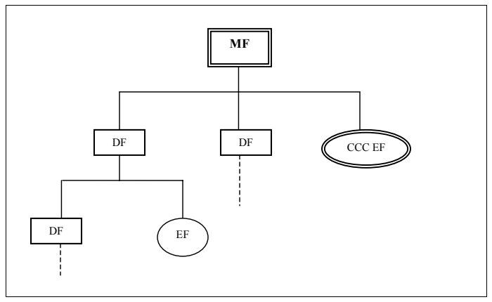
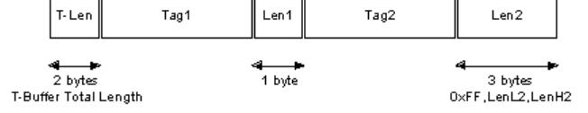
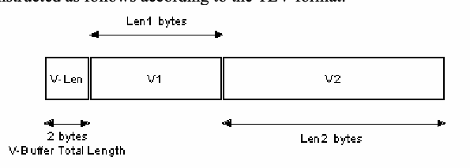

NIST IR 6887 E2003 日本語訳
英語タイトル : Government Smart Card Interoperability Specification, Version 2.1日本語タイトル : 政府スマートカード相互運用仕様 バージョン 2.1
公開日 : 2003-07-16
原文URL : https://csrc.nist.gov/pubs/ir/6887/e2003/final
原本 PDF : https://doi.org/10.6028/NIST.IR.6887e2003
訳文 : 有志による非公式の日本語訳（AI による翻訳とレビュー）。全 2001 段落のうち 1818 段落を翻訳済み（原文取得日 : 2026-10-31）
[要約] NIST IR 6887 E2003 は、2003 年 7 月 16 日付の政府スマートカード相互運用仕様（GSC-IS）バージョン 2.1 です。GSC-IS は、ファイルシステムカードと仮想マシンカードの両方に対応する、相互運用可能なスマートカードサービスプロバイダモジュールのためのアーキテクチャモデルを定義しています。相互運用性は、サービス呼び出しレベルとカードコマンド（APDU）レベルの 2 つのレベルで提供され、仕様はアクセス制御モデル、基本サービスインターフェース（BSI）、仮想カードエッジインターフェース、カード機能コンテナ、コンテナの命名とデータモデルを定めています。スマートカードの初期化、暗号鍵管理、スマートカードとカードリーダーの間の通信、カードリーダーとホストコンピューターシステムの間の通信については、相互運用性を扱わないとしています。
［NIST のロゴ。公的な標章のため、この非公式サイトには掲載していません。原本 PDF を参照してください。］
Interagency Report 6887 - 2003 Edition
省庁間報告書 6887 - 2003 年版
Government Smart Card Interoperability Specification Version 2.1
政府スマートカード相互運用仕様 バージョン 2.1
Teresa Schwarzhoff
Teresa Schwarzhoff
Jim Dray
Jim Dray
John Wack
John Wack
Eric Dalci
Eric Dalci
Alan Goldfine
Alan Goldfine
Michaela Iorga
Michaela Iorga
July 16, 2003
2003 年 7 月 16 日
NIST Interagency Report 6887 - 2003 Edition
NIST 省庁間報告書 6887 - 2003 年版
Government Smart Card Interoperability Specification
政府スマートカード相互運用仕様
The National Institute of Standards and Technology
国立標準技術研究所
COMPUTER SECURITY
コンピューターセキュリティ
Reports on Computer Systems Technology
コンピューターシステム技術に関する報告書
The Information Technology Laboratory (ITL) at the National Institute of Standards and Technology (NIST) promotes the U.S. economy and public welfare by providing technical leadership for the Nation’s measurement and standards infrastructure. ITL develops tests, test methods, reference data, proof concept implementations, and technical analysis to advance the development and productive use of information technology. ITL’s responsibilities include the development of technical, physical, administrative, and management standards and guidelines for the cost-effective security and privacy of sensitive unclassified information in Federal computer systems. This Interagency Report discusses ITL’s research, guidance, and outreach efforts in computer security, and its collaborative activities with industry, government, and academic organizations.
国立標準技術研究所（NIST）の情報技術研究所（ITL）は、国の計測・標準基盤に対する技術的なリーダーシップを提供することで、米国経済と公共の福祉を促進しています。ITL は、情報技術の開発と生産的な利用を進めるため、試験、試験方法、参照データ、概念実証の実装、および技術分析を開発しています。ITL の責務には、連邦コンピューターシステムにおける機微な非機密情報のセキュリティとプライバシーを費用対効果よく確保するための、技術的、物理的、管理的および管理上の標準とガイドラインの策定が含まれます。この省庁間報告書は、コンピューターセキュリティに関する ITL の研究、ガイダンスおよびアウトリーチの取り組みと、産業界、政府および学術組織との協働活動について論じています。
Natl. Inst. Stand. Technol. Interagency Report 6887 – 2003 Edition, 247 pages (July 2003)
Natl. Inst. Stand. Technol. Interagency Report 6887 – 2003 Edition, 247 pages (July 2003)
Certain commercial entities, equipment, or materials may be identified in this document in order to describe an experimental procedure or concept adequately. Such identification is not intended to imply recommendation or endorsement by the National Institute of Standards and Technology, nor is it intended to imply that the entities, materials, or equipment are necessarily the best available for the purpose. Implementation of this specification or various aspects of it may be covered by U.S. and foreign patents.
本書では、実験の手順や概念を適切に説明するために、特定の商業組織、機器または資材を明示している場合があります。そのような明示は、国立標準技術研究所による推奨や承認を意味するものではなく、また、それらの組織、資材または機器がその目的に利用できる最良のものであることを意味するものでもありません。この仕様またはその各側面の実装は、米国および外国の特許の対象となっている場合があります。
Foreword
序文
(a) This section is non-normative and is provided for informational purposes only.
(a) この節は規範ではなく、情報提供のみを目的としています。
(b) The Government Smart Card Initiative
(b) 政府スマートカードイニシアチブ
The Presidential Budget for Fiscal Year 1998 stated: “The Administration wants to adopt ‘smart card’ technology so that, ultimately, every Federal employee will be able to use one card for a wide range of purposes, including travel, small purchases, and building access.” The General Services Administration (GSA) was requested to take the lead in developing the Federal business tools of electronic commerce and smart cards. The Federal Smart Card Implementation Plan was then developed, under which GSA implemented a pilot program to test Government smart cards and related systems. As part of the implementation plan, GSA formed the Government Smart Card Inter-Agency Advisory Board (GSC-IAB) to serve as a steering committee for the U.S. Government Smart Card (GSC) program.
1998 会計年度の大統領予算教書は、次のように述べていました。「政権は、最終的にすべての連邦職員が、出張、少額の購入、建物へのアクセスなど幅広い用途に 1 枚のカードを使えるように、『スマートカード』技術を採用したいと考えています。」一般調達局（GSA）は、電子商取引とスマートカードという連邦のビジネスツールの開発で主導的な役割を果たすよう求められました。その後、連邦スマートカード実装計画が策定され、これに基づいて GSA は、政府スマートカードと関連システムを試験するパイロットプログラムを実施しました。実装計画の一環として、GSA は、米国政府スマートカード（GSC）プログラムの運営委員会の役割を担う政府スマートカード省庁間諮問委員会（GSC-IAB）を設置しました。
In 1999, the National Institute of Standards and Technology (NIST) agreed to lead development of technical specifications and standards related to the GSC program. NIST represents the GSC program in industry, government, and formal standards organizations, as appropriate, to promote GSC technology. NIST is also charged with developing a comprehensive GSC conformance test program.
1999 年に、国立標準技術研究所（NIST）は、GSC プログラムに関連する技術仕様と標準の開発を主導することに同意しました。NIST は、GSC 技術を推進するため、必要に応じて産業界、政府および公式の標準化団体において GSC プログラムを代表します。NIST はまた、包括的な GSC 適合性試験プログラムを開発する責務を負っています。
In May 2000, GSA awarded the Smart Access Common ID Card contracts to five prime contractors to provide smart card goods and services. Information on the use and applicability of the GSA Contract can be found at http://www.gsa.gov/smartcard.
2000 年 5 月に、GSA は、スマートカードの物品とサービスを提供するため、5 社の主契約者に Smart Access Common ID Card 契約を授与しました。GSA 契約の利用と適用可能性に関する情報は、http://www.gsa.gov/smartcard にあります。
The GSC-IAB established the Architecture Working Group (formerly known as the Technical Working Group), which consists of representatives of the contract awardees and federal agencies. The AWG, chaired and led by NIST, developed the Government Smart Card Interoperability Specification (GSC-IS), version 1.0. This specification defined the Government Smart Card Interoperability Architecture, which satisfies the core interoperability requirements of the Common Access Smart ID Card contract and the GSC Program as a whole. The AWG subsequently updated version 1.0 and released 2.0.
GSC-IAB は、契約受注者と連邦機関の代表者で構成するアーキテクチャワーキンググループ（旧称は技術ワーキンググループ）を設置しました。NIST が議長を務めて主導する AWG は、政府スマートカード相互運用仕様（GSC-IS）バージョン 1.0 を開発しました。この仕様は、政府スマートカード相互運用アーキテクチャを定義しており、これは Common Access Smart ID Card 契約と GSC プログラム全体の中核となる相互運用性要件を満たします。AWG はその後、バージョン 1.0 を更新し、2.0 を公開しました。
(c) Change Management, Requirements Definition, and Interpretation of the Specification
(c) 変更管理、要件定義および仕様の解釈
The GSC-IAB has the overall responsibility to develop the policy and procedures for handling revisions of the GSC-IS and any other maintenance. These procedures will be posted on the NIST smart card program web site (see Section (d)).
GSC-IAB は、GSC-IS の改訂やその他の保守を扱う方針と手順を策定する全体的な責任を負います。これらの手順は、NIST のスマートカードプログラムのウェブサイトに掲載されます（(d) 節を参照）。
As additional language bindings to the Basic Services Interface (see Section 1.3) are developed, they will be added to the GSC-IS.
基本サービスインターフェース（1.3 節を参照）に対する言語バインディングが追加で開発されるのに応じて、それらは GSC-IS に追加されます。
In the longer term, it is expected that the GSA-IAB will be the governing body for the identification of the U.S. Government’s requirements. Major releases of the GSC-IS will be determined by the GSC-IAB. NISTIR 6887 will be submitted for formal standardization to the ANSI approved formal standards setting body for smart card technology.
より長期的には、GSA-IAB が米国政府の要件を識別する統括組織になると見込まれています。GSC-IS のメジャーリリースは、GSC-IAB が決定します。NISTIR 6887 は、スマートカード技術について ANSI が承認した公式の標準策定団体に、正式な標準化のために提出されます。
The interpretation of the GSC-IS is the responsibility of the GSC-IAB. Interpretation issues and their resolutions will be detailed on the NIST program web site (see Section (d)).
GSC-IS の解釈は、GSC-IAB の責任です。解釈上の問題とその解決は、NIST プログラムのウェブサイトに詳述されます（(d) 節を参照）。
(d) Testing for Conformance
(d) 適合性の試験
NIST is developing a comprehensive conformance test program in support of the GSC program. Products available will be subject to a formal certification process to validate conformance to the requirements of the GSC-IS. The goal of the conformance tests is to determine whether or not a given Government Smart Card product conforms with the GSC Specification. Qualified laboratories will perform operational conformance testing. The GSC-IAB Conformance Committee is chaired by GSA, with representatives from the federal agencies and GSA contract awardees.
NIST は、GSC プログラムを支援するため、包括的な適合性試験プログラムを開発しています。入手可能な製品は、GSC-IS の要件への適合を検証する正式な認証プロセスの対象となります。適合性試験の目標は、ある政府スマートカード製品が GSC 仕様に適合しているかどうかを判定することです。適格な試験所が、運用上の適合性試験を実施します。GSC-IAB 適合性委員会は GSA が議長を務め、連邦機関と GSA 契約受注者の代表者で構成されます。
NIST is working on user guidance for achieving conformance certification for the various elements of the GSC-IS framework. This guidance will be posted at http://smartcard.nist.gov
NIST は、GSC-IS フレームワークのさまざまな要素について適合性認証を得るための利用者向けガイダンスを作成しています。このガイダンスは http://smartcard.nist.gov に掲載されます。
(e) NIST Government Smart Card Program Web Site
(e) NIST 政府スマートカードプログラムのウェブサイト
NIST maintains a publicly accessible web site at http://smartcard.nist.gov. This page contains information on all aspects of the GSC program related to the GSC-IS, including:
NIST は、一般に公開されているウェブサイト http://smartcard.nist.gov を運営しています。このページには、GSC-IS に関連する GSC プログラムのあらゆる側面についての情報が掲載されており、次のものが含まれます。
•General program descriptions and updates
•プログラムの一般的な説明と最新情報
•The current version of the GSC-IS
•GSC-IS の現行バージョン
•GSC-IS revision and standardization plans
•GSC-IS の改訂および標準化の計画
•A list of errata and other changes to the last published version of the GSC-IS
•GSC-IS の最後に公開されたバージョンに対する正誤表およびその他の変更の一覧
•A list of interpretations and clarifications of the GSC-IS, as issued by the GSC-IAB
•GSC-IAB が発行した、GSC-IS の解釈と明確化の一覧
•Details of the GSC-IS interpretation procedures
•GSC-IS の解釈手順の詳細
•Details of the GSC-IS conformance-testing program.
•GSC-IS の適合性試験プログラムの詳細。
Acknowledgements
謝辞
The authors would like to acknowledge the efforts of the original Government Smart Card Interoperability Committee; the Government Smart Card Interagency Advisory Board, composed of representatives from the public and private sectors; the General Services Administration; the prime contractors associated with the Smart Access Common ID Card contract; and the NIST smart card team. Composed of industry and government representatives, the Interoperability Committee developed the first Government Smart Card Interoperability Specification (version 1.0) during the summer of 2000.
著者らは、当初の政府スマートカード相互運用委員会、官民の代表者で構成される政府スマートカード省庁間諮問委員会、一般調達局、Smart Access Common ID Card 契約に関わる主契約者、および NIST のスマートカードチームの尽力に謝意を表します。産業界と政府の代表者で構成される相互運用委員会は、2000 年の夏に最初の政府スマートカード相互運用仕様（バージョン 1.0）を作成しました。
The efforts of the GSC Architecture Work Group (formerly known as Technical Working Group) of the Government Smart Card Interagency Advisory Board are particularly recognized. Chaired by the National Institute of Standards and Technology, the AWG was responsible for reviewing the original Government Smart Card Interoperability Specification. The AWG has been a major contributor to the development of this new version of the Government Smart Card Interoperability Specification. Special recognition is extended to the AWG.
政府スマートカード省庁間諮問委員会の GSC アーキテクチャワークグループ（旧称は技術ワーキンググループ）の取り組みは、とりわけ高く評価されます。国立標準技術研究所が議長を務める AWG は、当初の政府スマートカード相互運用仕様を審査する責任を担いました。AWG は、この政府スマートカード相互運用仕様の新バージョンの開発に大きく貢献しました。AWG に特別な謝意を表します。
Table of Contents
目次
Appendices
付録
List of Appendices
付録の一覧
Figures and Tables
図と表
Figure 2-1: The GSC-IS Architectural Model — 2-4
図 2-1: GSC-IS アーキテクチャモデル — 2-4
Figure 6-1: The Card Capability Container — 6-1
図 6-1: カード機能コンテナ — 6-1
Figure 6-2: Location of the CCC Elementary File in a file system card — 6-2
図 6-2: ファイルシステムカードにおける CCC 基本ファイルの位置 — 6-2
Figure 6-3: Shift Tuple Sequence (SL: shift level) — 6-14
図 6-3: シフトタプルのシーケンス（SL: シフトレベル） — 6-14
Figure 8-1: T-Buffer Format — 8-2
図 8-1: T-Buffer の形式 — 8-2
Figure 8-2: V-Buffer Format — 8-2
図 8-2: V-Buffer の形式 — 8-2
Table 3-1: BSI Access Method Types — 3-2
表 3-1: BSI アクセス方式の種類 — 3-2
Table 3-2: BSI Access Control Rule Types — 3-2
表 3-2: BSI アクセス制御規則の種類 — 3-2
Table 3-3: ACRs for Generic Container Provider Module Services — 3-4
表 3-3: 汎用コンテナプロバイダモジュールのサービスに対する ACR — 3-4
Table 3-4: ACRs for Cryptographic Provider Module Services — 3-4
表 3-4: 暗号プロバイダモジュールのサービスに対する ACR — 3-4
Table 4-1: BSI Return Codes — 4-3
表 4-1: BSI 戻りコード — 4-3
Table 4-2: Description of Symbols — 4-5
表 4-2: 記号の説明 — 4-5
Table 4-3: Mapping Pseudo IDL to Java — 4-5
表 4-3: 疑似 IDL から Java へのマッピング — 4-5
Table 4-4: Mapping Pseudo IDL to C — 4-6
表 4-4: 疑似 IDL から C へのマッピング — 4-6
Table 5-1: GSC-IS APDU Set — 5-1
表 5-1: GSC-IS の APDU セット — 5-1
Table 5-2: APDU Command and Response Structure — 5-2
表 5-2: APDU コマンドおよびレスポンスの構造 — 5-2
Table 5-3: APDU Command and Response Structure — 5-2
表 5-3: APDU コマンドおよびレスポンスの構造 — 5-2
Table 5-4: Generic File Access APDUs — 5-3
表 5-4: 汎用ファイルアクセス APDU — 5-3
Table 5-5: Access Control APDUs — 5-11
表 5-5: アクセス制御 APDU — 5-11
Table 5-6: Algorithm Identifiers for Authentication APDUs — 5-12
表 5-6: 認証 APDU のアルゴリズム識別子 — 5-12
Table 5-7: Public Key Operations APDUs — 5-18
表 5-7: 公開鍵操作 APDU — 5-18
Table 5-8: CARD APDUs Values — 5-22
表 5-8: CARD APDU の値 — 5-22
Table 5-9: GSC-IS Status Code Responses — 5-23
表 5-9: GSC-IS のステータスコードレスポンス — 5-23
Table 5-10: Virtual Machine Card Edge APDUs — 5-23
表 5-10: 仮想マシンカードエッジ APDU — 5-23
Table 5-11a: Successful Conditions — 5-24
表 5-11a: 成功条件 — 5-24
Table 5-11b: General Error Conditions — 5-25
表 5-11b: 一般的なエラー条件 — 5-25
Table 5-12: Common VM APDUs — 5-25
表 5-12: 共通 VM APDU — 5-25
Table 5-13: ACRs assigned to the Common VM CEI — 5-26
表 5-13: 共通 VM CEI に割り当てられる ACR — 5-26
Table 5-14: Applet Information String — 5-33
表 5-14: アプレット情報文字列 — 5-33
Table 5-15: ACR Table — 5-33
表 5-15: ACR テーブル — 5-33
Table 5-16: Applet/Object ACR Table — 5-34
表 5-16: アプレット／オブジェクト ACR テーブル — 5-34
Table 5-17: Access Method Provider Table — 5-34
表 5-17: アクセス方式プロバイダテーブル — 5-34
Table 5-18: Service Applet Table — 5-36
表 5-18: サービスアプレットテーブル — 5-36
Table 5-19: Applet/Object ACR table for a Single Object — 5-36
表 5-19: 単一オブジェクトのアプレット／オブジェクト ACR テーブル — 5-36
Table 5-20: Access Method Provider Table — 5-37
表 5-20: アクセス方式プロバイダテーブル — 5-37
Table 5-21: Service Applet Table — 5-37
表 5-21: サービスアプレットテーブル — 5-37
Table 5-22: Generic Container VM APDUs — 5-41
表 5-22: 汎用コンテナ VM APDU — 5-41
Table 5-23: Symmetric Key VM APDUs — 5-44
表 5-23: 共通鍵 VM APDU — 5-44
Table 6-1: CCC Fields — 6-5
表 6-1: CCC のフィールド — 6-5
Table 6-2: Tuple Byte Descriptions — 6-8
表 6-2: タプルのバイトの説明 — 6-8
Table 6-3: Parameter and Function Codes — 6-9
表 6-3: パラメーターコードと機能コード — 6-9
Table 6-4: Status Tuples — 6-10
表 6-4: ステータスタプル — 6-10
Table 6-5: Standard Status Code Responses — 6-10
表 6-5: 標準ステータスコードレスポンス — 6-10
Table 6-6: Default vs. Schlumberger DF APDU — 6-12
表 6-6: 既定の DF APDU と Schlumberger の DF APDU の比較 — 6-12
Table 6-7: Tuple Creation Sequence — 6-13
表 6-7: タプル作成のシーケンス — 6-13
Table 6-8: Derived Select DF Tuple — 6-13
表 6-8: 派生した Select DF タプル — 6-13
Table 6-9: Example of Extended Function Code — 6-14
表 6-9: 拡張機能コードの例 — 6-14
Table 6-10: Descriptor Codes — 6-15
表 6-10: 記述子コード — 6-15
Table E-1: BSI functions using the discovery method — E-2
表 E-1: 検出方式を使う BSI 関数 — E-2
1. Introduction
1. はじめに
1.1 Background
1.1 背景
A typical configuration for a smart card system consists of a host computer with one or more smart card readers attached to hardware communications ports. Smart cards can be inserted into the readers, and software running on the host computer communicates with these cards using a protocol defined by ISO 7816-4 [ISO4] and 7816-8 [ISO8]. The ISO standard smart card communications protocol defines Application Protocol Data Units (APDU) that are exchanged between smart cards and host computers. This APDU based interface is referred to as the “virtual card edge” and the two terms are used interchangeably.
典型的なスマートカードシステムの構成は、ハードウェアの通信ポートに 1 台以上のスマートカードリーダーを接続したホストコンピューターです。スマートカードはリーダーに挿入でき、ホストコンピューター上で動作するソフトウェアは、ISO 7816-4 [ISO4] と 7816-8 [ISO8] が定めるプロトコルを使ってこれらのカードと通信します。ISO 標準のスマートカード通信プロトコルは、スマートカードとホストコンピューターの間で交換されるアプリケーションプロトコルデータユニット（APDU）を定義しています。この APDU に基づくインターフェースは「仮想カードエッジ」と呼ばれ、この 2 つの用語は同じ意味で使われます。
Client applications have traditionally been designed to communicate with ISO smart cards using the APDU protocol through low-level software drivers that provide an APDU transport mechanism between the client application and a smart card. Smart card families can implement the APDU protocol in a variety of ways, so client applications must have intimate knowledge of the APDU set of the smart card they are communicating with. This is generally accomplished by programming a client application to work with a specific card, since it would not be practical to design a client application to accommodate the different APDU sets of a large number of smart card families.
クライアントアプリケーションは従来、クライアントアプリケーションとスマートカードの間で APDU の転送機構を提供する低レベルのソフトウェアドライバを通じて、APDU プロトコルを使って ISO スマートカードと通信するように設計されてきました。スマートカードのファミリーは APDU プロトコルをさまざまな方法で実装できるため、クライアントアプリケーションは、通信相手のスマートカードの APDU セットを詳しく知っていなければなりません。これは一般に、クライアントアプリケーションを特定のカードで動作するようにプログラミングすることで実現されます。多数のスマートカードファミリーの異なる APDU セットに対応するクライアントアプリケーションを設計するのは、現実的ではないためです。
The tight coupling between client applications and smart card APDU sets has several drawbacks. Applications programmers must be thoroughly familiar with smart card technology and the complex APDU protocol. If the cards that an application is hard coded to use become commercially unavailable, the application must be redesigned to use different cards. Customers also have less freedom to select different smart card products, since their applications will only work with one or a small number of similar cards.
クライアントアプリケーションとスマートカードの APDU セットが密に結合していることには、いくつかの欠点があります。アプリケーションのプログラマは、スマートカード技術と複雑な APDU プロトコルに精通していなければなりません。アプリケーションが使用するようハードコードされているカードが市場で入手できなくなった場合、そのアプリケーションは、別のカードを使うように設計し直さなければなりません。また、利用者のアプリケーションは 1 種類または少数の類似したカードでしか動作しないため、利用者が別のスマートカード製品を選ぶ自由も小さくなります。
This Government Smart Card Interoperability Specification (GSC-IS) provides solutions to a number of the interoperability challenges associated with smart card technology. The original version of the GSC-IS (version 1.0, August 2000) was developed by the GSC Interoperability Committee led by the General Services Administration (GSA) and the National Institute of Standards and Technology (NIST), in association with the GSA Smart Access Common Identification Card contract.
この政府スマートカード相互運用仕様（GSC-IS）は、スマートカード技術に関わる多くの相互運用性の課題に対する解決策を提供します。GSC-IS の最初のバージョン（バージョン 1.0、2000 年 8 月）は、GSA Smart Access Common Identification Card 契約に関連して、一般調達局（GSA）と国立標準技術研究所（NIST）が率いる GSC 相互運用委員会によって開発されました。
1.2 Scope, Limitations, and Applicability of the Specification
1.2 仕様の範囲、制限および適用可能性
The GSC-IS defines an architectural model for interoperable smart card service provider modules, compatible with both file system cards and virtual machine cards. Smart cards using both the T=0 and T=1 [ISO3] communications protocols are supported. The GSC-IS includes a Basic Services Interface (BSI), which addresses interoperability of a core set of smart card services at the interface layer between client applications and smart card service provider modules. The GSC-IS also defines a mechanism at the card edge layer for interoperation with smart cards that use a wide variety of APDU sets, including both file system cards and virtual machine cards.
GSC-IS は、ファイルシステムカードと仮想マシンカードの両方に対応する、相互運用可能なスマートカードサービスプロバイダモジュールのためのアーキテクチャモデルを定義しています。T=0 と T=1 [ISO3] の両方の通信プロトコルを使うスマートカードに対応します。GSC-IS には基本サービスインターフェース（BSI）が含まれており、これは、クライアントアプリケーションとスマートカードサービスプロバイダモジュールの間のインターフェース層で、中核となるスマートカードサービス群の相互運用性に対応するものです。GSC-IS はまた、ファイルシステムカードと仮想マシンカードの両方を含む、多様な APDU セットを使うスマートカードと相互運用するための機構を、カードエッジ層で定義しています。
Interoperability is not addressed for the following areas:
次の領域については、相互運用性を扱いません。
•Smart card initialization
•スマートカードの初期化
•Cryptographic key management
•暗号鍵の管理
•Communications between smart cards and card readers
•スマートカードとカードリーダーの間の通信
•Communications between smart card readers and host computer systems.
•スマートカードリーダーとホストコンピューターシステムの間の通信。
1.3 Conforming to the Specification
1.3 仕様への適合
A smart card service provider module implementation that claims conformance to the GSC-IS must implement each of the following:
GSC-IS への適合を主張するスマートカードサービスプロバイダモジュールの実装は、次のすべてを実装しなければなりません。
•The Architectural Model, as defined in Chapter 2
•第 2 章で定義されているアーキテクチャモデル
•The Access Control Model, as defined in Chapter 3
•第 3 章で定義されているアクセス制御モデル
•The Basic Services Interface, as defined in Chapter 4
•第 4 章で定義されている基本サービスインターフェース
•The Virtual Card Edge Interface, as defined in Chapter 5
•第 5 章で定義されている仮想カードエッジインターフェース
•The Card Capabilities Container, as defined in Chapter 6
•第 6 章で定義されているカード機能コンテナ
•Container Naming, as defined in Chapter 7
•第 7 章で定義されているコンテナの命名
•Support for both of the Container Data Models defined in Chapter 8 and the appropriate Appendices
•第 8 章および該当する付録で定義されている両方のコンテナデータモデルのサポート
•At least one language binding for BSI Services, as defined in the Appendices.
•付録で定義されている、BSI サービスに対する少なくとも 1 つの言語バインディング。
A smart card that claims conformance to the GSC-IS must support each of the following:
GSC-IS への適合を主張するスマートカードは、次のすべてをサポートしなければなりません。
•The Architectural Model as it relates to smart cards, i.e., as defined in sections 1, 4, 5, and 6 of Chapter 2
•スマートカードに関係するアーキテクチャモデル。すなわち、第 2 章の 1、4、5、6 の各節で定義されているもの
•The Access Control Model, as defined in Chapter 3
•第 3 章で定義されているアクセス制御モデル
•Either the file system card edge interface or the VM card edge interface, as defined in Chapter 5
•第 5 章で定義されている、ファイルシステムのカードエッジインターフェースまたは VM カードエッジインターフェースのいずれか
•The Card Capabilities Container, as defined in Chapter 6
•第 6 章で定義されているカード機能コンテナ
•Container Naming, as defined in Chapter 7
•第 7 章で定義されているコンテナの命名
•One of the Container Data Models defined in Chapter 8 and the appropriate Appendix. The Access Control File and associated SEIWG string defined in Appendix C are mandatory for contact-type GSC cards, and the SEIWG container defined in Appendix G is mandatory for contactless GSC cards.
•第 8 章および該当する付録で定義されているコンテナデータモデルの 1 つ。付録 C で定義されているアクセス制御ファイルと関連する SEIWG 文字列は、接触型の GSC カードでは必須であり、付録 G で定義されている SEIWG コンテナは、非接触型の GSC カードでは必須です。
As used in this document, the conformance keywords “shall” and “must” (which are interchangeable) denote mandatory features of the GSC-IS. The keyword “should” denotes a feature that is recommended but not mandatory, while the keyword “may” denotes a feature whose presence or absence does not preclude conformance.
この文書で使われる適合性のキーワード「shall」と「must」（これらは互換です）は、GSC-IS の必須の機能を表します。キーワード「should」は、推奨されるが必須ではない機能を表し、キーワード「may」は、その有無が適合性を妨げない機能を表します。
2. Architectural Model
2. アーキテクチャモデル
2.1 Overview
2.1 概要
The GSC-IS provides interoperability at two levels: the service call level and the card command (APDU) level. A brief explanation of these interoperability levels follows:
GSC-IS は、サービス呼び出しレベルとカードコマンド（APDU）レベルの 2 つのレベルで相互運用性を提供します。これらの相互運用性のレベルについて、以下に簡単に説明します。
•Service Call Level: This level is concerned with functional calls required to obtain various services from the card (e.g., encryption, authentication, digital signatures, etc.). The GSC-IS addresses interoperability at this level by defining an Applications Programming Interface (API) called the Basic Services Interface (BSI) that defines a common high level model for smart card services. The module that implements the BSI and provides an interoperable set of smart card services to client applications is called the Service Provider Module (SPM). These services are logically divided into three modules that provide utility, secure data storage, and cryptographic services. Since an SPM generally will be implemented through a combination of hardware and software, the software component of the SPM is referred to as the Service Provider Software (SPS).
•サービス呼び出しレベル: このレベルは、カードからさまざまなサービス（暗号化、認証、デジタル署名など）を得るために必要な機能の呼び出しに関するものです。GSC-IS は、スマートカードサービスの共通の高水準モデルを定義する、基本サービスインターフェース（BSI）と呼ばれるアプリケーションプログラミングインターフェース（API）を定義することで、このレベルの相互運用性に対応します。BSI を実装し、相互運用可能なスマートカードサービス群をクライアントアプリケーションに提供するモジュールは、サービスプロバイダモジュール（SPM）と呼ばれます。これらのサービスは、ユーティリティ、セキュアなデータ保存、および暗号のサービスを提供する 3 つのモジュールに論理的に分けられます。SPM は一般にハードウェアとソフトウェアの組み合わせで実装されるため、SPM のソフトウェア部分はサービスプロバイダソフトウェア（SPS）と呼ばれます。
•Card Command Level: This level is concerned with the exact APDUs (ISO4) that are sent to the card to obtain the required service. The GSC-IS addresses interoperability at this level by defining the API called the Virtual Card Edge Interface (VCEI) that consists of a card-independent standard set of APDUs that support the functions defined in the BSI and implemented by the SPM.
•カードコマンドレベル: このレベルは、必要なサービスを得るためにカードへ送られる具体的な APDU（ISO4）に関するものです。GSC-IS は、BSI で定義され SPM が実装する機能をサポートする、カードに依存しない標準の APDU セットで構成される、仮想カードエッジインターフェース（VCEI）と呼ばれる API を定義することで、このレベルの相互運用性に対応します。
The SPM is a combination of both these levels and it includes:
SPM はこれら両方のレベルの組み合わせであり、次のものを含みます。
•SPS, implementing both BSI and VCEI interfaces
•BSI と VCEI の両方のインターフェースを実装する SPS
•Smart card reader driver
•スマートカードリーダードライバ
•Smart card reader
•スマートカードリーダー
•GSC-IS conformant smart card
•GSC-IS に適合するスマートカード
Certain data sets need to be available in the card to support the interoperability provided by the BSI and VCEI. To ensure that there is a standard format (or schema) for storing these data sets, and to enable uniform access and interpretation, the GSC-IS defines Data Models (DM). These Data Models provide data portability across GSC-IS conformant card implementations, ensuring that a core set of data elements is available on all cards. The storage entities for various categories of data sets are called containers. One of these containers, the Card Capability Container (CCC), describes the differences between a smart card’s native APDU set and the standard APDU set defined by the VCEI. An SPS retrieves a smart card’s CCC and uses it to perform the translation between the VCEI and the card’s native APDU set. The GSC-IS accommodates any smart card whose APDU set can be mapped to the VCEI via a CCC definition.
BSI と VCEI が提供する相互運用性を支えるためには、特定のデータセットをカード内で利用できる必要があります。これらのデータセットを保存するための標準の形式（またはスキーマ）を確保し、統一的なアクセスと解釈を可能にするため、GSC-IS はデータモデル（DM）を定義しています。これらのデータモデルは、GSC-IS に適合するカードの実装の間でデータの可搬性を提供し、データ要素の中核となる集合がすべてのカードで利用できることを保証します。さまざまな種類のデータセットを保存するための実体は、コンテナと呼ばれます。これらのコンテナの 1 つであるカード機能コンテナ（CCC）は、スマートカードのネイティブ APDU セットと、VCEI が定義する標準 APDU セットとの違いを記述します。SPS は、スマートカードの CCC を取得し、それを使って VCEI とカードのネイティブ APDU セットの間の変換を行います。GSC-IS は、APDU セットを CCC の定義によって VCEI にマッピングできるあらゆるスマートカードに対応します。
The components of the GSC-IS architecture are presented in Figure 2-1 and are further described in Sections 2.2 - 2.8. All objects below the client application layer are components of the SPM.
GSC-IS アーキテクチャの構成要素を図 2-1 に示し、2.2 節から 2.8 節でさらに説明します。クライアントアプリケーション層より下にあるすべてのオブジェクトは、SPM の構成要素です。
![Layered architecture diagram. Top to bottom: a gray box "Client Application"; a row of two boxes "Basic Services Interface (BSI)" and "Extended Service Interface(s) (XSI)"; a box "Virtual Card Edge Interface (VCEI)"; a box "Card Reader Driver"; a box "Card Reader"; and a rounded box "GSC-IS Compliant Smart Card" containing a smart-card chip picture and two boxes "CCC & VCEI Protocol" and "Data Model Object (DMO)". Double-headed arrows connect Client Application to the BSI and XSI boxes, and four double-headed arrows each connect Card Reader Driver to Card Reader and Card Reader to the smart card. Braces on the left: "SPS" spans the BSI/XSI row and the VCEI box; "SPM" spans from the BSI/XSI row down to the smart card. Brace on the right: "Host PC" spans from Client Application to Card Reader Driver. Labels on the right with short lines: "Smart Card Reader" beside Card Reader and "Smart Card" beside the smart card box.](assets/ir-6887e2003/p0022-drawing-01.png)
層構造の構成図です。上から順に、灰色の箱「Client Application」（クライアントアプリケーション）、横並びの 2 つの箱「Basic Services Interface (BSI)」（基本サービスインターフェース）と「Extended Service Interface(s) (XSI)」（拡張サービスインターフェース）、箱「Virtual Card Edge Interface (VCEI)」（仮想カードエッジインターフェース）、箱「Card Reader Driver」（カードリーダドライバ）、箱「Card Reader」（カードリーダ）、角の丸い箱「GSC-IS Compliant Smart Card」（GSC-IS 準拠スマートカード）が並びます。最後の箱の中には IC チップの絵と、2 つの箱「CCC & VCEI Protocol」（CCC と VCEI のプロトコル）と「Data Model Object (DMO)」（データモデルオブジェクト）があります。Client Application と BSI・XSI の箱は両向き矢印で結ばれ、Card Reader Driver と Card Reader の間、Card Reader とスマートカードの間はそれぞれ 4 本の両向き矢印で結ばれています。左側の波括弧「SPS」は BSI・XSI の行と VCEI の箱をまとめ、「SPM」は BSI・XSI の行からスマートカードまでをまとめます。右側の波括弧「Host PC」（ホスト PC）は Client Application から Card Reader Driver までをまとめます。右側には短い線で「Smart Card Reader」（スマートカードリーダ）が Card Reader に、「Smart Card」（スマートカード）がスマートカードの箱に添えられています。
Figure 2-1: The GSC-IS Architectural Model
図 2-1: GSC-IS アーキテクチャモデル
2.2 Basic Services Interface Overview
2.2 基本サービスインターフェースの概要
All Smart Card Service Provider Modules shall implement the BSI. The BSI is logically organized into three provider modules:
すべてのスマートカードサービスプロバイダモジュールは、BSI を実装しなければなりません。BSI は、論理的に 3 つのプロバイダモジュールで構成されます。
•Utility Provider Module: Provides utility services for obtaining a list of available card readers, establishing and terminating logical connections with a smart card, etc.
•ユーティリティプロバイダモジュール: 利用可能なカードリーダーの一覧の取得、スマートカードとの論理接続の確立と終了などのユーティリティサービスを提供します。
•Generic Container Provider Module: Provides a unified abstraction of the storage services of smart cards, presenting applications with a simple interface for managing generic containers of data elements in Tag/Length/Value format [ISO4].
•汎用コンテナプロバイダモジュール: スマートカードの保存サービスを統一的に抽象化し、タグ・長さ・値形式 [ISO4] のデータ要素の汎用コンテナを管理するための単純なインターフェースをアプリケーションに提示します。
•Cryptographic Provider Module: Provides fundamental cryptographic services such as random number generation, authentication, and digital signature generation.
•暗号プロバイダモジュール: 乱数生成、認証、デジタル署名の生成などの基本的な暗号サービスを提供します。
The capabilities of a given SPM depend on the smart card available to the SPM when a client application requests a service through a BSI call. In cases where a service is not available, the BSI call shall return an error code indicating that the requested service is not available. For example, a user may insert a smart card that does not have public key cryptographic capabilities and then perform an operation that causes a client application to request a digital signature calculation from the associated SPM. Since the smart card cannot provide this service, the BSI shall return a “service not available” error code to the client application.
ある SPM の機能は、クライアントアプリケーションが BSI の呼び出しによってサービスを要求した時点で、その SPM が利用できるスマートカードに依存します。サービスを利用できない場合、BSI の呼び出しは、要求されたサービスが利用できないことを示すエラーコードを返さなければなりません。たとえば、利用者が公開鍵暗号の機能を持たないスマートカードを挿入し、その後、クライアントアプリケーションが関連する SPM にデジタル署名の計算を要求することになる操作を行う場合があります。スマートカードはこのサービスを提供できないため、BSI は「サービス利用不可」のエラーコードをクライアントアプリケーションに返さなければなりません。
2.3 Extended Service Interfaces Overview
2.3 拡張サービスインターフェースの概要
Because the BSI is not a complete operational interface, real world SPM implementations may support additional functionality outside the BSI domain. Because the BSI provides an interoperable interface, it is unable to address the varying operational requirements. Therefore, real world SPM implementations may support additional functionality outside the BSI domain. An SPM may therefore include an Extended Service Interface (XSI) that provides non-interoperable, but operationally required, functions. Since XSIs are implementation and application specific, they are accommodated by the GSC-IS architectural model but are not defined in the GSC-IS. Card initialization and cryptographic key management are examples of functions that must currently be implemented in the XSI domain.
BSI は運用面のインターフェースとして完全ではないため、実世界の SPM の実装は、BSI の領域の外にある追加の機能をサポートする場合があります。BSI は相互運用可能なインターフェースを提供するため、さまざまな運用要件には対応できません。そのため、実世界の SPM の実装は、BSI の領域の外にある追加の機能をサポートする場合があります。したがって SPM は、相互運用性はないが運用上必要な機能を提供する、拡張サービスインターフェース（XSI）を含む場合があります。XSI は実装とアプリケーションに固有であるため、GSC-IS のアーキテクチャモデルでは XSI を扱いますが、GSC-IS では定義しません。カードの初期化と暗号鍵管理は、現状では XSI の領域で実装しなければならない機能の例です。
2.4 Virtual Card Edge Interface Overview
2.4 仮想カードエッジインターフェースの概要
ISO 7816-4 [ISO4] defines a hierarchical file system structure for smart cards. Smart cards that conform to ISO 7816-4 [ISO4] are therefore known as “file system” cards. The Card Operating System program of a file system card is usually hard coded into the logic of the smart card integrated circuit during the manufacturing process and cannot be changed thereafter.
ISO 7816-4 [ISO4] は、スマートカードの階層的なファイルシステム構造を定義しています。そのため、ISO 7816-4 [ISO4] に適合するスマートカードは「ファイルシステム」カードと呼ばれます。ファイルシステムカードのカードオペレーティングシステムのプログラムは、通常、製造工程でスマートカードの集積回路のロジックにハードコードされ、その後は変更できません。
In recent years other smart card architectures have been created that allow developers to load executable programs onto smart cards after the cards have been manufactured. As one example, JavaCard™ [JAVA] defines a Java Virtual Machine (VM) specification for smart card processors. Developers can load compiled Java applets onto a smart card containing the JavaCard™ VM, programmatically changing the behavior of the card.
近年は、カードの製造後に、開発者が実行可能プログラムをスマートカードにロードできるスマートカードのアーキテクチャが作られています。一例として、JavaCard™ [JAVA] は、スマートカードのプロセッサ向けの Java 仮想マシン（VM）仕様を定義しています。開発者は、コンパイル済みの Java アプレットを JavaCard™ VM を搭載したスマートカードにロードして、プログラムによってカードの動作を変更できます。
A virtual machine card is one that can be extended by loading executable programs after the card has been manufactured. This Specification uses the term “virtual machine smart card” in the general sense. A virtual machine smart card can theoretically be programmed to support any communications protocol, including the APDU based protocols of the ISO 7816-4 [ISO4] and 7816-8 [ISO8] standard.
仮想マシンカードとは、カードの製造後に実行可能プログラムをロードすることで拡張できるカードです。この仕様では、「仮想マシンスマートカード」という用語を一般的な意味で使います。仮想マシンスマートカードは、理論上、ISO 7816-4 [ISO4] 規格と 7816-8 [ISO8] 規格の APDU ベースのプロトコルを含め、あらゆる通信プロトコルをサポートするようにプログラムできます。
The GSC-IS VCEI defines default sets of interoperable APDU level commands for both virtual machine and file system smart cards. The SPS of an SPM shall use the information provided by a smart card’s CCC to map that card’s native APDU set to the VCEI default set. The VCEI shall consist of:
GSC-IS の VCEI は、仮想マシンスマートカードとファイルシステムスマートカードの両方について、相互運用可能な APDU レベルのコマンドの既定のセットを定義します。SPM の SPS は、スマートカードの CCC が提供する情報を使って、そのカードのネイティブ APDU セットを VCEI の既定のセットにマッピングしなければなりません。VCEI は、次のもので構成されなければなりません。
•A card edge definition for file system cards
•ファイルシステムカード用のカードエッジ定義
•A card edge definition for VM cards, composed of three providers:
•3 つのプロバイダで構成される、VM カード用のカードエッジ定義:
•A generic container provider
•汎用コンテナプロバイダ
•A symmetric key (SKI) cryptographic service provider
•共通鍵（SKI）暗号サービスプロバイダ
•A public key infrastructure (PKI) cryptographic service provider.
•公開鍵基盤（PKI）暗号サービスプロバイダ。
2.5 Roles of the BSI and VCEI
2.5 BSI と VCEI の役割
The service provider modules of the BSI are a higher level abstraction of the card level providers. Standardization at the VCEI layer establishes interoperability between any GSC conformant SPS and any GSC conformant smart card. Similarly, standardization at the BSI layer establishes interoperability between any GSC conformant application and any GSC conformant SPS. Vendor neutrality is assured because GSC smart cards are interchangeable at the VCEI and GSC SPSs are interchangeable at both the BSI and VCEI.
BSI のサービスプロバイダモジュールは、カードレベルのプロバイダをより高い水準で抽象化したものです。VCEI 層での標準化は、GSC に適合するあらゆる SPS と、GSC に適合するあらゆるスマートカードとの間の相互運用性を確立します。同様に、BSI 層での標準化は、GSC に適合するあらゆるアプリケーションと、GSC に適合するあらゆる SPS との間の相互運用性を確立します。GSC スマートカードは VCEI で交換可能であり、GSC の SPS は BSI と VCEI の両方で交換可能であるため、ベンダー中立性が確保されます。
2.6 GSC-IS Data Model Overview
2.6 GSC-IS データモデルの概要
Each GSC-IS conformant smart card shall conform to a GSC-IS Data Model. GSC-IS Data Models define the set of containers and data elements within each container for cards supporting that Data Model. The GSC-IS defines two Data Models: the GSC Data Model (Appendix C) (formerly referred to as the J.8 Data Model in GSC-IS v1.0) and the U.S. Department of Defense Common Access Card Data Model (Appendix D). The following containers are mandatory in either Data Model:
GSC-IS に適合する各スマートカードは、GSC-IS データモデルに適合しなければなりません。GSC-IS データモデルは、そのデータモデルをサポートするカードについて、コンテナの集合と、各コンテナ内のデータ要素を定義します。GSC-IS は 2 つのデータモデルを定義しています。GSC データモデル（付録 C）（GSC-IS v1.0 では J.8 データモデルと呼ばれていたもの）と、米国国防総省の共通アクセスカードデータモデル（付録 D）です。どちらのデータモデルでも、次のコンテナが必須です。
•CCC for contact and contactless cards and
•接触型カードおよび非接触型カードの CCC、および
•Access control file with SEIWG [SEIW] string for contact cards or
•接触型カードの SEIWG [SEIW] 文字列を伴うアクセス制御ファイル、または
•SEIWG container and SEIWG [SEIW] string for contactless cards.
•非接触型カードの SEIWG コンテナと SEIWG [SEIW] 文字列。
The remaining containers and data elements are optional. However, if an implementation requires any of the containers and data elements defined in the Data Models, the containers and data elements must conform to the Data Model definitions. Data Model requirements are presented in Chapter 8.
残りのコンテナとデータ要素は任意です。ただし、実装がデータモデルで定義されたコンテナやデータ要素のいずれかを必要とする場合、そのコンテナとデータ要素は、データモデルの定義に適合しなければなりません。データモデルの要件は、第 8 章に示します。
Containers are accessed through the Generic Container Provider Module of the BSI. Access to the containers are subject to the Access Control Rules (ACR) defined in Chapter 3.
コンテナには、BSI の汎用コンテナプロバイダモジュールを通じてアクセスします。コンテナへのアクセスは、第 3 章で定義されるアクセス制御規則（ACR）に従います。
This document uses the terms “file,” “container,” and “object” synonymously.
この文書では、「ファイル」、「コンテナ」、「オブジェクト」という用語を同義で使います。
2.7 Card Capabilities Container Overview
2.7 カード機能コンテナの概要
Each GSC-IS conformant card shall carry a Card Capabilities Container. The CCC is one of the mandatory containers that must be present in all GSC-IS Data Models. The purpose of the CCC is to describe the differences between a given card’s APDU set and the APDU set defined by the GSC-IS Virtual Card Edge Interface. The GSC-IS provides standard mechanisms for retrieving a CCC from a smart card (Section 6.2). Once the CCC for a particular card is obtained, software on the host computer (specifically, the SPS) uses this information to translate between the VCEI and the card’s native APDU set. Deviations from the card’s Data Model structure are represented in a CCC.
GSC-IS に適合する各カードは、カード機能コンテナを備えなければなりません。CCC は、すべての GSC-IS データモデルに存在しなければならない必須コンテナの 1 つです。CCC の目的は、あるカードの APDU セットと、GSC-IS 仮想カードエッジインターフェースが定義する APDU セットとの違いを記述することです。GSC-IS は、スマートカードから CCC を取得するための標準の機構（6.2 節）を提供します。特定のカードの CCC を取得すると、ホストコンピューター上のソフトウェア（具体的には SPS）は、この情報を使って VCEI とカードのネイティブ APDU セットの間で変換を行います。カードのデータモデル構造からの逸脱は、CCC に表現されます。
The CCC allows each GSC-IS conformant smart card to carry the information needed by the SPS to communicate with that card. This general mechanism for dynamically translating APDU sets eliminates the need to distribute, install, and maintain card specific APDU level drivers on host computer systems.
CCC により、GSC-IS に適合する各スマートカードは、SPS がそのカードと通信するために必要な情報を保持できます。APDU セットを動的に変換するこの一般的な機構により、カード固有の APDU レベルのドライバをホストコンピューターシステムに配布し、インストールし、保守する必要がなくなります。
The rules for constructing a valid CCC are defined in Section 6.3. All GSC-IS smart cards shall contain a CCC that conforms to this specification.
有効な CCC を構築するための規則は、6.3 節で定義されています。すべての GSC-IS スマートカードは、この仕様に適合する CCC を含まなければなりません。
2.8 Service Provider Software Overview
2.8 サービスプロバイダソフトウェアの概要
The SPS component of an SPM shall implement the BSI and the VCEI. It is responsible for retrieving CCCs from cards, using this information to translate between the smart card’s native APDU set and the VCEI, and for handling the details of APDU level communications with the card. SPS implementations work with a particular card reader driver layer that transports APDUs between the SPS and the smart card.
SPM の SPS 構成要素は、BSI と VCEI を実装しなければなりません。SPS は、カードから CCC を取得し、この情報を使ってスマートカードのネイティブ APDU セットと VCEI の間で変換を行い、カードとの APDU レベルの通信の詳細を処理する責任を負います。SPS の実装は、SPS とスマートカードの間で APDU を転送する特定のカードリーダードライバ層と連携して動作します。
2.9 Card Reader Drivers
2.9 カードリーダードライバ
The GSC-IS does not address interoperability between smart card readers and host computer systems. Several specifications already exist in this area, including the Personal Computer Smart Card (PC/SC, [PCSC]) specification and the OpenCard Framework (OCF, [OCF]). The choice of card reader driver software is influenced to some degree by the operating environment, although PC/SC and OCF have been ported to various operating systems.
GSC-IS は、スマートカードリーダーとホストコンピューターシステムの間の相互運用性を扱いません。この分野には、パーソナルコンピューター・スマートカード（PC/SC、[PCSC]）仕様や OpenCard Framework（OCF、[OCF]）など、すでにいくつかの仕様があります。PC/SC と OCF はさまざまなオペレーティングシステムに移植されていますが、カードリーダードライバソフトウェアの選択は、動作環境からある程度の影響を受けます。
Because card reader driver solutions are available and several of these have been widely adopted, the GSC-IS allows developers the freedom to choose any card reader driver that provides the reader level services required by the SPS layer including:
カードリーダードライバのソリューションが利用可能であり、そのいくつかが広く採用されているため、GSC-IS は、SPS 層が必要とするリーダーレベルのサービスを提供する任意のカードリーダードライバを、開発者が自由に選べるようにしています。そのサービスには次のものが含まれます。
•Transport of “raw” (unprocessed) APDUs between the SPS layer and the smart card,
•SPS 層とスマートカードの間での「生の」（未処理の）APDU の転送、
•Functions to provide a list of available readers,
•利用可能なリーダーの一覧を提供する機能、
•And to establish and terminate logical connections to cards inserted into readers.
•およびリーダーに挿入されたカードとの論理接続を確立し終了する機能。
Proprietary card reader drivers can also be used as long as they provide the raw APDU transport and card reader management functions required by an SPS. Some applications may have unique requirements that mandate a special purpose card reader. For example, the configuration required by a physical access control application may not be able to accommodate a PC/SC or OCF card reader driver layer and would therefore require a custom card reader driver.
独自仕様のカードリーダードライバも、SPS が必要とする生の APDU の転送とカードリーダー管理の機能を提供する限り、使用できます。アプリケーションによっては、特殊用途のカードリーダーを必須とする固有の要件を持つ場合があります。たとえば、物理アクセス制御アプリケーションに必要な構成は、PC/SC や OCF のカードリーダードライバ層に対応できない場合があり、その場合はカスタムのカードリーダードライバが必要になります。
The decision not to include a card reader driver layer specification in the GSC-IS has important consequences. This implies a pair-wise relationship between an SPS and the card reader driver. An SPS implementation works with a specific card reader driver and is constrained to operate with the card readers supported by that driver. The degree of interoperability between card readers and host computer systems is entirely determined by the card reader driver component.
GSC-IS にカードリーダードライバ層の仕様を含めないという決定には、重要な帰結があります。これは、SPS とカードリーダードライバの間に対ごとの関係があることを意味します。SPS の実装は特定のカードリーダードライバと連携して動作し、そのドライバがサポートするカードリーダーでしか動作できません。カードリーダーとホストコンピューターシステムの間の相互運用性の度合いは、カードリーダードライバ構成要素によってすべて決まります。
In cases where an industry standard card reader driver component is chosen, it is possible to take advantage of existing conformance test programs and select from a range of commercially available, conformant card readers. If a special purpose (proprietary) card reader driver is chosen, these options may not be available. In some cases proprietary card reader drivers work only with proprietary card reader designs, and may therefore require development of special purpose conformance test programs.
業界標準のカードリーダードライバ構成要素を選ぶ場合は、既存の適合性試験プログラムを活用でき、市販されている適合したカードリーダーの中から選択できます。特殊用途の（独自仕様の）カードリーダードライバを選ぶ場合は、これらの選択肢を利用できないことがあります。独自仕様のカードリーダードライバが独自設計のカードリーダーとしか動作しない場合があり、その場合は、特殊用途の適合性試験プログラムの開発が必要になることがあります。
3. Access Control Model
3. アクセス制御モデル
The smart card services and containers provided by a SPM are subject to a set of Access Control Rules (ACR). ACRs are defined for each card service and default container when a GSC-IS conformant smart card is initialized. The card level service providers are responsible for enforcing these ACRs and shall not provide a given service until the client application has fulfilled the applicable access control requirements. The GSC-IS specifies a discovery mechanism that allows client applications to determine the ACRs for a specific service provider or container.
SPM が提供するスマートカードのサービスとコンテナは、一連のアクセス制御規則（ACR）に従います。ACR は、GSC-IS に適合するスマートカードが初期化されるときに、各カードサービスと既定のコンテナに対して定義されます。カードレベルのサービスプロバイダは、これらの ACR を実施する責任を負い、クライアントアプリケーションが該当するアクセス制御要件を満たすまで、そのサービスを提供してはなりません。GSC-IS は、クライアントアプリケーションが特定のサービスプロバイダまたはコンテナの ACR を判定できるようにする、検出機構を規定しています。
It is important to note that an SPS acts as a transport and reformatting mechanism for the exchange of authentication data, such as PINs and cryptograms, between client applications and smart cards. When a client application and smart card service provider establish a security context, the primary job of the SPS is to reformat BSI level authentication structures into APDU level VCEI structures and vice versa. The current GSC-IS model does not include a mechanism for authenticating an SPS, and the SPS is not responsible for enforcing ACRs.
SPS は、PIN やクリプトグラムなどの認証データを、クライアントアプリケーションとスマートカードの間でやり取りするための、転送および再フォーマットの機構として働くことに注意することが重要です。クライアントアプリケーションとスマートカードサービスプロバイダがセキュリティコンテキストを確立するとき、SPS の主な役割は、BSI レベルの認証構造を APDU レベルの VCEI 構造に再フォーマットすること、およびその逆を行うことです。現在の GSC-IS モデルには SPS を認証する機構は含まれておらず、SPS は ACR を実施する責任を負いません。
3.1 Available Access Control Rules
3.1 利用可能なアクセス制御規則
The ACRs available at the BSI level are as follows:
BSI レベルで利用可能な ACR は次のとおりです。
•Always: The corresponding service can be provided without restrictions.
•Always: 対応するサービスを制限なしに提供できます。
•Never: The corresponding service can never be provided.
•Never: 対応するサービスを提供することは決してできません。
•External Authenticate: The corresponding service can be provided only after a GET CHALLENGE and subsequent EXTERNAL AUTHENTICATE APDUs.
•External Authenticate: 対応するサービスは、GET CHALLENGE とそれに続く EXTERNAL AUTHENTICATE APDU の後にのみ提供できます。
•PIN Protected: The corresponding service is provided if and only if the verification code of the PIN associated with the service has been provided in the current card session.
•PIN Protected: 対応するサービスは、そのサービスに関連付けられた PIN の検証コードが現在のカードセッションで提供されている場合に限り、提供されます。
•PIN Always: The corresponding service can be provided only if its associated PIN code has been verified immediately before each unique service request.
•PIN Always: 対応するサービスは、一回ごとの各サービス要求の直前に、関連付けられた PIN コードが検証されている場合にのみ提供できます。
•External Authenticate or PIN: Either one of the two controls gives access to the service. This allows for a cardholder validation when a PIN pad is available and for an external authentication when no PIN pad is available. Or, this provides an authentication method when the application cannot be trusted to perform an external authentication and to protect the external authentication key.
•External Authenticate or PIN: 2 つの制御のどちらか一方で、サービスへのアクセスが得られます。これにより、PIN パッドが利用できる場合はカード保持者の確認が、PIN パッドが利用できない場合は外部認証が可能になります。あるいは、アプリケーションが外部認証を実行し外部認証鍵を保護することを信頼できない場合に、認証方法を提供します。
•External Authenticate then PIN: The two methods must be chained successfully before access to the service is granted. This allows the authentication of both the client application and the user.
•External Authenticate then PIN: サービスへのアクセスが許可される前に、2 つの方法を続けて成功させなければなりません。これにより、クライアントアプリケーションと利用者の両方の認証が可能になります。
•External Authenticate and PIN: The two methods must be chained successfully before access to the service is granted. Order of the methods is not important.
•External Authenticate and PIN: サービスへのアクセスが許可される前に、2 つの方法を続けて成功させなければなりません。方法の順序は問いません。
•PIN then External Authenticate: The PIN presentation is followed by an External Authentication.
•PIN then External Authenticate: PIN の提示の後に、外部認証が続きます。
•Secure Channel (GP): The corresponding service can be provided only through a Secure Channel managed by a Global Platform [GLOB] Secure Messaging layer.
•Secure Channel (GP): 対応するサービスは、Global Platform [GLOB] のセキュアメッセージング層が管理するセキュアチャネルを通じてのみ提供できます。
•Update Once: A target object can only be updated once during its lifetime.
•Update Once: 対象オブジェクトは、その存続期間中に一度しか更新できません。
•Secure Channel (ISO): The corresponding service can be provided through a Secure Channel managed by an ISO [ISO4],[ISO8] Secure Messaging layer.
•Secure Channel (ISO): 対応するサービスは、ISO [ISO4]、[ISO8] のセキュアメッセージング層が管理するセキュアチャネルを通じて提供できます。
BSI-level ACRs are a logical combination of primitive access methods. The BSI-level access methods and associated hexadecimal values are summarized in the Table 3-1. Hexadecimal values are assigned to the unAccessMethodType member of the BSIAuthenticator structure defined in Section 4.5.3.
BSI レベルの ACR は、基本的なアクセス方式の論理的な組み合わせです。BSI レベルのアクセス方式と関連する 16 進数の値を、表 3-1 にまとめます。16 進数の値は、4.5.3 節で定義される BSIAuthenticator 構造体の unAccessMethodType メンバーに割り当てられます。
Table 3-1: BSI Access Method Types
表 3-1: BSI アクセス方式の種類
| Access Method Type | Value | Meaning |
|---|---|---|
| BSI_AM_XAUTH | 0x02 | External Authentication. |
| BSI_AM_SECURE_CHANNEL_GP | 0x04 | Secure Channel (Global Platform) |
| BSI_AM_PIN | 0x06 | PIN code is required |
| BSI | 0x0B | Secure Channel (ISO 7816-4) |
| アクセス方式の種類 | 値 | 意味 |
|---|---|---|
| BSI_AM_XAUTH | 0x02 | 外部認証。 |
| BSI_AM_SECURE_CHANNEL_GP | 0x04 | セキュアチャネル（Global Platform） |
| BSI_AM_PIN | 0x06 | PIN コードが必要 |
| BSI | 0x0B | セキュアチャネル（ISO 7816-4） |
The BSI-level ACRs and associated hexadecimal values are summarized in Table 3-2. Hexadecimal values are returned in the ACRType member of the BSIAcr structure defined in Section 4.6.3. The BSIAcr structure is present in the members of the GCacr structure defined in Section 4.6.3 and the CRYPTOacr strucuture defined in Section 4.7.5.
BSI レベルの ACR と関連する 16 進数の値を、表 3-2 にまとめます。16 進数の値は、4.6.3 節で定義される BSIAcr 構造体の ACRType メンバーで返されます。BSIAcr 構造体は、4.6.3 節で定義される GCacr 構造体のメンバーと、4.7.5 節で定義される CRYPTOacr 構造体のメンバーに含まれます。
Table 3-2: BSI Access Control Rule Types
表 3-2: BSI アクセス制御規則の種類
| Access Control Rule Type (ACRType) | Access Method List | Logical Relation between AMs | Value | Meaning |
|---|---|---|---|---|
| BSI_ACR_ALWAYS | – | – | 0x00 | No access control rule is required |
| BSI_ACR_NEVER | – | – | 0x01 | Operation is never possible |
| BSI_ACR_XAUTH | BSI_AM_XAUTH | – | 0x02 | External Authentication |
| BSI_ACR_XAUTH_OR_PIN | BSI_AM_XAUTH, BSI_AM_PIN | OR | 0x03 | The object method can be accessed either after an External Authentication or after a successful PIN presentation |
| BSI_SECURE_CHANNEL_GP | BSI_AM_SECURE_CHANNEL_GP | – | 0x04 | Secure Channel (Global Platform) |
| BSI_ACR_PIN_ALWAYS | BSI_AM_PIN | – | 0x05 | PIN must be verified immediately prior to service request |
| BSI_ACR_PIN | BSI_AM_PIN | – | 0x06 | PIN code is required |
| BSI_ACR_XAUTH_THEN_PIN | BSI_AM_XAUTH, BSI_AM_PIN | AND | 0x07 | External Authentication followed by a PIN presentation |
| BSI_ACR_UPDATE_ONCE | – | – | 0x08 | The target object can only be updated once during its lifetime |
| BSI_ACR_PIN_THEN_XAUTH | BSI_AM_PIN, BSI_AM_XAUTH | AND | 0x09 | PIN presentation followed by External Authentication |
| Reserved for future use | – | – | 0x0A | RFU |
| BSI_SECURE_CHANNEL_ISO | BSI | – | 0x0B | Secure Channel (ISO 7816-4) |
| BSI_ACR_XAUTH_AND_PIN | BSI_AM_XAUTH, BSI_AM_PIN | AND | 0x0C | PIN presentation AND External Authentication in any order are required. |
| Reserved for future use | – | – | 0x0D-0xFF | RFU |
| アクセス制御規則の種類（ACRType） | アクセス方式の一覧 | AM 間の論理関係 | 値 | 意味 |
|---|---|---|---|---|
| BSI_ACR_ALWAYS | – | – | 0x00 | アクセス制御規則は不要 |
| BSI_ACR_NEVER | – | – | 0x01 | 操作は実行できません |
| BSI_ACR_XAUTH | BSI_AM_XAUTH | – | 0x02 | 外部認証 |
| BSI_ACR_XAUTH_OR_PIN | BSI_AM_XAUTH, BSI_AM_PIN | OR | 0x03 | オブジェクトのメソッドには、外部認証の後、または PIN の提示に成功した後のいずれかでアクセスできる |
| BSI_SECURE_CHANNEL_GP | BSI_AM_SECURE_CHANNEL_GP | – | 0x04 | セキュアチャネル（Global Platform） |
| BSI_ACR_PIN_ALWAYS | BSI_AM_PIN | – | 0x05 | サービス要求の直前に PIN を検証しなければならない |
| BSI_ACR_PIN | BSI_AM_PIN | – | 0x06 | PIN コードが必要 |
| BSI_ACR_XAUTH_THEN_PIN | BSI_AM_XAUTH, BSI_AM_PIN | AND | 0x07 | 外部認証の後に PIN の提示が続く |
| BSI_ACR_UPDATE_ONCE | – | – | 0x08 | 対象オブジェクトは、その存続期間中に一度しか更新できない |
| BSI_ACR_PIN_THEN_XAUTH | BSI_AM_PIN, BSI_AM_XAUTH | AND | 0x09 | PIN の提示の後に外部認証が続く |
| 将来の使用のために予約 | – | – | 0x0A | RFU |
| BSI_SECURE_CHANNEL_ISO | BSI | – | 0x0B | セキュアチャネル（ISO 7816-4） |
| BSI_ACR_XAUTH_AND_PIN | BSI_AM_XAUTH, BSI_AM_PIN | AND | 0x0C | PIN の提示と外部認証の両方が、順序を問わず必要。 |
| 将来の使用のために予約 | – | – | 0x0D-0xFF | RFU |
The External Authentication method shall conform with ISO 7816-4 [ISO4] and 7816-8 [ISO8]. The mandated cryptographic algorithm is DES3-ECB [DES], with a double length key-size 16 bytes and a challenge of 8 bytes. This method is described in Section 3.3.2.
外部認証の方法は、ISO 7816-4 [ISO4] と 7816-8 [ISO8] に適合しなければなりません。必須の暗号アルゴリズムは DES3-ECB [DES] で、鍵サイズは二倍長の 16 バイト、チャレンジは 8 バイトです。この方法は 3.3.2 節で説明します。
The ACR for the Secure Channel implies cryptographic operations performed at the APDU level. A pass-through function is provided in the BSI (Section 4.5.13) to allow applications to create a secure channel and operate inside this channel.
セキュアチャネルの ACR は、APDU レベルで行われる暗号操作を意味します。アプリケーションがセキュアチャネルを作成し、そのチャネル内で動作できるようにするため、BSI にはパススルー関数（4.5.13 節）が用意されています。
3.2 Determining Containers
3.2 コンテナの特定
Applications can retrieve the ACR that must be fulfilled to access a specific service or container. ACR retrieval processes are defined for each provider module as follows:
アプリケーションは、特定のサービスまたはコンテナへのアクセスのために満たさなければならない ACR を取得できます。ACR の取得処理は、プロバイダモジュールごとに次のように定義されています。
•Utility Service Provider Module: No access control is applied.
•ユーティリティサービスプロバイダモジュール: アクセス制御は適用されません。
•Generic Container Service Provider Module: ACRs for generic container services are encoded in the GCacr structure returned by the function gscBsiGcGetContainerProperties().
•汎用コンテナサービスプロバイダモジュール: 汎用コンテナサービスの ACR は、関数 gscBsiGcGetContainerProperties() が返す GCacr 構造体にエンコードされます。
•Cryptographic Service Provider Module: ACRs for cryptographic services are encoded in the CRYPTOacr structure returned by the function gscBsiGetCryptoProperties().
•暗号サービスプロバイダモジュール: 暗号サービスの ACR は、関数 gscBsiGetCryptoProperties() が返す CRYPTOacr 構造体にエンコードされます。
Each of the services associated with a provider module have a different set of allowable ACRs. When a provider module is created (instantiated), the module creator must assign the ACRs for each of the services provided by the module from the set of supported ACRs, listed in Tables 3-3 and 3-4.
プロバイダモジュールに関連付けられた各サービスには、許容される ACR の集合がそれぞれ異なります。プロバイダモジュールが作成（インスタンス化）されるとき、モジュールの作成者は、表 3-3 と表 3-4 に示すサポートされる ACR の集合から、そのモジュールが提供する各サービスの ACR を割り当てなければなりません。
Table 3-3: ACRs for Generic Container Provider Module Services
表 3-3: 汎用コンテナプロバイダモジュールのサービスに対する ACR
| Service | ACR supported |
|---|---|
| gscBsiGcDataCreate() | BSI_ACR_ALWAYS BSI_ACR_NEVER BSI_ACR_PIN BSI_ACR_XAUTH |
| gscBsiGcDataDelete() | BSI_ACR_ALWAYS BSI_ACR_NEVER BSI_ACR_PIN BSI_ACR_XAUTH |
| gscBsiGcReadTagList() | BSI_ACR_ALWAYS BSI_ACR_PIN BSI_ACR_XAUTH |
| gscBsiGcReadValue() | BSI_ACR_ALWAYS BSI_ACR_PIN BSI_ACR_XAUTH |
| gscBsiGcUpdateValue() | BSI_ACR_ALWAYS BSI_ACR_NEVER BSI_ACR_PIN BSI_ACR_XAUTH BSI_ACR_UPDATE_ONCE |
| gscBsiGcGetContainerProperties() | BSI_ACR_ALWAYS |
| サービス | サポートされる ACR |
|---|---|
| gscBsiGcDataCreate() | BSI_ACR_ALWAYS BSI_ACR_NEVER BSI_ACR_PIN BSI_ACR_XAUTH |
| gscBsiGcDataDelete() | BSI_ACR_ALWAYS BSI_ACR_NEVER BSI_ACR_PIN BSI_ACR_XAUTH |
| gscBsiGcReadTagList() | BSI_ACR_ALWAYS BSI_ACR_PIN BSI_ACR_XAUTH |
| gscBsiGcReadValue() | BSI_ACR_ALWAYS BSI_ACR_PIN BSI_ACR_XAUTH |
| gscBsiGcUpdateValue() | BSI_ACR_ALWAYS BSI_ACR_NEVER BSI_ACR_PIN BSI_ACR_XAUTH BSI_ACR_UPDATE_ONCE |
| gscBsiGcGetContainerProperties() | BSI_ACR_ALWAYS |
Table 3-4: ACRs for Cryptographic Provider Module Services
表 3-4: 暗号プロバイダモジュールのサービスに対する ACR
| Service | ACR supported |
|---|---|
| gscBsiGetChallenge() | BSI_ACR_ALWAYS |
| gscBsiSkiInternalAuthenticate() | BSI_ACR_ALWAYS BSI_ACR_PIN BSI_ACR_XAUTH |
| gscBsiPkiCompute() | BSI_ACR_ALWAYS BSI_ACR_PIN BSI_ACR_PIN_ALWAYS BSI_ACR_XAUTH |
| gscBsiPkiGetCertificate() | BSI_ACR_ALWAYS BSI_ACR_PIN BSI_ACR_XAUTH |
| gscBsiGetCryptoProperties() | BSI_ACR_ALWAYS |
| サービス | サポートされる ACR |
|---|---|
| gscBsiGetChallenge() | BSI_ACR_ALWAYS |
| gscBsiSkiInternalAuthenticate() | BSI_ACR_ALWAYS BSI_ACR_PIN BSI_ACR_XAUTH |
| gscBsiPkiCompute() | BSI_ACR_ALWAYS BSI_ACR_PIN BSI_ACR_PIN_ALWAYS BSI_ACR_XAUTH |
| gscBsiPkiGetCertificate() | BSI_ACR_ALWAYS BSI_ACR_PIN BSI_ACR_XAUTH |
| gscBsiGetCryptoProperties() | BSI_ACR_ALWAYS |
Note: When using the gscBsiPkiCompute() function for signature operation, it is highly recommended that the implementation require BSI_ACR_PIN_ALWAYS for access control.
注: 署名操作に gscBsiPkiCompute() 関数を使う場合、実装はアクセス制御に BSI_ACR_PIN_ALWAYS を要求すべきです。
3.3 Establishing a Security Context
3.3 セキュリティコンテキストの確立
Once a client application has determined the ACR associated with a service or a container, it must establish a security context with the card. To fulfill the ACR for a container or service, the application builds a BSIAuthenticator data structure and passes it in a call to the gscBsiUtilAcquireContext() function.
クライアントアプリケーションは、サービスまたはコンテナに関連付けられた ACR を判定したら、カードとのセキュリティコンテキストを確立しなければなりません。コンテナまたはサービスの ACR を満たすため、アプリケーションは BSIAuthenticator データ構造を構築し、それを gscBsiUtilAcquireContext() 関数の呼び出しで渡します。
Establishing a security context involves authentication of the parties involved in the service exchange. These parties include the user executing the client application, the client application itself, and the smart card. The GSC-IS ACRs are based on three general authentication mechanisms: PIN Verification, External Authentication, and Secure Messaging.
セキュリティコンテキストの確立には、サービスのやり取りに関わる当事者の認証が含まれます。これらの当事者には、クライアントアプリケーションを実行する利用者、クライアントアプリケーション自体、およびスマートカードがあります。GSC-IS の ACR は、PIN 検証、外部認証、セキュアメッセージングという 3 つの一般的な認証機構に基づいています。
The External Authentication method assumes that the authentication key has been formerly distributed to both parties (client application and smart card) in a secure way.
外部認証の方法は、認証鍵があらかじめ両当事者（クライアントアプリケーションとスマートカード）に安全な方法で配布されていることを前提としています。
It is important to note that at the smart card level, the privileges are granted sequentially. Prior to acquiring a new privilege, the client application shall release the previously acquired security context, if any exists, by calling the BSI’s function gscBsiUtilReleaseContext().
スマートカードレベルでは、権限が順番に付与されることに注意することが重要です。新しい権限を取得する前に、クライアントアプリケーションは、以前に取得したセキュリティコンテキストがある場合、BSI の関数 gscBsiUtilReleaseContext() を呼び出して、それを解放しなければなりません。
Sections 3.3.1 through 3.3.3 describe typical BSI call sequences that a client application would use for each of the three authentication mechanisms in order to acquire the context for the desired smart card service.
3.3.1 節から 3.3.3 節では、クライアントアプリケーションが、目的のスマートカードサービスのコンテキストを取得するために、3 つの認証機構のそれぞれについて使用する、典型的な BSI の呼び出しシーケンスを説明します。
3.3.1 PIN Verification
3.3.1 PIN 検証
For a PIN Verification known also as Card Holder Verification (CHV), the client application would make the following calls:
カード保持者検証（CHV）とも呼ばれる PIN 検証では、クライアントアプリケーションは次の呼び出しを行います。
•Establish a logical connection with the card through a call to the BSI’s function gscBsiUtilConnect().
•BSI の関数 gscBsiUtilConnect() の呼び出しによって、カードとの論理接続を確立します。
•Retrieve the ACRs for a desired card service through a call to either gscBsiGcGetContainerProperties() or gscBsiGetCryptoProperties(). These interface methods return the ACRs for all services available from the smart card (Sections 4.6.3 or 4.7.5, respectively). If PIN Verification is required for a particular service (e.g., gscBsiGcReadValue() or gscBsiPkiCompute()), the ACR returned in the GCacr or CRYPTOacr structure for this service must be BSI_ACR_PIN.
•gscBsiGcGetContainerProperties() または gscBsiGetCryptoProperties() のいずれかの呼び出しによって、目的のカードサービスの ACR を取得します。これらのインターフェースメソッドは、スマートカードから利用できるすべてのサービスの ACR を返します（それぞれ 4.6.3 節、4.7.5 節）。特定のサービス（たとえば gscBsiGcReadValue() や gscBsiPkiCompute()）に PIN 検証が必要な場合、このサービスについて GCacr 構造体または CRYPTOacr 構造体で返される ACR は、BSI_ACR_PIN でなければなりません。
•Call gscBsiUtilAcquireContext() with the BSIAuthenticator structures required to satisfy the ACR for the desired smart card service. In this example, for PIN verification, the BSI Authenticator structure shall contain the PIN value in the authValue field and accessMethodType set to BSI_ACR_PIN.
•目的のスマートカードサービスの ACR を満たすために必要な BSIAuthenticator 構造体を指定して、gscBsiUtilAcquireContext() を呼び出します。この例では、PIN 検証のため、BSI Authenticator 構造体の authValue フィールドに PIN の値を含め、accessMethodType に BSI_ACR_PIN を設定しなければなりません。
•Access the desired smart card service through subsequent BSI calls.
•後続の BSI の呼び出しによって、目的のスマートカードサービスにアクセスします。
•Call gscBsiUtilReleaseContext() to release the security context.
•gscBsiUtilReleaseContext() を呼び出して、セキュリティコンテキストを解放します。
3.3.2 External Authentication
3.3.2 外部認証
A typical BSI sequence of calls for an External Authentication:
外部認証のための典型的な BSI の呼び出しシーケンスは次のとおりです。
•Establish a logical connection with the card through a call to gscBsiUtilConnect().
•gscBsiUtilConnect() の呼び出しによって、カードとの論理接続を確立します。
•Retrieve the ACRs for a desired card service provider through a call to either gscBsiGcGetContainerProperties() or gscBsiGetCryptoProperties(). These interface methods return the ACRs for all services available from the smart card (Section 4.6.3 or Section 4.7.5 respectively). If External Authentication is required for a particular service (e.g., gscBsiGcReadValue() or gscBsiPkiCompute()), the ACR returned in the GCacr or CRYPTOacr structure for this service must be BSI_ACR_XAUTH.
•gscBsiGcGetContainerProperties() または gscBsiGetCryptoProperties() のいずれかの呼び出しによって、目的のカードサービスプロバイダの ACR を取得します。これらのインターフェースメソッドは、スマートカードから利用できるすべてのサービスの ACR を返します（それぞれ 4.6.3 節、4.7.5 節）。特定のサービス（たとえば gscBsiGcReadValue() や gscBsiPkiCompute()）に外部認証が必要な場合、このサービスについて GCacr 構造体または CRYPTOacr 構造体で返される ACR は、BSI_ACR_XAUTH でなければなりません。
•Call gscBsiGetChallenge() to retrieve a random challenge from the smart card. The random challenge is retained by the smart card for use in the subsequent verification step of the External Authentication protocol. The client application calculates a cryptogram by encrypting the random challenge using a symmetric External Authentication key. The client application may need to examine the keyIDOrReference member of the appropriate ACR returned in GCacr or CRYPTOacr to determine which External Authentication key it should use to encrypt the random challenge.
•gscBsiGetChallenge() を呼び出して、スマートカードからランダムなチャレンジを取得します。このランダムなチャレンジは、外部認証プロトコルの後続の検証ステップで使うために、スマートカードに保持されます。クライアントアプリケーションは、共通鍵外部認証鍵を使ってランダムなチャレンジを暗号化し、クリプトグラムを計算します。クライアントアプリケーションは、ランダムなチャレンジの暗号化にどの外部認証鍵を使うべきかを判断するため、GCacr または CRYPTOacr で返された該当する ACR の keyIDOrReference メンバーを調べる必要がある場合があります。
•The client application calls the BSI’s gscBsiUtilAcquireContext() function passing the cryptogram computed in the previous step.
•クライアントアプリケーションは、前のステップで計算したクリプトグラムを渡して、BSI の gscBsiUtilAcquireContext() 関数を呼び出します。
•The smart card decrypts the Authenticator using its External Authentication key, and verifies that the resulting plaintext value matches the original random challenge value.
•スマートカードは、外部認証鍵を使って Authenticator を復号し、得られた平文の値が元のランダムなチャレンジの値と一致することを検証します。
•Access the desired smart card service through subsequent BSI calls.
•後続の BSI の呼び出しによって、目的のスマートカードサービスにアクセスします。
•Call gscBsiUtilReleaseContext() to release the security context.
•gscBsiUtilReleaseContext() を呼び出して、セキュリティコンテキストを解放します。
3.3.3 Secure Messaging
3.3.3 セキュアメッセージング
Secure messaging involves the establishment of a secure channel between the client application and the smart card at the APDU level. The BSI provides a pass-through call that allows a client application to establish a direct APDU level secure channel with a card in accordance with the Global Platform [GLOB] or ISO 7816-4 [ISO4].
セキュアメッセージングでは、APDU レベルでクライアントアプリケーションとスマートカードの間にセキュアチャネルを確立します。BSI は、クライアントアプリケーションが Global Platform [GLOB] または ISO 7816-4 [ISO4] に従って、カードとの間に APDU レベルの直接のセキュアチャネルを確立できるようにする、パススルーの呼び出しを提供します。
4. Basic Services Interface
4. 基本サービスインターフェース
4.1 Overview
4.1 概要
An SPM must provide a BSI. Client applications communicate with the SPM through this interface. The SPS component of the SPM is directly responsible for implementing the BSI.
SPM は、BSI を提供しなければなりません。クライアントアプリケーションは、このインターフェースを通じて SPM と通信します。SPM の SPS 構成要素が、BSI を実装する直接の責任を負います。
This chapter defines the BSI services, using notation similar to Interface Definition Language (IDL) which is referred to as pseudo IDL throughout this document. The set of services consists of 23 functions grouped into three functional modules as follows:
この章では、インターフェース定義言語（IDL）に似た表記を使って BSI のサービスを定義します。この表記は、この文書全体を通じて疑似 IDL と呼びます。サービスの集合は、次のように 3 つの機能モジュールに分類された 23 個の関数で構成されます。
A Smart Card Utility Provider Module:
スマートカードユーティリティプロバイダモジュール:
•gscBsiUtilAcquireContext()
•gscBsiUtilAcquireContext()
•gscBsiUtilConnect()
•gscBsiUtilConnect()
•gscBsiUtilDisconnect()
•gscBsiUtilDisconnect()
•gscBsiUtilBeginTransaction()
•gscBsiUtilBeginTransaction()
•gscBsiUtilEndTransaction()
•gscBsiUtilEndTransaction()
•gscBsiUtilGetVersion()
•gscBsiUtilGetVersion()
•gscBsiUtilGetCardProperties()
•gscBsiUtilGetCardProperties()
•gscBsiUtilGetCardStatus()
•gscBsiUtilGetCardStatus()
•gscBsiUtilGetExtendedErrorText()
•gscBsiUtilGetExtendedErrorText()
•gscBsiUtilGetReaderList()
•gscBsiUtilGetReaderList()
•gscBsiUtilPassthru()
•gscBsiUtilPassthru()
•gscBsiUtilReleaseContext()
•gscBsiUtilReleaseContext()
A Smart Card Generic Container Provider Module:
スマートカード汎用コンテナプロバイダモジュール:
•gscBsiGcDataCreate()
•gscBsiGcDataCreate()
•gscBsiGcDataDelete()
•gscBsiGcDataDelete()
•gscBsiGcGetContainerProperties()
•gscBsiGcGetContainerProperties()
•gscBsiGcReadTagList()
•gscBsiGcReadTagList()
•gscBsiGcReadValue()
•gscBsiGcReadValue()
•gscBsiGcUpdateValue()
•gscBsiGcUpdateValue()
A Smart Card Cryptographic Provider Module:
スマートカード暗号プロバイダモジュール:
•gscBsiGetChallenge()
•gscBsiGetChallenge()
•gscBsiSkiInternalAuthenticate()
•gscBsiSkiInternalAuthenticate()
•gscBsiPkiCompute()
•gscBsiPkiCompute()
•gscBsiPkiGetCertificate()
•gscBsiPkiGetCertificate()
•gscBsiGetCryptoProperties()
•gscBsiGetCryptoProperties()
All SPM implementations must provide the full set of 23 functions as specified in this chapter. Based on the capabilities available, a given function call may return a BSI_NO_CARDSERVICE or BSI_NO SPSSERVICE error message in case the SPM does not provide the requested service. This error message may be returned by any BSI function that maps directly to a card-level operation, as follows:
すべての SPM 実装は、この章で規定されている 23 個すべての関数を提供しなければなりません。利用可能な機能に応じて、SPM が要求されたサービスを提供しない場合、関数の呼び出しは BSI_NO_CARDSERVICE または BSI_NO_SPSSERVICE エラーメッセージを返すことがあります。このエラーメッセージは、カードレベルの操作に直接対応する次の BSI 関数のいずれからも返されることがあります。
•gscBsiUtilGetCardProperties()
•gscBsiUtilGetCardProperties()
•gscBsiGcDataCreate()
•gscBsiGcDataCreate()
•gscBsiGcDataDelete()
•gscBsiGcDataDelete()
•gscBsiGcGetContainerProperties()
•gscBsiGcGetContainerProperties()
•gscBsiGcReadTagList()
•gscBsiGcReadTagList()
•gscBsiGcReadValue()
•gscBsiGcReadValue()
•gscBsiGcUpdateValue()
•gscBsiGcUpdateValue()
•gscBsiGetChallenge()
•gscBsiGetChallenge()
•gscBsiSkiInternalAuthenticate()
•gscBsiSkiInternalAuthenticate()
•gscBsiPkiCompute()
•gscBsiPkiCompute()
•gscBsiPkiGetCertificate()
•gscBsiPkiGetCertificate()
•gscBsiGetCryptoProperties()
•gscBsiGetCryptoProperties()
Extensions to the BSI, in the form of an XSI (see Section 2.3), may be present in an implementation to allow additional functionality. The functions in an XSI shall not alter the specified behavior or semantics of the BSI functions in that implementation.
XSI（2.3 節を参照）の形での BSI の拡張が、追加の機能を可能にするために、実装に存在する場合があります。XSI の関数は、その実装における BSI の関数の規定された動作や意味を変えてはなりません。
ACRs for each provider module are defined in Chapter 3, Table 3-2, Table 3-3, and Table 3-4. Section 4.4 defines BSI return codes and Section 4.5 defines 23 functions of the BSI, using pseudo IDL.
各プロバイダモジュールの ACR は、第 3 章の表 3-2、表 3-3 および表 3-4 で定義されています。4.4 節は BSI の戻りコードを定義し、4.5 節は疑似 IDL を使って BSI の 23 個の関数を定義します。
4.2 Binary Data Encoding
4.2 バイナリデータのエンコード
BSI functions accept or return binary data, such as cryptograms. However, some of the BSI services may pass or get some ASCII or ASCII hexadecimal formatted data depending on the usage. In this case, each of the services involved must explicitly mention this and which of its parameter(s) is/are impacted.
BSI の関数は、クリプトグラムなどのバイナリデータを受け取るか、返します。ただし、BSI のサービスの中には、用途に応じて ASCII 形式または ASCII 16 進形式のデータを渡したり取得したりするものがあります。この場合、該当する各サービスは、そのことと、どのパラメーターが影響を受けるかを明示しなければなりません。
4.3 Mandatory Cryptographic Algorithms
4.3 必須の暗号アルゴリズム
The following cryptographic algorithms and associated algorithm identifiers are mandatory for all GSC smart cards. These algorithm ID values are used as parameters at the BSI level.
次の暗号アルゴリズムと関連するアルゴリズム識別子は、すべての GSC スマートカードで必須です。これらのアルゴリズム ID の値は、BSI レベルでパラメーターとして使われます。
•Algorithm Identifier “0x81”: DES3-ECB, with a double length key-size, 16 bytes.
•アルゴリズム識別子「0x81」: DES3-ECB。鍵サイズは二重長の 16 バイト。
•Algorithm Identifier “0xA3”: RSA_NO_PAD, the private key computation, Chinese Remainder.
•アルゴリズム識別子「0xA3」: RSA_NO_PAD、秘密鍵計算、中国剰余法。
•Algorithm Identifier “0x82”: DES3-CBC, with a double length key-size, 16 bytes.
•アルゴリズム識別子「0x82」: DES3-CBC。鍵サイズは二重長の 16 バイト。
4.4 BSI Return Codes
4.4 BSI 戻りコード
Table 4-1 lists all possible errors that BSI functions could return. For each function description (Sections 4.5.3 to 4.7.5), return codes are listed in order of precedence, except for the successful return with BSI_OK.
表 4-1 は、BSI の関数が返す可能性のあるすべてのエラーの一覧です。各関数の説明（4.5.3 節から 4.7.5 節）では、BSI_OK による正常な戻りを除き、戻りコードを優先順位の順に列挙しています。
Table 4-1: BSI Return Codes
表 4-1: BSI 戻りコード
| Label | Return Code Hexadecimal Value | Meaning |
|---|---|---|
| BSI_OK | 0x00 | Execution completed successfully. |
| BSI_ACCESS_DENIED | 0x01 | The applicable ACR was not fulfilled. |
| BSI_ACR_NOT_AVAILABLE | 0x02 | The specified ACR is incorrect. |
| BSI_BAD_AID | 0x03 | The specified Application Identifiers (AID) does not exist. |
| BSI_BAD_ALGO_ID | 0x04 | The specified cryptographic algorithm is not available. |
| BSI_BAD_AUTH | 0x05 | Invalid authentication data. |
| BSI_BAD_HANDLE | 0x06 | The specified card handle is not available. |
| BSI_BAD_PARAM | 0x07 | One or more of the specified parameters is incorrect. |
| BSI_BAD_TAG | 0x08 | Invalid tag information. |
| BSI_CARD_ABSENT | 0x09 | The smart card associated with the specified card handle is not present. |
| BSI_CARD_REMOVED | 0x0A | The smart card associated with the specified card handle has been removed. |
| BSI_NO_SPSSERVICE | 0x0B | The SPS does not provide the requested service. |
| BSI_IO_ERROR | 0x0C | Error encountered during input/output of the specified data. |
| – | 0x0D | RFU |
| BSI_INSUFFICIENT_BUFFER | 0x0E | The buffer allocated by the calling application is too small. |
| BSI_NO_CARDSERVICE | 0x0F | The smart card associated with the specified card handle does not provide the requested service. |
| BSI_NO_MORE_SPACE | 0x10 | There is insufficient space in the selected container to store the specified data. |
| BSI_PIN_BLOCKED | 0x11 | The PIN is blocked. |
| – | 0x012 | RFU |
| BSI_TAG_EXISTS | 0x13 | The tag specified for a create operation already exists in the target container. |
| BSI_TIMEOUT_ERROR | 0x14 | A connection could not be established with the smart card before the timeout value expired. |
| BSI_TERMINAL_AUTH | 0x15 | The card reader has performed a successful authentication exchange with the smart card. |
| BSI_NO_TEXT_AVAILABLE | 0x16 | No extended error text is available. |
| BSI_UNKNOWN_ERROR | 0x17 | The requested operation has generated an unspecified error. |
| BSI_UNKNOWN_READER | 0x18 | The specified reader does not exist. |
| BSI_SC_LOCKED | 0x19 | The smart card associated with the specified card handle is under the exclusive transaction of another client application (see blocking mode in Section 4.5.6) |
| BSI_NOT_TRANSACTED | 0x20 | The current transaction has not ended. |
| ラベル | 戻りコードの 16 進数の値 | 意味 |
|---|---|---|
| BSI_OK | 0x00 | 実行が正常に完了しました。 |
| BSI_ACCESS_DENIED | 0x01 | 該当する ACR が満たされませんでした。 |
| BSI_ACR_NOT_AVAILABLE | 0x02 | 指定された ACR が正しくありません。 |
| BSI_BAD_AID | 0x03 | 指定されたアプリケーション識別子（AID）が存在しません。 |
| BSI_BAD_ALGO_ID | 0x04 | 指定された暗号アルゴリズムは利用できません。 |
| BSI_BAD_AUTH | 0x05 | 認証データが無効です。 |
| BSI_BAD_HANDLE | 0x06 | 指定されたカードハンドルは利用できません。 |
| BSI_BAD_PARAM | 0x07 | 指定されたパラメーターの 1 つ以上が正しくありません。 |
| BSI_BAD_TAG | 0x08 | タグ情報が無効です。 |
| BSI_CARD_ABSENT | 0x09 | 指定されたカードハンドルに関連付けられたスマートカードが存在しません。 |
| BSI_CARD_REMOVED | 0x0A | 指定されたカードハンドルに関連付けられたスマートカードが取り外されました。 |
| BSI_NO_SPSSERVICE | 0x0B | SPS は、要求されたサービスを提供しません。 |
| BSI_IO_ERROR | 0x0C | 指定されたデータの入出力中にエラーが発生しました。 |
| – | 0x0D | RFU |
| BSI_INSUFFICIENT_BUFFER | 0x0E | 呼び出し元のアプリケーションが割り当てたバッファが小さすぎます。 |
| BSI_NO_CARDSERVICE | 0x0F | 指定されたカードハンドルに関連付けられたスマートカードは、要求されたサービスを提供しません。 |
| BSI_NO_MORE_SPACE | 0x10 | 選択されたコンテナに、指定されたデータを保存するための十分な空き容量がありません。 |
| BSI_PIN_BLOCKED | 0x11 | PIN がブロックされています。 |
| – | 0x012 | RFU |
| BSI_TAG_EXISTS | 0x13 | 作成操作に指定されたタグが、対象のコンテナにすでに存在します。 |
| BSI_TIMEOUT_ERROR | 0x14 | タイムアウト値が経過するまでに、スマートカードとの接続を確立できませんでした。 |
| BSI_TERMINAL_AUTH | 0x15 | カードリーダーが、スマートカードとの認証のやり取りに成功しました。 |
| BSI_NO_TEXT_AVAILABLE | 0x16 | 拡張エラーテキストは利用できません。 |
| BSI_UNKNOWN_ERROR | 0x17 | 要求された操作で、特定されないエラーが発生しました。 |
| BSI_UNKNOWN_READER | 0x18 | 指定されたリーダーが存在しません。 |
| BSI_SC_LOCKED | 0x19 | 指定されたカードハンドルに関連付けられたスマートカードは、別のクライアントアプリケーションによる排他的なトランザクション中です（4 |
| BSI_NOT_TRANSACTED | 0x20 | 現在のトランザクションは終了していません。 |
4.5 Smart Card Utility Provider Module Interface Definition
4.5 スマートカードユーティリティプロバイダモジュールのインターフェース定義
Section 4.5.1 presents the pseudo IDL used to define the 23 functions of the BSI services.
4.5.1 節では、BSI サービスの 23 個の関数を定義するために使う疑似 IDL を示します。
4.5.1 Pseudo IDL Definition
4.5.1 疑似 IDL 定義
Using a modified Backus-Naur notation, a definition for the pseudo IDL is presented as follows:
疑似 IDL の定義を、修正バッカス・ナウア記法を使って次のように示します。
BSI_IDL_Definition: (BSI_Function_Unit, …)
BSI_Function_Unit:(
Function_Prototype:
(
[Return_Type], // See below for possible values
Function_Name,
[Parameters*: (
Way: {“IN” | “OUT” | “INOUT”},
Parameter_Type, // See below for possible values
Parameter_Name
)
]
)
(Return_Type | Paramater_Type) : Type
Type: “unsigned long”
| “string”
| “boolean”
| “short”
| “sequence” +<Type> // represent a sequence of element of type “Type”
| “GCacr” // structure
| “GCContainerSize” // structure
| “CRYPTOacr” // structure
| “BSIAuthenticator” // structure
| “BSIAcr” // structureThe types GCacr, GCContainerSize, CRYPTOacr and BSIAuthenticator are structure. The definition of a structure is as follows:
型 GCacr、GCContainerSize、CRYPTOacr および BSIAuthenticator は構造体です。構造体の定義は次のとおりです。
Struct_Definition: (Struct_Definition, …)
Struct_Definition: (
“struct” structure_Name “{“
Struct_Parameters*:
(
Parameter_Type, // See above for possible values
Parameter_Name
)
“}”
)4.5.2 Rules
4.5.2 規則
A description of the symbols used is in Table 4-2.
使用する記号の説明を表 4-2 に示します。
Table 4-2: Description of Symbols
表 4-2: 記号の説明
| Symbol | Meaning |
|---|---|
| : | is composed of |
| [ ] | optional element |
| ( ) | includes or included in |
| , | separates elements |
| … | element repeats unspecified number of times |
| { } | choose one from list |
| | | or, indicates choice of possibilities for element value |
| + | element is combined with preceding element |
| // | remainder of line contains comments |
| “” | contains a value |
| * | number of elements is zero or several |
| 記号 | 意味 |
|---|---|
| : | 〜で構成される |
| [ ] | 任意の要素 |
| ( ) | 〜を含む、または〜に含まれる |
| , | 要素を区切る |
| … | 要素が不特定の回数だけ繰り返される |
| { } | 一覧から 1 つを選ぶ |
| | | または。要素の値として可能なものの選択を示す |
| + | 要素が直前の要素と結合される |
| // | 行の残りがコメントである |
| “” | 値を含む |
| * | 要素の数がゼロまたは複数である |
Tables 4-3 and 4-4 are the pseudo IDL to Java and pseudo IDL to C mappings for the different types specified above.
表 4-3 と表 4-4 は、上記で規定された各種の型についての、疑似 IDL から Java へのマッピングと、疑似 IDL から C へのマッピングです。
Table 4-3: Mapping Pseudo IDL to Java
表 4-3: 疑似 IDL から Java へのマッピング
| IDL type | Java type |
|---|---|
| unsigned long | int |
| String | byte[] or Java.lang.String (depending on the format : binary, ASCII or ASCII hex.) |
| Boolean | boolean |
| octet (unsigned 8 bits type) | short |
| sequence + <Type> | <Type>[] or Vector of Type |
| Gcacr | class Gcacr |
| GCContainerSize | class GCContainerSize |
| CRYPTOacr | class CRYPTOacr |
| BSIAcr | Class BSIAcr |
| IDL の型 | Java の型 |
|---|---|
| unsigned long | int |
| String | byte[] または Java |
| Boolean | boolean |
| octet（符号なし 8 ビット型） | short |
| sequence + <Type> | <Type>[] または Type の Vector |
| Gcacr | class Gcacr |
| GCContainerSize | class GCContainerSize |
| CRYPTOacr | class CRYPTOacr |
| BSIAcr | Class BSIAcr |
Table 4-4: Mapping Pseudo IDL to C
表 4-4: 疑似 IDL から C へのマッピング
| IDL type | C type |
|---|---|
| unsigned long | unsigned long |
| String | unsigned char * |
| Boolean | boolean |
| octet (unsigned 8 bits type) | unsigned char |
| sequence + <Type> | <Type>[] (for byte see below) |
| sequence<byte> | unsigned char * |
| Gcacr | struct Gcacr |
| Gctag | unsigned char |
| GCContainerSize | struct GCContainerSize |
| CRYPTOacr | struct CRYPTOacr |
| BSIAcr | struct BSIAcr |
| String (with n characters max, null terminated) | char[n] |
| IDL の型 | C の型 |
|---|---|
| unsigned long | unsigned long |
| String | unsigned char * |
| Boolean | boolean |
| octet（符号なし 8 ビット型） | unsigned char |
| sequence + <Type> | <Type>[]（byte については下記を参照） |
| sequence<byte> | unsigned char * |
| Gcacr | struct Gcacr |
| Gctag | unsigned char |
| GCContainerSize | struct GCContainerSize |
| CRYPTOacr | struct CRYPTOacr |
| BSIAcr | struct BSIAcr |
| String（最大 n 文字、ヌル終端） | char[n] |
4.5.3 gscBsiUtilAcquireContext()
4.5.3 gscBsiUtilAcquireContext()
Purpose: This function shall establish a session with a target container on the smart card by submitting the appropriate Authenticator in the BSIAuthenticator structure. For ACRs requiring external authentication (XAUTH), the authValue field of the BSIAuthenticator structure must contain a cryptogram calculated by encrypting a random challenge from gscBsiGetChallenge(). In cases where the card acceptance device authenticates the smart card, this function returns a BSI_TERMINAL_AUTH return code and the cryptogram is ignored.
目的: この関数は、BSIAuthenticator 構造体に適切な Authenticator を指定することで、スマートカード上の対象コンテナとのセッションを確立しなければなりません。外部認証（XAUTH）を必要とする ACR では、BSIAuthenticator 構造体の authValue フィールドに、gscBsiGetChallenge() から得たランダムなチャレンジを暗号化して計算したクリプトグラムを含めなければなりません。カード受付装置がスマートカードを認証する場合、この関数は BSI_TERMINAL_AUTH の戻りコードを返し、クリプトグラムは無視されます。
For ACRs that require chained authentication such as BSI_ACR_PIN_AND_XAUTH, the calling application passes in the required authenticators in multiple BSIAuthenticator structures. In this example the calling application passes a PIN and the appropriate External Authentication cryptogram in two BSIAuthenticator structures. The client application must set the accessMethodType field of each BSIAuthenticator structure to match the type of authenticator contained in the structure. To satisfy an ACR of BSI_ACR_PIN_AND_XAUTH, the application would construct a sequence of two BSIAuthenticators: one containing a PIN and one containing an External Authentication cryptogram. The BSIAuthenticator structure containing the PIN would have an accessMethodType of BSI_AM_PIN, and the BSIAuthenticator structure containing the External Authentication cryptogram would have an accessMethodType of BSI_AM_XAUTH.
BSI_ACR_PIN_AND_XAUTH のように連鎖した認証を必要とする ACR では、呼び出し元のアプリケーションは、必要な認証器を複数の BSIAuthenticator 構造体で渡します。この例では、呼び出し元のアプリケーションは、PIN と適切な外部認証のクリプトグラムを、2 つの BSIAuthenticator 構造体で渡します。クライアントアプリケーションは、各 BSIAuthenticator 構造体の accessMethodType フィールドを、その構造体に含まれる認証器の種類に合わせて設定しなければなりません。BSI_ACR_PIN_AND_XAUTH の ACR を満たすため、アプリケーションは 2 つの BSIAuthenticator の並びを構築します。1 つは PIN を含み、もう 1 つは外部認証のクリプトグラムを含みます。PIN を含む BSIAuthenticator 構造体の accessMethodType は BSI_AM_PIN になり、外部認証のクリプトグラムを含む BSIAuthenticator 構造体の accessMethodType は BSI_AM_XAUTH になります。
Prototype:
プロトタイプ:
unsigned long gscBsiUtilAcquireContext(
IN unsigned long hCard,
IN string AID,
IN sequence<BSIAuthenticator> strctAuthenticator,
IN unsigned long authNb
);Parameters:
パラメーター:
| hCard: | Card connection handle from gscBsiUtilConnect(). |
| AID: | Target container AID value. The parameter shall be in ASCII hexadecimal format. |
| strctAuthenticator: | A sequence of structures containing the authenticator(s) specified by the ACR required to access a value in the container. The required list of authenticators is returned by gscBsiGcGetContainerProperties() |
| authNb: | Number of authenticator structures contained in strctAuthenticator. |
| hCard: | gscBsiUtilConnect() から得たカード接続ハンドル。 |
| AID: | 対象コンテナの AID 値。このパラメーターは ASCII 16 進形式でなければなりません。 |
| strctAuthenticator: | コンテナ内の値にアクセスするために必要な ACR が指定する認証器を含む、構造体の並び。必要な認証器の一覧は、gscBsiGcGetContainerProperties() が返します。この構造体を割り当てる責任は、呼び出し元のアプリケーションにあります。 |
| authNb: | strctAuthenticator に含まれる認証器構造体の数。 |
The BSIAuthenticator structure is defined as follows:
BSIAuthenticator 構造体は次のように定義されます。
struct BSIAuthenticator {
unsigned long accessMethodType;
unsigned long keyIDOrReference;
sequence<byte> authValue;
};Variables associated with the BSIAuthenticator structure:
BSIAuthenticator 構造体に関連する変数:
| accessMethodType: | Access Method Type (see Table 3-1 in Section 3.1). This function does not support secure channel and will return a BSI_BAD_PARAM if this field is set to one of the secure channel authentication methods. |
| keyIDOrReference: | Key identifier or reference of the authenticator. This is used to distinguish between multiple authenticators with the same Access Method Type. |
| authValue: | Authenticator, can be an external authentication cryptogram or PIN. If the authenticator value is NULL, then the SPS is in charge of gathering authentication information and authenticating to the card. |
| accessMethodType: | アクセス方式の種類（3.1 節の表 3-1 を参照）。この関数はセキュアチャネルをサポートせず、このフィールドにセキュアチャネルの認証方式のいずれかが設定されている場合は BSI_BAD_PARAM を返します。 |
| keyIDOrReference: | 認証器の鍵識別子または参照。同じアクセス方式の種類を持つ複数の認証器を区別するために使います。 |
| authValue: | 認証器。外部認証のクリプトグラムまたは PIN のいずれかです。認証器の値が NULL の場合、認証情報の収集とカードに対する認証は SPS が担当します。 |
Return Codes:
戻りコード:
BSI_OK
BSI_BAD_HANDLE
BSI_BAD_AID
BSI_ACR_NOT_AVAILABLE
BSI_BAD_AUTH
BSI_CARD_REMOVED
BSI_PIN_BLOCKED
BSI_UNKNOWN_ERROR
BSI_TERMINAL_AUTH
BSI_BAD_PARAM
BSI_SC_LOCKED4.5.4 gscBsiUtilConnect()
4.5.4 gscBsiUtilConnect()
Purpose: Establish a logical connection with the smart card in a specified reader. BSI_TIMEOUT_ERROR will be returned if a connection cannot be established within a specified time. The timeout value is implementation dependent.
目的: 指定されたリーダー内のスマートカードとの論理接続を確立します。指定された時間内に接続を確立できない場合、BSI_TIMEOUT_ERROR が返されます。タイムアウト値は実装に依存します。
Prototype:
プロトタイプ:
unsigned long gscBsiUtilConnect(
IN string readerName,
OUT unsigned long hCard
);Parameters:
パラメーター:
| hCard: | Card connection handle. |
| readerName: | Name of the reader that the smart card is inserted into. If this field is a NULL pointer, the SPS shall attempt to connect to the smart card in the first available reader, as returned by a call to the BSI’s function gscBsiUtilGetReaderList() |
| hCard: | カード接続ハンドル。 |
| readerName: | スマートカードが挿入されているリーダーの名前。このフィールドが NULL ポインタの場合、SPS は、BSI の関数 gscBsiUtilGetReaderList() の呼び出しで返される最初の利用可能なリーダー内のスマートカードへの接続を試みなければなりません。リーダー名の文字列は、ASCII エンコードの String として保存しなければなりません。（4.2 節を参照） |
Return Codes:
戻りコード:
BSI_OK
BSI_BAD_PARAM
BSI_UNKNOWN_READER
BSI_CARD_ABSENT
BSI_TIMEOUT_ERROR
BSI_UNKNOWN_ERROR4.5.5 gscBsiUtilDisconnect()
4.5.5 gscBsiUtilDisconnect()
Purpose: Terminate a logical connection to a smart card.
目的: スマートカードとの論理接続を終了します。
Prototype:
プロトタイプ:
unsigned long gscBsiUtilDisconnect(
IN unsigned long hCard
);Parameters:
パラメーター:
| hCard: | Card connection handle from gscBsiUtilConnect(). |
| hCard: | gscBsiUtilConnect() から得たカード接続ハンドル。 |
Return Codes:
戻りコード:
BSI_OK
BSI_BAD_HANDLE
BSI_CARD_REMOVED
BSI_UNKNOWN_ERROR4.5.6 gscBsiUtilBeginTransaction()
4.5.6 gscBsiUtilBeginTransaction()
Purpose: This function starts an exclusive transaction with the smart card referenced by hCard. When the transaction starts, all other applications are precluded from accessing the smart card while the transaction is in progress. Two types of calls can be made: a blocking transaction call and a non-blocking transaction call, with a boolean type parameter identifying which mode is called. In the non-blocking mode, the call will return immediately if another client has an active transaction lock. The returned error code will be BSI_SC_LOCKED. In the blocking mode, the call will wait indefinitely for any active transaction locks to be released. A transaction must be completed by a call to gscBsiUtilEndTransaction().
目的: この関数は、hCard が参照するスマートカードとの排他的なトランザクションを開始します。トランザクションが開始されると、トランザクションの進行中は、ほかのすべてのアプリケーションがそのスマートカードにアクセスできなくなります。呼び出しには、ブロッキングのトランザクション呼び出しとノンブロッキングのトランザクション呼び出しの 2 種類があり、どちらのモードで呼び出すかをブール型のパラメーターで指定します。ノンブロッキングモードでは、ほかのクライアントが有効なトランザクションロックを保持している場合、呼び出しはただちに戻ります。返されるエラーコードは BSI_SC_LOCKED です。ブロッキングモードでは、有効なトランザクションロックがすべて解放されるまで、呼び出しは無期限に待機します。トランザクションは、gscBsiUtilEndTransaction() の呼び出しによって完了させなければなりません。
For single-threaded BSI implementations, it can be assumed that each application will be associated with a separate process. The same process that starts a transaction must also complete the transaction. For multi-threaded BSI implementations, it can be assumed that each application will be associated with a separate thread and/or process. The same thread that starts a transaction must also complete the transaction.
シングルスレッドの BSI 実装では、各アプリケーションは別々のプロセスに関連付けられると想定できます。トランザクションを開始したプロセスと同じプロセスが、そのトランザクションを完了させなければなりません。マルチスレッドの BSI 実装では、各アプリケーションは別々のスレッドまたはプロセス（あるいはその両方）に関連付けられると想定できます。トランザクションを開始したスレッドと同じスレッドが、そのトランザクションを完了させなければなりません。
If this function is called by a thread that has already called gscBsiUtilBeginTransaction() but has not yet called gscBsiUtilEndTransaction(), it will return the error BSI_NOT_TRANSACTED.
gscBsiUtilBeginTransaction() をすでに呼び出しており、gscBsiUtilEndTransaction() をまだ呼び出していないスレッドがこの関数を呼び出した場合、エラー BSI_NOT_TRANSACTED を返します。
If the SPS (Service Provider Software) does not support transaction locking, it should return the error code BSI_NO_SPSSERVICE in response to a call to gscBsiUtilBeginTransaction().
SPS（サービスプロバイダソフトウェア）がトランザクションロックをサポートしない場合、gscBsiUtilBeginTransaction() の呼び出しに対して、エラーコード BSI_NO_SPSSERVICE を返すべきです。
Prototype:
プロトタイプ:
unsigned long gscBsiUtilBeginTransaction(
IN unsigned long hCard
IN boolean blType
);Parameters:
パラメーター:
| hCard: | Card communication handle returned from gscBsiUtilConnect() |
| blType: | Boolean specifying the type of transaction call ( blType set to “true” in blocking mode. blType set to “false” in non-blocking mode). |
| hCard: | gscBsiUtilConnect() から返されたカード通信ハンドル |
| blType: | トランザクション呼び出しの種類を指定するブール値（ブロッキングモードでは blType を「true」に設定し、ノンブロッキングモードでは blType を「false」に設定する）。 |
Return Codes:
戻りコード:
BSI_OK
BSI_BAD_HANDLE
BSI_UNKNOWN_ERROR
BSI_SC_LOCKED
BSI_NOT_TRANSACTED
BSI_NO_SPSSERVICE4.5.7 gscBsiUtilEndTransaction()
4.5.7 gscBsiUtilEndTransaction()
Purpose: This function ends a previously started transaction, allowing other blocked applications to begin or resume interactions with the card.
目的: この関数は、以前に開始したトランザクションを終了し、ブロックされていたほかのアプリケーションがカードとのやり取りを開始または再開できるようにします。
If this function is called by a thread that has not yet called gscBsiUtilBeginTransaction(), it will return the error BSI_NOT_TRANSACTED.
gscBsiUtilBeginTransaction() をまだ呼び出していないスレッドがこの関数を呼び出した場合、この関数はエラー BSI_NOT_TRANSACTED を返します。
If the SPS does not support transaction locking, it should return the error code BSI_NO_SPSSERVICE in response to a call to gscBsiUtilEndTransaction().
SPS がトランザクションロックをサポートしない場合、gscBsiUtilEndTransaction() の呼び出しに対して、エラーコード BSI_NO_SPSSERVICE を返すべきです。
Prototype:
プロトタイプ:
unsigned long gscBsiUtilEndTransaction(
IN unsigned long hCard
);Parameters:
パラメーター:
| hCard: | Card communication handle returned from gscBsiUtilConnect(). |
| hCard: | gscBsiUtilConnect() から返されたカード通信ハンドル。 |
Return Codes:
戻りコード:
BSI_OK
BSI_BAD_HANDLE
BSI_UNKNOWN_ERROR
BSI_NOT_TRANSACTED
BSI_NO_SPSSERVICE4.5.8 gscBsiUtilGetVersion()
4.5.8 gscBsiUtilGetVersion()
Purpose: Returns the BSI implementation version.
目的: BSI 実装のバージョンを返します。
Prototype:
プロトタイプ:
unsigned long gscBsiUtilGetVersion(
INOUT string version
);Parameters:
パラメーター:
| version: | The BSI and SPS version formatted as “major,minor,revision,build |
| version: | 「major,minor,revision,build |
Return Codes:
戻りコード:
BSI_OK
BSI_INSUFFICIENT_BUFFER
BSI_UNKNOWN_ERROR4.5.9 gscBsiUtilGetCardProperties()
4.5.9 gscBsiUtilGetCardProperties()
Purpose: Retrieves Card Capability Container ID and capability information for the smart card.
目的: スマートカードのカード機能コンテナ ID と機能情報を取得します。
Prototype:
プロトタイプ:
unsigned long gscBsiUtilGetCardProperties(
IN unsigned long hCard,
INOUT sequence<byte> CCCUniqueID,
OUT unsigned long cardCapability
);Parameters:
パラメーター:
| hCard: | Card connection handle from gscBsiUtilConnect(). |
| CCCUniqueID: | Buffer for the Card Capability Container ID. |
| cardCapability: | Bit mask value defining the providers supported by the smart card. The bit masks represent the Generic Container Data Model, the Symmetric Key Interface, and the Public Key Interface providers respectively: #define BSI_GCCDM 0x00000001 #define BSI_SKI 0x00000002 #define BSI_PKI 0x00000004 |
| hCard: | gscBsiUtilConnect() から得たカード接続ハンドル。 |
| CCCUniqueID: | カード機能コンテナ ID 用のバッファ。 |
| cardCapability: | スマートカードがサポートするプロバイダを定義するビットマスク値。ビットマスクは、それぞれ汎用コンテナデータモデル、共通鍵インターフェース、公開鍵インターフェースのプロバイダを表します。 #define BSI_GCCDM 0x00000001 #define BSI_SKI 0x00000002 #define BSI_PKI 0x00000004 |
Return Codes:
戻りコード:
BSI_OK
BSI_BAD_HANDLE
BSI_CARD_REMOVED
BSI_INSUFFICIENT_BUFFER
BSI_NO_CARDSERVICE
BSI_UNKNOWN_ERROR
BSI_SC_LOCKED4.5.10 gscBsiUtilGetCardStatus()
4.5.10 gscBsiUtilGetCardStatus()
Purpose: Checks whether a given card handle is associated with a smart card that is inserted into a powered up reader.
目的: 指定されたカードハンドルが、電源の入ったリーダーに挿入されているスマートカードに関連付けられているかどうかを確認します。
Prototype:
プロトタイプ:
unsigned long gscBsiUtilGetCardStatus(
IN unsigned long hCard
);Parameters:
パラメーター:
| hCard: | Card connection handle from gscBsiUtilConnect(). |
| hCard: | gscBsiUtilConnect() から得たカード接続ハンドル。 |
Return Codes:
戻りコード:
BSI_OK
BSI_BAD_HANDLE
BSI_CARD_REMOVED
BSI_UNKNOWN_ERROR4.5.11 gscBsiUtilGetExtendedErrorText()
4.5.11 gscBsiUtilGetExtendedErrorText()
Purpose: When a BSI function call returns an error, an application can make a subsequent call gscBsiUtilGetExtendedErrorText to receive additional error information from the card reader driver layer, if available. Since the GSC-IS architecture accommodates different card reader driver layers, the error text information will be dependent on the card reader driver layer used in a particular implementation. This function must be called immediately after the error has occurred.
目的: BSI の関数呼び出しがエラーを返した場合、アプリケーションは、続けて gscBsiUtilGetExtendedErrorText を呼び出し、カードリーダードライバ層からの追加のエラー情報があれば、それを受け取ることができます。GSC-IS のアーキテクチャはさまざまなカードリーダードライバ層に対応するため、エラーテキストの情報は、特定の実装で使われるカードリーダードライバ層に依存します。この関数は、エラーが発生した直後に呼び出さなければなりません。
Prototype:
プロトタイプ:
unsigned long gscBsiUtilGetExtendedErrorText(
IN unsigned long hCard,
OUT string errorText
);Parameters:
パラメーター:
| hCard: | Card connection handle from gscBsiUtilConnect(). |
| errorText: | A fixed length buffer containing an implementation specific error text string. The text string has a maximum length of 255 characters. The calling application must allocate a buffer of 255 bytes. If an extended error text string is not available, this function returns a NULL string and the return code BSI_NO_TEXT_AVAILABLE. The error text string shall be stored as ASCII encoded String. (See Section 4.2) |
| hCard: | gscBsiUtilConnect() から得たカード接続ハンドル。 |
| errorText: | 実装固有のエラーテキスト文字列を含む固定長のバッファ。このテキスト文字列の最大長は 255 文字です。呼び出し元のアプリケーションは、255 バイトのバッファを割り当てなければなりません。拡張エラーテキスト文字列が利用できない場合、この関数は NULL 文字列と戻りコード BSI_NO_TEXT_AVAILABLE を返します。エラーテキスト文字列は、ASCII エンコードの String として保存しなければなりません。（4.2 節を参照） |
Return Codes:
戻りコード:
BSI_OK
BSI_BAD_HANDLE
BSI_NO_TEXT_AVAILABLE
BSI_UNKNOWN_ERROR4.5.12 gscBsiUtilGetReaderList()
4.5.12 gscBsiUtilGetReaderList()
Purpose: Retrieves the list of available readers.
目的: 利用可能なリーダーの一覧を取得します。
Prototype:
プロトタイプ:
unsigned long gscBsiUtilGetReaderList(
INOUT sequence<string> readerList
);Parameters:
パラメーター:
| readerList: | Reader list buffer. The reader list is returned as a multi-string. The list of available readers shall be stored as ASCII encoded String. (See Section 4.2) |
| readerList: | リーダー一覧のバッファ。リーダー一覧は、マルチ文字列として返されます。利用可能なリーダーの一覧は、ASCII エンコードの String として保存しなければなりません。（4.2 節を参照） |
Return Codes:
戻りコード:
BSI_OK
BSI_INSUFFICIENT_BUFFER
BSI_UNKNOWN_ERROR4.5.13 gscBsiUtilPassthru()
4.5.13 gscBsiUtilPassthru()
Purpose: Allows a client application to send a “raw” ISO 7816-4 [ISO4] APDU through the BSI directly to the smart card and receive the APDU-level response.
目的: クライアントアプリケーションが、「生の」ISO 7816-4 [ISO4] APDU を BSI 経由でスマートカードに直接送信し、APDU レベルのレスポンスを受信できるようにします。
Prototype:
プロトタイプ:
unsigned long gscBsiUtilPassthru(
IN unsigned long hCard,
IN sequence<byte> cardCommand,
INOUT sequence<byte> cardResponse
);Parameters:
パラメーター:
| hCard: | Card connection handle from gscBsiUtilConnect(). |
| cardCommand: | The APDU to be sent to the smart card. That parameter must be in ASCII hexadecimal format. |
| cardResponse: | Pre-allocated buffer for the APDU response from the smart card. The response must include the status bytes SW1 and SW2 returned by the smart card. If the size of the buffer is insufficient, the SPS shall return truncated response data and the return code BSI_INSUFFICIENT_BUFFER. That parameter must be in ASCII hexadecimal format. |
| hCard: | gscBsiUtilConnect() から得たカード接続ハンドル。 |
| cardCommand: | スマートカードに送信する APDU。このパラメーターは ASCII 16 進形式でなければなりません。 |
| cardResponse: | スマートカードからの APDU レスポンス用に、あらかじめ割り当てられたバッファ。レスポンスには、スマートカードが返すステータスバイトの SW1 と SW2 を含めなければなりません。バッファのサイズが不十分な場合、SPS は、切り詰めたレスポンスデータと戻りコード BSI_INSUFFICIENT_BUFFER を返さなければなりません。このパラメーターは ASCII 16 進形式でなければなりません。 |
Return Codes:
戻りコード:
BSI_OK
BSI_BAD_HANDLE
BSI_BAD_PARAM
BSI_INSUFFICIENT_BUFFER
BSI_CARD_REMOVED
BSI_UNKNOWN_ERROR
BSI_SC_LOCKED4.5.14 gscBsiUtilReleaseContext()
4.5.14 gscBsiUtilReleaseContext()
Purpose: Terminate a session with the target container on the smart card.
目的: スマートカード上の対象コンテナとのセッションを終了します。
Prototype:
プロトタイプ:
unsigned long gscBsiUtilReleaseContext(
IN unsigned long hCard,
IN sequence<byte> AID
);Parameters:
パラメーター:
| hCard: | Card connection handle from gscBsiUtilConnect(). |
| AID: | Target container AID value. The AID shall be stored as an ASCII hexadecimal string. |
| hCard: | gscBsiUtilConnect() から得たカード接続ハンドル。 |
| AID: | 対象コンテナの AID 値。AID は ASCII 16 進文字列として保存しなければなりません。 |
Return Codes:
戻りコード:
BSI_OK
BSI_BAD_HANDLE
BSI_BAD_AID
BSI_CARD_REMOVED
BSI_UNKNOWN_ERROR
BSI_SC_LOCKED4.6 Smart Card Generic Container Provider Module Interface Definition
4.6 スマートカード汎用コンテナプロバイダモジュールのインターフェース定義
4.6.1 gscBsiGcDataCreate()
4.6.1 gscBsiGcDataCreate()
Purpose: Create a new data item in {Tag, Length, Value} format in the selected container.
目的: 選択されたコンテナ内に、{タグ, 長さ, 値} 形式の新しいデータ項目を作成します。
Prototype:
プロトタイプ:
unsigned long gscBsiGcDataCreate(
IN unsigned long hCard,
IN string AID,
IN octet tag,
IN sequence<byte> value
);Parameters:
パラメーター:
| hCard: | Card connection handle from gscBsiUtilConnect(). |
| AID: | Target container AID value. The parameter shall be in ASCII hexadecimal format. |
| tag: | Tag of data item to store. |
| value: | Data value to store. |
| hCard: | gscBsiUtilConnect() から得たカード接続ハンドル。 |
| AID: | 対象コンテナの AID 値。このパラメーターは ASCII 16 進形式でなければなりません。 |
| tag: | 保存するデータ項目のタグ。 |
| value: | 保存するデータ値。 |
Return Codes:
戻りコード:
BSI_OK
BSI_BAD_HANDLE
BSI_BAD_AID
BSI_BAD_PARAM
BSI_CARD_REMOVED
BSI_NO_CARDSERVICE
BSI_ACCESS_DENIED
BSI_NO_MORE_SPACE
BSI_TAG_EXISTS
BSI_IO_ERROR
BSI_UNKNOWN_ERROR
BSI_SC_LOCKED4.6.2 gscBsiGcDataDelete()
4.6.2 gscBsiGcDataDelete()
Purpose: Delete the data item associated with the tag value in the specified container.
目的: 指定されたコンテナ内で、タグ値に関連付けられたデータ項目を削除します。
Prototype:
プロトタイプ:
unsigned long gscBsiGcDataDelete(
IN unsigned long hCard,
IN string AID,
IN octet tag
);Parameters:
パラメーター:
| hCard: | Card connection handle from gscBsiUtilConnect(). |
| AID: | Target container AID value. The parameter shall be in ASCII hexadecimal format. |
| tag: | Tag of data item to delete. |
| hCard: | gscBsiUtilConnect() から得たカード接続ハンドル。 |
| AID: | 対象コンテナの AID 値。このパラメーターは ASCII 16 進形式でなければなりません。 |
| tag: | 削除するデータ項目のタグ。 |
Return Codes:
戻りコード:
BSI_OK
BSI_BAD_HANDLE
BSI_BAD_AID
BSI_BAD_TAG
BSI_CARD_REMOVED
BSI_NO_CARDSERVICE
BSI_SC_LOCKED
BSI_ACCESS_DENIED
BSI_IO_ERROR
BSI_UNKNOWN_ERROR4.6.3 gscBsiGcGetContainerProperties()
4.6.3 gscBsiGcGetContainerProperties()
Purpose: Retrieves the properties of the specified container.
目的: 指定されたコンテナのプロパティを取得します。
Prototype:
プロトタイプ:
unsigned long gscBsiGcGetContainerProperties(
IN unsigned long hCard,
IN string AID,
OUT GCacr strctGCacr,
OUT GCContainerSize strctContainerSizes,
OUT string containerVersion
);Parameters:
パラメーター:
| hCard: | Card connection handle from gscBsiUtilConnect(). |
| AID: | Target container AID value. The parameter shall be in ASCII hexadecimal format. |
| strctGCacr: | Structure indicating access control conditions for all operations. The range of possible values for the members of this structure is defined in Table 3-2 (Section 3.1). The allowable ACRs for each function are listed in Table 3-3 (Section 3.2). keyIDOrReference contains the key identifier or reference for each access method contained in the ACR in order of appearance. authNb is the number of access methods logically combined in the ACR. ACRID is RFU and must be NULL (0x00). |
| hCard: | gscBsiUtilConnect() から得たカード接続ハンドル。 |
| AID: | 対象コンテナの AID 値。このパラメーターは ASCII 16 進形式でなければなりません。 |
| strctGCacr: | すべての操作のアクセス制御条件を示す構造体。この構造体のメンバーが取りうる値の範囲は、表 3-2（3.1 節）で定義されています。各関数で許容される ACR は、表 3-3（3.2 節）に列挙されています。keyIDOrReference には、ACR に含まれる各アクセス方式の鍵識別子または参照が、出現順に含まれます。authNb は、ACR で論理的に組み合わされているアクセス方式の数です。ACRID は RFU であり、NULL（0x00）でなければなりません。 |
struct GCacr {
BSIAcr createACR;
BSIAcr deleteACR;
BSIAcr readTagListACR;
BSIAcr readValueACR;
BSIAcr updateValueACR;
};
struct BSIAcr {
unsigned long ACRType;
unsigned long keyIDOrReference[MaxNbAM];
unsigned long AuthNb;
unsigned long ACRID;
};| strctContainerSizes: | For Virtual Machine cards, the size (in bytes) of the container specified by AID. maxNbDataItems is the size of the T-Buffer, and maxValueStorageSize is the size of the V-Buffer. For file system cards than cannot calculate these values, both fields of this structure will be set to 0. |
| strctContainerSizes: | 仮想マシンカードについては、AID で指定されたコンテナのサイズ（バイト単位）です。maxNbDataItems は T-Buffer のサイズ、maxValueStorageSize は V-Buffer のサイズです。これらの値を計算できないファイルシステムカードでは、この構造体の両方のフィールドが 0 に設定されます。 |
struct GCContainerSize {
unsigned long maxNbDataItems;
unsigned long maxValueStorageSize;
}| containerVersion: | Version of the container. The format of this value is application dependent. In cases where the smart card cannot return a container version, this byte sequence will be empty. |
| containerVersion: | コンテナのバージョン。この値の形式はアプリケーションに依存します。スマートカードがコンテナのバージョンを返せない場合、このバイト列は空になります。 |
Return Codes:
戻りコード:
BSI_OK
BSI_BAD_HANDLE
BSI_BAD_AID
BSI_CARD_REMOVED
BSI_SC_LOCKED
BSI_NO_CARDSERVICE
BSI_UNKNOWN_ERROR4.6.4 gscBsiGcReadTagList()
4.6.4 gscBsiGcReadTagList()
Purpose: Return the list of tags in the selected container.
目的: 選択されたコンテナ内のタグの一覧を返します。
Prototype:
プロトタイプ:
unsigned long gscBsiGcReadTagList(
IN unsigned long hCard,
IN string AID,
INOUT sequence<octet> tagArray
);Parameters:
パラメーター:
| hCard: | Card connection handle from gscBsiUtilConnect(). |
| AID: | Target container AID value. The parameter shall be in ASCII hexadecimal format. |
| tagArray: | An array containing the list of tags for the selected container. |
| hCard: | gscBsiUtilConnect() から得たカード接続ハンドル。 |
| AID: | 対象コンテナの AID 値。このパラメーターは ASCII 16 進形式でなければなりません。 |
| tagArray: | 選択されたコンテナのタグの一覧を含む配列。 |
Return Codes:
戻りコード:
BSI_OK
BSI_BAD_HANDLE
BSI_BAD_AID
BSI_CARD_REMOVED
BSI_SC_LOCKED
BSI_NO_CARDSERVICE
BSI_ACCESS_DENIED
BSI_INSUFFICIENT_BUFFER
BSI_UNKNOWN_ERROR4.6.5 gscBsiGcReadValue()
4.6.5 gscBsiGcReadValue()
Purpose: Returns the Value associated with the specified Tag.
目的: 指定されたタグに関連付けられた値を返します。
Prototype:
プロトタイプ:
unsigned long gscBsiGcReadValue(
IN unsigned long hCard,
IN string AID,
IN octet tag,
INOUT sequence<byte> value
);Parameters:
パラメーター:
| hCard: | Card connection handle from gscBsiUtilConnect(). |
| AID: | Target container AID value. The parameter shall be in ASCII hexadecimal format. |
| tag: | Tag value of data item to read. |
| value: | Value associated with the specified tag. The client application must allocate the buffer. |
| hCard: | gscBsiUtilConnect() から得たカード接続ハンドル。 |
| AID: | 対象コンテナの AID 値。このパラメーターは ASCII 16 進形式でなければなりません。 |
| tag: | 読み取るデータ項目のタグ値。 |
| value: | 指定されたタグに関連付けられた値。クライアントアプリケーションが、バッファを割り当てなければなりません。 |
Return Codes:
戻りコード:
BSI_OK
BSI_BAD_HANDLE
BSI_BAD_AID
BSI_BAD_TAG
BSI_CARD_REMOVED
BSI_SC_LOCKED
BSI_NO_CARDSERVICE
BSI_ACCESS_DENIED
BSI_INSUFFICIENT_BUFFER
BSI_IO_ERROR
BSI_UNKNOWN_ERROR4.6.6 gscBsiGcUpdateValue()
4.6.6 gscBsiGcUpdateValue()
Purpose: Updates the Value associated with the specified Tag.
目的: 指定されたタグに関連付けられた値を更新します。
Prototype:
プロトタイプ:
unsigned long gscBsiGcUpdateValue(
IN unsigned long hCard,
IN string AID,
IN octet tag,
IN sequence<byte> value
);Parameters:
パラメーター:
| hCard: | Card connection handle from gscBsiUtilConnect(). |
| AID: | Target container AID value. The parameter shall be in ASCII hexadecimal format. |
| tag: | Tag of data item to update. |
| value: | New Value of the data item. |
| hCard: | gscBsiUtilConnect() から得たカード接続ハンドル。 |
| AID: | 対象コンテナの AID 値。このパラメーターは ASCII 16 進形式でなければなりません。 |
| tag: | 更新するデータ項目のタグ。 |
| value: | データ項目の新しい値。 |
Return Codes:
戻りコード:
BSI_OK
BSI_BAD_HANDLE
BSI_BAD_AID
BSI_BAD_PARAM
BSI_BAD_TAG
BSI_CARD_REMOVED
BSI_SC_LOCKED
BSI_NO_CARDSERVICE
BSI_ACCESS_DENIED
BSI_NO_MORE_SPACE
BSI_IO_ERROR
BSI_UNKNOWN_ERROR4.7 Smart Card Cryptographic Provider Module Interface Definition
4.7 スマートカード暗号プロバイダモジュールのインターフェース定義
4.7.1 gscBsiGetChallenge()
4.7.1 gscBsiGetChallenge()
Purpose: Retrieves a randomly generated challenge from the smart card as the first step of a challenge-response authentication protocol between the client application and the smart card. The client subsequently encrypts the challenge using a symmetric key and returns the encrypted random challenge to the smart card through a call to gscBsiUtilAcquireContext() in the authValue field of a BSIAuthenticator structure.
目的: クライアントアプリケーションとスマートカードの間のチャレンジ・レスポンス認証プロトコルの最初のステップとして、スマートカードからランダムに生成されたチャレンジを取得します。クライアントは続いて、共通鍵を使ってチャレンジを暗号化し、暗号化したランダムなチャレンジを、gscBsiUtilAcquireContext() の呼び出しで BSIAuthenticator 構造体の authValue フィールドに入れてスマートカードに返します。
Prototype:
プロトタイプ:
unsigned long gscBsiGetChallenge(
IN unsigned long hCard,
IN string AID,
INOUT sequence<byte> challenge
);Parameters:
パラメーター:
| hCard: | Card connection handle from gscBsiUtilConnect(). |
| AID: | Target container AID value. The parameter shall be in ASCII hexadecimal format. |
| challenge: | Random challenge returned from the smart card. |
| hCard: | gscBsiUtilConnect() から得たカード接続ハンドル。 |
| AID: | 対象コンテナの AID 値。このパラメーターは ASCII 16 進形式でなければなりません。 |
| challenge: | スマートカードから返されるランダムなチャレンジ。 |
Return Codes:
戻りコード:
BSI_OK
BSI_BAD_HANDLE
BSI_BAD_AID
BSI_CARD_REMOVED
BSI_SC_LOCKED
BSI_NO_CARDSERVICE
BSI_INSUFFICIENT_BUFFER
BSI_UNKNOWN_ERROR4.7.2 gscBsiSkiInternalAuthenticate()
4.7.2 gscBsiSkiInternalAuthenticate()
Purpose: Computes a symmetric key cryptogram in response to a challenge. In cases where the card reader authenticates the smart card, this function does not return a cryptogram. In these cases a BSI_TERMINAL_AUTH will be returned if the card reader successfully authenticates the smart card. BSI_ACCESS_DENIED is returned if the card reader fails to authenticate the smart card.
目的: チャレンジに対する応答として、共通鍵のクリプトグラムを計算します。カードリーダーがスマートカードを認証する場合、この関数はクリプトグラムを返しません。この場合、カードリーダーがスマートカードの認証に成功すると、BSI_TERMINAL_AUTH が返されます。カードリーダーがスマートカードの認証に失敗した場合は、BSI_ACCESS_DENIED が返されます。
Prototype:
プロトタイプ:
unsigned long gscBsiSkiInternalAuthenticate(
IN unsigned long hCard,
IN string AID,
IN octet algoID,
IN sequence<byte> challenge,
INOUT sequence<byte> cryptogram
);Parameters:
パラメーター:
| hCard: | Card connection handle from gscBsiUtilConnect(). |
| AID: | SKI provider module AID value. The parameter shall be in ASCII hexadecimal format. |
| algoID: | Identifies the cryptographic algorithm that the smart card must use to encrypt the challenge. All conformant implementations shall, at a minimum, support DES3-ECB (Algorithm Identifier 0x81) and DES3-CBC (Algorithm Identifier 0x82). Implementations may optionally support other cryptographic algorithms. |
| challenge: | Challenge generated by the client application and submitted to the smart card. |
| cryptogram: | The cryptogram computed by the smart card. |
| hCard: | gscBsiUtilConnect() から得たカード接続ハンドル。 |
| AID: | SKI プロバイダモジュールの AID 値。このパラメーターは ASCII 16 進形式でなければなりません。 |
| algoID: | スマートカードがチャレンジの暗号化に使わなければならない暗号アルゴリズムを識別します。適合するすべての実装は、少なくとも DES3-ECB（アルゴリズム識別子 0x81）と DES3-CBC（アルゴリズム識別子 0x82）をサポートしなければなりません。実装は、ほかの暗号アルゴリズムを任意でサポートしてもよいです。 |
| challenge: | クライアントアプリケーションが生成し、スマートカードに送信するチャレンジ。 |
| cryptogram: | スマートカードが計算したクリプトグラム。 |
Return Codes:
戻りコード:
BSI_OK
BSI_BAD_HANDLE
BSI_BAD_AID
BSI_BAD_PARAM
BSI_BAD_ALGO_ID
BSI_CARD_REMOVED
BSI_SC_LOCKED
BSI_NO_CARDSERVICE
BSI_ACCESS_DENIED
BSI_TERMINAL_AUTH
BSI_INSUFFICIENT_BUFFER
BSI_UNKNOWN_ERROR4.7.3 gscBsiPkiCompute()
4.7.3 gscBsiPkiCompute()
Purpose: Performs a private key computation on the message digest using the private key associated with the specified AID.
目的: 指定された AID に関連付けられた秘密鍵を使って、メッセージダイジェストに対する秘密鍵の計算を行います。
Prototype:
プロトタイプ:
unsigned long gscBsiPkiCompute(
IN unsigned long hCard,
IN string AID,
IN octet algoID,
IN sequence<byte> message,
INOUT sequence<byte> result
);Parameters:
パラメーター:
| hCard: | Card connection handle from gscBsiUtilConnect(). |
| AID: | PKI provider module AID value. The parameter shall be in ASCII hexadecimal format. |
| algoID: | Identifies the cryptographic algorithm that will be used to generate the signature. All conformant implementations shall, at a minimum, support RSA_NO_PAD (Algorithm Identifier 0xA3). Implementations may optionally support other algorithms. |
| message: | The message digest to be signed. |
| result: | Buffer containing the signature. |
| hCard: | gscBsiUtilConnect() から得たカード接続ハンドル。 |
| AID: | PKI プロバイダモジュールの AID 値。このパラメーターは ASCII 16 進形式でなければなりません。 |
| algoID: | 署名の生成に使う暗号アルゴリズムを識別します。適合するすべての実装は、少なくとも RSA_NO_PAD（アルゴリズム識別子 0xA3）をサポートしなければなりません。実装は、ほかのアルゴリズムを任意でサポートしてもよいです。 |
| message: | 署名の対象となるメッセージダイジェスト。 |
| result: | 署名を含むバッファ。 |
Return Codes:
戻りコード:
BSI_OK
BSI_BAD_HANDLE
BSI_BAD_AID
BSI_BAD_PARAM
BSI_BAD_ALGO_ID
BSI_CARD_REMOVED
BSI_SC_LOCKED
BSI_ACCESS_DENIED
BSI_NO_CARDSERVICE
BSI_INSUFFICIENT_BUFFER
BSI_UNKNOWN_ERROR4.7.4 gscBsiPkiGetCertificate()
4.7.4 gscBsiPkiGetCertificate()
Purpose: Reads the certificate from the smart card.
目的: スマートカードから証明書を読み取ります。
Prototype:
プロトタイプ:
unsigned long gscBsiPkiGetCertificate(
IN unsigned long hCard,
IN string AID,
INOUT sequence<byte> Certificate
);Parameters:
パラメーター:
| hCard: | Card connection handle from gscBsiUtilConnect(). |
| AID: | PKI provider module AID value. The parameter shall be in ASCII hexadecimal format. |
| certificate: | Buffer containing the certificate. |
| hCard: | gscBsiUtilConnect() から得たカード接続ハンドル。 |
| AID: | PKI プロバイダモジュールの AID 値。このパラメーターは ASCII 16 進形式でなければなりません。 |
| certificate: | 証明書を含むバッファ。 |
Return Codes:
戻りコード:
BSI_OK
BSI_BAD_HANDLE
BSI_BAD_AID
BSI_CARD_REMOVED
BSI_SC_LOCKED
BSI_NO_CARDSERVICE
BSI_ACCESS_DENIED
BSI_IO_ERROR
BSI_INSUFFICIENT_BUFFER
BSI_UNKNOWN_ERROR4.7.5 gscBsiGetCryptoProperties()
4.7.5 gscBsiGetCryptoProperties()
Purpose: Retrieves the Access Control Rules associated with the PKI provider module.
目的: PKI プロバイダモジュールに関連付けられたアクセス制御規則を取得します。
Prototype:
プロトタイプ:
unsigned long gscBsiGetCryptoProperties(
IN unsigned long hCard,
IN string AID,
OUT CRYPTOacr strctCRYPTOacr,
OUT unsigned long keyLen
);Parameters:
パラメーター:
| hCard: | Card connection handle from gscBsiUtilConnect(). |
| AID: | AID of the PKI provider. The parameter shall be in ASCII hexadecimal format. |
| strctCRYPTOacr: | Structure indicating access control conditions for all operations. The BSIAcr structure is defined in Section 4.6.3. The range of possible values for the members of this structure are defined in Table 3-2 (Section 3.1), and the allowable ACRs for each function in Table 3-4 (Section 3.2). keyIDOrReference contains the key identifier or reference for each access method contained in the ACR in order of appearance. authNb is the number of access methods logically combined in the ACR. ACRID is RFU and must be NULL (0x00) in this version. Note that the readValueACR member maps to the gscBsiPkiGetCertificate() function. |
| hCard: | gscBsiUtilConnect() から得たカード接続ハンドル。 |
| AID: | PKI プロバイダの AID。このパラメーターは ASCII 16 進形式でなければなりません。 |
| strctCRYPTOacr: | すべての操作のアクセス制御条件を示す構造体。BSIAcr 構造体は 4.6.3 節で定義されています。この構造体のメンバーが取りうる値の範囲は表 3-2（3.1 節）で定義されており、各関数で許容される ACR は表 3-4（3.2 節）で定義されています。keyIDOrReference には、ACR に含まれる各アクセス方式の鍵識別子または参照が、出現順に含まれます。authNb は、ACR で論理的に組み合わされているアクセス方式の数です。ACRID は RFU であり、このバージョンでは NULL（0x00）でなければなりません。readValueACR メンバーは、gscBsiPkiGetCertificate() 関数に対応することに注意してください。 |
struct CRYPTOacr {
BSIAcr getChallengeACR;
BSIAcr internalAuthenticateACR;
BSIAcr pkiComputeACR;
BSIAcr createACR;
BSIAcr deleteACR;
BSIAcr readTagListACR;
BSIAcr readValueACR;
BSIAcr updateValueACR;
};| keyLen: | Length in bits of the private key managed by the PKI provider. |
| keyLen: | PKI プロバイダが管理する秘密鍵の長さ（ビット単位）。 |
Return Codes:
戻りコード:
BSI_OK
BSI_BAD_HANDLE
BSI_BAD_AID
BSI_CARD_REMOVED
BSI_SC_LOCKED
BSI_NO_CARDSERVICE
BSI_UNKNOWN_ERROR5. Virtual Card Edge Interface
5. 仮想カードエッジインターフェース
The Virtual Card Edge Interface includes two sets of APDU commands: (1) an ISO 7816-4 [ISO4] and 7816-8 [ISO8] conformant GSC-IS APDU set for use in conformant file system cards, and (2) a set of VM APDUs for use in VM cards. The card edge also consists of the CCC, which is a file located on each conformant smart card, and the GSC-IS APDU mapping mechanism.
仮想カードエッジインターフェースには、2 組の APDU コマンドが含まれます。(1) 適合するファイルシステムカードで使うための、ISO 7816-4 [ISO4] および 7816-8 [ISO8] に適合した GSC-IS APDU セットと、(2) VM カードで使うための VM APDU セットです。カードエッジは、適合する各スマートカードに置かれるファイルである CCC と、GSC-IS の APDU マッピング機構でも構成されます。
The GSC-IS ISO-conformant APDU set can be implemented directly by conformant cards (such as in a conformant file system card or as a VM card applet). It is expected that some file system smart cards may use native APDU instruction sets that will differ from the GSC-IS APDU set. In those cases, an SPS must modify the ADPU set such that it conforms to the smart card’s native APDU set. This is done using the GSC-IS APDU mapping mechanism described in Section 5.2 and in Chapter 6.
GSC-IS の ISO 準拠 APDU セットは、適合するカードが直接実装できます（適合するファイルシステムカードや、VM カードのアプレットなど）。ファイルシステムスマートカードの中には、GSC-IS の APDU セットとは異なるネイティブの APDU 命令セットを使うものがあると見込まれます。その場合、SPS は APDU セットを変更し、スマートカードのネイティブ APDU セットに適合させなければなりません。これは、5.2 節および第 6 章で説明する GSC-IS の APDU マッピング機構を使って行います。
Sections 5.1 through 5.3 describe the GSC-IS APDU set, overview information on the procedures for mapping this APDU set to smart card-specific APDU sets, and the APDUs for VM cards only. Chapter 6 provides details on the rules and procedures for APDU translations according to the CCC grammar.
5.1 節から 5.3 節では、GSC-IS の APDU セット、この APDU セットをスマートカード固有の APDU セットにマッピングする手順の概要、および VM カード専用の APDU を説明します。第 6 章では、CCC 文法に従った APDU 変換の規則と手順の詳細を示します。
5.1 GSC-IS ISO Conformant APDUs
5.1 GSC-IS の ISO 準拠 APDU
Table 5-1 shows the GSC-IS APDU set for file system and VM cards. The APDUs are conformant with ISO 7816-4 [ISO4] and 7816-8 [ISO8], however some values have been defined for cryptogram lengths and cryptographic algorithm identifiers. Additional behavior for the APDUs would be described in a smart card’s CCC tuples using the descriptor code mechanisms. Support for secure messaging is not provided in this APDU set; as described in Section 3.3.3, secure messaging is implemented via the gscBsiUtilPassthru() mechanism in accordance with the Global Platform [GLOB] or ISO 7816-4 [ISO4].
表 5-1 は、ファイルシステムカードと VM カードの GSC-IS APDU セットを示しています。これらの APDU は ISO 7816-4 [ISO4] および 7816-8 [ISO8] に適合していますが、クリプトグラムの長さと暗号アルゴリズム識別子については、いくつかの値が定義されています。APDU の追加動作は、記述子コード機構を使って、スマートカードの CCC タプルに記述されることになります。この APDU セットではセキュアメッセージングをサポートしていません。3.3.3 節で説明したとおり、セキュアメッセージングは、Global Platform [GLOB] または ISO 7816-4 [ISO4] に従い、gscBsiUtilPassthru() 機構を通じて実装されます。
Table 5-1: GSC-IS APDU Set
表 5-1: GSC-IS の APDU セット
| GSC-IS APDU Set | |
|---|---|
| Generic File Access APDUs | GET RESPONSE |
| READ BINARY | |
| SELECT DF | |
| SELECT EF UNDER SELECTED DF | |
| SELECT FILE | |
| SELECT MASTER FILE (Root) | |
| UPDATE BINARY | |
| Access Control APDUs | EXTERNAL AUTHENTICATE |
| GET CHALLENGE | |
| INTERNAL AUTHENTICATE | |
| VERIFY | |
| Public Key Operations APDUs | MANAGE SECURITY ENVIRONMENT |
| PERFORM SECURITY OPERATION | |
| GSC-IS の APDU セット | |
|---|---|
| 汎用ファイルアクセス APDU | GET RESPONSE |
| READ BINARY | |
| SELECT DF | |
| SELECT EF UNDER SELECTED DF | |
| SELECT FILE | |
| SELECT MASTER FILE (Root) | |
| UPDATE BINARY | |
| アクセス制御 APDU | EXTERNAL AUTHENTICATE |
| GET CHALLENGE | |
| INTERNAL AUTHENTICATE | |
| VERIFY | |
| 公開鍵操作 APDU | MANAGE SECURITY ENVIRONMENT |
| PERFORM SECURITY OPERATION | |
The APDUs are divided into three categories: Generic File Access, Access Control, and Public Key Operations. The ADPU commands and responses are structured as follows:
APDU は、汎用ファイルアクセス、アクセス制御、公開鍵操作の 3 つのカテゴリに分けられます。APDU のコマンドとレスポンスは、次のように構造化されています。
Table 5-2: APDU Command and Response Structure
表 5-2: APDU コマンドおよびレスポンスの構造
| Command APDU | ||||||
|---|---|---|---|---|---|---|
| CLA | INS | P1 | P2 | Lc | Data Field | Le |
| コマンド APDU | ||||||
|---|---|---|---|---|---|---|
| CLA | INS | P1 | P2 | Lc | Data Field | Le |
| Response APDU | ||
|---|---|---|
| Response | SW1 | SW2 |
| レスポンス APDU | ||
|---|---|---|
| Response | SW1 | SW2 |
The terms described in Table 5-3 are used throughout this section.
この節全体を通じて、表 5-3 に示す用語を使います。
Table 5-3: APDU Command and Response Structure
表 5-3: APDU コマンドおよびレスポンスの構造
| APDU Term | Description |
|---|---|
| CLA | Class byte |
| Data Field | String of bytes sent in the data field of the command |
| FC | Function code, used in the CCC grammar to identify the default APDU that is being mapped (see Chapter 6 for detailed information) |
| Lc | Number of bytes present in data field of the command |
| Le | Maximum number of bytes expected in the data field of the response to the command |
| INS | Instruction byte; ISO 7816 defines a set of common commands, e.g., ‘B0’ is Read Binary |
| P1-P2 | Instruction parameter 1 and 2 |
| Response | String of bytes received in the data field of the response |
| SW1 | Command processing status, i.e., the return code from the smart card |
| SW2 | Command processing qualifier, supplies further information on SW1 |
| APDU の用語 | 説明 |
|---|---|
| CLA | クラスバイト |
| Data Field | コマンドのデータフィールドで送られるバイト列 |
| FC | 機能コード。CCC 文法で、マッピングの対象となる既定の APDU を識別するために使われる（詳細は第 6 章を参照） |
| Lc | コマンドのデータフィールドに含まれるバイト数 |
| Le | コマンドに対するレスポンスのデータフィールドで期待される最大バイト数 |
| INS | 命令バイト。ISO 7816 は共通のコマンド群を定義しています。たとえば、‘B0’ は Read Binary です |
| P1-P2 | 命令パラメーター 1 および 2 |
| Response | レスポンスのデータフィールドで受信されるバイト列 |
| SW1 | コマンド処理のステータス。すなわち、スマートカードからの戻りコード |
| SW2 | コマンド処理の修飾子。SW1 についてのさらなる情報を提供します |
5.1.1 Generic File Access APDUs
5.1.1 汎用ファイルアクセス APDU
The APDUs in Table 5-4 are used to perform basic file access functions.
表 5-4 の APDU は、基本的なファイルアクセス機能を実行するために使われます。
Table 5-4: Generic File Access APDUs
表 5-4: 汎用ファイルアクセス APDU
| Generic File Access APDUs | ||||||||
|---|---|---|---|---|---|---|---|---|
| FC | Card Function | CLA | INS | P1 | P2 | Lc | Data | Le |
| 0x07 | GET RESPONSE | 0x00 | 0xC0 | 0x00 | 0x00 | – | – | Le |
| 0x02 | READ BINARY | 0x00 | 0xB0 | Off/H | Off/L | – | – | Le |
| 0x01 | SELECT DF | 0x00 | 0xA4 | 0x01 | 0x00 or 0x0C | 0x02 | File ID (2 bytes) | – |
| 0x0D | SELECT EF FILE UNDER SELECTED DF | 0x00 | 0xA4 | 0x02 | 0x00 or 0x0C | 0x02 | File ID (2 bytes) | – |
| 0x0C | SELECT FILE | 0x00 | 0xA4 | 0x00-0x03 | 0x00 or 0x0C | 0x02 | File ID (2 bytes) | – |
| 0x0E | SELECT MASTER FILE (Root) | 0x00 | 0xA4 | 0x03 | 0x00 or 0x0C | 0x02 | File ID (2 bytes) | – |
| 0x03 | UPDATE BINARY | 0x00 | 0xD6 | Off/H | Off/L | Lc | Data to Update | – |
| 汎用ファイルアクセス APDU | ||||||||
|---|---|---|---|---|---|---|---|---|
| FC | カード機能 | CLA | INS | P1 | P2 | Lc | データ | Le |
| 0x07 | GET RESPONSE | 0x00 | 0xC0 | 0x00 | 0x00 | – | – | Le |
| 0x02 | READ BINARY | 0x00 | 0xB0 | Off/H | Off/L | – | – | Le |
| 0x01 | SELECT DF | 0x00 | 0xA4 | 0x01 | 0x00 or 0x0C | 0x02 | ファイル ID（2 バイト） | – |
| 0x0D | SELECT EF FILE UNDER SELECTED DF | 0x00 | 0xA4 | 0x02 | 0x00 or 0x0C | 0x02 | ファイル ID（2 バイト） | – |
| 0x0C | SELECT FILE | 0x00 | 0xA4 | 0x00-0x03 | 0x00 or 0x0C | 0x02 | ファイル ID（2 バイト） | – |
| 0x0E | SELECT MASTER FILE (Root) | 0x00 | 0xA4 | 0x03 | 0x00 or 0x0C | 0x02 | ファイル ID（2 バイト） | – |
| 0x03 | UPDATE BINARY | 0x00 | 0xD6 | Off/H | Off/L | Lc | 更新するデータ | – |
5.1.1.1 Get Response APDU
5.1.1.1 Get Response APDU
This APDU is used to read smart card results available from the completion of the previously executed APDU.
この APDU は、直前に実行された APDU の完了によって得られた、スマートカードの結果を読み取るために使います。
Command Message
コマンドメッセージ
| Function Code | 0x07 |
| CLA | 0x00 |
| INS | 0xC0 |
| P1 | 0x00 |
| P2 | 0x00 |
| Lc | Empty |
| Data Field | Empty |
| Le | Number of bytes to read in response |
| 機能コード | 0x07 |
| CLA | 0x00 |
| INS | 0xC0 |
| P1 | 0x00 |
| P2 | 0x00 |
| Lc | 空 |
| Data Field | 空 |
| Le | レスポンスで読み取るバイト数 |
Response Message
レスポンスメッセージ
Data Field returned in the Response Message
レスポンスメッセージで返される Data Field
If the immediately preceding APDU has indicated that additional data is available, the data field of an immediately following Get Response APDU will contain this data.
直前の APDU が追加のデータを利用できることを示していた場合、直後の Get Response APDU のデータフィールドには、このデータが含まれます。
Processing State returned in the Response Message
レスポンスメッセージで返される処理状態
| SW1 | SW2 | Meaning |
|---|---|---|
| 61 | XX | Normal processing, XX still available to read with subsequent Get Response |
| 62 | 81 | Part of returned data may be corrupted |
| 67 | 00 | Wrong length (incorrect Le field) |
| 6A | 86 | Incorrect parameters P1-P2 |
| 6C | XX | Wrong length (wrong Le field; XX indicates the exact length) |
| 90 | 00 | Successful execution |
| SW1 | SW2 | 意味 |
|---|---|---|
| 61 | XX | 正常処理。XX バイトが、後続の Get Response で引き続き読み取り可能 |
| 62 | 81 | 返されたデータの一部が破損している可能性がある |
| 67 | 00 | 長さが誤り（Le フィールドが不正） |
| 6A | 86 | パラメーター P1-P2 が不正 |
| 6C | XX | 長さが誤り（Le フィールドが誤り。XX は正確な長さを示す） |
| 90 | 00 | 正常に実行された |
5.1.1.2 Read Binary APDU
5.1.1.2 Read Binary APDU
This APDU is used to read the currently selected transparent file. All access control operations necessary for reading the file must be completed before using this APDU.
この APDU は、現在選択されているトランスペアレントファイルを読み取るために使います。ファイルの読み取りに必要なすべてのアクセス制御操作は、この APDU を使う前に完了しなければなりません。
Command Message
コマンドメッセージ
| Function Code | 0x02 |
| CLA | 0x00 |
| INS | 0xB0 |
| P1 | High-order byte of 2-byte offset |
| P2 | Low-order byte of 2-byte offset |
| Lc | Empty |
| Data Field | Empty |
| Le | Number of bytes to read |
| 機能コード | 0x02 |
| CLA | 0x00 |
| INS | 0xB0 |
| P1 | 2 バイトのオフセットの上位バイト |
| P2 | 2 バイトのオフセットの下位バイト |
| Lc | 空 |
| Data Field | 空 |
| Le | 読み取るバイト数 |
Response Message
レスポンスメッセージ
Data Field returned in the Response Message
レスポンスメッセージで返される Data Field
Le number of bytes followed by the two-byte processing state.
Le バイト分のデータに、2 バイトの処理状態が続きます。
Processing State returned in the Response Message
レスポンスメッセージで返される処理状態
| SW1 | SW2 | Meaning |
|---|---|---|
| 62 | 81 | Part of returned data may be corrupted |
| 62 | 82 | End of file reached before reading Le bytes |
| 67 | 00 | Wrong length (wrong Le field) |
| 69 | 81 | Command incompatible with file structure |
| 69 | 82 | Security status not satisfied |
| 69 | 86 | Command not allowed (no current EF) |
| 6A | 81 | Function not supported |
| 6A | 82 | File not found |
| 6B | 00 | Wrong parameters (offset outside the EF) |
| 6C | XX | Wrong length (wrong Le field; XX indicates the exact length) |
| 90 | 00 | Successful execution |
| SW1 | SW2 | 意味 |
|---|---|---|
| 62 | 81 | 返されたデータの一部が破損している可能性がある |
| 62 | 82 | Le バイトを読み取る前にファイルの終端に達した |
| 67 | 00 | 長さが誤り（Le フィールドが誤り） |
| 69 | 81 | コマンドがファイル構造と両立しない |
| 69 | 82 | セキュリティステータスが満たされていない |
| 69 | 86 | コマンドは許可されない（現在の EF がない） |
| 6A | 81 | 機能がサポートされていない |
| 6A | 82 | ファイルが見つからない |
| 6B | 00 | パラメーターが誤り（オフセットが EF の外） |
| 6C | XX | 長さが誤り（Le フィールドが誤り。XX は正確な長さを示す） |
| 90 | 00 | 正常に実行された |
5.1.1.3 SELECT DF APDU
5.1.1.3 SELECT DF APDU
Sets the currently selected dedicated file to a dedicated file contained in the currently selected dedicated file.
現在選択されている専用ファイルを、現在選択されている専用ファイルに含まれる専用ファイルに設定します。
Command Message
コマンドメッセージ
| Function Code | 0x01 |
| CLA | 0x00 |
| INS | 0xA4 |
| P1 | 0x01 - Select child DF of current DF |
| P2 | 0x00 for response required, 0x0C for no response required |
| Lc | 0x02 |
| Data Field | 2-byte File Identifier |
| Le | Number of bytes returned |
| 機能コード | 0x01 |
| CLA | 0x00 |
| INS | 0xA4 |
| P1 | 0x01 - 現在の DF の子 DF を選択 |
| P2 | レスポンスが必要な場合は 0x00、不要な場合は 0x0C |
| Lc | 0x02 |
| Data Field | 2 バイトのファイル識別子 |
| Le | 返されるバイト数 |
Response Message
レスポンスメッセージ
Data Field returned in the Response Message
レスポンスメッセージで返される Data Field
If P2 is set to 0x00, data is returned as per ISO 7816-4 [ISO4]. If P2 is set to 0x0C, no data is returned.
P2 が 0x00 に設定されている場合、データは ISO 7816-4 [ISO4] に従って返されます。P2 が 0x0C に設定されている場合、データは返されません。
Processing State returned in the Response Message
レスポンスメッセージで返される処理状態
| SW1 | SW2 | Meaning |
|---|---|---|
| 62 | 83 | Selected file deactivated |
| 62 | 84 | File control information not formatted according to ISO 7816-4. |
| 6A | 81 | Function not supported |
| 6A | 82 | File not found |
| 6A | 86 | Incorrect parameters P1-P2 |
| 6A | 87 | Lc inconsistent with P1-P2 |
| 90 | 00 | Successful execution |
| SW1 | SW2 | 意味 |
|---|---|---|
| 62 | 83 | 選択されたファイルが無効化されている |
| 62 | 84 | ファイル制御情報が ISO 7816-4 に従った形式になっていません。 |
| 6A | 81 | 機能がサポートされていない |
| 6A | 82 | ファイルが見つからない |
| 6A | 86 | パラメーター P1-P2 が不正 |
| 6A | 87 | Lc が P1-P2 と矛盾している |
| 90 | 00 | 正常に実行された |
5.1.1.3.1 Select EF Under Selected DF APDU
5.1.1.3.1 Select EF Under Selected DF APDU
This APDU selects an Elementary File under the currently selected DF.
この APDU は、現在選択されている DF の下にある基本ファイルを選択します。
Command Message
コマンドメッセージ
| Function Code | 0x0D |
| CLA | 0x00 |
| INS | 0xA4 |
| P1 | 0x02 - Select child EF of current DF |
| P2 | 0x00 for response required, 0x0C for no response required |
| Lc | 0x02 |
| Data Field | 2-byte File Identifier |
| Le | Number of bytes returned |
| 機能コード | 0x0D |
| CLA | 0x00 |
| INS | 0xA4 |
| P1 | 0x02 - 現在の DF の子 EF を選択 |
| P2 | レスポンスが必要な場合は 0x00、不要な場合は 0x0C |
| Lc | 0x02 |
| Data Field | 2 バイトのファイル識別子 |
| Le | 返されるバイト数 |
Response Message
レスポンスメッセージ
Data Field returned in the Response Message
レスポンスメッセージで返される Data Field
If P2 is set to 0x00, data is returned as per ISO 7816-4 [ISO4]. If P2 is set to 0x0C, no data is returned.
P2 が 0x00 に設定されている場合、データは ISO 7816-4 [ISO4] に従って返されます。P2 が 0x0C に設定されている場合、データは返されません。
Processing State returned in the Response Message
レスポンスメッセージで返される処理状態
| SW1 | SW2 | Meaning |
|---|---|---|
| 62 | 83 | Selected file deactivated |
| 62 | 84 | File control information not formatted according to ISO 7816-4, Section 5.1.5 |
| 6A | 81 | Function not supported |
| 6A | 82 | File not found |
| 6A | 86 | Incorrect parameters P1-P2 |
| 6A | 87 | Lc inconsistent with P1-P2 |
| 90 | 00 | Successful execution |
| SW1 | SW2 | 意味 |
|---|---|---|
| 62 | 83 | 選択されたファイルが無効化されている |
| 62 | 84 | ファイル制御情報が ISO 7816-4 の 5.1.5 節に従った形式になっていない |
| 6A | 81 | 機能がサポートされていない |
| 6A | 82 | ファイルが見つからない |
| 6A | 86 | パラメーター P1-P2 が不正 |
| 6A | 87 | Lc が P1-P2 と矛盾している |
| 90 | 00 | 正常に実行された |
5.1.1.4 Select File APDU
5.1.1.4 Select File APDU
This APDU works as described in ISO 7816-4 [ISO4] to select the master file, a DF, or an EF.
この APDU は、ISO 7816-4 [ISO4] に記載されたとおりに動作し、マスターファイル、DF または EF を選択します。
Command Message
コマンドメッセージ
| Function Code | 0x0C |
| CLA | 0x00 |
| INS | 0xA4 |
| P1 | See below |
| P2 | 0x00 for response required, 0x0C for no response required |
| Lc | Number of bytes in File Identifier, i.e., 2 |
| Data Field | File Identifier |
| Le | Empty |
| 機能コード | 0x0C |
| CLA | 0x00 |
| INS | 0xA4 |
| P1 | 下記を参照 |
| P2 | レスポンスが必要な場合は 0x00、不要な場合は 0x0C |
| Lc | ファイル識別子のバイト数。すなわち 2 |
| Data Field | ファイル識別子 |
| Le | 空 |
P1:
P1:
| 0x00 | Explicit selection with Data Field; Data field must contain a valid File Identifier |
| 0x01 | Select child DF of current DF; Data Field must contain a valid File Identifier |
| 0x02 | Select child EF of current DF; Data Field must contain a valid File Identifier |
| 0x03 | Select parent DF of current DF; empty Data Field |
| 0x00 | Data Field による明示的な選択。Data Field には有効なファイル識別子を含めなければならない |
| 0x01 | 現在の DF の子 DF を選択。Data Field には有効なファイル識別子を含めなければならない |
| 0x02 | 現在の DF の子 EF を選択。Data Field には有効なファイル識別子を含めなければならない |
| 0x03 | 現在の DF の親 DF を選択。Data Field は空 |
Response Message
レスポンスメッセージ
Data Field returned in the Response Message
レスポンスメッセージで返される Data Field
If P2 is set to 0x00, data is returned as per ISO 7816-4 [ISO4]. If P2 is set to 0x0C, no data is returned.
P2 が 0x00 に設定されている場合、データは ISO 7816-4 [ISO4] に従って返されます。P2 が 0x0C に設定されている場合、データは返されません。
Processing State returned in the Response Message
レスポンスメッセージで返される処理状態
| SW1 | SW2 | Meaning |
|---|---|---|
| 62 | 83 | Selected file deactivated |
| 62 | 84 | FCI not formatted according to ISO 7816-4 Section 5.1.5 |
| 6A | 81 | Function not supported |
| 6A | 82 | File not found |
| 6A | 86 | Incorrect parameters P1-P2 |
| 6A | 87 | Lc inconsistent with P1-P2 |
| 90 | 00 | Successful execution |
| SW1 | SW2 | 意味 |
|---|---|---|
| 62 | 83 | 選択されたファイルが無効化されている |
| 62 | 84 | FCI が ISO 7816-4 の 5.1.5 節に従った形式になっていない |
| 6A | 81 | 機能がサポートされていない |
| 6A | 82 | ファイルが見つからない |
| 6A | 86 | パラメーター P1-P2 が不正 |
| 6A | 87 | Lc が P1-P2 と矛盾している |
| 90 | 00 | 正常に実行された |
5.1.1.5 Select Master File APDU
5.1.1.5 Select Master File APDU
This APDU selects the Master File or the root of a file system card directory structure.
この APDU は、ファイルシステムカードのディレクトリ構造のマスターファイルまたはルートを選択します。
Command Message
コマンドメッセージ
| Function Code | 0x0E |
| CLA | 0x00 |
| INS | 0xA4 |
| P1 | 0x03 - Select MF |
| P2 | 0x00 for response required, 0x0C for no response required |
| Lc | 0x02 |
| Data Field | File Identifier |
| Le | Empty |
| 機能コード | 0x0E |
| CLA | 0x00 |
| INS | 0xA4 |
| P1 | 0x03 - MF を選択 |
| P2 | レスポンスが必要な場合は 0x00、不要な場合は 0x0C |
| Lc | 0x02 |
| Data Field | ファイル識別子 |
| Le | 空 |
Response Message
レスポンスメッセージ
Data Field returned in the Response Message
レスポンスメッセージで返される Data Field
If P2 is set to 0x00, data is returned as per ISO 7816-4 [ISO4]. If P2 is set to 0x0C, no data is returned.
P2 が 0x00 に設定されている場合、データは ISO 7816-4 [ISO4] に従って返されます。P2 が 0x0C に設定されている場合、データは返されません。
Processing State returned in the Response Message
レスポンスメッセージで返される処理状態
| SW1 | SW2 | Meaning |
|---|---|---|
| 62 | 83 | Selected file deactivated |
| 62 | 84 | FCI not formatted according to ISO 7816-4 Section 5.1.5 |
| 6A | 81 | Function not supported |
| 6A | 82 | File not found |
| 6A | 86 | Incorrect parameters P1-P2 |
| 6A | 87 | Lc inconsistent with P1-P2 |
| 90 | 00 | Successful execution |
| SW1 | SW2 | 意味 |
|---|---|---|
| 62 | 83 | 選択されたファイルが無効化されている |
| 62 | 84 | FCI が ISO 7816-4 の 5.1.5 節に従った形式になっていない |
| 6A | 81 | 機能がサポートされていない |
| 6A | 82 | ファイルが見つからない |
| 6A | 86 | パラメーター P1-P2 が不正 |
| 6A | 87 | Lc が P1-P2 と矛盾している |
| 90 | 00 | 正常に実行された |
5.1.1.6 Update Binary APDU
5.1.1.6 Update Binary APDU
This APDU is used to update the currently selected transparent file. All access control operations necessary for writing to the selected file must be completed before using this APDU.
この APDU は、現在選択されているトランスペアレントファイルを更新するために使います。選択されたファイルへの書き込みに必要なすべてのアクセス制御操作は、この APDU を使う前に完了しなければなりません。
Command Message
コマンドメッセージ
| Function Code | 0x03 |
| CLA | 0x00 |
| INS | 0xD6 |
| P1 | High-order byte of 2-byte offset |
| P2 | Low-order byte of 2-byte offset |
| Lc | Number of bytes to update |
| Data Field | New data to be used to replace existing data |
| Le | Empty |
| 機能コード | 0x03 |
| CLA | 0x00 |
| INS | 0xD6 |
| P1 | 2 バイトのオフセットの上位バイト |
| P2 | 2 バイトのオフセットの下位バイト |
| Lc | 更新するバイト数 |
| Data Field | 既存のデータを置き換えるために使う新しいデータ |
| Le | 空 |
Response Message
レスポンスメッセージ
Data Field returned in the Response Message
レスポンスメッセージで返される Data Field
Empty.
空。
Processing State returned in the Response Message
レスポンスメッセージで返される処理状態
| SW1 | SW2 | Meaning |
|---|---|---|
| 63 | CX | Successful updating after X retries, X=0 means no counter provided |
| 65 | 81 | Memory failure (unsuccessful updating) |
| 67 | 00 | Wrong length (wrong Lc field) |
| 69 | 81 | Command incompatible with file structure |
| 69 | 82 | Security status not satisfied |
| 69 | 86 | Command not allowed (no current EF) |
| 6A | 81 | Function not supported |
| 6A | 82 | File not found |
| 6B | 00 | Wrong parameters (offset outside the EF) |
| 90 | 00 | Successful execution |
| SW1 | SW2 | 意味 |
|---|---|---|
| 63 | CX | X 回の再試行後に更新に成功。X=0 はカウンタが提供されないことを意味する |
| 65 | 81 | メモリ障害（更新に失敗） |
| 67 | 00 | 長さが誤り（Lc フィールドが誤り） |
| 69 | 81 | コマンドがファイル構造と両立しない |
| 69 | 82 | セキュリティステータスが満たされていない |
| 69 | 86 | コマンドは許可されない（現在の EF がない） |
| 6A | 81 | 機能がサポートされていない |
| 6A | 82 | ファイルが見つからない |
| 6B | 00 | パラメーターが誤り（オフセットが EF の外） |
| 90 | 00 | 正常に実行された |
5.1.2 Access Control APDUs
5.1.2 アクセス制御 APDU
Table 5-5 shows the Access Control APDU set for file system and VM cards. The Access Control APDUs assume that the default cryptographic algorithm is DES3-ECB, with a double length key-size, 16 bytes.
表 5-5 は、ファイルシステムカードと VM カードのアクセス制御 APDU セットを示しています。アクセス制御 APDU は、既定の暗号アルゴリズムが DES3-ECB であり、鍵長が 16 バイトの二重長鍵を使うことを前提としています。
Table 5-5: Access Control APDUs
表 5-5: アクセス制御 APDU
| Access Control APDUs | ||||||||
|---|---|---|---|---|---|---|---|---|
| FC | Card Function | CLA | INS | P1 | P2 | Lc | Data | Le |
| 0x0A | EXTERNAL AUTHENTICATE | 0x00 | 0x82 | AlgID | Key # | Lc | Cryptogram | – |
| 0x05 | GET CHALLENGE | 0x00 | 0x84 | 0x00 | 0x00 | – | – | Le |
| 0x09 | INTERNAL AUTHENTICATE | 0x00 | 0x88 | AlgID | Key # | Lc | Challenge | Le |
| 0x08 | VERIFY | 0x00 | 0x20 | 0x00 | CHV | Lc | Authentication data | – |
| アクセス制御 APDU | ||||||||
|---|---|---|---|---|---|---|---|---|
| FC | カード機能 | CLA | INS | P1 | P2 | Lc | データ | Le |
| 0x0A | EXTERNAL AUTHENTICATE | 0x00 | 0x82 | AlgID | Key # | Lc | クリプトグラム | – |
| 0x05 | GET CHALLENGE | 0x00 | 0x84 | 0x00 | 0x00 | – | – | Le |
| 0x09 | INTERNAL AUTHENTICATE | 0x00 | 0x88 | AlgID | Key # | Lc | チャレンジ | Le |
| 0x08 | VERIFY | 0x00 | 0x20 | 0x00 | CHV | Lc | 認証データ | – |
Various smart cards perform external and internal authentication in similar but slightly different ways. The general methods used by the default GSC-IS APDU set are described below. To change the syntax and behavior of the default APDUs, the appropriate descriptor codes can be used in conjunction with command and response code tuples in the CCC as described in Chapter 6.
スマートカードによって、外部認証と内部認証は類似していますが、少しずつ異なる方法で実行されます。既定の GSC-IS APDU セットが使う一般的な方法を、以下に説明します。既定の APDU の構文と動作を変更するには、第 6 章で説明するように、CCC のコマンドタプルおよびレスポンスコードタプルと組み合わせて、適切な記述子コードを使うことができます。
External Authentication Method:
外部認証の方法:
1.The client application and the smart card share a secret key; the smart card may store the key in a key file.
1.クライアントアプリケーションとスマートカードは、共通鍵を共有します。スマートカードは、その鍵を鍵ファイルに保存する場合があります。
2.The SPS instructs the smart card to issue an 8-byte challenge via the GET CHALLENGE APDU; the smart card returns the challenge to the SPS.
2.SPS は、GET CHALLENGE APDU によって、8 バイトのチャレンジを発行するようスマートカードに指示します。スマートカードは、そのチャレンジを SPS に返します。
3.The client application encrypts the challenge with its secret key to produce a cryptogram.
3.クライアントアプリケーションは、共通鍵でチャレンジを暗号化して、クリプトグラムを生成します。
4.The SPS sends the cryptogram to the smart card and possibly the key number via the EXTERNAL AUTHENTICATE APDU.
4.SPS は、EXTERNAL AUTHENTICATE APDU によって、クリプトグラムと、場合によっては鍵番号を、スマートカードに送信します。
5.The smart card accesses the specified secret key, its saved copy of the challenge, and computes the same cryptogram and returns a status code to the SPS.
5.スマートカードは、指定された共通鍵と、保存しておいたチャレンジのコピーにアクセスして、同じクリプトグラムを計算し、ステータスコードを SPS に返します。
6.If the status code indicates that the cryptograms match, external authentication is successful.
6.ステータスコードがクリプトグラムの一致を示す場合、外部認証は成功です。
Internal Authentication Method:
内部認証の方法:
Step 1: PIN authentication
ステップ 1: PIN 認証
1.The client application and the smart card share a PIN; the smart card may store the PIN in a PIN file.
1.クライアントアプリケーションとスマートカードは、PIN を共有します。スマートカードは、その PIN を PIN ファイルに保存する場合があります。
2.The SPS sends the PIN and the PIN number to the smart card via the VERIFY APDU.
2.SPS は、VERIFY APDU によって、PIN と PIN 番号をスマートカードに送信します。
3.The smart card accesses the specified PIN, compares it to the client application’s PIN, and returns a status code to the SPS.
3.スマートカードは、指定された PIN にアクセスして、クライアントアプリケーションの PIN と比較し、ステータスコードを SPS に返します。
4.If the status code indicates that the PINs match, the smart card will permit the internal authentication to proceed.
4.ステータスコードが PIN の一致を示す場合、スマートカードは内部認証の続行を許可します。
Step 2: Internal Authentication
ステップ 2: 内部認証
1.The client application and the smart card share a secret key; the smart card may store the key in a key file.
1.クライアントアプリケーションとスマートカードは、共通鍵を共有します。スマートカードは、その鍵を鍵ファイルに保存する場合があります。
2.The client application computes an 8-byte challenge and sends this to the smart card along with the key number via the INTERNAL AUTHENTICATION APDU.
2.クライアントアプリケーションは、8 バイトのチャレンジを計算し、INTERNAL AUTHENTICATION APDU によって、鍵番号とともにこれをスマートカードに送信します。
3.The smart card accesses the specified secret key, the challenge, and computes the same cryptogram.
3.スマートカードは、指定された共通鍵とチャレンジにアクセスして、同じクリプトグラムを計算します。
4.The SPS retrieves the cryptogram in the response to the INTERNAL AUTHENTICATION APDU.
4.SPS は、INTERNAL AUTHENTICATION APDU に対するレスポンスから、クリプトグラムを取得します。
5.If the cryptograms match, internal authentication is successful.
5.クリプトグラムが一致する場合、内部認証は成功です。
Algorithm Identifiers for EXTERNAL and INTERNAL AUTHENTICATE APDUs:
EXTERNAL および INTERNAL AUTHENTICATE APDU のアルゴリズム識別子:
ISO 7816-4 [ISO4] does not define algorithm identifiers for EXTERNAL and INTERNAL AUTHENTICATE, therefore this specification defines them in Table 5-6. If a smart card does not use the algorithm identifiers defined in Table 5-6, then the appropriate definitions of the EXTERNAL and INTERNAL AUTHENTICATE APDUs in the CCC command tuples will be required. If the smart card supports multiple cryptographic algorithms for this command, then successive tuples can be used to identify all the possible cryptographic algorithms and their corresponding P1 values.
ISO 7816-4 [ISO4] は、EXTERNAL AUTHENTICATE と INTERNAL AUTHENTICATE のアルゴリズム識別子を定義していないため、この仕様が表 5-6 でそれらを定義します。スマートカードが表 5-6 で定義されたアルゴリズム識別子を使わない場合は、CCC のコマンドタプルで、EXTERNAL AUTHENTICATE APDU と INTERNAL AUTHENTICATE APDU の適切な定義が必要になります。スマートカードがこのコマンドについて複数の暗号アルゴリズムをサポートする場合、連続するタプルを使って、可能なすべての暗号アルゴリズムと、それに対応する P1 の値を識別できます。
Table 5-6: Algorithm Identifiers for Authentication APDUs
表 5-6: 認証 APDU のアルゴリズム識別子
| Algorithm Identifier | Algorithm-Mode | Key Length in Bits |
|---|---|---|
| 0x00 | Triple DES-ECB | 128 |
| 0x01 | Triple DES-CBC | 128 |
| 0x02 | DES-ECB | 64 |
| 0x03 | DES-CBC | 64 |
| 0x04 | RSA | 512 |
| 0x05 | RSA | 768 |
| 0x06 | RSA | 1024 |
| 0x07 | (Reserved for RSA 2048) | (2048) |
| 0x08 | AES-ECB | 128 |
| 0x09 | AES-CBC | 128 |
| 0x0A | AES-ECB | 192 |
| 0x0B | AES-CBC | 192 |
| 0x0C | AES-ECB | 256 |
| 0x0D | AES-CBC | 256 |
| 0x0E | RFU | – |
| 0x0F | RFU | – |
| アルゴリズム識別子 | アルゴリズム-モード | 鍵長（ビット） |
|---|---|---|
| 0x00 | トリプル DES-ECB | 128 |
| 0x01 | トリプル DES-CBC | 128 |
| 0x02 | DES-ECB | 64 |
| 0x03 | DES-CBC | 64 |
| 0x04 | RSA | 512 |
| 0x05 | RSA | 768 |
| 0x06 | RSA | 1024 |
| 0x07 | （RSA 2048 用に予約） | (2048) |
| 0x08 | AES-ECB | 128 |
| 0x09 | AES-CBC | 128 |
| 0x0A | AES-ECB | 192 |
| 0x0B | AES-CBC | 192 |
| 0x0C | AES-ECB | 256 |
| 0x0D | AES-CBC | 256 |
| 0x0E | RFU | – |
| 0x0F | RFU | – |
NOTE: High nibble of the Algorithm Identifier shall be zero.
注: アルゴリズム識別子の上位ニブルは、ゼロでなければなりません。
5.1.2.1 External Authenticate APDU
5.1.2.1 External Authenticate APDU
This APDU is used in conjunction with the GET CHALLENGE APDU to authenticate a client application to the smart card. GET CHALLENGE would be issued first to cause the smart card to issue a random number, i.e., the challenge. The client application would encrypt the challenge and send the resultant cryptogram to the smart card via the EXTERNAL AUTHENTICATE APDU. The smart card would then decrypt it using the same algorithm as the client application and compare it to its internally stored copy of the challenge. If the cryptograms match, the client application is authenticated to the smart card. If the cryptograms do not match, the challenge is no longer valid.
この APDU は、GET CHALLENGE APDU と組み合わせて、クライアントアプリケーションをスマートカードに対して認証するために使います。まず GET CHALLENGE を発行して、スマートカードに乱数、すなわちチャレンジを発行させます。クライアントアプリケーションは、そのチャレンジを暗号化し、得られたクリプトグラムを EXTERNAL AUTHENTICATE APDU によってスマートカードに送信します。スマートカードは次に、クライアントアプリケーションと同じアルゴリズムを使ってそれを復号し、内部に保存しているチャレンジのコピーと比較します。クリプトグラムが一致する場合、クライアントアプリケーションはスマートカードに対して認証されます。クリプトグラムが一致しない場合、そのチャレンジはもはや有効ではありません。
Command Message
コマンドメッセージ
| Function Code | 0x0A |
| CLA | 0x00 |
| INS | 0x82 |
| P1 | Algorithm Identifier – see Table 5-6 |
| P2 | 0x00 for default key, 0x01 to 0x30 for key number |
| Lc | Length of data field |
| Data Field | Cryptogram |
| Le | Empty |
| 機能コード | 0x0A |
| CLA | 0x00 |
| INS | 0x82 |
| P1 | アルゴリズム識別子 – 表 5-6 を参照 |
| P2 | 既定の鍵の場合は 0x00、鍵番号の場合は 0x01 から 0x30 |
| Lc | データフィールドの長さ |
| Data Field | クリプトグラム |
| Le | 空 |
Response Message
レスポンスメッセージ
Data Field returned in the Response Message
レスポンスメッセージで返される Data Field
Empty.
空。
Processing State returned in the Response Message
レスポンスメッセージで返される処理状態
| SW1 | SW2 | Meaning |
|---|---|---|
| 63 | 00 | No information given (Authentication failed) |
| 63 | CX | Authentication failed; X indicated number of further allowed retries |
| 67 | 00 | Wrong length (the Lc field is incorrect) |
| 69 | 83 | Authentication method blocked |
| 69 | 84 | Referenced data deactivated |
| 69 | 85 | Conditions of use not satisfied (the command is not allowed in this context) |
| 6A | 86 | Incorrect parameters P1-P2 |
| 6A | 88 | Referenced data not found |
| 90 | 00 | Successful execution |
| SW1 | SW2 | 意味 |
|---|---|---|
| 63 | 00 | 情報なし（認証に失敗） |
| 63 | CX | 認証に失敗。X は、さらに許容される再試行の回数を示す |
| 67 | 00 | 長さが誤り（Lc フィールドが不正） |
| 69 | 83 | 認証方法がブロックされている |
| 69 | 84 | 参照されたデータが無効化されている |
| 69 | 85 | 使用条件が満たされていない（このコンテキストではコマンドは許可されない） |
| 6A | 86 | パラメーター P1-P2 が不正 |
| 6A | 88 | 参照されたデータが見つからない |
| 90 | 00 | 正常に実行された |
5.1.2.2 Get Challenge APDU
5.1.2.2 Get Challenge APDU
This APDU is used to cause the smart card to generate a cryptographic challenge, e.g., a random number, for use in the subsequent security related procedure such as EXTERNAL AUTHENTICATE. The smart card saves a copy of the challenge internally until the completion of the security related procedure or an error occurs.
この APDU は、EXTERNAL AUTHENTICATE などの後続のセキュリティ関連の手順で使うために、スマートカードに暗号のチャレンジ（たとえば乱数）を生成させるために使います。スマートカードは、セキュリティ関連の手順が完了するか、エラーが発生するまで、チャレンジのコピーを内部に保存します。
The challenge is valid only for the next APDU in the same card session.
チャレンジは、同じカードセッション内の次の APDU に対してのみ有効です。
Command Message
コマンドメッセージ
| Function Code | 0x05 |
| CLA | 0x00 |
| INS | 0x84 |
| P1 | 0x00 |
| P2 | 0x00 |
| Lc | Empty |
| Data Field | Empty |
| Le | Length in bytes of expected random challenge |
| 機能コード | 0x05 |
| CLA | 0x00 |
| INS | 0x84 |
| P1 | 0x00 |
| P2 | 0x00 |
| Lc | 空 |
| Data Field | 空 |
| Le | 期待されるランダムなチャレンジの長さ（バイト単位） |
Response Message
レスポンスメッセージ
Data Field returned in the Response Message
レスポンスメッセージで返される Data Field
If the APDU result indicates success, Le number of bytes will be available to read from the smart card, i.e., the 8-byte challenge.
APDU の結果が成功を示す場合、Le バイト分のデータ、すなわち 8 バイトのチャレンジが、スマートカードから読み取り可能になります。
Processing State returned in the Response Message
レスポンスメッセージで返される処理状態
| SW1 | SW2 | Meaning |
|---|---|---|
| 6A | 81 | Function not supported |
| 6A | 86 | Incorrect parameters P1-P2 |
| 90 | 00 | Successful execution |
| SW1 | SW2 | 意味 |
|---|---|---|
| 6A | 81 | 機能がサポートされていない |
| 6A | 86 | パラメーター P1-P2 が不正 |
| 90 | 00 | 正常に実行された |
5.1.2.3 Internal Authenticate APDU
5.1.2.3 Internal Authenticate APDU
This APDU is used to authenticate the smart card to the client application. An 8-byte challenge is computed by the client application and then passed to the smart card via this command. Also passed are a key number and the cryptographic algorithm the smart card uses when encrypting the challenge. The smart card takes this information and encrypts the challenge according to the algorithm specified and the specified key and returns the resultant cryptogram. If the decrypted cryptogram from the smart card matches the initial challenge computed by the client application, the smart card is authenticated to the client application.
この APDU は、スマートカードをクライアントアプリケーションに対して認証するために使います。8 バイトのチャレンジがクライアントアプリケーションによって計算され、このコマンドを介してスマートカードに渡されます。あわせて、鍵番号と、スマートカードがチャレンジを暗号化するときに使う暗号アルゴリズムも渡されます。スマートカードは、この情報を受け取り、指定されたアルゴリズムと指定された鍵に従ってチャレンジを暗号化し、得られたクリプトグラムを返します。スマートカードからのクリプトグラムを復号したものが、クライアントアプリケーションが最初に計算したチャレンジと一致する場合、スマートカードはクライアントアプリケーションに対して認証されます。
Command Message
コマンドメッセージ
| Function Code | 0x09 |
| CLA | 0x00 |
| INS | 0x88 |
| P1 | Algorithm Identifier – see Table 5-6 |
| P2 | 0x00 for default key, 0x01 to 0x30 for key number |
| Lc | Length of data field |
| Data Field | Challenge |
| Le | Length of expected cryptogram |
| 機能コード | 0x09 |
| CLA | 0x00 |
| INS | 0x88 |
| P1 | アルゴリズム識別子 – 表 5-6 を参照 |
| P2 | 既定の鍵の場合は 0x00、鍵番号の場合は 0x01 から 0x30 |
| Lc | データフィールドの長さ |
| Data Field | チャレンジ |
| Le | 期待されるクリプトグラムの長さ |
Response Message
レスポンスメッセージ
Data Field returned in the Response Message
レスポンスメッセージで返される Data Field
The cryptogram.
クリプトグラム。
Processing State returned in the Response Message
レスポンスメッセージで返される処理状態
| SW1 | SW2 | Meaning |
|---|---|---|
| 69 | 84 | Referenced data deactivated |
| 69 | 85 | Conditions of use not satisfied |
| 6A | 86 | Incorrect parameters P1-P2 |
| 6A | 88 | Reference data not found |
| 90 | 00 | Successful execution |
| SW1 | SW2 | 意味 |
|---|---|---|
| 69 | 84 | 参照されたデータが無効化されている |
| 69 | 85 | 使用条件が満たされていない |
| 6A | 86 | パラメーター P1-P2 が不正 |
| 6A | 88 | 参照データが見つからない |
| 90 | 00 | 正常に実行された |
5.1.2.4 Verify APDU
5.1.2.4 Verify APDU
This APDU is used to compare authentication data such as a password, key or PIN with corresponding authentication data on the smart card. The SPS sends the authentication data in this APDU and directs the smart card to compare it with authentication data on the smart card. The authentication data is passed unencrypted.
この APDU は、パスワード、鍵、PIN などの認証データを、スマートカード上の対応する認証データと比較するために使います。SPS は、この APDU で認証データを送信し、それをスマートカード上の認証データと比較するようスマートカードに指示します。認証データは暗号化されずに渡されます。
Command Message
コマンドメッセージ
| Function Code | 0x08 |
| CLA | 0x00 |
| INS | 0x20 |
| P1 | 0x00 |
| P2 | 0x00 for default key, 0x01 to 0x30 for key number |
| Lc | Length of data field |
| Data Field | Authentication data (i.e., password or PIN) |
| Le | Empty |
| 機能コード | 0x08 |
| CLA | 0x00 |
| INS | 0x20 |
| P1 | 0x00 |
| P2 | 既定の鍵の場合は 0x00、鍵番号の場合は 0x01 から 0x30 |
| Lc | データフィールドの長さ |
| Data Field | 認証データ（すなわち、パスワードまたは PIN） |
| Le | 空 |
Note: If the Lc is 0x00 and the Data Field is empty, VERIFY returns the number of tries remaining on the referenced PIN.
注: Lc が 0x00 で Data Field が空の場合、VERIFY は、参照された PIN の残り試行回数を返します。
Response Message
レスポンスメッセージ
Data Field returned in the Response Message
レスポンスメッセージで返される Data Field
Empty.
空。
Processing State returned in the Response Message
レスポンスメッセージで返される処理状態
| SW1 | SW2 | Meaning |
|---|---|---|
| 63 | 00 | Verification failed |
| 63 | CX | Verification failed, X indicates the number of further allowed retries |
| 69 | 83 | Authentication method blocked |
| 69 | 84 | Referenced data deactivated |
| 6A | 86 | Incorrect parameters P1-P2 |
| 6A | 88 | Reference data not found |
| 90 | 00 | Successful execution |
| SW1 | SW2 | 意味 |
|---|---|---|
| 63 | 00 | 検証に失敗した |
| 63 | CX | 検証に失敗しました。X は、さらに許容される再試行回数を示す |
| 69 | 83 | 認証方法がブロックされている |
| 69 | 84 | 参照データが無効化されている |
| 6A | 86 | パラメーター P1-P2 が不正である |
| 6A | 88 | 参照データが見つからない |
| 90 | 00 | 正常に実行された |
5.1.3 Public Key Operations APDUs
5.1.3 公開鍵操作 APDU
Table 5-7 shows the public key operations APDUs for file system and VM cards. The default padding scheme for RSA is assumed to be RSA_NO_PAD. The computation is performed with the private key.
表 5-7 は、ファイルシステムカードと VM カードの公開鍵操作 APDU を示しています。RSA の既定のパディング方式は、RSA_NO_PAD であると想定されています。計算は秘密鍵で行われます。
Table 5-7: Public Key Operations APDUs
表 5-7: 公開鍵操作 APDU
| Public Key Operations APDU | ||||||||
|---|---|---|---|---|---|---|---|---|
| FC | Card Function | CLA | INS | P1 | P2 | Lc | Data | Le |
| 0x05 | MANAGE SECURITY ENVIRONMENT | 0x00 | 0x22 | 0x41 | 0xB6 | Lc | Key Reference information | – |
| 0x0B | PERFORM SECURITY OPERATION | 0x00 | 0x2A | 0x9E | 0x9A | Lc | Message digest to sign | Le |
| 公開鍵操作 APDU | ||||||||
|---|---|---|---|---|---|---|---|---|
| FC | カード機能 | CLA | INS | P1 | P2 | Lc | データ | Le |
| 0x05 | MANAGE SECURITY ENVIRONMENT | 0x00 | 0x22 | 0x41 | 0xB6 | Lc | 鍵参照情報 | – |
| 0x0B | PERFORM SECURITY OPERATION | 0x00 | 0x2A | 0x9E | 0x9A | Lc | 署名対象のメッセージダイジェスト | Le |
5.1.3.1 Manage Security Environment APDU
5.1.3.1 セキュリティ環境設定 APDU
This APDU is used to initiate the computation of a digital signature on a message by setting a digital signature template to be used by a subsequent PERFORM SECURITY OPERATION APDU.
この APDU は、後続の PERFORM SECURITY OPERATION APDU で使うデジタル署名テンプレートを設定することで、メッセージに対するデジタル署名の計算を開始するために使います。
Command Message
コマンドメッセージ
| Function Code | 0x05 |
| CLA | 0x00 |
| INS | 0x22 |
| P1 | 0x41 |
| P2 | 0xB6 |
| Lc | Lc = Message length in bytes |
| Data Field | Key Reference information |
| Le | Empty |
| 機能コード | 0x05 |
| CLA | 0x00 |
| INS | 0x22 |
| P1 | 0x41 |
| P2 | 0xB6 |
| Lc | Lc = メッセージの長さ（バイト単位） |
| データフィールド | 鍵参照情報 |
| Le | 空 |
Data Field: Key reference information, formatted as per ISO 7816-8 [ISO8].
Data Field: 鍵参照情報。ISO 7816-8 [ISO8] に従って形式化されます。
Response Message
レスポンスメッセージ
Data Field returned in the Response Message
レスポンスメッセージで返される Data Field
Empty.
空。
Processing State returned in the Response Message
レスポンスメッセージで返される処理状態
| SW1 | SW2 | Meaning |
|---|---|---|
| 66 | 00 | The Security Environment cannot be set |
| 67 | 00 | Wrong length (the Lc field incorrect) |
| 6A | 80 | Invalid or missing tag, length or value in a Control Reference Data Object (CRDO) |
| 6A | 86 | Incorrect parameters P1-P2 |
| 90 | 00 | Successful execution |
| SW1 | SW2 | 意味 |
|---|---|---|
| 66 | 00 | セキュリティ環境を設定できない |
| 67 | 00 | 長さが誤っている（Lc フィールドが不正） |
| 6A | 80 | 制御参照データオブジェクト（CRDO）のタグ、長さまたは値が無効、または欠落している |
| 6A | 86 | パラメーター P1-P2 が不正 |
| 90 | 00 | 正常に実行された |
5.1.3.2 Perform Security Operation APDU
5.1.3.2 セキュリティ操作の実行 APDU
This APDU is used to initiate the computation of a digital signature on a message digest. This APDU responds with the computed signature.
この APDU は、メッセージダイジェストに対するデジタル署名の計算を開始するために使います。この APDU は、計算された署名を応答として返します。
Command Message
コマンドメッセージ
| Function Code | 0x0B |
| CLA | 0x00 |
| INS | 0x2A |
| P1 | 0x9E |
| P2 | 0x9A |
| Lc | Length in bytes of message digest |
| Data Field | Message digest to sign |
| Le | Length of response |
| 機能コード | 0x0B |
| CLA | 0x00 |
| INS | 0x2A |
| P1 | 0x9E |
| P2 | 0x9A |
| Lc | メッセージダイジェストの長さ（バイト単位） |
| データフィールド | 署名対象のメッセージダイジェスト |
| Le | レスポンスの長さ |
Response Message
レスポンスメッセージ
Data Field returned in the Response Message
レスポンスメッセージで返される Data Field
The signed message digest.
署名されたメッセージダイジェスト。
Processing State returned in the Response Message
レスポンスメッセージで返される処理状態
| SW1 | SW2 | Meaning |
|---|---|---|
| 67 | 00 | Wrong length (the Lc field is incorrect) |
| 69 | 81 | Invalid file type |
| 69 | 85 | No preceding MSE-Set or previously specified key file is missing |
| 69 | 87 | Missing Secure Messaging Data Object |
| 69 | 88 | Incorrect Secure Message Data Object |
| 6A | 86 | Incorrect parameters P1-P2 |
| 90 | 00 | Successful execution |
| 6C | XX | Wrong length (wrong Le field; XX indicates the exact length) |
| SW1 | SW2 | 意味 |
|---|---|---|
| 67 | 00 | 長さが誤り（Lc フィールドが不正） |
| 69 | 81 | ファイルの種類が無効 |
| 69 | 85 | 先行する MSE-Set がない、または以前に指定された鍵ファイルが存在しない |
| 69 | 87 | セキュアメッセージングのデータオブジェクトがない |
| 69 | 88 | セキュアメッセージのデータオブジェクトが不正 |
| 6A | 86 | パラメーター P1-P2 が不正 |
| 90 | 00 | 正常に実行された |
| 6C | XX | 長さが誤り（Le フィールドが誤り。XX は正確な長さを示す） |
5.2 Mapping Default APDUs to Native APDU Sets
5.2 既定の APDU からネイティブ APDU セットへのマッピング
For file system cards that contain a native APDU instruction set that differs from the GSC-IS default set, the SPS must implement a mapping mechanism to translate the default APDUs into the native APDUs in accordance with the information obtained from the CCC.
ネイティブの APDU 命令セットが GSC-IS の既定のセットと異なるファイルシステムカードについては、SPS は、CCC から得た情報に従って、既定の APDU をネイティブ APDU に変換するマッピング機構を実装しなければなりません。
5.2.1 The CCC Command and Response Tuples
5.2.1 CCC のコマンドおよびレスポンスのタプル
The CCC is a file that must be present on each conformant GSC-IS smart card. The CCC includes a set of tuples, which are 2-byte values that describe the differences in syntax between a file system card’s native APDU set and the GSC-IS APDU set. Chapter 6 describes the contents of the CCC in more detail. Besides syntactical differences, the tuples also describe differences in APDU execution and data format. The codes used in the tuples to describe these differences are called Descriptor Codes.
CCC は、GSC-IS に適合する各スマートカードに存在しなければならないファイルです。CCC には、ファイルシステムカードのネイティブ APDU セットと GSC-IS APDU セットとの間の構文上の違いを記述する、2 バイト値であるタプルの集合が含まれます。第 6 章では、CCC の内容をより詳しく説明します。構文上の違いに加えて、タプルは APDU の実行とデータ形式の違いも記述します。これらの違いを記述するためにタプルで使うコードは、記述子コードと呼ばれます。
As an example, Descriptor Codes can be used to indicate that a smart card’s native READ BINARY APDU requires that offsets be on word boundaries as opposed to byte boundaries. Or, a smart card’s native EXTERNAL AUTHENTICATE APDU may require 4 bytes of a cryptographic challenge whereas the default APDU requires 8 bytes. A descriptor code can be used to indicate that the SPS must build and send an APDU using a 4-byte cryptographic challenge.
一例として、記述子コードを使って、スマートカードのネイティブ READ BINARY APDU が、オフセットをバイト境界ではなくワード境界に置くことを要求していることを示せます。また、スマートカードのネイティブ EXTERNAL AUTHENTICATE APDU は、暗号のチャレンジの 4 バイトを要求する一方、既定の APDU は 8 バイトを要求する場合があります。記述子コードを使って、SPS が 4 バイトの暗号のチャレンジを使って APDU を構築して送信しなければならないことを示せます。
A smart card with a native APDU instruction set identical to the GSC-IS APDU set would still contain a CCC, however the CCC would contain no tuples (and descriptor codes), since no APDU mapping would be necessary.
ネイティブの APDU 命令セットが GSC-IS の APDU セットと同一のスマートカードにも CCC は含まれますが、APDU のマッピングが不要なため、その CCC にはタプル（および記述子コード）が含まれません。
5.2.2 Native APDU Mapping and CCC Grammar
5.2.2 ネイティブ APDU のマッピングと CCC 文法
Each conformant SPS for file system cards must implement the translation or mapping mechanism to translate the default GSC-IS APDU set into a smart card’s native APDU set both in syntax and in operation. The SPS performs this translation according to the rules of a CCC grammar associated with the set of tuples located in the smart card’s CCC, described in more detail in Chapter 6.
ファイルシステムカードに適合する各 SPS は、既定の GSC-IS APDU セットを、構文と動作の両面でスマートカードのネイティブ APDU セットに変換する、変換またはマッピングの機構を実装しなければなりません。SPS は、スマートカードの CCC にあるタプルの集合に関連付けられた CCC 文法の規則に従って、この変換を行います。これについては第 6 章で詳しく説明します。
The card edge interface for file system cards operates as follows:
ファイルシステムカード用のカードエッジインターフェースは、次のように動作します。
1.A smart card vendor creates a CCC and loads it onto a smart card.
1.スマートカードのベンダーが CCC を作成し、スマートカードにロードします。
2.The SPS has knowledge of the default GSC-IS APDUs and how to translate them into a conformant card’s native APDU set using the CCC grammar.
2.SPS は、既定の GSC-IS APDU と、CCC 文法を使ってそれらを適合するカードのネイティブ APDU セットに変換する方法を知っています。
3.The smart card, when ready for use, is inserted into a reader.
3.スマートカードは、使用の準備ができたらリーダーに挿入されます。
4.The SPS’s card edge locates and reads the contents of the CCC.
4.SPS のカードエッジは、CCC の位置を特定し、その内容を読み取ります。
5.The SPS’s card edge maps the default APDU set into the card’s native set using the tuples in the CCC and the associated CCC grammar.
5.SPS のカードエッジは、CCC のタプルと関連する CCC 文法を使って、既定の APDU セットをカードのネイティブセットにマッピングします。
6.The SPS, when sending APDUs to the smart card, then uses the smart card’s native ADPU set according to its rules of operation.
6.その後、SPS は、スマートカードに APDU を送信するとき、その動作規則に従ってスマートカードのネイティブ APDU セットを使用します。
5.2.3 Detecting Card APDUs
5.2.3 カード APDU の検出
The SPS can detect which of the default GSC-IS APDUs are available on a smart card according to the following rules:
SPS は、次の規則に従って、既定の GSC-IS APDU のうちどれがスマートカードで利用可能かを検出できます。
1.If the APDU is defined in a capability tuple as not implemented (via Descriptor Code 0xFE, see Table 6-10), then the APDU is not available.
1.APDU が機能タプルで未実装と定義されている場合（記述子コード 0xFE によります。表 6-10 を参照）、その APDU は利用できません。
2.If the APDU is defined otherwise in one or more capability tuples, the APDU is available as defined.
2.APDU が 1 つ以上の機能タプルでそれ以外の形で定義されている場合、その APDU は定義されたとおりに利用できます。
3.If the APDU is not defined in any capability tuple, the APDU is assumed to be available and operates as described in this specification and in ISO 7816-4 [ISO4] and 7816-8 [ISO8].
3.APDU がどの機能タプルでも定義されていない場合、その APDU は利用可能であると見なされ、この仕様および ISO 7816-4 [ISO4] と 7816-8 [ISO8] に記載されたとおりに動作します。
The CCC optionally may contain a six-byte CARD APDUs bit-string for the purposes of informing the SPS which ISO 7816-4 [ISO4] and 7816-8 [ISO8] APDUs are available on the smart card. Each bit in the string, if set to 1, would indicate the presence of a corresponding APDU; a ‘0’ would indicate the corresponding APDU is not present or is not to be used. The CARD APDUs string does not override any command tuples; however, if an APDU is described in command tuples but not in the CARD APDUs field, the command tuples are to be used. Table 5-8 shows bit positions and corresponding APDUs.
CCC には、ISO 7816-4 [ISO4] と 7816-8 [ISO8] の APDU のうちどれがスマートカードで利用可能かを SPS に知らせる目的で、6 バイトの CARD APDUs ビット列を任意で含めることができます。この列の各ビットは、1 に設定されている場合は対応する APDU が存在することを示し、「0」は対応する APDU が存在しない、または使用されないことを示します。CARD APDUs 列は、コマンドタプルを上書きしません。ただし、APDU がコマンドタプルで記述されていても CARD APDUs フィールドで記述されていない場合は、コマンドタプルを使います。表 5-8 に、ビット位置と対応する APDU を示します。
Table 5-8: CARD APDUs Values
表 5-8: CARD APDUs の値
| Bit Position | 7816-4 APDU |
|---|---|
| 0 | Reserved, Used for Shift Operation (see Section 6.4.2) |
| 1 | Select DF |
| 2 | Transparent Read (Binary) |
| 3 | Update Binary File |
| 4 | RFU |
| 5 | Manage Security Environment |
| 6 | Get Challenge |
| 7 | Get Response |
| 8 | Verify (CHV) |
| 9 | Internal Authenticate |
| 10 | External Authenticate |
| 11 | Perform Security Operation |
| 12 | Select File |
| 13 | Select EF (under current DF) |
| 14 | Select MF (root) |
| 15 | RFU |
| ビット位置 | 7816-4 APDU |
|---|---|
| 0 | 予約。シフト操作に使用（6.4.2 節を参照） |
| 1 | Select DF |
| 2 | Transparent Read (Binary) |
| 3 | Update Binary File |
| 4 | RFU |
| 5 | Manage Security Environment |
| 6 | Get Challenge |
| 7 | Get Response |
| 8 | Verify (CHV) |
| 9 | Internal Authenticate |
| 10 | External Authenticate |
| 11 | Perform Security Operation |
| 12 | Select File |
| 13 | Select EF (under current DF) |
| 14 | Select MF (root) |
| 15 | RFU |
5.2.4 Default Status Code Responses
5.2.4 既定のステータスコードレスポンス
The default APDUs return status codes according to ISO 7816-4 [ISO4]. Non-ISO card-specific status codes can be mapped into a GSC-IS set of status code responses, shown in Table 5-9. As described in Chapter 6, the status codes can be mapped using the CCC grammar and status code tuples.
既定の APDU は、ISO 7816-4 [ISO4] に従ってステータスコードを返します。ISO に準拠しないカード固有のステータスコードは、表 5-9 に示す GSC-IS のステータスコードレスポンスのセットにマッピングできます。第 6 章で説明するとおり、ステータスコードは、CCC 文法とステータスコードタプルを使ってマッピングできます。
Table 5-9: GSC-IS Status Code Responses
表 5-9: GSC-IS のステータスコードレスポンス
| Status Conditions | |
|---|---|
| 0x00 | Successful Completion |
| 0x01 | Successful Completion – Warning 1 |
| 0x02 | Successful Completion – Warning 2 |
| 0x03 | Reserved |
| 0x04 | Reserved |
| 0x05 | Reserved |
| 0x06 | Reserved |
| 0x07 | Reserved |
| 0x08 | Access Condition not Satisfied |
| 0x09 | Function not Allowed |
| 0x0A | Inconsistent Parameter |
| 0x0B | Data Error |
| 0x0C | Wrong Length |
| 0x0D | Function not compatible with file structure |
| 0x0E | File/Record not Found |
| 0x0F | Function Not Supported |
| ステータス条件 | |
|---|---|
| 0x00 | 正常終了 |
| 0x01 | 正常終了 – 警告 1 |
| 0x02 | 正常終了 – 警告 2 |
| 0x03 | 予約 |
| 0x04 | 予約 |
| 0x05 | 予約 |
| 0x06 | 予約 |
| 0x07 | 予約 |
| 0x08 | アクセス条件が満たされていない |
| 0x09 | 機能が許可されていない |
| 0x0A | パラメーターが矛盾している |
| 0x0B | データエラー |
| 0x0C | 長さが誤り |
| 0x0D | 機能がファイル構造と両立しない |
| 0x0E | ファイル／レコードが見つからない |
| 0x0F | 機能がサポートされていない |
5.3 Card Edge Interface for VM Cards
5.3 VM カード用カードエッジインターフェース
The Card Edge Interface for VM Cards is made up of provider modules that provide three classes of services: generic container management services, symmetric key cryptographic services, and public (asymmetric) key cryptographic services. Each provider module may provide one or more class of service. These provider modules are implemented as on-card applets. For virtual machine cards, the terms “provider” and “applet” are synonymous.
VM カード用カードエッジインターフェースは、3 種類のサービス、すなわち汎用コンテナ管理サービス、共通鍵暗号サービス、および公開鍵（非対称鍵）暗号サービスを提供するプロバイダモジュールで構成されます。各プロバイダモジュールは、1 種類以上のサービスを提供してもよいです。これらのプロバイダモジュールは、カード上のアプレットとして実装されます。仮想マシンカードでは、「プロバイダ」と「アプレット」という用語は同義です。
Common interface methods that must be implemented by all providers are described first. The six APDUs listed in Table 5-12 must be implemented by all providers. The methods unique to each provider class are described in subsequent sections. Table 5-10 provides a summary of the APDUs implemented for the virtual machine card edge.
すべてのプロバイダが実装しなければならない共通のインターフェースメソッドが、最初に説明されます。表 5-12 に列挙されている 6 つの APDU は、すべてのプロバイダが実装しなければなりません。各プロバイダクラスに固有のメソッドは、後続の節で説明されます。表 5-10 は、仮想マシンカードエッジに実装される APDU の概要を示します。
Table 5-10: Virtual Machine Card Edge APDUs
表 5-10: 仮想マシンカードエッジ APDU
| Virtual Machine APDU Set | |
|---|---|
| Common Interface Methods VM APDUs | SELECT APPLET |
| SELECT OBJECT | |
| GET PROPERTIES | |
| GET ACR | |
| GET RESPONSE | |
| VERIFY PIN | |
| Generic Container Provider VM APDUs | READ BUFFER |
| UPDATE BUFFER | |
| Symmetric Key Provider VM APDUs | GET CHALLENGE |
| EXTERNAL AUTHENTICATE | |
| INTERNAL AUTHENTICATE | |
| Public Key Provider VM APDUs | READ BUFFER |
| UPDATE BUFFER | |
| PRIVATE SIGN/DECRYPT | |
| 仮想マシン APDU セット | |
|---|---|
| 共通インターフェースメソッドの VM APDU | SELECT APPLET |
| SELECT OBJECT | |
| GET PROPERTIES | |
| GET ACR | |
| GET RESPONSE | |
| VERIFY PIN | |
| 汎用コンテナプロバイダの VM APDU | READ BUFFER |
| UPDATE BUFFER | |
| 共通鍵プロバイダの VM APDU | GET CHALLENGE |
| EXTERNAL AUTHENTICATE | |
| INTERNAL AUTHENTICATE | |
| 公開鍵プロバイダの VM APDU | READ BUFFER |
| UPDATE BUFFER | |
| PRIVATE SIGN/DECRYPT | |
5.3.1 Virtual Machine Card Access Control Rule Configuration
5.3.1 仮想マシンカードのアクセス制御規則の構成
Each smart card service provider shall present its services through a set of APDUs implemented and managed by the provider. The ACRs associated with card level services vary depending on the application.
各スマートカードサービスプロバイダは、プロバイダが実装し管理する一連の APDU を通じて、そのサービスを提供しなければなりません。カードレベルのサービスに関連付けられた ACR は、アプリケーションによって異なります。
ACRs shall be coded as a single byte value (range 0x00 - 0xFF) as defined in Table 3-2.
ACR は、表 3-2 で定義されているとおり、1 バイトの値（範囲は 0x00 - 0xFF）としてコード化しなければなりません。
5.3.2 Virtual Machine Card Edge General Error Conditions
5.3.2 仮想マシンカードエッジの一般的なエラー条件
Tables 5-11a and 5-11b apply to all virtual machine card edge APDUs:
表 5-11a と表 5-11b は、すべての仮想マシンカードエッジ APDU に適用されます。
Table 5-11a: Successful Conditions
表 5-11a: 成功条件
| Status bytes SW1 SW2 | Meaning |
|---|---|
| 61 LL | SW2 indicates the number of response bytes available |
| 90 00 | Normal ending of the command |
| ステータスバイト SW1 SW2 | 意味 |
|---|---|
| 61 LL | SW2 は、利用可能なレスポンスのバイト数を示す |
| 90 00 | コマンドの正常終了 |
Table 5-11b: General Error Conditions
表 5-11b: 一般的なエラー条件
| Status bytes SW1 SW2 | Meaning |
|---|---|
| 62 00 | Applet or instance logically deleted |
| 63 CX | Authentication failed, X indicates the remaining tries |
| 65 81 | Memory failure |
| 67 00 | Incorrect parameter Lc |
| 6C XX | Wrong length in Le parameter, SW2 indicates the exact length |
| 69 82 | Security status not satisfied |
| 69 83 | Authentication method blocked (ie. PIN code blocked) |
| 69 85 | Conditions of use not satisfied |
| 69 99 | Applet select failed |
| 6A 80 | Invalid parameters in command Data Field |
| 6A 82 | Applet or file not found |
| 6A 84 | Insufficient memory space to complete command |
| 6A 86 | Incorrect P1 or P2 parameter |
| 6A 88 | Referenced data not found |
| 6D 00 | Unknown instruction given in the command |
| 6E 00 | Wrong class given in the command |
| 6F 00 | Technical problem with no diagnostic given |
| ステータスバイト SW1 SW2 | 意味 |
|---|---|
| 62 00 | アプレットまたはインスタンスが論理的に削除されている |
| 63 CX | 認証に失敗。X は残りの試行回数を示す |
| 65 81 | メモリ障害 |
| 67 00 | パラメーター Lc が不正 |
| 6C XX | Le パラメーターの長さが誤り。SW2 は正確な長さを示す |
| 69 82 | セキュリティステータスが満たされていない |
| 69 83 | 認証方法がブロックされている（すなわち、PIN コードがブロックされている） |
| 69 85 | 使用条件が満たされていない |
| 69 99 | アプレットの選択に失敗 |
| 6A 80 | コマンドの Data Field のパラメーターが無効 |
| 6A 82 | アプレットまたはファイルが見つからない |
| 6A 84 | コマンドを完了するためのメモリ空間が不足している |
| 6A 86 | P1 または P2 パラメーターが不正 |
| 6A 88 | 参照されたデータが見つからない |
| 6D 00 | コマンドで指定された命令が不明 |
| 6E 00 | コマンドで指定されたクラスが誤り |
| 6F 00 | 診断情報のない技術的な問題 |
5.3.3 Common Virtual Machine Card Edge Interface Methods
5.3.3 仮想マシンカードエッジインターフェースの共通メソッド
The common virtual machine APDUs are shown in Table 5-12.
共通の仮想マシン APDU を、表 5-12 に示します。
Table 5-12: Common VM APDUs
表 5-12: 共通 VM APDU
| Card Function | CLA | INS | P1 | P2 | Lc | Data | Le |
|---|---|---|---|---|---|---|---|
| SELECT APPLET | 0x00 | 0xA4 | 0x04 | 0x00 | Lc | AID | – |
| SELECT OBJECT | 0x00 | 0xA4 | 0x02 | 0x00 | Lc | File ID | – |
| GET PROPERTIES | 0x00 | 0x56 | P1 | 0x00 | Lc | Requested Tags | – |
| GET ACR | 0x80 | 0x4C | P1 | 0x00 | Lc | AID or Object ID | – |
| GET RESPONSE | 0x00 | 0xC0 | 0x00 | 0x00 | – | – | Le |
| VERIFY PIN | 0x00 | 0x20 | 0x00 | 0x00 | Lc | PIN | – |
| カード機能 | CLA | INS | P1 | P2 | Lc | データ | Le |
|---|---|---|---|---|---|---|---|
| SELECT APPLET | 0x00 | 0xA4 | 0x04 | 0x00 | Lc | AID | – |
| SELECT OBJECT | 0x00 | 0xA4 | 0x02 | 0x00 | Lc | ファイル ID | – |
| GET PROPERTIES | 0x00 | 0x56 | P1 | 0x00 | Lc | 要求されたタグ | – |
| GET ACR | 0x80 | 0x4C | P1 | 0x00 | Lc | AID またはオブジェクト ID | – |
| GET RESPONSE | 0x00 | 0xC0 | 0x00 | 0x00 | – | – | Le |
| VERIFY PIN | 0x00 | 0x20 | 0x00 | 0x00 | Lc | PIN | – |
5.3.3.1 Access Control
5.3.3.1 アクセス制御
A fixed set of Access Control Rules (ACR) are assigned to the Common Virtual Machine Card Edge Interface APDU commands as defined in Table 5-13:
表 5-13 で定義されているとおり、共通の仮想マシンカードエッジインターフェースの APDU コマンドには、固定のアクセス制御規則（ACR）の集合が割り当てられます。
Table 5-13: ACRs assigned to the Common VM CEI
表 5-13: 共通 VM CEI に割り当てられる ACR
| APDU | ACR |
|---|---|
| Get Properties | BSI_ACR_ALWAYS |
| Get ACR | BSI_ACR_ALWAYS |
| Get Challenge | BSI_ACR_ALWAYS |
| External Authenticate | BSI_ACR_ALWAYS |
| Get Response | – |
| Verify PIN | BSI_ACR_ALWAYS |
| APDU | ACR |
|---|---|
| Get Properties | BSI_ACR_ALWAYS |
| Get ACR | BSI_ACR_ALWAYS |
| Get Challenge | BSI_ACR_ALWAYS |
| External Authenticate | BSI_ACR_ALWAYS |
| Get Response | – |
| Verify PIN | BSI_ACR_ALWAYS |
5.3.3.2 Select Applet APDU
5.3.3.2 アプレット選択 APDU
The command is used to select the instance of an applet using its AID.
このコマンドは、AID を使ってアプレットのインスタンスを選択するために使います。
Command Message
コマンドメッセージ
| CLA | 0x00 |
| INS | 0xA4 |
| P1 | 0x04 |
| P2 | 0x00 |
| Lc | Length of the applet AID |
| Data Field | Applet AID (between 5 and 16 bytes in length). |
| Le | Empty |
| CLA | 0x00 |
| INS | 0xA4 |
| P1 | 0x04 |
| P2 | 0x00 |
| Lc | アプレット AID の長さ |
| Data Field | アプレット AID（長さは 5〜16 バイト）。 |
| Le | 空 |
Response Message
レスポンスメッセージ
Data field returned in the response message
レスポンスメッセージで返される Data field
Empty.
空です。
Processing state returned in the response message
レスポンスメッセージで返される処理状態
If the applet is not found on the smart card, the ISO 7816-4 [ISO4] status condition: ‘6A82’ is returned (status bytes SW1,SW2=0x6A,0x82). For other status conditions see section General Error Conditions in Section 5.3.2.
アプレットがスマートカード上に見つからない場合、ISO 7816-4 [ISO4] のステータス条件「6A82」が返されます（ステータスバイト SW1,SW2=0x6A,0x82）。その他のステータス条件については、5.3.2 節の「一般的なエラー条件」を参照してください。
5.3.3.3 Select Object APDU
5.3.3.3 Select Object APDU
The command is used to select a container managed by an applet.
このコマンドは、アプレットが管理するコンテナを選択するために使います。
Command Message
コマンドメッセージ
| CLA | 0x00 |
| INS | 0xA4 |
| P1 | 0x02 |
| P2 | 0x00 |
| Lc | Length of the object ID, 2 bytes. |
| Data Field | Object ID. |
| Le | Empty |
| CLA | 0x00 |
| INS | 0xA4 |
| P1 | 0x02 |
| P2 | 0x00 |
| Lc | オブジェクト ID の長さ（2 バイト）。 |
| Data Field | オブジェクト ID。 |
| Le | 空 |
Response Message
レスポンスメッセージ
Data field returned in the response message
レスポンスメッセージで返される Data field
Empty.
空です。
Status bytes returned in the response message
レスポンスメッセージで返されるステータスバイト
If the object is not found, the ISO 7816-4 [ISO4] status condition: ‘6A82’ is returned (status bytes SW1=0x6A, SW2=0x82). For other status conditions see section General Error Conditions in Section 5.3.2.
オブジェクトが見つからない場合、ISO 7816-4 [ISO4] のステータス条件「6A82」が返されます（ステータスバイト SW1=0x6A、SW2=0x82）。その他のステータス条件については、5.3.2 節の「一般的なエラー条件」を参照してください。
5.3.3.4 Get Properties APDU
5.3.3.4 Get Properties APDU
This command is used to retrieve applet instance properties of a currently selected applet.
このコマンドは、現在選択されているアプレットの、アプレットインスタンスのプロパティを取得するために使います。
Command Message
コマンドメッセージ
| CLA | 0x00 |
| INS | 0x56 |
| P1 | Requested properties information type |
| P2 | 0x00 |
| Lc | If P1=0x02 then length of list of requested tags, else empty. |
| Data Field | If P1=0x02 then list of requested tags, else empty. |
| Le | Expected applet instance properties length |
| CLA | 0x00 |
| INS | 0x56 |
| P1 | 要求されるプロパティ情報の種類 |
| P2 | 0x00 |
| Lc | P1=0x02 の場合は要求されたタグの一覧の長さ、それ以外は空。 |
| Data Field | P1=0x02 の場合は要求されたタグの一覧、それ以外は空。 |
| Le | 期待されるアプレットインスタンスのプロパティの長さ |
Reference control parameter P1
参照制御パラメーター P1
The reference control parameter P1 shall be used to indicate the type of requested properties information. The following P1 values are possible:
参照制御パラメーター P1 は、要求されるプロパティ情報の種類を示すために使わなければなりません。P1 の値として、次のものが可能です。
0x00: Get a GSC-IS v2.0 compatible properties response message. If this response cannot be supported by the smart card then an error (0x6A86) shall be returned.
0x00: GSC-IS v2.0 互換のプロパティのレスポンスメッセージを取得します。このレスポンスをスマートカードがサポートできない場合は、エラー（0x6A86）を返さなければなりません。
0x01: Get all the properties.
0x01: すべてのプロパティを取得します。
0x02: Get the properties of the tags provided in list of tags in the command data field.
0x02: コマンドのデータフィールドにあるタグの一覧で指定されたタグのプロパティを取得します。
Data field sent in the command message
コマンドメッセージで送信される Data field
This field is present only when P1 is 0x02. In that case, this data field is composed of the list of tags to be requested from the applet instance (the tag values, 1 byte each, are chained).
このフィールドは、P1 が 0x02 の場合にのみ存在します。その場合、このデータフィールドは、アプレットインスタンスに要求するタグの一覧で構成されます（タグの値は 1 バイトずつで、連結されます）。
Response Message
レスポンスメッセージ
Data field returned in the response message when P1 is 0x00
P1 が 0x00 の場合にレスポンスメッセージで返される Data field
The Data field returned in the response message contains the values of the following properties:
レスポンスメッセージで返される Data field には、次のプロパティの値が含まれます。
•Applet family (1 byte)
•アプレットファミリー（1 バイト）
•Applet version (4 bytes)
•アプレットバージョン（4 バイト）
•RFU byte
•RFU バイト
•RFU byte
•RFU バイト
•ID/CHV-applet AID length (1 byte)
•ID/CHV アプレットの AID の長さ（1 バイト）
•ID/CHV-applet AID (always 16 bytes padded with 0 if necessary) – AID of the ID/CHV applet instance that shall be used for Card Holder Verification (CHV)
•ID/CHV アプレットの AID（常に 16 バイトで、必要に応じて 0 で埋める）– カード保持者検証（CHV）に使わなければならない ID/CHV アプレットインスタンスの AID
•Key Set Version (1 byte)1
•鍵セットバージョン（1 バイト）1
•Key Set Id (1 byte) 2
•鍵セット ID（1 バイト）2
•T-Buffer length (2 bytes)
•T-Buffer の長さ（2 バイト）
•V-Buffer length (2 bytes)
•V-Buffer の長さ（2 バイト）
•X bytes of applet specific information and RFU to complement to 64 bytes.
•64 バイトにするための、X バイトのアプレット固有の情報と RFU。
Data field returned in the response message when P1 is 0x01 or 0x02
P1 が 0x01 または 0x02 の場合にレスポンスメッセージで返される Data field
The data field returned in the response message contains the current value of all the properties when P1 is 0x01 or the current value of the requested properties when P1 is 0x02. The properties are returned in a single buffer containing a list of TLVs packed end-to-end according to the table below. The scope of these tags is specific to the properties object and should not be confused with the GSC and CAC data model tags.
レスポンスメッセージで返される Data field には、P1 が 0x01 の場合はすべてのプロパティの現在の値が、P1 が 0x02 の場合は要求されたプロパティの現在の値が含まれます。プロパティは、次の表に従って TLV を端から端まで詰めて並べた一覧を含む単一のバッファで返されます。これらのタグの適用範囲はプロパティオブジェクトに固有であり、GSC および CAC のデータモデルのタグと混同してはなりません。
| Tag | Length | Value |
|---|---|---|
| 0x01 | 5 | Applet Information |
| Applet Family (1 byte) | ||
| Applet version (4 bytes) | ||
| 0x40 | 1 | Number of objects managed by this instance |
| 0x50 | 11 | First TV-Buffer Object |
| 0x41 | 2 | ObjectID (2 bytes) |
| 0x42 | 5 | Buffer Properties (5 bytes) |
| Type of Tag Supported (1 byte) | ||
| T-Buffer length (2 bytes): LSB, MSB | ||
| V-Buffer length (2 bytes): LSB, MSB | ||
| (Next TV-Buffer Object…) | ||
| 0x50 | 11 | Last TV-Buffer Object |
| 0x41 | 2 | ObjectID (2 bytes) |
| 0x42 | 5 | Buffer Properties (5 bytes) |
| Type of Tag Supported (1 byte) | ||
| T-Buffer length (2 bytes): LSB, MSB | ||
| V-Buffer length (2 bytes): LSB, MSB | ||
| 0x51 | 17 | First PKI Object |
| 0x41 | 2 | ObjectID (2 bytes) |
| 0x42 | 5 | Buffer Properties |
| Type of Tag Supported (1 byte) | ||
| T-Buffer length (2 bytes): LSB, MSB | ||
| V-Buffer length (2 bytes): LSB, MSB | ||
| 0x43 | 4 | PKI Properties |
| Algorithm ID (1 byte) | ||
| Key Length Bytes / 8 (1024 bits -> 128 bytes-> 0x10) (1 byte) | ||
| Private Key Initialized (1 byte) | ||
| Public Key Initialized (1 byte) |
| タグ | 長さ | 値 |
|---|---|---|
| 0x01 | 5 | アプレット情報 |
| アプレットファミリー（1 バイト） | ||
| アプレットバージョン（4 バイト） | ||
| 0x40 | 1 | このインスタンスが管理するオブジェクトの数 |
| 0x50 | 11 | 最初の TV-Buffer オブジェクト |
| 0x41 | 2 | ObjectID（2 バイト） |
| 0x42 | 5 | バッファのプロパティ（5 バイト） |
| サポートされるタグの種類（1 バイト） | ||
| T-Buffer の長さ（2 バイト）: LSB, MSB | ||
| V-Buffer の長さ（2 バイト）: LSB, MSB | ||
| （次の TV-Buffer オブジェクト…） | ||
| 0x50 | 11 | 最後の TV-Buffer オブジェクト |
| 0x41 | 2 | ObjectID（2 バイト） |
| 0x42 | 5 | バッファのプロパティ（5 バイト） |
| サポートされるタグの種類（1 バイト） | ||
| T-Buffer の長さ（2 バイト）: LSB, MSB | ||
| V-Buffer の長さ（2 バイト）: LSB, MSB | ||
| 0x51 | 17 | 最初の PKI オブジェクト |
| 0x41 | 2 | ObjectID（2 バイト） |
| 0x42 | 5 | バッファのプロパティ |
| サポートされるタグの種類（1 バイト） | ||
| T-Buffer の長さ（2 バイト）: LSB, MSB | ||
| V-Buffer の長さ（2 バイト）: LSB, MSB | ||
| 0x43 | 4 | PKI のプロパティ |
| アルゴリズム ID（1 バイト） | ||
| 鍵長（バイト）/ 8（1024 ビット -> 128 バイト -> 0x10）（1 バイト） | ||
| 秘密鍵が初期化済み（1 バイト） | ||
| 公開鍵が初期化済み（1 バイト） |
Processing state returned in the response message
レスポンスメッセージで返される処理状態
If the properties retrieval succeeds, SW1 = 0x61 and SW2 = size of next block of data available to read.
プロパティの取得に成功した場合、SW1 = 0x61 で、SW2 = 読み取り可能な次のデータブロックのサイズです。
If P1 = 0x00 cannot be supported by the smart card, SW1 = 0x6A and SW2 = 86.
P1 = 0x00 をスマートカードがサポートできない場合、SW1 = 0x6A で、SW2 = 86 です。
| SW1 | SW2 | Meaning |
|---|---|---|
| 61 | LL | More data available, 0xLL specifying the size of next block to read. |
| 6A | 86 | P1 or P2 parameter not supported. |
| SW1 | SW2 | 意味 |
|---|---|---|
| 61 | LL | さらにデータが利用可能。0xLL は、次に読み取るブロックのサイズを指定します。 |
| 6A | 86 | P1 または P2 パラメーターがサポートされていません。 |
For other status conditions see Table 5-11b.
その他のステータス条件については、表 5-11b を参照してください。
5.3.3.5 Get ACR APDU
5.3.3.5 Get ACR APDU
This command is used to retrieve Access Control Rule properties.
このコマンドは、アクセス制御規則のプロパティを取得するために使います。
Command Message
コマンドメッセージ
| CLA | 0x80 |
| INS | 0x4C |
| P1 | Reference Control Parameter P1 |
| P2 | 0x00 |
| Lc | If P1=0x00, 0x10, 0x20, or 0x21 then empty. If P1=0x01 then the length of the ACRID (0x01). If P1=0x11 then the length of the AID (<=0x10). If P1=0x12 then the length of object ID (0x02) |
| Data Field | If P1 = 0x00, 0x10, 0x20, 0x21 then empty. If P1=0x01 then the value of the ACRID. If P1=0x11 then the value of the AID. If P1=0x12 then the value of the object ID. |
| Le | Empty. |
| CLA | 0x80 |
| INS | 0x4C |
| P1 | 参照制御パラメーター P1 |
| P2 | 0x00 |
| Lc | P1=0x00、0x10、0x20 または 0x21 の場合は空。P1=0x01 の場合は ACRID の長さ（0x01）。P1=0x11 の場合は AID の長さ（<=0x10）。P1=0x12 の場合はオブジェクト ID の長さ（0x02） |
| Data Field | P1 = 0x00、0x10、0x20、0x21 の場合は空。P1=0x01 の場合は ACRID の値。P1=0x11 の場合は AID の値。P1=0x12 の場合はオブジェクト ID の値。 |
| Le | 空。 |
Reference control parameter P1
参照制御パラメーター P1
The reference control parameter P1 shall be used to indicate the type of requested ACR properties information. The following P1 values are possible:
参照制御パラメーター P1 は、要求される ACR プロパティ情報の種類を示すために使わなければなりません。P1 の値として、次のものが可能です。
0x00: All ACR table entries are to be extracted.
0x00: ACR テーブルのすべてのエントリを抽出します。
0x01: Only one entry of the ACR table is extracted based on ACRID.
0x01: ACRID に基づいて、ACR テーブルの 1 つのエントリのみを抽出します。
0x10: All Applet/Object ACR table entries are to be extracted.
0x10: アプレット／オブジェクト ACR テーブルのすべてのエントリを抽出します。
0x11: Only the entries of the Applet/Object ACR table for one applet are extracted based on applet AID.
0x11: アプレットの AID に基づいて、1 つのアプレットについてのアプレット／オブジェクト ACR テーブルのエントリのみを抽出します。
0x12: Only one entry of the Applet/Object ACR table for an object is extracted based on object ID.
0x12: オブジェクト ID に基づいて、1 つのオブジェクトについてのアプレット／オブジェクト ACR テーブルの 1 つのエントリのみを抽出します。
0x20: The Access Method Provider table is extracted.
0x20: アクセス方式プロバイダテーブルを抽出します。
0x21: The Service Applet table is extracted.
0x21: サービスアプレットテーブルを抽出します。
Data field sent in the command message
コマンドメッセージで送信される Data field
This field is present only when P1 is 0x11 or 0x12. If P1 equals 0x11, it contains the AID value of the applet for which the Applet/Object ACR table is to be extracted. If P1 equals 0x12, it contains the Object ID value of the object for which the Applet/Object ACR table is to be extracted.
このフィールドは、P1 が 0x11 または 0x12 の場合にのみ存在します。P1 が 0x11 の場合、アプレット／オブジェクト ACR テーブルの抽出対象となるアプレットの AID の値が含まれます。P1 が 0x12 の場合、アプレット／オブジェクト ACR テーブルの抽出対象となるオブジェクトのオブジェクト ID の値が含まれます。
Response Message
レスポンスメッセージ
Data field returned in the response message
レスポンスメッセージで返される Data field
The following tables may be retrieved:
次のテーブルを取得できます。
•ACR table: This table maps the Access Control Rule Type (ACRType) and Access Method information to the Access Control Rule Identifier (ACRID) for each Access Control Rule.
•ACR テーブル: このテーブルは、各アクセス制御規則について、アクセス制御規則の種類（ACRType）とアクセス方式の情報を、アクセス制御規則識別子（ACRID）に対応付けます。
•Applet/Object ACR table: This table maps the service (INS code/P1 byte/P2 byte/1st data byte) to the ACRID for each container.
•アプレット／オブジェクト ACR テーブル: このテーブルは、各コンテナについて、サービス（INS コード／P1 バイト／P2 バイト／1st データバイト）を ACRID に対応付けます。
•Access Method Provider table: This table maps the Access Method Provider ID to the full AID for each Access Method Provider.
•アクセス方式プロバイダテーブル: このテーブルは、各アクセス方式プロバイダについて、アクセス方式プロバイダ ID を完全な AID に対応付けます。
•Service Applet table: This table maps the Service Applet ID to the full AID for each Service Applet.
•サービスアプレットテーブル: このテーブルは、各サービスアプレットについて、サービスアプレット ID を完全な AID に対応付けます。
The data fields returned in the response message may contain all the entries for a table or only the requested ones depending on the command parameters.
レスポンスメッセージで返されるデータフィールドには、コマンドのパラメーターに応じて、テーブルのすべてのエントリ、または要求されたエントリのみが含まれる場合があります。
The following entry is always returned and precedes any ACR table, Applet/Object ACR table or Authentication Method Provider table.
次のエントリは常に返され、ACR テーブル、アプレット／オブジェクト ACR テーブル、または認証方式プロバイダテーブルの前に置かれます。
Table 5-14: Applet Information String
表 5-14: アプレット情報文字列
| Tag | Length | Value |
|---|---|---|
| 0x01 | 5 | Applet Family of Access Control Applet (ACA) (1 byte) |
| Applet version of ACA (4 bytes) |
| タグ | 長さ | 値 |
|---|---|---|
| 0x01 | 5 | アクセス制御アプレット（ACA）のアプレットファミリー（1 バイト） |
| ACA のアプレットバージョン（4 バイト） |
In addition to the common Applet Information entry the following entries are conditionally returned depending on the reference control parameter P1.
共通のアプレット情報エントリに加えて、参照制御パラメーター P1 に応じて、次のエントリが条件付きで返されます。
Data field returned in the response message when P1 is 0x00
P1 が 0x00 の場合にレスポンスメッセージで返される Data field
The data field returned in the response message contains all the entries of the ACR table.
レスポンスメッセージで返されるデータフィールドには、ACR テーブルのすべてのエントリが含まれます。
Table 5-15: ACR Table
表 5-15: ACR テーブル
| Tag | Length | Value |
|---|---|---|
| 0xA1 | 1 | Number of ACR entries (unique ACRID) |
| 0xA0 | * | First ACR entry (structured as follows) |
| ACRID of ACR entry (1 byte) | ||
| ACRType (as defined in Table 3-2) (1 byte) | ||
| Number of AccessMethods in this ACR (1 byte) | ||
| First AccessMethodProviderID (1 byte) | ||
| First keyIDOrReference (1 byte) | ||
| (Next AccessMethod…) | ||
| Last AccessMethodProviderID (1 byte) | ||
| Last keyIDOrReference (1 byte) | ||
| 0xA0 | * | (Next ACR entry …) |
| タグ | 長さ | 値 |
|---|---|---|
| 0xA1 | 1 | ACR エントリの数（一意の ACRID） |
| 0xA0 | * | 最初の ACR エントリ（次の構造） |
| ACR エントリの ACRID（1 バイト） | ||
| ACRType（表 3-2 で定義されているもの）（1 バイト） | ||
| この ACR に含まれる AccessMethod の数（1 バイト） | ||
| 最初の AccessMethodProviderID（1 バイト） | ||
| 最初の keyIDOrReference（1 バイト） | ||
| （次の AccessMethod…） | ||
| 最後の AccessMethodProviderID（1 バイト） | ||
| 最後の keyIDOrReference（1 バイト） | ||
| 0xA0 | * | （次の ACR エントリ …） |
* Denotes Variable length field
* 可変長のフィールドを示す
Data field returned in the response message when P1 is 0x01
P1 が 0x01 の場合にレスポンスメッセージで返される Data field
The data field returned in the response message a single entry of the ACR table based on ACRID.
レスポンスメッセージで返されるデータフィールドは、ACRID に基づく ACR テーブルの単一エントリです。
Table 5-16: Applet/Object ACR Table
表 5-16: アプレット／オブジェクト ACR テーブル
| Tag | Length | Value |
|---|---|---|
| 0xA0 | * | ACR entry corresponding to ACRID sent |
| ACRID of ACR entry (1 byte) | ||
| ACRType (as defined in Table 3-2) (1 byte) | ||
| Number of AccessMethods in this ACR (1 byte) | ||
| First AccessMethodProviderID (1 byte) | ||
| First keyIDOrReference (1 byte) | ||
| (Next AccessMethod…) | ||
| Last AccessMethodProviderID (1 byte) | ||
| Last keyIDOrReference (1 byte) |
| タグ | 長さ | 値 |
|---|---|---|
| 0xA0 | * | 送信された ACRID に対応する ACR エントリ |
| ACR エントリの ACRID（1 バイト） | ||
| ACRType（表 3-2 で定義されているもの）（1 バイト） | ||
| この ACR に含まれる AccessMethod の数（1 バイト） | ||
| 最初の AccessMethodProviderID（1 バイト） | ||
| 最初の keyIDOrReference（1 バイト） | ||
| （次の AccessMethod…） | ||
| 最後の AccessMethodProviderID（1 バイト） | ||
| 最後の keyIDOrReference（1 バイト） |
* Denotes Variable length field
* 可変長のフィールドを示す
Data field returned in the response message when P1 is 0x10
P1 が 0x10 の場合にレスポンスメッセージで返される Data field
The data field returned in the response message contains all entries of the Applet/Object ACR table.
レスポンスメッセージで返されるデータフィールドには、アプレット／オブジェクト ACR テーブルのすべてのエントリが含まれます。
Table 5-17: Access Method Provider Table
表 5-17: アクセス方式プロバイダテーブル
| Tag | Length | Value |
|---|---|---|
| 0x81 | 1 | Number of applets managed by this ACA |
| 0x80 | Length is 2 plus length of nested TLV fields 0x82 | Card Applet ACR structured as follows |
| Applet ID (1 byte) | ||
| Number of objects managed by this applet (1 byte) | ||
| 0x82 | * | Card Object ACR structured as follows |
| Card Object ID (2 bytes) | ||
| INS1 Code (1 byte) | ||
| INS1 Configuration Definition - 0000 0 b2b1b0(1 byte) If b0=1 then P1 byte is present. If b1=1 then P2 byte is present. If b2=1 then first data field byte is present. | ||
| P1 Value – OPTIONAL (1 byte) | ||
| P2 Value – OPTIONAL (1 byte) | ||
| First Data Byte Value – OPTIONAL (1 byte) | ||
| ACRID (1 byte) | ||
| INSx … | ||
| 0x82 | * | (Next Card Object ACR…) |
| 0x80 | * | (Next Card Applet ACR…) |
| タグ | 長さ | 値 |
|---|---|---|
| 0x81 | 1 | この ACA が管理するアプレットの数 |
| 0x80 | 長さは、2 に入れ子の TLV フィールド 0x82 の長さを加えたもの | カードアプレット ACR（次の構造） |
| アプレット ID（1 バイト） | ||
| このアプレットが管理するオブジェクトの数（1 バイト） | ||
| 0x82 | * | カードオブジェクト ACR（次の構造） |
| カードオブジェクト ID（2 バイト） | ||
| INS1 コード（1 バイト） | ||
| INS1 構成定義 - 0000 0 b2b1b0（1 バイト） b0=1 の場合、P1 バイトが存在します。 b1=1 の場合、P2 バイトが存在します。 b2=1 の場合、データフィールドの最初のバイトが存在します。 | ||
| P1 の値 – 任意（1 バイト） | ||
| P2 の値 – 任意（1 バイト） | ||
| 最初のデータバイトの値 – 任意（1 バイト） | ||
| ACRID（1 バイト） | ||
| INSx … | ||
| 0x82 | * | （次のカードオブジェクト ACR…） |
| 0x80 | * | （次のカードアプレット ACR…） |
* Denotes Variable length field
* 可変長のフィールドを示す
Data field returned in the response message when P1 is 0x11
P1 が 0x11 の場合にレスポンスメッセージで返される Data field
The data field returned in the response message contains the entries of the Applet/Object ACR table for a single applet based on AID.
レスポンスメッセージで返されるデータフィールドには、AID に基づく 1 つのアプレットについての、アプレット／オブジェクト ACR テーブルのエントリが含まれます。
Table 5-18: Service Applet Table
表 5-18: サービスアプレットテーブル
| Tag | Length | Value |
|---|---|---|
| 0x80 | Length is 2 plus length of nested TLV fields 0x82 | Applet ACR table based on applet AID entered |
| Applet ID (1 byte) | ||
| Number of objects managed by this applet (1 byte) | ||
| 0x82 | * | Card Object ACR structured as follows |
| Card Object ID (2 bytes) | ||
| INS1 Code (1 byte) | ||
| INS1 Configuration Definition - 0000 0 b2b1b0(1 byte) If b0=1 then P1 byte is present. If b1=1 then P2 byte is present. If b2=1 then first data field byte is present. | ||
| P1 Value – OPTIONAL (1 byte) | ||
| P2 Value – OPTIONAL (1 byte) | ||
| First Data Byte Value – OPTIONAL (1 byte) | ||
| ACRID (1 byte) | ||
| (INSx …) | ||
| 0x82 | * | (Next Card Object ACR…) |
| タグ | 長さ | 値 |
|---|---|---|
| 0x80 | 長さは、2 に入れ子の TLV フィールド 0x82 の長さを加えたもの | 入力されたアプレット AID に基づくアプレット ACR テーブル |
| アプレット ID（1 バイト） | ||
| このアプレットが管理するオブジェクトの数（1 バイト） | ||
| 0x82 | * | カードオブジェクト ACR（次の構造） |
| カードオブジェクト ID（2 バイト） | ||
| INS1 コード（1 バイト） | ||
| INS1 構成定義 - 0000 0 b2b1b0（1 バイト） b0=1 の場合、P1 バイトが存在します。 b1=1 の場合、P2 バイトが存在します。 b2=1 の場合、データフィールドの最初のバイトが存在します。 | ||
| P1 の値 – 任意（1 バイト） | ||
| P2 の値 – 任意（1 バイト） | ||
| 最初のデータバイトの値 – 任意（1 バイト） | ||
| ACRID（1 バイト） | ||
| （INSx …） | ||
| 0x82 | * | （次のカードオブジェクト ACR…） |
* Denotes Variable length field
* 可変長のフィールドを示す
Data field returned in the response message when P1 is 0x12
P1 が 0x12 の場合にレスポンスメッセージで返される Data field
The data field returned in the response message contains the entry of the Applet/Object ACR table for a single object based on OID.
レスポンスメッセージで返されるデータフィールドには、OID に基づく 1 つのオブジェクトについての、アプレット／オブジェクト ACR テーブルのエントリが含まれます。
Table 5-19: Applet/Object ACR table for a Single Object
表 5-19: 単一オブジェクトのアプレット／オブジェクト ACR テーブル
| Tag | Length | Value |
|---|---|---|
| 0x82 | * | Card Object ACR (structured as follows) |
| Card Object ID (2 bytes) | ||
| INS1 Code (1 byte) | ||
| INS1 Configuration Definition - 0000 0 b2b1b0(1 byte) If b0=1 then P1 byte is present. If b1=1 then P2 byte is present. If b2=1 then first data field byte is present. | ||
| P1 Value – OPTIONAL (1 byte) | ||
| P2 Value – OPTIONAL (1 byte) | ||
| First Data Byte Value – OPTIONAL (1 byte) | ||
| ACRID (1 byte) | ||
| (INSx …) |
| タグ | 長さ | 値 |
|---|---|---|
| 0x82 | * | カードオブジェクト ACR（次の構造） |
| カードオブジェクト ID（2 バイト） | ||
| INS1 コード（1 バイト） | ||
| INS1 構成定義 - 0000 0 b2b1b0（1 バイト） b0=1 の場合、P1 バイトが存在します。 b1=1 の場合、P2 バイトが存在します。 b2=1 の場合、データフィールドの最初のバイトが存在します。 | ||
| P1 の値 – 任意（1 バイト） | ||
| P2 の値 – 任意（1 バイト） | ||
| 最初のデータバイトの値 – 任意（1 バイト） | ||
| ACRID（1 バイト） | ||
| （INSx …） |
* Denotes Variable length field
* 可変長のフィールドを示す
Data field returned in the response message when P1 is 0x20
P1 が 0x20 の場合にレスポンスメッセージで返される Data field
The data field returned in the response message contains all the entries of the Access Method Provider table.
レスポンスメッセージで返されるデータフィールドには、アクセス方式プロバイダテーブルのすべてのエントリが含まれます。
Table 5-20: Access Method Provider Table
表 5-20: アクセス方式プロバイダテーブル
| Tag | Length | Value |
|---|---|---|
| 0x91 | 1 | Number of AMP entries |
| 0x90 | Length includes nested TLV structure 0x92 | AMP entry (structured as follows) |
| Access Method provider ID (short form) (1 byte) | ||
| 0x92 | * | Access Method provider AID |
| 0x90 | * | (Next AMP entry…) |
| タグ | 長さ | 値 |
|---|---|---|
| 0x91 | 1 | AMP エントリの数 |
| 0x90 | 長さには、入れ子の TLV 構造 0x92 が含まれる | AMP エントリ（次の構造） |
| アクセス方式プロバイダ ID（短縮形）（1 バイト） | ||
| 0x92 | * | アクセス方式プロバイダの AID |
| 0x90 | * | （次の AMP エントリ…） |
Data field returned in the response message when P1 is 0x21
P1 が 0x21 の場合にレスポンスメッセージで返される Data field
The data field returned in the response message contains all the entries of the Service Applet table.
レスポンスメッセージで返されるデータフィールドには、サービスアプレットテーブルのすべてのエントリが含まれます。
Table 5-21: Service Applet Table
表 5-21: サービスアプレットテーブル
| Tag | Length | Value |
|---|---|---|
| 0x94 | 1 | Number of Applet entries |
| 0x93 | * | Applet entry (structured as follows) |
| Applet ID (short form) (1 byte) | ||
| 0x92 | * | Applet AID |
| 0x93 | * | (Next Applet entry) |
| タグ | 長さ | 値 |
|---|---|---|
| 0x94 | 1 | アプレットエントリの数 |
| 0x93 | * | アプレットエントリ（次の構造） |
| アプレット ID（短縮形）（1 バイト） | ||
| 0x92 | * | アプレットの AID |
| 0x93 | * | （次のアプレットエントリ） |
* Denotes Variable length field
* 可変長のフィールドを示す
Processing state returned in the response message
レスポンスメッセージで返される処理状態
If properties retrieval succeeds, SW1 = 0x61 and SW2 = size of next block of data available to read.
プロパティの取得に成功した場合、SW1 = 0x61 で、SW2 = 読み取り可能な次のデータブロックのサイズです。
| SW1 | SW2 | Meaning |
|---|---|---|
| 61 | LL | More data available, 0xLL specifying the size of next block to read. |
| SW1 | SW2 | 意味 |
|---|---|---|
| 61 | LL | さらにデータが利用可能。0xLL は、次に読み取るブロックのサイズを指定します。 |
For other status conditions see Table 5-11b.
その他のステータス条件については、表 5-11b を参照してください。
5.3.3.6 Get Response APDU
5.3.3.6 Get Response APDU
The GET RESPONSE APDU is used to retrieve from the smart card the response message of the immediately preceding APDU in the case that this APDU has returned a processing state of 61xx indicating that a response message of xx bytes is available.
GET RESPONSE APDU は、直前の APDU が、xx バイトのレスポンスメッセージが利用可能であることを示す 61xx の処理状態を返した場合に、その APDU のレスポンスメッセージをスマートカードから取得するために使います。
Command Message
コマンドメッセージ
| CLA | 0x00 |
| INS | 0xC0 |
| P1 | 0x00 |
| P2 | 0x00 |
| Lc | Empty |
| Data Field | Empty |
| Le | Number of bytes to read in response |
| CLA | 0x00 |
| INS | 0xC0 |
| P1 | 0x00 |
| P2 | 0x00 |
| Lc | 空 |
| Data Field | 空 |
| Le | レスポンスで読み取るバイト数 |
Response Message
レスポンスメッセージ
Data field returned in the response message
レスポンスメッセージで返される Data field
If the APDU result indicates success, Le number of bytes will be available to read from the smart card.
APDU の結果が成功を示す場合、Le バイト分のデータが、スマートカードから読み取り可能になります。
Processing state returned in the response message
レスポンスメッセージで返される処理状態
See Table 5-11b.
表 5-11b を参照してください。
5.3.3.7 Verify PIN APDU
5.3.3.7 Verify PIN APDU
The VERIFY command is used to verify the global PIN code, or to check if the PIN code verification is required, or to check whether or not the PIN code has been already verified. The global PIN is a root level key.
VERIFY コマンドは、グローバル PIN コードを検証するため、PIN コードの検証が必要かどうかを確認するため、または PIN コードがすでに検証済みかどうかを確認するために使います。グローバル PIN は、ルートレベルの鍵です。
Command Message
コマンドメッセージ
| CLA | 0x00 |
| INS | 0x20 |
| P1 | 0x00 |
| P2 | 0x00 |
| Lc | 0xNN (Effective PIN length, 0x00 indicates no PIN present) |
| Data Field | PIN code to be verified |
| Le | Empty |
| CLA | 0x00 |
| INS | 0x20 |
| P1 | 0x00 |
| P2 | 0x00 |
| Lc | 0xNN（有効な PIN の長さ。0x00 は PIN が存在しないことを示す） |
| Data Field | 検証する PIN コード |
| Le | 空 |
Note: The maximum effective PIN length is dependent on the card platform.
注: 有効な PIN の最大長は、カードのプラットフォームに依存します。
Data field sent in the command message
コマンドメッセージで送信される Data field
If the data length and the data field sent in the command message are empty (data field does not include a PIN code), the command corresponds to a PIN verify check command, and it is used to determine if the PIN code verification is necessary and whether or not the PIN code has been already verified.
コマンドメッセージで送信されるデータ長とデータフィールドが空である場合（データフィールドに PIN コードが含まれない場合）、そのコマンドは PIN 検証確認コマンドに相当し、PIN コードの検証が必要かどうか、および PIN コードがすでに検証済みかどうかを判定するために使われます。
If the verification fails, the PIN-tries-remaining flag is decremented, and the PIN-verified flag value does not change. The PIN-always flag value is set to 0x00. If the PIN-tries-remaining flag value is 0x00, the PIN code is considered blocked. If the verification succeeds, the PIN-verified flag value and the PIN-always flag value are both set to 0x01.
検証に失敗した場合、PIN 残り試行回数フラグが減り、PIN 検証済みフラグの値は変わりません。PIN Always フラグの値は 0x00 に設定されます。PIN 残り試行回数フラグの値が 0x00 の場合、PIN コードはブロックされていると見なされます。検証に成功した場合、PIN 検証済みフラグの値と PIN Always フラグの値は、どちらも 0x01 に設定されます。
Response Message
レスポンスメッセージ
Data field returned in the response message
レスポンスメッセージで返される Data field
The data field in the response message is always empty.
レスポンスメッセージのデータフィールドは、常に空です。
Processing state returned in the response message
レスポンスメッセージで返される処理状態
If PIN verification succeeds, SW1=0x90 and SW2=0x00.
PIN 検証に成功した場合、SW1=0x90、SW2=0x00 です。
If PIN verification fails, the status returned is SW1=0x63, SW2=0xCX where X is number of remaining PIN tries.
PIN 検証に失敗した場合、返されるステータスは SW1=0x63、SW2=0xCX で、X は PIN の残り試行回数です。
If PIN verify check command is submitted and PIN is already verified, SW1=0x90 and SW2=0x00, otherwise SW1 = 0x63, SW2 = 0xCX, where X = number of remaining PIN tries.
PIN 検証確認コマンドが送信され、PIN がすでに検証済みの場合は SW1=0x90、SW2=0x00 です。そうでない場合は SW1 = 0x63、SW2 = 0xCX で、X = PIN の残り試行回数です。
| SW1 | SW2 | Meaning |
|---|---|---|
| 90 | 00 | PIN verification succeeds |
| 63 | CX | PIN not verified and X indicates the remaining tries |
| 69 | 83 | PIN code blocked |
| 6A | 88 | No PIN code defined |
| SW1 | SW2 | 意味 |
|---|---|---|
| 90 | 00 | PIN 検証に成功 |
| 63 | CX | PIN が検証されていません。X は残りの試行回数を示す |
| 69 | 83 | PIN コードがブロックされている |
| 6A | 88 | PIN コードが定義されていない |
5.3.4 Generic Container Provider Virtual Machine Card Edge Interface
5.3.4 汎用コンテナプロバイダの仮想マシンカードエッジインターフェース
Table 5-22 shows the Generic Container Provider VM APDUs. As described in Chapter 8, containers accessed by these APDUs are split into two buffers: a TL buffer containing Tag and associated Length values, and a V buffer containing the values identified by the corresponding Tags and Lengths.
表 5-22 は、汎用コンテナプロバイダの VM APDU を示しています。第 8 章で説明するとおり、これらの APDU でアクセスされるコンテナは、2 つのバッファに分割されます。1 つはタグと関連する長さの値を含む TL バッファ、もう 1 つは対応するタグと長さによって識別される値を含む V バッファです。
Table 5-22: Generic Container VM APDUs
表 5-22: 汎用コンテナ VM APDU
| Card Function | CLA | INS | P1 | P2 | Lc | Data | Le |
|---|---|---|---|---|---|---|---|
| READ BUFFER | 0x80 | 0x52 | Off/H | Off/L | 0x02 | Buffer and number bytes to read | – |
| UPDATE BUFFER | 0x80, 0x84 | 0x58 | Off/H | Off/L | Lc | Buffer and data to update | – |
| カード機能 | CLA | INS | P1 | P2 | Lc | データ | Le |
|---|---|---|---|---|---|---|---|
| READ BUFFER | 0x80 | 0x52 | Off/H | Off/L | 0x02 | バッファと読み取るバイト数 | – |
| UPDATE BUFFER | 0x80, 0x84 | 0x58 | Off/H | Off/L | Lc | バッファと更新するデータ | – |
5.3.4.1 Update Buffer APDU
5.3.4.1 Update Buffer APDU
This command allows updating all or part of a buffer.
このコマンドにより、バッファの全体または一部を更新できます。
Command Message
コマンドメッセージ
| CLA | 0x80 |
| INS | 0x58 |
| P1 | Reference Control Parameter P1 |
| P2 | Reference Control Parameter P2 |
| Lc | 1+ Length of data to be updated |
| Data Field | Buffer (1 byte) + data to be updated |
| Le | Empty |
| CLA | 0x80 |
| INS | 0x58 |
| P1 | 参照制御パラメーター P1 |
| P2 | 参照制御パラメーター P2 |
| Lc | 1 + 更新するデータの長さ |
| Data Field | バッファ（1 バイト）+ 更新するデータ |
| Le | 空 |
Reference control parameter P1/P2
参照制御パラメーター P1/P2
The reference control parameters P1 and P2 shall be used to store the offset from which data are to be written. This offset is calculated by concatenating the P1 and P2 parameters (P1 = MSB, P2 = LSB).
参照制御パラメーター P1 と P2 は、データの書き込みを開始するオフセットを格納するために使わなければなりません。このオフセットは、P1 と P2 のパラメーターを連結して計算されます（P1 = MSB、P2 = LSB）。
Data field sent in the command message
コマンドメッセージで送信される Data field
The first byte of the data field shall be used to indicate which buffer is to be updated.
データフィールドの最初のバイトは、どのバッファを更新するかを示すために使わなければなりません。
The possible values are:
取りうる値は次のとおりです。
0x01: T-buffer
0x01: T バッファ
0x02: V-buffer
0x02: V バッファ
The other bytes correspond to the data to be updated.
その他のバイトは、更新するデータに対応します。
Response Message
レスポンスメッセージ
Data field returned in the response message
レスポンスメッセージで返される Data field
The data field in the response message is always empty.
レスポンスメッセージのデータフィールドは、常に空です。
Processing state returned in the response message
レスポンスメッセージで返される処理状態
| SW1 | SW2 | Meaning |
|---|---|---|
| 67 | 00 | Invalid command data length |
| 6A | 86 | Wrong P1/P2 (Try to update data out of the buffer) |
| 6A | 88 | No corresponding buffer (invalid Buffer Type) |
| SW1 | SW2 | 意味 |
|---|---|---|
| 67 | 00 | コマンドのデータ長が無効 |
| 6A | 86 | P1/P2 が誤り（バッファ外のデータを更新しようとした） |
| 6A | 88 | 対応するバッファがない（バッファの種類が無効） |
5.3.4.2 Read Buffer APDU
5.3.4.2 Read Buffer APDU
This command allows reading all or part of a buffer.
このコマンドにより、バッファの全体または一部を読み取れます。
Command Message
コマンドメッセージ
| CLA | 0x80 |
| INS | 0x52 |
| P1 | Reference Control Parameter P1 |
| P2 | Reference Control Parameter P2 |
| Lc | 0x01 + 0x01 = 0x02 |
| Data Field | Buffer type (1 byte value) followed by the data length to read (1 byte value) |
| Le | Empty |
| CLA | 0x80 |
| INS | 0x52 |
| P1 | 参照制御パラメーター P1 |
| P2 | 参照制御パラメーター P2 |
| Lc | 0x01 + 0x01 = 0x02 |
| Data Field | バッファの種類（1 バイトの値）に続いて、読み取るデータ長（1 バイトの値） |
| Le | 空 |
Reference control parameter P1/P2
参照制御パラメーター P1/P2
The reference control parameters P1 and P2 shall be used to store the offset from which data are to be read. This offset is calculated by concatenating the P1 and P2 parameters (P1 = MSB, P2 = LSB).
参照制御パラメーター P1 と P2 は、データの読み取りを開始するオフセットを格納するために使わなければなりません。このオフセットは、P1 と P2 のパラメーターを連結して計算されます（P1 = MSB、P2 = LSB）。
Data field sent in the command message
コマンドメッセージで送信される Data field
The data field shall be used to indicate which buffer is to be read.
データフィールドは、どのバッファを読み取るかを示すために使わなければなりません。
The possible values are:
取りうる値は次のとおりです。
0x01: T-buffer
0x01: T バッファ
0x02: V-buffer
0x02: V バッファ
Response Message
レスポンスメッセージ
Data field returned in the response message
レスポンスメッセージで返される Data field
The data field in the response message corresponds to the data read from the smart card, according to the P1, P2 parameters (offset indicating from where to read data) or empty if GET RESPONSE command is required to receive data read from the smart card.
レスポンスメッセージのデータフィールドは、P1、P2 パラメーター（データを読み取る開始位置を示すオフセット）に従ってスマートカードから読み取ったデータに対応します。スマートカードから読み取ったデータを受け取るために GET RESPONSE コマンドが必要な場合は、空になります。
Processing state returned in the response message
レスポンスメッセージで返される処理状態
If READ BUFFER command was successful, SW1=0x90 and SW2=0x00, any available data is returned in the data field of the response message. If command is successful and SW1=0x61, SW2 contains bytes remaining to be read from the smart card with subsequent GET RESPONSE commands.
READ BUFFER コマンドが成功し、SW1=0x90、SW2=0x00 の場合、利用可能なデータはレスポンスメッセージのデータフィールドで返されます。コマンドが成功し、SW1=0x61 の場合、SW2 には、後続の GET RESPONSE コマンドでスマートカードから読み取る残りのバイト数が含まれます。
| SW1 | SW2 | Meaning |
|---|---|---|
| 67 | 00 | Invalid command data length |
| 6A | 86 | Wrong P1/P2 (Try to update data out of the buffer) |
| 6A | 88 | No corresponding buffer (invalid Buffer Type) |
| SW1 | SW2 | 意味 |
|---|---|---|
| 67 | 00 | コマンドのデータ長が無効 |
| 6A | 86 | P1/P2 が誤り（バッファ外のデータを更新しようとした） |
| 6A | 88 | 対応するバッファがない（バッファの種類が無効） |
5.3.5 Symmetric Key Provider Virtual Machine Card Edge Interface
5.3.5 共通鍵プロバイダの仮想マシンカードエッジインターフェース
Table 5-23 shows the Symmetric Key Provider VM APDUs.
表 5-23 は、共通鍵プロバイダの VM APDU を示しています。
Table 5-23: Symmetric Key VM APDUs
表 5-23: 共通鍵 VM APDU
| Card Function | CLA | INS | P1 | P2 | Lc | Data | Le |
|---|---|---|---|---|---|---|---|
| GET CHALLENGE | 0x00 | 0x84 | 0x00 | 0x00 | – | – | Le |
| EXTERNAL AUTHENTICATE | 0x00 | 0x82 | AlgID | Key # | Lc | Cryptogram | – |
| INTERNAL AUTHENTICATE | 0x00 | 0x88 | AlgID | Key # | Lc | Challenge | Le |
| カード機能 | CLA | INS | P1 | P2 | Lc | データ | Le |
|---|---|---|---|---|---|---|---|
| GET CHALLENGE | 0x00 | 0x84 | 0x00 | 0x00 | – | – | Le |
| EXTERNAL AUTHENTICATE | 0x00 | 0x82 | AlgID | Key # | Lc | クリプトグラム | – |
| INTERNAL AUTHENTICATE | 0x00 | 0x88 | AlgID | Key # | Lc | チャレンジ | Le |
5.3.5.1 Get Challenge APDU
5.3.5.1 Get Challenge APDU
The GET CHALLENGE command is the first step of the host authentication process and is followed immediately by the EXTERNAL AUTHENTICATE command. The computed challenge is valid only for the following EXTERNAL AUTHENTICATE APDU.
GET CHALLENGE コマンドは、ホスト認証プロセスの最初のステップであり、直後に EXTERNAL AUTHENTICATE コマンドが続きます。計算されたチャレンジは、続く EXTERNAL AUTHENTICATE APDU に対してのみ有効です。
Command Message
コマンドメッセージ
| CLA | 0x00 |
| INS | 0x84 |
| P1 | 0x00 |
| P2 | 0x00 |
| Lc | Empty |
| Data Field | Empty |
| Le | Challenge length |
| CLA | 0x00 |
| INS | 0x84 |
| P1 | 0x00 |
| P2 | 0x00 |
| Lc | 空 |
| Data Field | 空 |
| Le | チャレンジの長さ |
Response Message
レスポンスメッセージ
Data field returned in the response message
レスポンスメッセージで返される Data field
The response message contains the challenge used later for authentication.
レスポンスメッセージには、後で認証に使われるチャレンジが含まれます。
Processing state returned in the response message
レスポンスメッセージで返される処理状態
See Table 5-11b.
表 5-11b を参照してください。
Note: The computed challenge must be stored within the applet instance in order to evaluate the expected EXTERNAL AUTHENTICATE command. The client application shall encrypt the challenge received from the smart card using a cryptographic algorithm known by the smart card and the corresponding shared key. The cryptographic algorithm is DES3-ECB with a 16-byte key. The encrypted challenge shall then be submitted to the smart card using the EXTERNAL AUTHENTICATE command.
注: 計算されたチャレンジは、期待される EXTERNAL AUTHENTICATE コマンドを評価するために、アプレットインスタンス内に保存しなければなりません。クライアントアプリケーションは、スマートカードが認識している暗号アルゴリズムと、対応する共有鍵を使って、スマートカードから受け取ったチャレンジを暗号化しなければなりません。暗号アルゴリズムは、16 バイトの鍵を使う DES3-ECB です。暗号化されたチャレンジは、その後 EXTERNAL AUTHENTICATE コマンドを使って、スマートカードに送信しなければなりません。
5.3.5.2 External Authenticate APDU
5.3.5.2 External Authenticate APDU
This EXTERNAL AUTHENTICATE command is a subset of the ISO 7816-4 [ISO4] standard command. The default cryptographic algorithm is DES3-ECB with double length key size (16 bytes) and an 8-byte challenge requested from the smart card using the GET CHALLENGE command just before the authentication command is submitted. This command is introduced to allow external authentication with different cryptographic algorithms selected through the P1 parameter and multiple key sets if same data is updated by different applications that do not desire to share their keys.
この EXTERNAL AUTHENTICATE コマンドは、ISO 7816-4 [ISO4] 標準のコマンドのサブセットです。既定の暗号アルゴリズムは、2 倍長の鍵サイズ（16 バイト）の DES3-ECB で、チャレンジは 8 バイトです。このチャレンジは、認証コマンドを送信する直前に、GET CHALLENGE コマンドを使ってスマートカードに要求されます。このコマンドは、P1 パラメーターで選択されるさまざまな暗号アルゴリズムによる外部認証と、同じデータが、鍵を共有したくない別々のアプリケーションによって更新される場合の複数の鍵セットを可能にするために導入されました。
Command Message
コマンドメッセージ
| CLA | 0x00 |
| INS | 0x82 |
| P1 | Algorithm identifier and security level |
| P2 | 0x00 for default key, 0x01 to 0x30 for key number |
| Lc | Length of the cryptogram |
| Data Field | Cryptogram |
| Le | Empty |
| CLA | 0x00 |
| INS | 0x82 |
| P1 | アルゴリズム識別子とセキュリティレベル |
| P2 | 既定の鍵の場合は 0x00、鍵番号の場合は 0x01 から 0x30 |
| Lc | クリプトグラムの長さ |
| Data Field | クリプトグラム |
| Le | 空 |
P1:
P1:
0xAS where A specifies the algorithm identifier using the 4-MSb of P1 and S defines the secure messaging and command encryption as described in the table below, using the 4-LSb of the parameter
0xAS。A は P1 の上位 4 ビット（4-MSb）を使ってアルゴリズム識別子を指定し、S はパラメーターの下位 4 ビット（4-LSb）を使って、下の表に記載するセキュアメッセージングとコマンドの暗号化を定義します。
Table 5-6 contains the algorithm identifiers.
表 5-6 に、アルゴリズム識別子を示します。
| P1 | Meaning of | ||||||||
|---|---|---|---|---|---|---|---|---|---|
| b8 | b7 | B6 | b5 | b4 | b3 | b2 | b1 | A (b8 -b5) | S(b4-b1) |
| 0 | 0 | 0 | 0 | 0 | 0 | 0 | 0 | Default algorithm or already known | No secure messaging expected |
| 0 | 0 | 0 | 0 | 0 | 0 | 0 | 1 | Default algorithm or already known | Secure messaging C-MAC (Global Platform) |
| 0 | 0 | 0 | 0 | 0 | 0 | 1 | 1 | Default algorithm or already known | Command encryption and C-MAC (Global Platform) |
| – | – | – | – | 0 | 0 | 0 | 0 | Algorithm Identifier | No secure messaging expected |
| – | – | – | – | 0 | 0 | 0 | 1 | Algorithm Identifier | Secure messaging C-MAC (Global Platform) |
| – | – | – | – | 0 | 0 | 1 | 1 | Algorithm Identifier | Command encryption and C-MAC (Global Platform) |
| P1 | 意味 | ||||||||
|---|---|---|---|---|---|---|---|---|---|
| b8 | b7 | B6 | b5 | b4 | b3 | b2 | b1 | A (b8 -b5) | S(b4-b1) |
| 0 | 0 | 0 | 0 | 0 | 0 | 0 | 0 | 既定のアルゴリズム、またはすでに既知のもの | セキュアメッセージングは想定されない |
| 0 | 0 | 0 | 0 | 0 | 0 | 0 | 1 | 既定のアルゴリズム、またはすでに既知のもの | セキュアメッセージング C-MAC（Global Platform） |
| 0 | 0 | 0 | 0 | 0 | 0 | 1 | 1 | 既定のアルゴリズム、またはすでに既知のもの | コマンドの暗号化と C-MAC（Global Platform） |
| – | – | – | – | 0 | 0 | 0 | 0 | アルゴリズム識別子 | セキュアメッセージングは想定されない |
| – | – | – | – | 0 | 0 | 0 | 1 | アルゴリズム識別子 | セキュアメッセージング C-MAC（Global Platform） |
| – | – | – | – | 0 | 0 | 1 | 1 | アルゴリズム識別子 | コマンドの暗号化と C-MAC（Global Platform） |
Response Message
レスポンスメッセージ
Data field returned in the response message
レスポンスメッセージで返されるデータフィールド
Empty.
空。
Processing state returned in the response message:
レスポンスメッセージで返される処理状態:
For specific status conditions see Table 5-11b.
固有のステータス条件については、表 5-11b を参照してください。
5.3.5.3 Internal Authenticate APDU
5.3.5.3 内部認証 APDU
This command is used to perform a challenge-response authentication.
このコマンドは、チャレンジ・レスポンス認証を実行するために使います。
Command Message
コマンドメッセージ
| CLA | 0x00 |
| INS | 0x88 |
| P1 | 0x00 for the default DES3-ECB or Algorithm ID as defined in the CCC |
| P2 | 0x00 for default key, 0x01 to 0x30 for key number |
| Lc | Length of the subsequent data field |
| Data Field | Authentication related data (e.g. Challenge) |
| Le | 0xLL Maximum number of bytes expected in response |
| CLA | 0x00 |
| INS | 0x88 |
| P1 | 既定の DES3-ECB の場合は 0x00、または CCC で定義されたアルゴリズム ID |
| P2 | 既定の鍵の場合は 0x00、鍵番号の場合は 0x01 から 0x30 |
| Lc | 後続のデータフィールドの長さ |
| Data Field | 認証関連データ（例：チャレンジ） |
| Le | レスポンスで期待される最大バイト数（0xLL） |
Data field sent in the command message
コマンドメッセージで送信されるデータフィールド
The data field contains the data to be encrypted by the smart card using the selected key.
データフィールドには、スマートカードが選択された鍵を使って暗号化するデータが含まれます。
Response Message
レスポンスメッセージ
Data field returned in the response message
レスポンスメッセージで返されるデータフィールド
The data field in the response message contains the data encrypted. The length of the response may vary and depends on the configuration of the applet.
レスポンスメッセージのデータフィールドには、暗号化されたデータが含まれます。レスポンスの長さはさまざまで、アプレットの構成に依存します。
Processing state returned in the response message
レスポンスメッセージで返される処理状態
See Table 5-11b.
表 5-11b を参照してください。
5.3.6 Public Key Provider Virtual Machine Card Edge Interface
5.3.6 公開鍵プロバイダの仮想マシンカードエッジインターフェース
The Public Key Provider VM APDU set consists of one APDU, the PRIVATE SIGN/DECRYPT APDU as detailed in Section 5.3.6.1.
公開鍵プロバイダの VM APDU セットは、5.3.6.1 節で詳述する PRIVATE SIGN/DECRYPT APDU という 1 つの APDU で構成されます。
5.3.6.1 Private Sign/Decrypt APDU
5.3.6.1 秘密鍵による署名／復号 APDU
This command is used to perform an RSA signature or data decryption.
このコマンドは、RSA 署名またはデータ復号を実行するために使います。
Command Message
コマンドメッセージ
| CLA | 0x80 |
| INS | 0x42 |
| P1 | 0x00 |
| P2 | 0x00 |
| Lc | Data Field length |
| Data Field | Data to sign or decrypt |
| Le | Expected length of the signature/decryption |
| CLA | 0x80 |
| INS | 0x42 |
| P1 | 0x00 |
| P2 | 0x00 |
| Lc | Data Field の長さ |
| Data Field | 署名または復号するデータ |
| Le | 署名／復号の期待される長さ |
Data field sent in the command message
コマンドメッセージで送信されるデータフィールド
The data field contains the data to be signed using the selected RSA key pair.
データフィールドには、選択された RSA 鍵ペアを使って署名されるデータが含まれます。
The data must be already padded before the message is sent.
データは、メッセージを送信する前に、すでにパディングされていなければなりません。
Response Message
レスポンスメッセージ
Data field returned in the response message
レスポンスメッセージで返されるデータフィールド
The data field in the response message contains the data signed or decrypted. The client application is responsible for any data padding.
レスポンスメッセージのデータフィールドには、署名または復号されたデータが含まれます。データのパディングは、クライアントアプリケーションの責任です。
Processing state returned in the response message
レスポンスメッセージで返される処理状態
See Table 5-11b.
表 5-11b を参照してください。
6. Card Capabilities Container
6. カード機能コンテナ
6.1 Overview
6.1 概要
To accommodate variations in smart card APDU set implementations, the GSC-IS defines a VCEI and a general mechanism for mapping a smart card’s native APDU set to the VCEI. This mechanism is based on the GSC-IS Card Capability grammar. The differences between a smart card’s APDU set and the standard APDU set defined by the VCEI are carried on the smart card in the CCC.
スマートカードの APDU セットの実装のばらつきに対応するため、GSC-IS は VCEI と、スマートカードのネイティブ APDU セットを VCEI にマッピングする一般的な機構を定義しています。この機構は、GSC-IS カード機能文法に基づいています。スマートカードの APDU セットと、VCEI が定義する標準 APDU セットとの違いは、CCC としてスマートカード上に保持されます。
Each GSC-IS conformant smart card shall contain a CCC and support a standard procedure for accessing it as defined in Section 6.2. The contents of a CCC shall conform with the formal card capabilities grammar defined in this chapter.
GSC-IS に適合する各スマートカードは、CCC を含み、6.2 節で定義されているその CCC にアクセスするための標準の手順をサポートしなければなりません。CCC の内容は、この章で定義される形式的なカード機能文法に適合しなければなりません。
Virtual Machine cards can be programmed to directly implement the VCEI APDU set. However, Virtual Machine cards shall still contain a CCC.
仮想マシンカードは、VCEI の APDU セットを直接実装するようにプログラムできます。ただし、仮想マシンカードも、CCC を含まなければなりません。
![Diagram of three regions left to right. Left gray panel: a dark ellipse "Client Application". Middle gray panel: a dark ellipse "Vendor SPS" next to a card-reader shape labelled "CAD". Right: a gray box (the smart card) containing two white boxes "Card Capability Container" and "GSC Data"; below it the label "GSC-IS compliant Smart Card" with a dotted arrow pointing up to the box. Between the left and middle panels a double-headed thick arrow crosses the vertical label "Basic Services Interface (BSI)"; between CAD and the smart card a double-headed thick arrow crosses the vertical label "Card Edge Interface (CEI)". Above, an ellipse reads "Card-specific data that describes the difference between GSC-IS Card Edge Interface commands and the card commands"; a line with an arrowhead runs from the smart card box up to this ellipse, and an arrow runs from the ellipse down to "Vendor SPS".](assets/ir-6887e2003/p0113-drawing-01.png)
左から右へ 3 つの領域が並ぶ図です。左の灰色の区画には濃い色の楕円「Client Application」（クライアントアプリケーション）、中央の灰色の区画には濃い色の楕円「Vendor SPS」（ベンダ SPS）とカードリーダの形「CAD」があります。右側には灰色の箱（スマートカード）があり、中に白い箱「Card Capability Container」（カード機能コンテナ）と「GSC Data」（GSC データ）があります。その下の「GSC-IS compliant Smart Card」（GSC-IS 準拠スマートカード）という文字から、点線の矢印が箱へ向かっています。左と中央の区画の間では、縦書きの「Basic Services Interface (BSI)」（基本サービスインターフェース）をまたいで太い両向き矢印が通り、CAD とスマートカードの間では縦書きの「Card Edge Interface (CEI)」（カードエッジインターフェース）をまたいで太い両向き矢印が通ります。上部の楕円には「Card-specific data that describes the difference between GSC-IS Card Edge Interface commands and the card commands」（GSC-IS カードエッジインターフェースのコマンドとカードのコマンドとの違いを記述する、カード固有のデータ）と書かれています。スマートカードの箱からこの楕円へ矢印付きの線が伸び、楕円から「Vendor SPS」へ矢印が向かっています。
Figure 6-1: The Card Capability Container
図 6-1: カード機能コンテナ
Before the card-specific APDU definitions can be used to communicate with the smart card, the CCC must be read.
カード固有の APDU 定義を使ってスマートカードと通信できるようになる前に、CCC を読み取らなければなりません。
6.2 Procedure for Accessing the CCC
6.2 CCC へのアクセス手順
The CCC is designated by the Capabilities Application Identifier (AID: GSC-RID||DB00). The Universal AID of the smart card CCC shall be 0xA000000116DB00. The CCC shall be the default container of a CCC applet on a VM card. This container shall be selected by default when the CCC applet is selected.
CCC は、機能アプリケーション識別子（AID: GSC-RID||DB00）で指定されます。スマートカード CCC のユニバーサル AID は、0xA000000116DB00 でなければなりません。CCC は、VM カード上の CCC アプレットの既定のコンテナでなければなりません。このコンテナは、CCC アプレットが選択されたときに、既定で選択されなければなりません。
The CCC is implemented as a transparent (binary) file on file system cards. The GSC CCC Elementary File (EF) shall be contained in the Master Directory (FID: “0x3F00”) and is designated by the Capabilities Application Identifier (AID: GSC-RID||DB00) as well as the FID: “0xDB00”.
CCC は、ファイルシステムカード上では、トランスペアレント（バイナリ）ファイルとして実装されます。GSC CCC 基本ファイル（EF）は、マスターディレクトリ（FID: 「0x3F00」）に含まれなければならず、機能アプリケーション識別子（AID: GSC-RID||DB00）と、FID: 「0xDB00」の両方で指定されます。

長方形の枠の中の木構造の図です。最上部に二重枠の箱「MF」（マスタファイル）があり、そこから線が分かれて 3 つの子、箱「DF」（専用ファイル）、箱「DF」、二重線の楕円「CCC EF」（CCC の基本ファイル）につながります。左の DF からはさらに箱「DF」と楕円「EF」（基本ファイル）に分かれます。中央の DF と左下の DF からは下へ破線が伸び、その先にも階層が続くことを示しています。
Figure 6-2: Location of the CCC Elementary File in a file system card
図 6-2: ファイルシステムカードにおける CCC 基本ファイルの位置
6.2.1 General CCC Retrieval Sequence
6.2.1 CCC の一般的な取得シーケンス
The CCC shall be stored under a known AID on Virtual Machine cards and a known FID under File system cards. The following CCC retrieval sequence shall be executed after an ATR (Answer-To-Reset) to the smart card. The retrieval sequence is used to determine which card edge interface is implemented, virtual machine card edge or File system card edge and then to read the CCC. Once the ATR is successful, the SPS first attempts to retrieve the CCC using the procedure for Virtual machine cards. If this fails, the SPS then attempts to read the CCC using the file system card procedure. If that also fails, the SPS assumes that the smart card does not contain a CCC and is not GSC-IS conformant.
CCC は、仮想マシンカードでは既知の AID の下に、ファイルシステムカードでは既知の FID の下に格納されなければなりません。次の CCC 取得シーケンスは、スマートカードへの ATR（Answer-To-Reset）の後に実行されなければなりません。この取得シーケンスは、仮想マシンカードエッジとファイルシステムカードエッジのどちらのカードエッジインターフェースが実装されているかを判定し、その後 CCC を読み取るために使います。ATR が成功すると、SPS はまず、仮想マシンカード用の手順を使って CCC の取得を試みます。これが失敗した場合、SPS は次に、ファイルシステムカード用の手順を使って CCC の読み取りを試みます。それも失敗した場合、SPS は、そのスマートカードが CCC を含んでおらず、GSC-IS に適合していないものと見なします。
The procedure for the retrieval of the CCC is as follows:
CCC の取得手順は次のとおりです。
1.The SPS sends a SELECT APPLET APDU to the smart card as shown in the following table:
1.SPS は、次の表に示すように、SELECT APPLET APDU をスマートカードに送信します。
| CLA | INS | P1 | P2 | Lc | DATA |
|---|---|---|---|---|---|
| 0x00 | 0xA4 | 0x04 | 0x00 | Length of AID | AID |
| CLA | INS | P1 | P2 | Lc | DATA |
|---|---|---|---|---|---|
| 0x00 | 0xA4 | 0x04 | 0x00 | AID の長さ | AID |
2.The CCC applet is selected on a VM card if the smart card returns the status bytes “0x9000” or “0x61LL” (“LL” indicates more data available). If not, the SPS then attempts to use the File system procedure to access the CCC as defined in steps 4-8.
2.スマートカードがステータスバイト「0x9000」または「0x61LL」（「LL」はさらにデータが利用可能であることを示す）を返した場合、VM カード上で CCC アプレットが選択されます。そうでない場合、SPS は次に、ステップ 4〜8 で定義されているファイルシステムの手順を使って、CCC へのアクセスを試みます。
3.A successful applet selection is followed by an attempt to read the CCC by sending a READ BUFFER APDU command as specified in the Card Edge Interface for VM cards. The READ BUFFER APDU is sent as follows:
3.アプレットの選択に成功したら、VM カード用カードエッジインターフェースで規定されている READ BUFFER APDU コマンドを送信して、CCC の読み取りを試みます。READ BUFFER APDU は次のように送信されます。
| CLA | INS | P1 | P2 | Lc | DATA |
|---|---|---|---|---|---|
| 0x80 | 0x52 | P1 | P2 | 0x02 | Buffer type +data length to read |
| CLA | INS | P1 | P2 | Lc | DATA |
|---|---|---|---|---|---|
| 0x80 | 0x52 | P1 | P2 | 0x02 | バッファの種類 + 読み取るデータ長 |
Note 1 : Reference Control Parameter P1/P2 : See Card Edge interface for VM (Chapter 5, Section 5-43)
注 1: 参照制御パラメーター P1/P2: VM 用カードエッジインターフェース（第 5 章、5-43 節）を参照
Note 2 : The first buffer to be read is the TL-Buffer (Buffer type = “0x01”), the second buffer to be read is the V-Buffer (Buffer type = “0x02).
注 2: 最初に読み取るバッファは TL バッファ（バッファの種類 = 「0x01」）で、2 番目に読み取るバッファは V バッファ（バッファの種類 = 「0x02」）です。
Note 3 : The “data length to read” is application/vendor specific, but in practice it is advisable to set it to 64.
注 3: 「読み取るデータ長」はアプリケーションまたはベンダーに固有ですが、実際には 64 に設定すべきです。
If no error status bytes are returned, the smart card will return the data read from the card with “0x9000” status byte to indicate complete completion or “0x61LL” to indicate that “LL” bytes are still available to read. The TL-Buffer and the V-Buffer shall be entirely read.
エラーのステータスバイトが返されない場合、スマートカードは、完了を示すステータスバイト「0x9000」または「LL」バイトをまだ読み取ることができることを示す「0x61LL」とともに、カードから読み取ったデータを返します。TL バッファと V バッファは、すべて読み取らなければなりません。
If an error status byte is returned and the card does not support the READ BUFFER APDU command, the SPS attempts to use the File system card edge by sending a READ BINARY APDU with CLA=”0x00” as defined in step 5. If this succeeds, the VM card is using the File system card edge APDUs. If this fails and the smart card does not support READ BINARY either, the smart card is not GSC-IS compliant.
エラーのステータスバイトが返され、カードが READ BUFFER APDU コマンドをサポートしていない場合、SPS は、ステップ 5 で定義されているとおり、CLA=「0x00」の READ BINARY APDU を送信して、ファイルシステムカードエッジの使用を試みます。これが成功した場合、その VM カードはファイルシステムカードエッジの APDU を使っています。これが失敗し、スマートカードが READ BINARY もサポートしていない場合、そのスマートカードは GSC-IS に準拠していません。
4.For the file system card, the SPS sends a sequence of APDUs to the smart card until the CCC is successfully read. This sequence selects the Master File (MF) using its reserved FID value “0x3F00”, then the CCC Elementary File (EF) using its reserved FID value “0xDB00”, and then performs a binary read operation on that CCC Elementary File.
4.ファイルシステムカードについては、SPS は、CCC が正常に読み取られるまで、一連の APDU をスマートカードに送信します。このシーケンスでは、予約された FID の値「0x3F00」を使ってマスターファイル（MF）を選択し、次に予約された FID の値「0xDB00」を使って CCC 基本ファイル（EF）を選択し、その後、その CCC 基本ファイルに対してバイナリ読み取り操作を実行します。
The SPS sends a SELECT MF APDU command as follows:
SPS は、次のように SELECT MF APDU コマンドを送信します。
| CLA | INS | P1 | P2 | Lc | DATA |
|---|---|---|---|---|---|
| TEST CLA | 0xA4 | 0x03 | 0x00 | 0x02 | 0x3F00 |
| CLA | INS | P1 | P2 | Lc | DATA |
|---|---|---|---|---|---|
| TEST CLA | 0xA4 | 0x03 | 0x00 | 0x02 | 0x3F00 |
Note 1 : The default TEST CLA values are: 0x00, 0xC0, 0xF0, 0x80, 0xBC, 0x01. The CLA value “0x00” is ISO 7816-4 [ISO4] conformant. The value “0x00” shall be the first to be tested. (Additional test values for CLA are: 0x90, 0xA0, 0xB0-0xCF.)
注 1: 既定の TEST CLA の値は、0x00、0xC0、0xF0、0x80、0xBC、0x01 です。CLA の値「0x00」は、ISO 7816-4 [ISO4] に適合しています。値「0x00」を最初に試さなければなりません。（CLA の追加の試験値は、0x90、0xA0、0xB0-0xCF です。）
5.If the returned status byte is “0x6E00”, the tested Class byte is not supported. The SPS loops back to step 4 and attempts the next CLA value.
5.返されたステータスバイトが「0x6E00」の場合、試したクラスバイトはサポートされていません。SPS はステップ 4 に戻り、次の CLA の値を試みます。
6.If the returned status byte is “0x9000” or “0x61LL” (“LL” indicates more data available), then the command structure and CLA value are correct.
6.返されたステータスバイトが「0x9000」または「0x61LL」（「LL」はさらにデータが利用可能であることを示す）の場合、コマンド構造と CLA の値は正しいです。
7.Once CLA has been determined, the SPS selects (CCC) EF under MF as follows:
7.CLA が確定したら、SPS は次のように、MF の下の（CCC）EF を選択します。
| CLA | INS | P1 | P2 | Lc | DATA |
|---|---|---|---|---|---|
| Determined CLA | 0xA4 | 0x02 | 0x00 | 0x02 | 0xDB00 |
| CLA | INS | P1 | P2 | Lc | DATA |
|---|---|---|---|---|---|
| 確定した CLA | 0xA4 | 0x02 | 0x00 | 0x02 | 0xDB00 |
The CCC EF is selected if no error codes are returned.
エラーコードが返されなければ、CCC EF が選択されます。
8.Then to Read a binary file (with no secure messaging), the SPS uses the following READ BINARY APDU on the selected CCC EF:
8.次に、（セキュアメッセージングを使わずに）バイナリファイルを読み取るため、SPS は、選択された CCC EF に対して次の READ BINARY APDU を使います。
| CLA | INS | P1 | P2 | Le |
|---|---|---|---|---|
| Determined CLA | 0xB0 | Off/H | Off/L | Le |
| CLA | INS | P1 | P2 | Le |
|---|---|---|---|---|
| 確定した CLA | 0xB0 | Off/H | Off/L | Le |
Note 2: P1, P2 and Le are as defined in Section 5.1.1.2
注 2: P1、P2 および Le は、5.1.1.2 節で定義されているとおりです。
Note 3: SPS implementations should define a timeout value to avoid an infinite wait for a response from the smart card. The timeout mechanism and value are application specific, since in some cases the card reader driver layer may provide this. The SPS will return BSI_TIMEOUT_ERROR in response to a gscBsiUtilConnect() if a connection cannot be established before the timeout value expires.
注 3: SPS の実装は、スマートカードからのレスポンスを無限に待つことを避けるため、タイムアウト値を定義すべきです。タイムアウトの機構と値は、アプリケーションに固有です。場合によっては、カードリーダードライバ層がこれを提供することがあるためです。タイムアウト値が経過するまでに接続を確立できない場合、SPS は、gscBsiUtilConnect() に対する応答として BSI_TIMEOUT_ERROR を返します。
6.2.2 Card Capabilities Container Structure
6.2.2 カード機能コンテナの構造
For a file system card, the Card Capability Container shall be an elementary file. The file consists of a string of SIMPLE Tag-Length-Value (TLV) data objects with no encoding, with the exception of fields that use structured SIMPLE TLV (“Application CardURL” and ”Access Control Rule Table” fields).
ファイルシステムカードでは、カード機能コンテナは基本ファイルでなければなりません。このファイルは、構造化された SIMPLE TLV を使うフィールド（「Application CardURL」および「Access Control Rule Table」フィールド）を除き、エンコードなしの SIMPLE タグ・長さ・値（TLV）データオブジェクトの列で構成されます。
For a VM card, the Card Capability Container shall be the default container (buffer) managed by the CCC applet. The internal format of that CCC container is defined in Section 8.2.
VM カードでは、カード機能コンテナは、CCC アプレットが管理する既定のコンテナ（バッファ）でなければなりません。その CCC コンテナの内部形式は、8.2 節で定義されています。
For both card types, the CCC is configured for ALWAYS READ. However, it is up to each implementer to define write/modify rules.
どちらの種類のカードでも、CCC は ALWAYS READ に設定されます。ただし、書き込みと変更の規則を定義するかどうかは、各実装者に委ねられます。
Table 6-1: CCC Fields
表 6-1: CCC のフィールド
| Card Capabilities Container | FID: 0xDB00 | Always Read | |
|---|---|---|---|
| Data Element (TLV) | Tag | Type | |
| Card Identifier | 0xF0 | Variable | |
| Capability Container version number | 0xF1 | Fixed: 1 byte | |
| Capability Grammar version number | 0xF2 | Fixed: 1 byte | |
| Applications CardURL | 0xF3 | Variable – Multiple Objects | |
| PKCS#15 | 0xF4 | Fixed: 1 byte | |
| Registered Data Model number | 0xF5 | Fixed: 1 byte | |
| Access Control Rule Table | 0xF6 | Variable – Multiple Objects | |
| CARD APDUs | 0xF7 | Fixed: 6 bytes | |
| Redirection Tag | 0xFA | Variable | |
| Capability Tuples (CTs) | 0xFB | Variable: Collection of 2 byte Tuples | |
| Status Tuples (STs) | 0xFC | Variable: Collection of 3 byte Tuples | |
| Next CCC | 0xFD | Application Card URL, 20 bytes or greater | |
| Optional Issuer Defined Objects | Issuer Defined | Variable | |
| Error Detection Code | 0xFE | LRC | |
| Card Capabilities Container | FID: 0xDB00 | Always Read | |
|---|---|---|---|
| Data Element (TLV) | Tag | Type | |
| Card Identifier | 0xF0 | Variable | |
| Capability Container version number | 0xF1 | Fixed: 1 byte | |
| Capability Grammar version number | 0xF2 | Fixed: 1 byte | |
| Applications CardURL | 0xF3 | Variable – Multiple Objects | |
| PKCS#15 | 0xF4 | Fixed: 1 byte | |
| Registered Data Model number | 0xF5 | Fixed: 1 byte | |
| Access Control Rule Table | 0xF6 | Variable – Multiple Objects | |
| CARD APDUs | 0xF7 | Fixed: 6 bytes | |
| Redirection Tag | 0xFA | Variable | |
| Capability Tuples (CTs) | 0xFB | Variable: Collection of 2 byte Tuples | |
| Status Tuples (STs) | 0xFC | Variable: Collection of 3 byte Tuples | |
| Next CCC | 0xFD | Application Card URL, 20 bytes or greater | |
| Optional Issuer Defined Objects | Issuer Defined | Variable | |
| Error Detection Code | 0xFE | LRC | |
6.3 CCC Fields
6.3 CCC のフィールド
Sections 6.3.1 through 6.3.9 describe the CCC fields defined in Table 6-1. The smart card issuer may include additional TLV objects in the Card Capabilities Container for application specific purposes. These are not needed for interoperability but may be used to facilitate extended applications. They may be ignored by any implementation without affecting interoperability. Any optional objects that are not recognized shall be ignored.
6.3.1 節から 6.3.9 節では、表 6-1 で定義された CCC のフィールドを説明します。スマートカード発行者は、アプリケーション固有の目的のために、カード機能コンテナに追加の TLV オブジェクトを含めてもよいです。これらは相互運用性には必要ありませんが、拡張アプリケーションを容易にするために使ってもよいです。これらは、相互運用性に影響を与えることなく、どの実装でも無視してもよいです。認識されない任意のオブジェクトは、無視しなければなりません。
6.3.1 Card Identifier Description
6.3.1 カード識別子の記述
The Card Identifier shall be specified by each issuing organization for each card type. Among other things, the Card Identifier allows a client application to determine the type of card it is communicating with. This identifer is defined by the following ASN.1 sequence:
カード識別子は、発行組織がカードの種類ごとに指定しなければなりません。カード識別子により、とりわけ、クライアントアプリケーションは、通信しているカードの種類を判定できます。この識別子は、次の ASN.1 シーケンスで定義されます。
CardUniqueIdentifier ::= SEQUENCE {
GSC-RID OCTET STRING SIZE(5)
ManufacturerID BIT STRING SIZE(8),
CardType,
CardID STRING
}
cardType ::= CHOICE {
fileSystemCard [0] BIT STRING SIZE(8) : ‘0x01’,
javaCard [1] BIT STRING SIZE(8) : ‘0x02’,
Multos [2] BIT STRING SIZE(8) : ‘0x03’,
JavaCardFS [3] BIT STRING SIZE(8) : ‘0x04’,
...
}JavaCardFS refers to a Java Card implementing the file system card edge defined in Chapter 5.
JavaCardFS は、第 5 章で定義されているファイルシステムカードエッジを実装する Java Card を指します。
6.3.2 Capability Container Version Number
6.3.2 機能コンテナのバージョン番号
The Capability Container Version Number field describes the version of the card capability container. The field is of length one byte; the high order nibble of the byte describes the major version number, and the low order nibble of the byte describes the minor version number.
機能コンテナのバージョン番号のフィールドは、カード機能コンテナのバージョンを記述します。このフィールドの長さは 1 バイトで、バイトの上位ニブルがメジャーバージョン番号を、下位ニブルがマイナーバージョン番号を記述します。
CapabilityContainerVersion ::= SEQUENCE {
MajorVersion BIT STRING SIZE(4),
MinorVersion BIT STRING SIZE(4)
}For instance, for this version of the CCC, the high order nibble would contain the number 2, and the low order nibble would contain the number 1, to correspond to version 2.1.
たとえば、この版の CCC では、上位ニブルに番号 2、下位ニブルに番号 1 が入り、バージョン 2.1 に対応します。
6.3.3 Capability Grammar Version Number
6.3.3 機能文法のバージョン番号
The Capability Grammar Version Number field describes the version of the Card Capability Container grammar. The field is of length one byte; the high order nibble of the byte describes the major version number, and the low order nibble of the byte describes the minor version number.
機能文法のバージョン番号のフィールドは、カード機能コンテナ文法のバージョンを記述します。このフィールドの長さは 1 バイトで、バイトの上位ニブルがメジャーバージョン番号を、下位ニブルがマイナーバージョン番号を記述します。
CapabilityGrammarVersion ::= SEQUENCE {
MajorVersion BIT STRING SIZE(4),
MinorVersion BIT STRING SIZE(4)
}For instance, for this version of the Card Capability Container grammar, the high order nibble would contain the number 2, and the low order nibble would contain the number 1, to correspond to version 2.1.
たとえば、この版のカード機能コンテナ文法では、上位ニブルに番号 2、下位ニブルに番号 1 が入り、バージョン 2.1 に対応します。
6.3.4 Applications CardURL Structure
6.3.4 アプリケーション CardURL 構造
The Card Capabilities Container may contain multiple instances of ApplicationsCardURL structures, each denoted by the tag value “0xF3”. They can be assembled into a list of the applications, including FIDs and paths, Key Identifiers and Access Control Methods, which are supported by the card (see Section 7.1).
カード機能コンテナには、タグ値「0xF3」でそれぞれ示される ApplicationsCardURL 構造の複数のインスタンスが含まれる場合があります。これらは、カードがサポートするアプリケーションの一覧として、FID とパス、鍵識別子およびアクセス制御方式を含めて組み立てることができます（7.1 節を参照）。
The structure of the ApplicationsCardURL is denoted {T-L-{T1-L1-V1} … {Tn-Ln-Vn}} with a tag field followed by a length field encoding a number. If the number is not zero, then the value field of the constructed data object, called "template" in ISO/IEC 7816, consists of one or more SIMPLE TLV data objects, each one consisting of a tag field, a length field encoding a number and if the number is not zero, a value field.
ApplicationsCardURL の構造は {T-L-{T1-L1-V1} … {Tn-Ln-Vn}} と表記され、タグフィールドに、数値をエンコードした長さフィールドが続きます。その数値がゼロでない場合、ISO/IEC 7816 で「テンプレート」と呼ばれる構成データオブジェクトの値フィールドは、1 つ以上の SIMPLE TLV データオブジェクトで構成されます。各 SIMPLE TLV データオブジェクトは、タグフィールド、数値をエンコードした長さフィールド、およびその数値がゼロでない場合は値フィールドで構成されます。
6.3.5 PKCS#15
6.3.5 PKCS#15
The PKCS#15 field, if non-zero, indicates that the smart card conforms to PKCS#15. If the field is non-zero, shall indicate the version of PKCS#15.
PKCS#15 フィールドがゼロでない場合、スマートカードが PKCS#15 に適合していることを示します。このフィールドがゼロでない場合、PKCS#15 のバージョンを示さなければなりません。
6.3.6 Registered Daa Model Number
6.3.6 登録済みデータモデル番号
The Registered Data Model Number indicates the registered Data Model in use by the smart card.
登録済みデータモデル番号は、スマートカードが使用している登録済みのデータモデルを示します。
6.3.7 Access Cntrol Rules Table
6.3.7 アクセス制御規則テーブル
The Access Control Rules Table allows Access Control Rules to be recorded only once in the card. The table definition is either stored directly in the CCC or in the Access Control Applet (ACA) of a VM card in which case the CCC has a reference to the AID of the Access Control Applet.
アクセス制御規則テーブルにより、アクセス制御規則をカード内に一度だけ記録できます。テーブルの定義は、CCC に直接格納されるか、VM カードのアクセス制御アプレット（ACA）に格納されます。後者の場合、CCC はアクセス制御アプレットの AID への参照を持ちます。
For additional information on structure format, see Section 6.3.4.
構造形式の追加情報については、6.3.4 節を参照してください。
ACRTableOrAIDReference ::= CHOICE {
acrTable [0] ACRTable,
acrTableAID [1] STRING SIZE(16)
}
ACRTable ::= SEQUENCE {
acrs SEQUENCE OF ACR,
accessMethods SEQUENCE OF AccessMethod,
accessMethodProviders SEQUENCE OF AccessMethodProvider
}
ACR ::= SEQUENCE {
acrID BIT STRING SIZE(8),
acrType BIT STRING SIZE(8),
accessMethodIDs SEQUENCE OF AccessMethodID
}
AccessMethodID ::= BIT STRING SIZE(8)
AccessMethod ::= SEQUENCE {
accessMethodID BIT STRING SIZE(8),
accessMethodProviderID BIT STRING SIZE(8),
keyIDOrReference BIT STRING SIZE(8)
}
AccessMethodProvider ::= SEQUENCE {
accessMethodProviderID BIT STRING SIZE(8),
accessMethodProviderAID STRING SIZE(16)
}6.3.8 Card APDUs
6.3.8 カード APDU
The card capability container optionally may contain a 6-byte Card APDUs field for the purposes of informing the SPS which ISO 7816-4 [ISO4] and 7816-8 [ISO8] APDUs are available on the smart card. Each bit in the string, if set to 1, would indicate the presence of a corresponding APDU. The Card APDUs field is described in more detail in Section 5.2.3.
カード機能コンテナには、ISO 7816-4 [ISO4] と 7816-8 [ISO8] の APDU のうちどれがスマートカードで利用可能かを SPS に知らせる目的で、6 バイトの Card APDUs フィールドを任意で含めることができます。この列の各ビットは、1 に設定されている場合、対応する APDU が存在することを示します。Card APDUs フィールドについては、5.2.3 節でより詳しく説明します。
6.3.9 Reirection Tag
6.3.9 リダイレクションタグ
In the case an implementer decides that a specific subset of Tags need a particular Security Context and that a specific access control rule should be enforced, it is possible to create a Container for this set of Tags.
実装者が、タグの特定のサブセットに特定のセキュリティコンテキストが必要であり、特定のアクセス制御規則を適用すべきだと判断した場合は、このタグの集合のためのコンテナを作成できます。
The Redirection Tag can be used to indicate to the BSI Provider, Data Model Tags are being “redirected” to the Container.
リダイレクションタグは、データモデルのタグがコンテナに「リダイレクト」されていることを、BSI プロバイダに示すために使えます。
The “value” part of the TLV for this redirection Tag can be described as follows:
このリダイレクションタグの TLV の「値」の部分は、次のように記述できます。
Redirection_value ::= SEQUENCE {
dedicatedFileID BIT STRING SIZE(16),
Tags
}
Tags := SEQUENCE {
tagID BIT STRING SIZE(8),
...
}where each “tagID” is a redirected tag.
ここで、各「tagID」はリダイレクトされるタグです。
A DM can have any number of “redirection flags” to handle Tag level exceptions to the nominal DM.
DM は、名目上の DM に対するタグレベルの例外を扱うために、任意の数の「リダイレクションフラグ」を持つことができます。
6.3.10 Capability and Status Tuples
6.3.10 機能およびステータスのタプル
The CCC shall contain a single Capability Tuple (CT) object, which consists of a collection of two byte tuples defining the capabilities, formats and procedures supported by the smart card. The VCEI defines a default set of APDUs that represent a generic implementation of the ISO 7816 standard. It is only necessary to include CT’s to indicate a variance between a given smart card’s capabilities and the default set.
CCC は、1 つの機能タプル（CT）オブジェクトを含まなければなりません。これは、スマートカードがサポートする機能、形式および手順を定義する、2 バイトのタプルの集まりで構成されます。VCEI は、ISO 7816 標準の汎用的な実装を表す、APDU の既定のセットを定義しています。CT を含める必要があるのは、特定のスマートカードの機能と既定のセットとの相違を示す場合のみです。
The CCC may contain a single Status Tuple (ST) object, consisting of a collection of three byte tuples that define the possible status codes for each function. It is only necessary to include STs that differ from the VCEI’s status codes and the status codes defined in ISO 7816-4 [ISO4].
CCC は、1 つのステータスタプル（ST）オブジェクトを含んでもよいです。これは、各機能に取りうるステータスコードを定義する、3 バイトのタプルの集まりで構成されます。ST を含める必要があるのは、VCEI のステータスコードや ISO 7816-4 [ISO4] で定義されたステータスコードと異なるものの場合のみです。
Sections 6.3.11 through 6.3.14 describe the construction of tuples in more detail.
6.3.11 節から 6.3.14 節では、タプルの構成をより詳しく説明します。
6.3.11 Capability Tuples
6.3.11 機能タプル
The CCC shall contain a sequence of two-byte elements called tuples. Each tuple comprises a C-byte and a V-byte as shown in Table 6-2. Each tuple describes one piece of an APDU for a particular command. For example, one tuple may define the value of the CLA byte for a SELECT FILE APDU, while another tuple may define the value of P1 for the same command.
CCC は、タプルと呼ばれる 2 バイトの要素の並びを含まなければなりません。各タプルは、表 6-2 に示すように C バイトと V バイトで構成されます。各タプルは、特定のコマンドの APDU の一部分を記述します。たとえば、あるタプルが SELECT FILE APDU の CLA バイトの値を定義し、別のタプルが同じコマンドの P1 の値を定義する場合があります。
Table 6-2: Tuple Byte Descriptions
表 6-2: タプルのバイトの説明
| C - Code Byte | |||||||
|---|---|---|---|---|---|---|---|
| 7 | 6 | 5 | 4 | 3 | 2 | 1 | 0 |
| 0= Const | Parameter | Function Code | |||||
| 1= Desc | |||||||
| C - コードバイト | |||||||
|---|---|---|---|---|---|---|---|
| 7 | 6 | 5 | 4 | 3 | 2 | 1 | 0 |
| 0= Const | パラメーター | 機能コード | |||||
| 1= Desc | |||||||
| V – Value/Descriptor Byte | |||||||
|---|---|---|---|---|---|---|---|
| 7 | 6 | 5 | 4 | 3 | 2 | 1 | 0 |
| If C bit 7 = 0 Then V contains a constant value | |||||||
| If C bit 7 = 1 Then V contains a Descriptor code | |||||||
| V – 値／記述子バイト | |||||||
|---|---|---|---|---|---|---|---|
| 7 | 6 | 5 | 4 | 3 | 2 | 1 | 0 |
| C のビット 7 = 0 の場合、V は定数値を含む | |||||||
| C のビット 7 = 1 の場合、V は記述子コードを含む | |||||||
The C-byte of the tuple is the Code Byte. It identifies the particular command and parameter that is being defined. The V-byte is the Value Byte, which provides either the value to be used for the parameter or a descriptor code that represents the definition of the parameter, that is, what the parameter is in the APDU. This could be, for example, the most-significant byte of the offset for a READ BINARY APDU, or the CHV level for a VERIFY PIN APDU. Whether the V-byte is a constant value or a descriptor code is determined by the 7th bit (most significant bit) of the C-byte. If this bit is 0, the V-byte contains a value while, if it is 1, the V-byte contains a descriptor code. Bits 6 through 4 of the C-byte identify the parameter and bits 3 through 0 identify the particular command.
タプルの C バイトは、コードバイトです。これは、定義の対象となる特定のコマンドとパラメーターを識別します。V バイトは値バイトで、パラメーターに使う値、またはパラメーターの定義を表す記述子コード、すなわち APDU におけるパラメーターの内容を提供します。これは、たとえば READ BINARY APDU のオフセットの最上位バイトや、VERIFY PIN APDU の CHV レベルになります。V バイトが定数値か記述子コードかは、C バイトの 7th ビット（最上位ビット）で決まります。このビットが 0 の場合、V バイトは値を含み、1 の場合、V バイトは記述子コードを含みます。C バイトのビット 6〜4 はパラメーターを識別し、ビット 3〜0 は特定のコマンドを識別します。
The possible values for the codes used in the C and V-bytes are summarized in Table 6-3.
C バイトと V バイトで使うコードの取りうる値を、表 6-3 にまとめます。
Table 6-3: Parameter and Function Codes
表 6-3: パラメーターコードと機能コード
| Parameter Codes | |
|---|---|
| 0x00 | DATA |
| 0x01 | CLA |
| 0x02 | INS |
| 0x03 | P1 |
| 0x04 | P2 |
| 0x05 | P3* |
| 0x06 | Prefix |
| 0x07 | Suffix |
| パラメーターコード | |
|---|---|
| 0x00 | DATA |
| 0x01 | CLA |
| 0x02 | INS |
| 0x03 | P1 |
| 0x04 | P2 |
| 0x05 | P3* |
| 0x06 | Prefix |
| 0x07 | Suffix |
| Function Codes | |
|---|---|
| 0x00 | Reserved, Used for Shift Operation (see Section 6.4.2) |
| 0x01 | Select DF |
| 0x02 | Transparent Read (Binary) |
| 0x03 | Update Binary File |
| 0x04 | RFU |
| 0x05 | Manage Security Environment |
| 0x06 | Get Challenge |
| 0x07 | Get Response |
| 0x08 | Verify (CHV) |
| 0x09 | Internal Authenticate |
| 0x0A | External Authenticate |
| 0x0B | Perform Security Operation |
| 0x0C | Select File |
| 0x0D | Select EF (under current DF) |
| 0x0E | Select MF (root) |
| 0x0F | RFU |
| 機能コード | |
|---|---|
| 0x00 | 予約。シフト操作に使用（6.4.2 節を参照） |
| 0x01 | DFの選択 |
| 0x02 | 透過読み取り（バイナリ） |
| 0x03 | バイナリファイルの更新 |
| 0x04 | RFU |
| 0x05 | セキュリティ環境の管理 |
| 0x06 | チャレンジの取得 |
| 0x07 | レスポンスの取得 |
| 0x08 | 検証（CHV） |
| 0x09 | 内部認証 |
| 0x0A | 外部認証 |
| 0x0B | セキュリティ操作の実行 |
| 0x0C | ファイルの選択 |
| 0x0D | EFの選択（現在のDFの下） |
| 0x0E | MFの選択（ルート） |
| 0x0F | RFU |
*Note : P3 is a Length (Lc or Le)
*注: P3 は長さ（Lc または Le）です
6.3.12 Prefix and Suffix Codes
6.3.12 プレフィックスコードとサフィックスコード
Parameter codes 06 (hexadecimal) and 07 represent prefix and suffix commands respectively. These are commands (function codes) that must execute before or after the specified function code. For example, on some smart cards, a GET RESPONSE must succeed a cryptographic function, or a VERIFY must precede a READ BINARY with secure messaging.
パラメーターコード 06（16 進数）と 07 は、それぞれプレフィックスコマンドとサフィックスコマンドを表します。これらは、指定された機能コードの前または後に実行しなければならないコマンド（機能コード）です。たとえば、スマートカードによっては、暗号機能の後に GET RESPONSE を実行しなければならなかったり、セキュアメッセージングを使う READ BINARY の前に VERIFY を実行しなければならなかったりします。
6.3.13 Descriptor Codes
6.3.13 記述子コード
The descriptor codes are used to add processing information for data values or parameters. Parameters can be described by at most one descriptor code, whereas data values can be described by multiple, successive descriptor codes. Table 6-10 presents a summary of all descriptor codes.
記述子コードは、データ値またはパラメーターに処理情報を追加するために使われます。パラメーターは多くても 1 つの記述子コードで記述できますが、データ値は、連続する複数の記述子コードで記述できます。表 6-10 に、すべての記述子コードをまとめます。
6.3.14 Status Tuples
6.3.14 ステータスタプル
The purpose of the Status Tuples is to map a smart card’s non-standard status response SW1 & SW2 into a common set of status conditions for a given function. It is not mandatory to list any status conditions that conform to ISO-7816. Status Tuples shall consist of three bytes, labeled S, SW1 and SW2, which describe the possible status conditions for each function. Multiple sets of SW1 and SW2 may translate into a single Status Condition. Tables 6-4 through 6-6 describe the status tuple construction and status condition codes.
ステータスタプルの目的は、スマートカードの非標準のステータスレスポンス SW1 & SW2 を、ある機能に対する共通のステータス条件の集合にマッピングすることです。ISO-7816 に適合するステータス条件を列挙することは必須ではありません。ステータスタプルは、S、SW1、SW2 と名付けられた 3 バイトで構成されなければならず、各機能の取りうるステータス条件を記述します。SW1 と SW2 の複数の組が、単一のステータス条件に変換される場合があります。表 6-4 から表 6-6 に、ステータスタプルの構成とステータス条件コードを説明します。
Table 6-4: Status Tuples
表 6-4: ステータスタプル
| S | |||||||
|---|---|---|---|---|---|---|---|
| 7 | 6 | 5 | 4 | 3 | 2 | 1 | 0 |
| Status Condition | Function Code | ||||||
| S | |||||||
|---|---|---|---|---|---|---|---|
| 7 | 6 | 5 | 4 | 3 | 2 | 1 | 0 |
| ステータス条件 | 機能コード | ||||||
| SW | |
|---|---|
| SW1 | SW2 |
| SW | |
|---|---|
| SW1 | SW2 |
Table 6-5: Standard Status Code Responses
表 6-5: 標準ステータスコードレスポンス
| Status Conditions | |
|---|---|
| 0x00 | Successful Completion |
| 0x01 | Successful Completion – Warning 1 |
| 0x02 | Successful Completion – Warning 2 |
| 0x03 | Reserved |
| 0x04 | Reserved |
| 0x05 | Reserved |
| 0x06 | Reserved |
| 0x07 | Reserved |
| 0x08 | Access Condition not Satisfied |
| 0x09 | Function not Allowed |
| 0x0A | Inconsistent Parameter |
| 0x0B | Data Error |
| 0x0C | Wrong Length |
| 0x0D | Function not compatible with file structure |
| 0x0E | File/Record not Found |
| 0x0F | Function Not Supported |
| ステータス条件 | |
|---|---|
| 0x00 | 正常終了 |
| 0x01 | 正常終了 – 警告 1 |
| 0x02 | 正常終了 – 警告 2 |
| 0x03 | 予約 |
| 0x04 | 予約 |
| 0x05 | 予約 |
| 0x06 | 予約 |
| 0x07 | 予約 |
| 0x08 | アクセス条件が満たされていない |
| 0x09 | 機能が許可されていない |
| 0x0A | パラメーターが矛盾している |
| 0x0B | データエラー |
| 0x0C | 長さが誤り |
| 0x0D | 機能がファイル構造と両立しない |
| 0x0E | ファイル／レコードが見つからない |
| 0x0F | 機能がサポートされていない |
6.3.15 Next CCC Description
6.3.15 次の CCC の記述
This field, if included, is used to point to another CCC container. The values in this next CCC container will override values in the current CCC or define new values and fields. The Next CCC field contains an ApplicationsCardURL structure, with minimum length of 20 bytes.
このフィールドは、含まれる場合、別の CCC コンテナを指すために使われます。この次の CCC コンテナ内の値は、現在の CCC の値を上書きするか、新しい値とフィールドを定義します。Next CCC フィールドには、最小長が 20 バイトの ApplicationsCardURL 構造が含まれます。
6.4 CCC Formal Grammar Definition
6.4 CCC の形式文法定義
Using a modified Backus-Naur notation, a definition for the Card Capability Grammar is presented as follows:
修正バッカス・ナウア記法を使って、カード機能文法の定義を次のように示します。
Command_Unit,[Command_Unit,...]
Command_Unit:(
FC:(function_code,[extension]),
Command:(
APDU:(
CLA:(class,[qual=0xFE]),
INS:instruction,
P1:((p_constant|<value>),def:{code,...}),
P2:((p_constant|<value>,def:{code,...}),
P3:(length,def:{code,...}), //of data
DATA:(composition:data_type[+data_type(...)])
),
[Prefix:function_code], //could depend on extension
[Suffix:function_code] //could depend on extension
)6.4.1 Grammar Rules
6.4.1 文法規則
A description of the symbols follows:
記号の説明は次のとおりです。
| Symbol | Meaning |
|---|---|
| : | is composed of |
| [ ] | optional element |
| ( ) | includes or included in |
| , | separates elements |
| … | element repeats unspecified number of times |
| { } | choose one from list |
| < > | element value must be given at execution time |
| | | or, indicates choice of possibilities for element value |
| + | element is combined with preceding element |
| // | remainder of line contains comments |
| 記号 | 意味 |
|---|---|
| : | 〜で構成される |
| [ ] | 任意の要素 |
| ( ) | 〜を含む、または〜に含まれる |
| , | 要素を区切る |
| … | 要素が不特定の回数だけ繰り返される |
| { } | 一覧から 1 つを選ぶ |
| < > | 要素の値は実行時に与えなければならない |
| | | または。要素の値として可能なものの選択を示す |
| + | 要素が直前の要素と結合される |
| // | 行の残りがコメントである |
In general, the word immediately preceding a colon is the name of the element, while the word to the right of the colon is the name of an element value that may be expected. A description of the element values is given as follows:
一般に、コロンの直前の語は要素の名前で、コロンの右側の語は、期待される要素の値の名前です。要素の値の説明を、次のように示します。
| Element | Meaning |
|---|---|
| Function_code | value from function code table, always required when other elements are present |
| Class | value for the APDU CLA byte, when entered this is a constant |
| Instruction | value for APDU INS byte, when entered this is a constant |
| Extension | (see discussion about extended function code) |
| P_constant | value for the APDU P1 or P2 byte, when entered this is a constant |
| Code | code for parameter definition, the code must be in the descriptor table |
| Length | length of data element, when entered this is a constant |
| Data_type | code for the composition of the APDU Data field, must be in the descriptor table |
| Qual | Qualifier for CLA; only possible value is 0xFE to indicate command is not available |
| 要素 | 意味 |
|---|---|
| Function_code | 機能コードテーブルの値。ほかの要素が存在する場合は常に必要 |
| Class | APDU の CLA バイトの値。入力される場合は定数 |
| Instruction | APDU の INS バイトの値。入力される場合は定数 |
| Extension | （拡張機能コードに関する説明を参照） |
| P_constant | APDU の P1 または P2 バイトの値。入力される場合は定数 |
| Code | パラメーター定義のためのコード。このコードは記述子テーブルになければならない |
| Length | データ要素の長さ。入力される場合は定数 |
| Data_type | APDU の Data フィールドの構成を示すコード。記述子テーブルになければならない |
| Qual | CLA の修飾子。取りうる値は、コマンドが利用できないことを示す 0xFE のみ |
Note that all elements except function_code are essentially optional in a command_unit. The square brackets [ ] are used to emphasize that the enclosed optional elements can only be present if the preceding element is present.
function_code を除くすべての要素は、command_unit では基本的に任意です。角括弧 [ ] は、囲まれた任意の要素が、直前の要素が存在する場合にのみ存在できることを強調するために使われます。
The rules for building and APDU definition according to the formal grammar are as follows:
形式文法に従って APDU の定義を構築するための規則は、次のとおりです。
•The sequence of tuples is organized in groups called command units; all tuples pertaining to a single command unit must be presented in contiguous sequence.
•タプルの並びは、コマンドユニットと呼ばれるグループに編成されます。1 つのコマンドユニットに属するすべてのタプルは、連続した並びで示さなければなりません。
•The sequence of tuples is important and must be presented in the order defined by the formal grammar.
•タプルの並び順は重要であり、形式文法で定義された順序で示さなければなりません。
•Each command unit consists of a required function code and optional APDU elements.
•各コマンドユニットは、必須の機能コードと、任意の APDU 要素で構成されます。
•When present, the CLA element may have a constant value (and/or one qualifier code equal to 0xFE, which indicates the command is not available on the smart card).
•CLA 要素が存在する場合、定数値を持ってもよく（また、コマンドがスマートカードで利用できないことを示す 0xFE に等しい 1 つの修飾子コードを持ってもよいです）。
•When present, the INS element must have a constant value.
•INS 要素が存在する場合、定数値を持たなければなりません。
•When present, the P1 element may optionally have a constant value and/or one/multiple definition code.
•P1 要素が存在する場合、任意で、定数値、または 1 つもしくは複数の定義コード（あるいはその両方）を持ってもよいです。
•When present, the P2 element may optionally have a constant value and/or one/multiple definition code.
•P2 要素が存在する場合、任意で、定数値、または 1 つもしくは複数の定義コード（あるいはその両方）を持ってもよいです。
•When present, the P3 element may have a constant value; P3 always refers to the length of the DATA element in the Command APDU or the length of the expected DATA element in the Response APDU (respectively Lc or Le).
•P3 要素が存在する場合、定数値を持ってもよいです。P3 は常に、コマンド APDU の DATA 要素の長さ、またはレスポンス APDU で期待される DATA 要素の長さ（それぞれ Lc または Le）を指します。
•The DATA element may have multiple data type codes; when combined the data type codes define the composition of the value to be placed in the APDU data field.
•DATA 要素は、複数のデータ型コードを持ってもよいです。組み合わされたデータ型コードは、APDU のデータフィールドに置く値の構成を定義します。
As an example of using the Card Capability Grammar, consider the following GSC-IS-default APDU for a Select Dedicated File command along with the same command for the Schlumberger [CCPG] card:
カード機能文法を使う例として、Select Dedicated File コマンドについての次の GSC-IS 既定の APDU を、Schlumberger [CCPG] カードの同じコマンドとあわせて考えます。
Table 6-6: Default vs. Schlumberger DF APDU
表 6-6: 既定の DF APDU と Schlumberger の DF APDU の比較
| Select Dedicated File (DF) | ||||||
|---|---|---|---|---|---|---|
| Card Type | CLA | INS | P1 | P2 | P3 | Data |
| GSC-IS Default | 00 | A4 | 01 | 00 | L (02) | File ID (2 bytes) |
| Schlumberger Cryptoflex | C0 | A4 | 00 | 00 | L (02) | File ID (2 bytes) |
| Select Dedicated File (DF) | ||||||
|---|---|---|---|---|---|---|
| カードの種類 | CLA | INS | P1 | P2 | P3 | データ |
| GSC-IS 既定 | 00 | A4 | 01 | 00 | L (02) | ファイル ID（2 バイト） |
| Schlumberger Cryptoflex | C0 | A4 | 00 | 00 | L (02) | ファイル ID（2 バイト） |
The formal grammar definition of the Cryptoflex command is as follows:
Cryptoflex コマンドの形式文法定義は、次のとおりです。
FC:01, CLA:C0, INS:A4, P1:00, P2:00, P3:(02,def:15), DATA:21
FC:01, CLA:C0, INS:A4, P1:00, P2:00, P3:(02,def:15), DATA:21
which translates into the following tuple sequence:
これは、次のタプルの並びに変換されます。
11C0 21A4 3100 4100 5102 D115 8121
11C0 21A4 3100 4100 5102 D115 8121
The method for creating the tuple sequence is shown in the Table 6-7, where the C-Byte and V-Byte are built from the parameter, function, and descriptor codes given in the Table 6-3 and Table 6-10.
タプルの並びを作成する方法を表 6-7 に示します。ここで、C バイトと V バイトは、表 6-3 と表 6-10 に示されるパラメーターコード、機能コード、および記述子コードから構成されます。
Table 6-7: Tuple Creation Sequence
表 6-7: タプル作成のシーケンス
| # | C-Byte | V-Byte | Description | Tuple | ||||
|---|---|---|---|---|---|---|---|---|
| S | P | FC | Function, Parm | V/D | Value/Descriptor | |||
| 1 | 0 | 1 | 1 | C0 | Select File, CLA | V | “C0” | 11C0 |
| 2 | 0 | 2 | 1 | A4 | Select File, INS | V | “A4” | 21A4 |
| 3 | 0 | 3 | 1 | 00 | Select File, P1 | V | “00” | 3100 |
| 4 | 0 | 4 | 1 | 00 | Select File, P2 | V | “00” | 4100 |
| 5 | 0 | 5 | 1 | 02 | Select File, P3 | V | “02” | 5102 |
| 6 | 1 | 5 | 1 | 15 | Select File, P3 | D | Length | D115 |
| 7 | 1 | 0 | 1 | 21 | Select File, Data | D | 2 byte FID | 8121 |
| # | C バイト | V バイト | 説明 | タプル | ||||
|---|---|---|---|---|---|---|---|---|
| S | P | FC | 機能、パラメーター | V/D | 値／記述子 | |||
| 1 | 0 | 1 | 1 | C0 | Select File, CLA | V | “C0” | 11C0 |
| 2 | 0 | 2 | 1 | A4 | Select File, INS | V | “A4” | 21A4 |
| 3 | 0 | 3 | 1 | 00 | Select File, P1 | V | “00” | 3100 |
| 4 | 0 | 4 | 1 | 00 | Select File, P2 | V | “00” | 4100 |
| 5 | 0 | 5 | 1 | 02 | Select File, P3 | V | “02” | 5102 |
| 6 | 1 | 5 | 1 | 15 | Select File, P3 | D | 長さ | D115 |
| 7 | 1 | 0 | 1 | 21 | Select File, Data | D | 2 バイトの FID | 8121 |
Table 6-7 shows the complete tuple sequence to define the SELECT DF command for the Cryptoflex[CCPG] card according to the CC Grammar; however, the only differences in the APDU between the GSC-IS Default and the Cryptoflex card are the CLA byte and the P1 parameter. Therefore, only two tuples are necessary since the rest of the APDU is defined by the GSC-IS VCEI. The tuples required to define this SELECT DF command for the Cryptoflex card would be:
表 6-7 は、CC 文法に従って、Cryptoflex [CCPG] カードの SELECT DF コマンドを定義するための完全なタプルの並びを示しています。ただし、GSC-IS 既定の APDU と Cryptoflex カードの APDU の違いは、CLA バイトと P1 パラメーターのみです。したがって、APDU の残りの部分は GSC-IS VCEI によって定義されるため、必要なタプルは 2 つだけです。Cryptoflex カードのこの SELECT DF コマンドを定義するために必要なタプルは、次のようになります。
Table 6-8: Derived Select DF Tuple
表 6-8: 派生した Select DF タプル
| # | C-Byte | V-Byte | Description | Tuple | ||||
|---|---|---|---|---|---|---|---|---|
| S | P | FC | Function, Parameter | V/D | Value/Descriptor | |||
| 1 | 0 | 1 | 1 | C0 | Select File, CLA | V | “C0” | 11C0 |
| 2 | 0 | 3 | 1 | 00 | Select File, P1 | V | “00” | 3100 |
| # | C バイト | V バイト | 説明 | タプル | ||||
|---|---|---|---|---|---|---|---|---|
| S | P | FC | 機能、パラメーター | V/D | 値／記述子 | |||
| 1 | 0 | 1 | 1 | C0 | Select File, CLA | V | “C0” | 11C0 |
| 2 | 0 | 3 | 1 | 00 | Select File, P1 | V | “00” | 3100 |
6.4.2 Extended Function Codes
6.4.2 拡張機能コード
The construction of the Code Byte allows only four bits for the designation of the function code; however, it may, at times, be necessary to use more than the allocated commands. For example, prefix or suffix commands that are card specific may be required to fulfill the processing for the GSC-IS command on a particular smart card.
コードバイトの構成では、機能コードの指定に 4 ビットしか使えません。しかし、割り当てられたコマンド数を超えて使う必要が生じる場合があります。たとえば、特定のスマートカードで GSC-IS コマンドの処理を完結させるために、カード固有のプレフィックスコマンドやサフィックスコマンドが必要になることがあります。
The reserve function code “0x00” is used to define a shift tuple. This tuple is used in the sequence of tuples to place all following function codes in a shift state defined by the high-order four bits of the shift key. The function codes are logically or’ed with the current shift tuple to create an extended function code. Placing another shift tuple in the tuple stream places function codes in an un-shift or other shift state. A diagram illustrating the mechanics is given in Figure 6-3.
予約された機能コード「0x00」は、シフトタプルを定義するために使われます。このタプルは、タプルの並びの中で、後続のすべての機能コードを、シフトキーの上位 4 ビットで定義されるシフト状態にするために使われます。機能コードは、現在のシフトタプルと論理和（OR）がとられ、拡張機能コードが作られます。タプルの流れに別のシフトタプルを置くと、機能コードは、シフト解除の状態または別のシフト状態になります。この仕組みを示す図を、図 6-3 に示します。

3 つのタプルを横に並べた図です。「Shift Tuple」（シフトタプル）は升「SL」と「00」、「Std Tuple」（標準タプル）は升「P」と「FC」、名前のない 3 つ目のタプルは升「P」「Ext.」「FC」からなります。Std Tuple の「FC」の升から上を回る曲線の矢印が最後の「FC」の升へ向かい、Shift Tuple の「SL」の升から下を回る曲線の矢印が「Ext.」の升へ向かいます。下に凡例「SL: Shift Level; FC: Function Code; P:Parameter; Ext.: Extension」（SL: シフトレベル、FC: 機能コード、P: パラメーター、Ext.: 拡張）があります。
Figure 6-3: Shift Tuple Sequence (SL: shift level)
図 6-3: シフトタプルのシーケンス（SL: シフトレベル）
As an example of using the shift tuple, consider the following sequence of tuples in Table 6-9:
シフトタプルを使う例として、表 6-9 の次のタプルの並びを考えます。
Table 6-9: Example of Extended Function Code
表 6-9: 拡張機能コードの例
| # | C-Byte | V-Byte | Description | Tuple | ||||
|---|---|---|---|---|---|---|---|---|
| S | P | FC | Function, Parm | V/D | Value/Descriptor | |||
| 1 | 0 | 7 | 8 | 1C | Verify, Suffix | V | “1C” | 7817 |
| 2 | 0 | 1 | 0 | 00 | Shift up 1 | V | “00” | 1000 |
| 3 | 0 | 1 | 7 | 00 | Get Response, CLA | V | “00” | 1700 |
| 4 | 0 | 2 | 7 | C0 | Get Response, INS | V | “C0” | 27C0 |
| 5 | 0 | 5 | 7 | 12 | Get Response, P3 | V | “12” | 5712 |
| 6 | 1 | 5 | 7 | 15 | Get Response, P3 | D | 15 | D715 |
| 7 | 1 | 0 | 7 | FD | Get Response, Data | D | FD | 87FD |
| 8 | 1 | 0 | 7 | 38 | Get Response, Data | D | 38 | 8738 |
| 9 | 1 | 0 | 7 | 2F | Get Response, Data | D | 2F | 872F |
| # | C バイト | V バイト | 説明 | タプル | ||||
|---|---|---|---|---|---|---|---|---|
| S | P | FC | 機能、パラメーター | V/D | 値／記述子 | |||
| 1 | 0 | 7 | 8 | 1C | Verify, Suffix | V | “1C” | 7817 |
| 2 | 0 | 1 | 0 | 00 | 1 つ上へシフト | V | “00” | 1000 |
| 3 | 0 | 1 | 7 | 00 | Get Response, CLA | V | “00” | 1700 |
| 4 | 0 | 2 | 7 | C0 | Get Response, INS | V | “C0” | 27C0 |
| 5 | 0 | 5 | 7 | 12 | Get Response, P3 | V | “12” | 5712 |
| 6 | 1 | 5 | 7 | 15 | Get Response, P3 | D | 15 | D715 |
| 7 | 1 | 0 | 7 | FD | Get Response, Data | D | FD | 87FD |
| 8 | 1 | 0 | 7 | 38 | Get Response, Data | D | 38 | 8738 |
| 9 | 1 | 0 | 7 | 2F | Get Response, Data | D | 2F | 872F |
The first two tuples have function code 08h indicating a VERIFY command, and give the value for the Data and Suffix parameters. In this case the suffix is a GET RESPONSE with an extended function code. The third tuple is used to set the current shift state. The function codes in the following tuples are logically or’ed with the shift tuple key, which is the C-byte of the shift tuple (“10” in the previous table) to create the extended function code 17h (result of 10h logically or’ed with 07h). This extended function code is then used to identify a new command that completely specifies a GET RESPONSE using the constant value “12” for P3. In this way a card and command-specific length can be specified for the GET RESPONSE.
最初の 2 つのタプルは、VERIFY コマンドを示す機能コード 08h を持ち、Data パラメーターと Suffix パラメーターの値を与えます。この場合、サフィックスは、拡張機能コードを持つ GET RESPONSE です。3 番目のタプルは、現在のシフト状態を設定するために使われます。後続のタプルの機能コードは、シフトタプルのキー（前の表の「10」）、すなわちシフトタプルの C バイトと論理和がとられて、拡張機能コード 17h（10h と 07h の論理和の結果）が作られます。この拡張機能コードは次に、P3 に定数値「12」を使って GET RESPONSE を完全に指定する新しいコマンドを識別するために使われます。このようにして、GET RESPONSE に、カードとコマンドに固有の長さを指定できます。
Table 6-10: Descriptor Codes
表 6-10: 記述子コード
| Code | Meaning | Comments |
|---|---|---|
| 0x00–0x0F | Execute Function Code | |
| 0x11 | Challenge | Card Random Number: a designated number of random byte values generated by the smart card. |
| 0x12 | Algorithm Identifier | |
| 0x13 | RFU | |
| 0x14 | RFU | |
| 0x15 | Length | |
| 0x16 | MSB of Offset | The most significant byte of the file offset in bytes. |
| 0x17 | LSB of Offset | The least significant byte of the file offset in bytes. |
| 0x18 | Key Level | If the designated key is at the current level (local) insert the byte 0x80; otherwise, if the key is at the root level (global) insert the byte 0x00. |
| 0x19 | Key Identifier | Key number |
| 0x1A | CHV Level | |
| 0x1B | CHV Identifier | CHV number on smart card |
| 0x1C | AID | Application Identifier |
| 0x1D | EF | The File ID of an Elementary File |
| 0x1E | SID | The Security Identifier value used by Microsoft Windows.™ |
| 0x1F | Parameter is not used | |
| 0x20 | RFU | Reserved for future use |
| 0x21 | 2 Byte FID | The 2-byte File Identifier of the file being accessed. |
| 0x22 | Short FID | The 5 least significant bits of the 2-byte File Identifier of the file being accessed. |
| 0x23 | File Name | |
| 0x24 | AES-ECB | AES algorithm, mode ECB |
| 0x25 | AES-CBC | AES algorithm, mode CBC |
| 0x26 | DES | DES algorithm |
| 0x27 | DES3_16 | Triple DES algorithm |
| 0x28 | Plain Text | un-encrypted ANSI text |
| 0x29 | RFU | |
| 0x2A | Pad Data with 0s | The Data is padded at the end with low values to length of P3 |
| 0x2B | PIN | PIN value |
| 0x2C | 2-byte Key File Identifier | The 2-byte File Identifier of the file of the key being referenced. |
| 0x2D | PIN Type | Pin Type |
| 0x2E | RFU | |
| 0x2F | 8 Byte Random Number | |
| 0x30 | Length + 6 | Length of data plus 6 bytes |
| 0x31 | Length + 3 | Length of data plus 3 bytes |
| 0x32 | Max Buffer Size | Maximum buffer size in preceding data bytes |
| 0x33 | n (modulus length) | Used in the RSA algorithm |
| 0x34 | Message | Plain text message to be encrypted |
| 0x35 | 4 Byte Word | Length or offset is given in words (one word = 4 bytes) |
| 0x36 | Pad Data with FF | Data padded at end with high values |
| 0x37 | Length = SW2 (with SW1 =61) | Length = low nibble of SW1-SW2 (61nn) from last response |
| 0x38 | RFU | |
| 0x39 | RSA = 512 | RSA 512 bit algorithm using Chinese Reminder Theorem |
| 0x3A | RSA = 768 | RSA 768 bit algorithm using Chinese Reminder Theorem |
| 0x3B | RSA = 1024 | RSA 1024 bit algorithm using Chinese Reminder Theorem |
| 0x3C | Pad = FF at beginning | Padding (FF) put at the beginning for the length of key to be 128 bytes |
| 0x3D | ANSI X9.31 Padding | |
| 0x3E | Pad = 00(8) | Data padded at the end with low values to the 8-byte boundary (ISO 9797.2 paragraph 5.1 method 1). |
| 0x3F | Pad = FF(128) | Data padded at end with high values to total length of 128 bytes (PKCS#1) |
| 0x40 | Pad = FF(Front) | |
| 0x41 | MD5 Header | |
| 0x42 | LSN Key Encoding | Concatenate least significant nibbles of key. For example 8 byte key can be represented by 4 bytes. |
| 0x43 | Terminal Random Number | A designated number of random byte values generated on the terminal by the BSI. |
| 0x44 | Key Level + Key | Most significant bit is global/local flag |
| 0x45 | Key File Short ID | The 5 least significant bits of the 2-byte File Identifier of the file of the key being referenced. |
| 0x46 | MSB of Offset in Words | The most significant byte of the file offset in 4 byte words. |
| 0x47 | LSB of Offset in Words | The least significant byte of the file offset in 4 byte words. |
| 0x48 | RFU | |
| 0x49 | Block Length | |
| 0x4A | TLV Format | |
| 0x4B | Operation Mode | Cryptographic operation modes |
| 0x4C | LOUD | Length of useful data: the number of bytes in the data transmitted, without counting any padding or added bytes. |
| 0x4D | RFU | |
| 0x4E | 8 byte Cryptogram | The cryptogram is generated by encryption of an 8-byte random number with a designated key, with DES encryption for an 8-byte key and DES3 encryption for a 16-byte key. |
| 0x4F | RFU | |
| 0x50 | Length + X | The number of bytes to be read or written plus X, where X is the smallest value such that Length + 3 + X is evenly divisible by 8. |
| 0x51 | Pad with X 0xFF Bytes | Pad data to be read or written with X 0xFF bytes where X is defined in descriptor code 0x50. |
| 0x52 | Select child DF of current DF | Descriptor code used to describe variation of the ISO Select file command for P1 (Function code “0x0C”) See section 5.1.1.4 |
| 0x53 | Length + 8 | The number of bytes of data to be read or written plus 8. |
| 0x54 | Select EF of current DF | Descriptor code used to describe variation of the ISO Select file command for P1 (Function code “0x0C”) See section 5.1.1.4 |
| 0x55 | Select parent DF of current DF | Descriptor code used to describe variation of the ISO Select file command for P1 (Function code “0x0C”) See section 5.1.1.4 |
| 0x56 | TLV Command Data for Update Binary | Insert the tag byte 0x81, the length byte representing the number of data bytes to be written to the smart card, and the data bytes to be written. |
| 0x57 | TLV Response for Update Binary | Interpret as the tag byte 0x99, the length byte 0x02, and two data bytes representing ISO 7816-4 status bytes SW1 and SW2. |
| 0x58 | TLV Command Data for Read Binary | Insert the tag byte 0x97, the length byte 0x01, and a byte representing the number of bytes to be read from the smart card. |
| 0x59 | TLV Response Data for Read Binary | Interpret as the tag byte 0x81, the length byte representing the number of data byte read from the smart card, and the data bytes read. |
| 0x5A | DES3_16-ECB | Triple DES algorithm, 16 bytes key, ECB mode, |
| 0x5B | DES3_16-CBC | Triple DES algorithm, 16 bytes key, CBC mode, |
| 0x5C | DES-ECB | DES algorithm, mode ECB |
| 0x5D | DES-CBC | DES algorithm, mode CBC |
| 0x5E | RSA = 2048 | RSA 2048 bit algorithm using Chinese Reminder Theorem |
| 0x5F | Key Number << 1 | The number of the designated key is shifted 1 bit to the left (equal to multiplying the key number by 2). |
| 0x60 | Key Level Flag | If the designated key is at the current level (local) insert the byte 0x80; otherwise, if the key is at the root level (global) insert the byte 0x00. |
| 0x61 | Length + #Padding | The length of the data transmitted plus the number of padding bytes required to fill the designate block size: 64 bytes for an RSA 512-bit key, 96 bytes for an RSA 768-bit key, and 128 bytes for an RSA 1024-bit key |
| 0x62 | Length of RSA Response | The response length is the same as the padded length of data sent to the smart card in an RSA Compute command. |
| 0x63 | RSA Response Data | Interpret as the return data from an RSA Compute command: a digital signature computed for a padded hash sent to the smart card, or a decrypted padded hash for a digital signature sent to the smart card. |
| 0x64 | Pad Hashed Data (PKCS#1) | MD5 hash: append to data 18 header bytes: (0x10,0x04,0x00,0x05,0x05,0x02,0x0D,0xF7,0x86,0x48,0x86,0x2A,0x08,0x06,0x0C,0x30,0x20,0x30); SHA-1 hash: append to data 15 header bytes: (0x14,0x04,0x00,0x05,0x1A,0x02,0x03,0x0E,0x2B,0x05,0x06,0x09,0x30,0x21,0x30) For all these hash algorithms, after appending the designated header bytes, append one 0x00 byte, followed by a variable number of 0xFF bytes followed by two bytes (0x01,0x00); the number of 0xFF bytes appended brings the total number of bytes, data plus padding, to the same length as that of the PKI key (64 bytes for a 512-bit key, 96 bytes for a 768-bit key, 128 bytes for a 1024-bit key). |
| 0x65 | Swap Data Bytes | The data bytes (either command data sent to the smart card or response data received from the smart card) are swapped, so that for N bytes, the 1st swapped byte is the Nth data byte, the 2nd swapped byte is the N-1st and so forth, until the Nth swapped byte is the 1st data byte. |
| 0x66 | TLV Key ID | Insert the tag byte 0x84, the length byte 0x01, and a byte representing the key identifier of the key used in the PKI computation. |
| 0x67 | TLV Hash Algorithm ID | Insert the tag byte 0x80, the length byte 0x01, and a byte representing the algorithm used to hash the data being signed: 0x32 for MD5 or 0x12 for SHA-1. |
| 0x68 | Key Length Padded Hash Data | The first byte of the data is a value equal to the length of the PKI key being used, followed by the 0x00 byte, followed by the swapped padded hashed data bytes, with padding per descriptor byte 0x65 and swapping per descriptor byte 0x64. |
| 0x69 | Key Length + 2 | The value is the length of the PKI key being used plus 2. |
| 0x70-0x99 | RFU | |
| 0xA0-0xDF | Implementation Dependent | |
| 0xE0 | Put Data Bytes | Place Data Bytes (En) in data stream output to smart card |
| 0xE1-0xEF | En N Data Bytes | En: Next n bytes are Data Bytes |
| 0xF0-0xFC | Reserved | |
| 0xFD | Interpret Response | Following descriptor bytes are used to interpret response |
| 0xFE | Command not available | Command is not available on smart card |
| 0xFF | User Input Required | Parameter value must be supplied by use/program |
| コード | 意味 | コメント |
|---|---|---|
| 0x00–0x0F | 機能コードを実行 | |
| 0x11 | チャレンジ | カード乱数: スマートカードが生成する、指定された数のランダムなバイト値。 |
| 0x12 | アルゴリズム識別子 | |
| 0x13 | RFU | |
| 0x14 | RFU | |
| 0x15 | 長さ | |
| 0x16 | オフセットの MSB | バイト単位のファイルオフセットの最上位バイト。 |
| 0x17 | オフセットの LSB | バイト単位のファイルオフセットの最下位バイト。 |
| 0x18 | 鍵レベル | 指定された鍵が現在のレベル（ローカル）にある場合はバイト 0x80 を挿入し、そうでない場合、鍵がルートレベル（グローバル）にある場合はバイト 0x00 を挿入します。 |
| 0x19 | 鍵識別子 | 鍵番号 |
| 0x1A | CHV レベル | |
| 0x1B | CHV 識別子 | スマートカード上の CHV 番号 |
| 0x1C | AID | アプリケーション識別子 |
| 0x1D | EF | 基本ファイルのファイル ID |
| 0x1E | SID | Microsoft Windows が使うセキュリティ識別子の値。™ |
| 0x1F | パラメーターは使用されません | |
| 0x20 | RFU | 将来の使用のために予約 |
| 0x21 | 2 バイトの FID | アクセス対象のファイルの 2 バイトのファイル識別子。 |
| 0x22 | 短縮 FID | アクセス対象のファイルの 2 バイトのファイル識別子の下位 5 ビット。 |
| 0x23 | ファイル名 | |
| 0x24 | AES-ECB | AES アルゴリズム、ECB モード |
| 0x25 | AES-CBC | AES アルゴリズム、CBC モード |
| 0x26 | DES | DES アルゴリズム |
| 0x27 | DES3_16 | トリプル DES アルゴリズム |
| 0x28 | 平文 | 暗号化されていない ANSI テキスト |
| 0x29 | RFU | |
| 0x2A | データを 0 でパディング | データは、P3 の長さになるように、末尾に低い値を加えてパディングされます。 |
| 0x2B | PIN | PIN の値 |
| 0x2C | 2 バイトの鍵ファイル識別子 | 参照される鍵のファイルの 2 バイトのファイル識別子。 |
| 0x2D | PIN の種類 | PIN の種類 |
| 0x2E | RFU | |
| 0x2F | 8 バイトの乱数 | |
| 0x30 | 長さ + 6 | データの長さに 6 バイトを加えたもの |
| 0x31 | 長さ + 3 | データの長さに 3 バイトを加えたもの |
| 0x32 | 最大バッファサイズ | 先行するデータバイト内の最大バッファサイズ |
| 0x33 | n（法の長さ） | RSA アルゴリズムで使用されます。 |
| 0x34 | メッセージ | 暗号化される平文のメッセージ |
| 0x35 | 4 バイトのワード | 長さまたはオフセットがワード単位で与えられます（1 ワード = 4 バイト）。 |
| 0x36 | データを FF でパディング | データは、末尾に高い値を加えてパディングされます。 |
| 0x37 | 長さ = SW2（SW1 = 61 の場合） | 長さ = 直前のレスポンスの SW1-SW2（61nn）の下位ニブル |
| 0x38 | RFU | |
| 0x39 | RSA = 512 | 中国剰余定理を使う RSA 512 ビットアルゴリズム |
| 0x3A | RSA = 768 | 中国剰余定理を使う RSA 768 ビットアルゴリズム |
| 0x3B | RSA = 1024 | 中国剰余定理を使う RSA 1024 ビットアルゴリズム |
| 0x3C | 先頭を FF でパディング | 鍵の長さが 128 バイトになるように、先頭にパディング（FF）を置きます。 |
| 0x3D | ANSI X9.31 パディング | |
| 0x3E | Pad = 00(8) | データは、8 バイト境界まで、末尾に低い値を加えてパディングされます（ISO 9797.2 の 5.1 項の方式 1）。 |
| 0x3F | Pad = FF(128) | データは、全体の長さが 128 バイトになるまで、末尾に高い値を加えてパディングされます（PKCS#1）。 |
| 0x40 | 先頭を FF でパディング | |
| 0x41 | MD5 ヘッダ | |
| 0x42 | LSN 鍵エンコード | 鍵の最下位ニブルを連結します。たとえば 8 バイト鍵の場合、4 バイトで表現できます。 |
| 0x43 | 端末乱数 | BSI が端末上で生成する、指定された数のランダムなバイト値。 |
| 0x44 | 鍵レベル + 鍵 | 最上位ビットはグローバル／ローカルフラグです。 |
| 0x45 | 鍵ファイル短縮 ID | 参照される鍵のファイルの 2 バイトのファイル識別子の下位 5 ビット。 |
| 0x46 | ワード単位のオフセットの MSB | 4 バイトワード単位のファイルオフセットの最上位バイト。 |
| 0x47 | ワード単位のオフセットの LSB | 4 バイトワード単位のファイルオフセットの最下位バイト。 |
| 0x48 | RFU | |
| 0x49 | ブロック長 | |
| 0x4A | TLV 形式 | |
| 0x4B | 動作モード | 暗号操作モード |
| 0x4C | LOUD | 有用なデータの長さ: 送信されるデータのバイト数。パディングや追加バイトは数えません。 |
| 0x4D | RFU | |
| 0x4E | 8 バイトのクリプトグラム | クリプトグラムは、8 バイトの乱数を指定された鍵で暗号化して生成されます。8 バイトの鍵には DES 暗号化、16 バイトの鍵には DES3 暗号化を使います。 |
| 0x4F | RFU | |
| 0x50 | 長さ + X | 読み取りまたは書き込みを行うバイト数に X を加えたもの。X は、長さ + 3 + X が 8 で割り切れるような最小の値です。 |
| 0x51 | X 個の 0xFF バイトでパディング | 読み取りまたは書き込みを行うデータを X 個の 0xFF バイトでパディングします。X は記述子コード 0x50 で定義されます。 |
| 0x52 | 現在の DF の子 DF を選択 | P1 についての ISO Select file コマンドのバリエーションを記述するために使う記述子コード（機能コード「0x0C」）。5 |
| 0x53 | 長さ + 8 | 読み取りまたは書き込みを行うデータのバイト数に 8 を加えたもの。 |
| 0x54 | 現在の DF の EF を選択 | P1 についての ISO Select file コマンドのバリエーションを記述するために使う記述子コード（機能コード「0x0C」）。5 |
| 0x55 | 現在の DF の親 DF を選択 | P1 についての ISO Select file コマンドのバリエーションを記述するために使う記述子コード（機能コード「0x0C」）。5 |
| 0x56 | Update Binary の TLV コマンドデータ | タグバイト 0x81、スマートカードに書き込むデータバイト数を表す長さバイト、および書き込むデータバイトを挿入します。 |
| 0x57 | Update Binary の TLV レスポンス | タグバイト 0x99、長さバイト 0x02、および ISO 7816-4 のステータスバイト SW1 と SW2 を表す 2 つのデータバイトとして解釈します。 |
| 0x58 | Read Binary の TLV コマンドデータ | タグバイト 0x97、長さバイト 0x01、およびスマートカードから読み取るバイト数を表すバイトを挿入します。 |
| 0x59 | Read Binary の TLV レスポンスデータ | タグバイト 0x81、スマートカードから読み取ったデータバイト数を表す長さバイト、および読み取ったデータバイトとして解釈します。 |
| 0x5A | DES3_16-ECB | トリプル DES アルゴリズム、16 バイト鍵、ECB モード、 |
| 0x5B | DES3_16-CBC | トリプル DES アルゴリズム、16 バイト鍵、CBC モード、 |
| 0x5C | DES-ECB | DES アルゴリズム、ECB モード |
| 0x5D | DES-CBC | DES アルゴリズム、CBC モード |
| 0x5E | RSA = 2048 | 中国剰余定理を使う RSA 2048 ビットアルゴリズム |
| 0x5F | 鍵番号 << 1 | 指定された鍵の番号を 1 ビット左にシフトします（鍵番号を 2 倍することと等しい）。 |
| 0x60 | 鍵レベルフラグ | 指定された鍵が現在のレベル（ローカル）にある場合はバイト 0x80 を挿入し、そうでない場合、鍵がルートレベル（グローバル）にある場合はバイト 0x00 を挿入します。 |
| 0x61 | 長さ + #パディング | 送信されるデータの長さに、指定されたブロックサイズを満たすために必要なパディングバイト数を加えたものです。指定ブロックサイズは、RSA 512 ビット鍵では 64 バイト、RSA 768 ビット鍵では 96 バイト、RSA 1024 ビット鍵では 128 バイトです。 |
| 0x62 | RSA レスポンスの長さ | レスポンスの長さは、RSA Compute コマンドでスマートカードに送信されたデータのパディング後の長さと同じです。 |
| 0x63 | RSA レスポンスデータ | RSA Compute コマンドからの戻りデータとして解釈します。すなわち、スマートカードに送信されたパディング済みハッシュに対して計算されたデジタル署名、またはスマートカードに送信されたデジタル署名に対して復号されたパディング済みハッシュです。 |
| 0x64 | ハッシュデータをパディング（PKCS#1） | MD5 ハッシュ: データに 18 個のヘッダバイトを追加します: (0x10,0x04,0x00,0x05,0x05,0x02,0x0D,0xF7,0x86,0x48,0x86,0x2A,0x08,0x06,0x0C,0x30,0x20,0x30); SHA-1 ハッシュ: データに 15 個のヘッダバイトを追加します: (0x14,0x04,0x00,0x05,0x1A,0x02,0x03,0x0E,0x2B,0x05,0x06,0x09,0x30,0x21,0x30)。 これらすべてのハッシュアルゴリズムについて、指定されたヘッダバイトを追加した後、1 個の 0x00 バイト、可変個数の 0xFF バイト、続いて 2 バイト (0x01,0x00) を追加します。追加する 0xFF バイトの個数は、データとパディングの合計を PKI 鍵の長さに一致させるものです（512 ビット鍵では 64 バイト、768 ビット鍵では 96 バイト、1024 ビット鍵では 128 バイト）。 |
| 0x65 | データバイトを入れ替え | データバイト（スマートカードに送信されるコマンドデータ、またはスマートカードから受信するレスポンスデータのいずれか）を入れ替えます。N バイトの場合、入れ替え後の 1 番目のバイトは N 番目のデータバイト、2 番目のバイトは N-1 番目のデータバイトとなり、以下同様に、N 番目のバイトが 1 番目のデータバイトになるまで続きます。 |
| 0x66 | TLV 鍵 ID | タグバイト 0x84、長さバイト 0x01、および PKI 計算で使う鍵の鍵識別子を表すバイトを挿入します。 |
| 0x67 | TLV ハッシュアルゴリズム ID | タグバイト 0x80、長さバイト 0x01、および署名対象データのハッシュに使うアルゴリズムを表すバイトを挿入します。MD5 の場合は 0x32、SHA-1 の場合は 0x12 です。 |
| 0x68 | 鍵長付きのパディング済みハッシュデータ | データの最初のバイトは、使用される PKI 鍵の長さに等しい値で、続いて 0x00 バイト、続いてパディングされたハッシュデータバイトを入れ替えたものが置かれます。パディングは記述子バイト 0x65 に従い、バイトの入れ替えは記述子バイト 0x64 に従います。 |
| 0x69 | 鍵長 + 2 | この値は、使用される PKI 鍵の長さに 2 を加えたものです。 |
| 0x70-0x99 | RFU | |
| 0xA0-0xDF | 実装に依存 | |
| 0xE0 | データバイトを配置 | スマートカードへ出力するデータストリームに、データバイト（En）を配置します。 |
| 0xE1-0xEF | En N 個のデータバイト | En: 次の n バイトはデータバイトです。 |
| 0xF0-0xFC | 予約 | |
| 0xFD | レスポンスを解釈 | 後続の記述子バイトは、レスポンスの解釈に使われます。 |
| 0xFE | コマンドは利用不可 | コマンドはスマートカードで利用できません。 |
| 0xFF | ユーザー入力が必要 | パラメーター値はユーザーまたはプログラムが指定しなければなりません。 |
7. Container Selection and Discovery
7. コンテナの選択と検出
The GSC-IS architecture isolates client applications from the differences between virtual machine and file system cards. Virtual machine cards use AID to identify containers and file system cards use File IDs (FID) to identify files; containers and files fall under the category of “objects.” An applet on a virtual machine card may manage one or more containers, whereas a directory on a file system may contain one or more files. Client applications must be able to locate the appropriate container or file, regardless of which applet or directory is required. These differences are abstracted by defining ApplicationsCardURL and Universal AID structures that are common to both virtual machine and file system cards. In this context the terms “container” and “file” and “object” are synonymous. The term “container” will be used preferentially throughout this section.
GSC-IS アーキテクチャは、クライアントアプリケーションを、仮想マシンカードとファイルシステムカードの違いから切り離します。仮想マシンカードはコンテナの識別に AID を使い、ファイルシステムカードはファイルの識別にファイル ID（FID）を使います。コンテナとファイルは、「オブジェクト」という区分に含まれます。仮想マシンカード上のアプレットは 1 つ以上のコンテナを管理する場合があり、ファイルシステム上のディレクトリは 1 つ以上のファイルを含む場合があります。クライアントアプリケーションは、どのアプレットまたはディレクトリが必要かにかかわらず、適切なコンテナまたはファイルの位置を特定できなければなりません。これらの違いは、仮想マシンカードとファイルシステムカードに共通の ApplicationsCardURL 構造とユニバーサル AID 構造を定義することで、抽象化されます。この文脈では、「コンテナ」、「ファイル」および「オブジェクト」という用語は同義です。この節の全体を通じて、「コンテナ」という用語を優先して使います。
7.1 AID Abstraction: The Universal AID
7.1 AID の抽象化: ユニバーサル AID
Client applications use Universal AIDs to select generic containers and cryptographic service modules. For generic container references, Universal AIDs are constructed by concatenating the RID value with the File ID of the desired container. For selecting cryptographic service modules, Universal AIDs are constructed by concatenating the GSC RID value with the File ID of the desired cryptographic key file (symmetric or asymmetric). For example, the Universal AID of the Card Capabilities Container on a card that conforms to the GSC-IS Data Model (Appendix C) would be 0xA000000116DB00.
クライアントアプリケーションは、汎用コンテナと暗号サービスモジュールを選択するために、ユニバーサル AID を使います。汎用コンテナの参照では、ユニバーサル AID は、RID の値と目的のコンテナのファイル ID を連結して構成されます。暗号サービスモジュールの選択では、ユニバーサル AID は、GSC の RID の値と、目的の暗号鍵ファイル（共通鍵または非対称鍵）のファイル ID を連結して構成されます。たとえば、GSC-IS データモデル（付録 C）に適合するカード上のカード機能コンテナのユニバーサル AID は、0xA000000116DB00 になります。
7.2 The CCC Universal AID and CCC Applet
7.2 CCC ユニバーサル AID と CCC アプレット
As one of its first functions, an SPS must read the CCC from the smart card. The retrieval process for the CCC is detailed in Chapter 6. For virtual machine cards, the CCC shall be the default container of an applet whose Universal AID is known by client applications (RID+”DB00”). Therefore, selecting this applet makes the CCC the default selected object available to read.
SPS は、最初の機能の 1 つとして、スマートカードから CCC を読み取らなければなりません。CCC の取得処理は、第 6 章で詳述しています。仮想マシンカードでは、CCC は、ユニバーサル AID がクライアントアプリケーションに知られている（RID+「DB00」）アプレットの既定のコンテナでなければなりません。したがって、このアプレットを選択すると、CCC が、読み取り可能な既定の選択済みオブジェクトになります。
7.3 The Applications CardURL
7.3 アプリケーション CardURL
Before accessing a container on a smart card, client applications need a method for identifying the applet and directory information associated with the container. Therefore, all GSC conformant smart cards shall provide, in the CCC, an ApplicationsCardURL structure for each container present on the card. The ApplicationsCardURL structure is used to uniquely reference a container on a smart card by including its Universal AID and its associated applet or directory information. This structure also provides a mechanism for client applications to determine the ACRs and PIN and key labels associated with the given container.
スマートカード上のコンテナにアクセスする前に、クライアントアプリケーションには、そのコンテナに関連付けられたアプレットとディレクトリの情報を識別する方法が必要です。したがって、GSC に適合するすべてのスマートカードは、カード上に存在する各コンテナについて、CCC に ApplicationsCardURL 構造を提供しなければなりません。ApplicationsCardURL 構造は、ユニバーサル AID と、関連付けられたアプレットまたはディレクトリの情報を含めることで、スマートカード上のコンテナを一意に参照するために使われます。この構造はまた、クライアントアプリケーションが、指定されたコンテナに関連付けられた ACR、ならびに PIN と鍵のラベルを判定するための機構も提供します。
ApplicationsCardURL structures are stored in the CCC as outlined in Chapter 6. For VM cards, the pinID, AccessKeyInfo, and keyCryptoAlgorithm fields must be present but are not applicable. The following ASN.1 sequence describes the structure of the ApplicationsCardURL:
ApplicationsCardURL 構造は、第 6 章で概説したとおり、CCC に格納されます。VM カードでは、pinID、AccessKeyInfo および keyCryptoAlgorithm フィールドは存在しなければなりませんが、適用されません。次の ASN.1 シーケンスは、ApplicationsCardURL の構造を記述します。
ApplicationsCardURL ::= SEQUENCE {
Rid OCTET STRING SIZE(5),
CardApplicationType,
ObjectID BIT STRING SIZE(16),
ApplicationID BIT STRING SIZE(16),
AccessProfile,
pinID BIT STRING SIZE(8),
AccessKeyInfo,
keyCryptoAlgorithm
}CardApplicationType ::= CHOICE {
genericContainer [0] BIT STRING SIZE(8) : ‘0x01’,
ski [1] BIT STRING SIZE(8) : ‘0x02’,
pki [2] BIT STRING SIZE(8) : ‘0x04’
}
ObjectID ::= CHOICE {
-- GSC data model definitions
generalInfo [0] BIT STRING SIZE(16) : ‘0x2000’,
proPersonalInfo [1] BIT STRING SIZE(16) : ‘0x2100’,
accessControl [2] BIT STRING SIZE(16) : ‘0x3000’,
login [3] BIT STRING SIZE(16) : ‘0x4000’,
cardInfo [4] BIT STRING SIZE(16) : ‘0x5000’,
biometrics [5] BIT STRING SIZE(16) : ‘0x6000’,
digitalSigCert [6] BIT STRING SIZE(16) : ‘0x7000’,
-- CAC data model definitions
personInstance [7] BIT STRING SIZE(16) : ‘0x0200’,
benefitsInfo [8] BIT STRING SIZE(16) : ‘0x0202’,
otherBenefits [9] BIT STRING SIZE(16) : ‘0x0203’,
personnel [10] BIT STRING SIZE(16) : ‘0x0201’,
loginInfo [11] BIT STRING SIZE(16) : ‘0x0300’,
pkiCert [12] BIT STRING SIZE(16) : ‘0x02FE’
-- Common definitions
SEIWG [13] BIT STRING SIZE(16) : ‘0x0007’
}
AccessProfile ::= ACRList
ACRList ::= CHOICE {
GCACRList,
CryptoACRList
}
CryptoACRlist ::= SEQUENCE {
listID BIT STRING SIZE(8) : ‘0x01’,
getChallengeACRID BIT STRING SIZE(8),
internalAuthenticateACRID BIT STRING SIZE(8),
pkiComputeACRID BIT STRING SIZE(8),
readTagListACRID BIT STRING SIZE(8),
updatevalueACRID BIT STRING SIZE(8),
readvalueACRID BIT STRING SIZE(8),
createACRID BIT STRING SIZE(8),
deleteACRID BIT STRING SIZE(8)
}
GCACRlist ::= SEQUENCE {
listID BIT STRING SIZE(8) : ‘0x02’,
readTagListACRID BIT STRING SIZE(8),
updatevalueACRID BIT STRING SIZE(8),
readvalueACRID BIT STRING SIZE(8),
createACRID BIT STRING SIZE(8),
deleteACRID BIT STRING SIZE(8)
}
AccessKeyInfo ::= SEQUENCE {
keyFileID BIT STRING SIZE(16),
keyNumber BIT STRING SIZE(8),
keyCryptoAlgorithm
}
keyCryptoAlgorithm CHOICE {
DES3-16-ECB [0] BIT STRING SIZE(8) : ‘0x00’,
DES3-16-CBC [1] BIT STRING SIZE(8) : ‘0x01’,
DES-ECB [2] BIT STRING SIZE(8) : ‘0x02’,
DES-CBC [3] BIT STRING SIZE(8) : ‘0x03’,
RSA512 [4] BIT STRING SIZE(8) : ‘0x04’,
RSA768 [5] BIT STRING SIZE(8) : ‘0x05’,
RSA1024 [6] BIT STRING SIZE(8) : ‘0x06’,
RSA2048 [7] BIT STRING SIZE(8) : ‘0x07’,
AES128-ECB [8] BIT STRING SIZE(8) : ‘0x08’,
AES128-CBC [9] BIT STRING SIZE(8) : ‘0x09’,
AES192-ECB [10] BIT STRING SIZE(8) : ‘0x0A’,
AES192-CBC [11] BIT STRING SIZE(8) : ‘0x0B’,
AES256-ECB [12] BIT STRING SIZE(8) : ‘0x0C’,
AES256-CBC [13] BIT STRING SIZE(8) : ‘0x0D’
}7.4 Using the Applications CardURL Structure for Container Selection
7.4 コンテナ選択へのアプリケーション CardURL 構造の使用
The Universal AIDs associated with each data model are published in the appendices of this specification. When a client application attempts to first access a container, it will need to retrieve the ApplicationsCardURL structure that corresponds to that container’s Universal AID, and use the information contained therein to access the container. This is done differently for file system and VM smart cards. The RID field contains the registered identifier [ISO5] data model.
各データモデルに関連付けられたユニバーサル AID は、この仕様の付録で公開されています。クライアントアプリケーションがコンテナに初めてアクセスしようとするときは、そのコンテナのユニバーサル AID に対応する ApplicationsCardURL 構造を取得し、そこに含まれる情報を使ってコンテナにアクセスする必要があります。これは、ファイルシステムスマートカードと VM スマートカードでは異なる方法で行われます。RID フィールドには、登録済み識別子 [ISO5] データモデルが含まれます。
7.5 File System Cards: Selecting Containers
7.5 ファイルシステムカード: コンテナの選択
The ObjectID field in the ApplicationsCardURL structure contains the two-byte File ID of the desired container. In the case of file system cards, the ApplicationID field will be the two-byte File ID of either the Master File or the Directory file within the Master File.
ApplicationsCardURL 構造の ObjectID フィールドには、目的のコンテナの 2 バイトのファイル ID が含まれます。ファイルシステムカードの場合、ApplicationID フィールドは、マスターファイル、またはマスターファイル内のディレクトリファイルの、2 バイトのファイル ID になります。
7.6 VM Cards: Selecting Containers and Applets
7.6 VM カード: コンテナとアプレットの選択
For VM cards, selecting the container is a two-part process. First, one retrieves the File ID for the desired container from the ObjectID field (as with file system cards). Secondly, one retrieves the AID of the applet that manages the container; that applet’s AID is found in the ApplicationID field.
VM カードでは、コンテナの選択は 2 段階の処理です。まず、（ファイルシステムカードと同様に）ObjectID フィールドから、目的のコンテナのファイル ID を取得します。次に、そのコンテナを管理するアプレットの AID を取得します。そのアプレットの AID は、ApplicationID フィールドにあります。
7.7 Using the Applications CardURL Structure for Identifying Access Control Rules
7.7 アクセス制御規則の識別へのアプリケーション CardURL 構造の使用
Identifying the access control rules associated with a specific container is straightforward after the container’s associated ApplicationsCardURL structure is retrieved. The value of the AccessProfile field determines whether the following structure is a generic container ACR list (GCACRlist) or a cryptographic service modules ACR list (CryptoACRlist). Note that different access control rules can be associated with reading tags versus reading values.
特定のコンテナに関連付けられたアクセス制御規則の識別は、そのコンテナに関連付けられた ApplicationsCardURL 構造を取得した後であれば、容易です。後続の構造が、汎用コンテナの ACR リスト（GCACRlist）か、暗号サービスモジュールの ACR リスト（CryptoACRlist）かは、AccessProfile フィールドの値によって決まります。タグの読み取りと値の読み取りとでは、異なるアクセス制御規則が関連付けられる場合があることに注意してください。
8. Data Model
8. データモデル
8.1 Data Model Overview
8.1 データモデルの概要
Data Models define a set of containers (files) and associated data elements in TLV format. The only mandatory containers are the CCC and Access Control File or SEIWG file. With the exception of the CCC and Access Control File, a GSC-IS conformant card may implement all, some, or none of the other containers associated with a Data Model. However, if the smart card uses any of the data elements defined in Data Model then it must use the container and TLV format specified by that Data Model for that element.
データモデルは、コンテナ（ファイル）の集合と、TLV 形式の関連データ要素を定義します。必須のコンテナは CCC とアクセス制御ファイル、または SEIWG ファイルのみです。CCC とアクセス制御ファイルを除き、GSC-IS に適合するカードは、データモデルに関連付けられたその他のコンテナについて、すべてを実装しても、一部を実装しても、いずれも実装しなくてもかまいません。ただし、スマートカードがデータモデルで定義されたデータ要素を使う場合、その要素には、そのデータモデルで指定されたコンテナと TLV 形式を使わなければなりません。
The SEIWG [SEIW] string is defined as the minimum interoperability mechanism for card holder authentication. The SEIWG strings and files are therefore mandatory for both contact and contactless GSC cards.
SEIWG [SEIW] 文字列は、カード保持者認証のための最小限の相互運用性機構として定義されています。したがって、SEIWG 文字列とファイルは、接触型と非接触型の両方の GSC カードで必須です。
This specification defines two Data Models. The GSC Data Model was developed for version 1.0 of the GSC-IS (see Appendix C). The GSC Data Model is sometimes referred to as the “J.8” Data Model, since it was first defined in Section J.8 of the Smart Access Common ID Card contract. The second Data Model was developed for the DoD Common Access Card (CAC) and is referred to as the CAC Data Model (see Appendix D).
この仕様は、2 つのデータモデルを定義しています。GSC データモデルは、GSC-IS のバージョン 1.0 のために開発されました（付録 C を参照）。GSC データモデルは、Smart Access Common ID Card 契約の J.8 節で最初に定義されたため、「J.8」データモデルと呼ばれることがあります。2 つ目のデータモデルは、国防総省の共通アクセスカード（CAC）のために開発されたもので、CAC データモデルと呼ばれます（付録 D を参照）。
Applications can discover which Data Model a given card supports by examining the Registered Data Model field of the card’s Card Capabilities Container (see Chapter 6). The Registered Data Model field shall contain a 0x01 if the card is using the GSC-IS Data Model defined in Appendix C, or a 0x02 if the card conforms to the CAC Data Model in Appendix D. Error Detection Codes (EDC) are only mandated for the GSC-IS Data Model.
アプリケーションは、カードのカード機能コンテナの Registered Data Model フィールドを調べることで（第 6 章を参照）、あるカードがどのデータモデルをサポートしているかを検出できます。Registered Data Model フィールドには、カードが付録 C で定義された GSC-IS データモデルを使っている場合は 0x01、付録 D の CAC データモデルに適合している場合は 0x02 が含まれなければなりません。誤り検出コード（EDC）が必須とされるのは、GSC-IS データモデルのみです。
8.2 Internal Tag-Length-Value Format
8.2 内部のタグ・長さ・値形式
All container data elements are stored in SIMPLE-TLV format. Each SIMPLE-TLV data object shall consist of a tag field, a length field and an optional value field. For VM cards implementing the VM card edge interface, the SIMPLE-TLV format is split into a T-Buffer and V-Buffer. (See description in Section 8.4)
すべてのコンテナのデータ要素は、SIMPLE-TLV 形式で格納されます。各 SIMPLE-TLV データオブジェクトは、タグフィールド、長さフィールド、および任意の値フィールドで構成されなければなりません。VM カードエッジインターフェースを実装する VM カードでは、SIMPLE-TLV 形式は T-Buffer と V-Buffer に分割されます。（8.4 節の説明を参照）
The tag field T shall consist of a single byte encoding only a number from 1 to 254. No class or construction types are coded. The values “0x00” and “0xFF” are invalid for tag fields. The tag value 0xFE is reserved for the mandatory EDC data object in each container.
タグフィールド T は、1 から 254 までの数のみをエンコードする 1 バイトで構成されなければなりません。クラスや構成の種類はコード化されません。値「0x00」と「0xFF」は、タグフィールドでは無効です。タグ値 0xFE は、各コンテナの必須の EDC データオブジェクト用に予約されています。
The scope of tag values is at the container level, so the same tag value could appear in different containers and have different meanings. Unique tag values are used across all containers in the current GSC-IS Data Models, although this is not a mandatory requirement.
タグ値の適用範囲はコンテナレベルであるため、同じタグ値が異なるコンテナに現れて、異なる意味を持つことがあります。現在の GSC-IS データモデルでは、すべてのコンテナにわたって一意のタグ値が使われていますが、これは必須要件ではありません。
The length field shall consist of 1 or 3 consecutive bytes. If the leading byte of the length field is in the range from ‘00’ to ‘FE’, then the length field shall consist of a single byte encoding an integer L valued from 0 to 254. If the leading byte is equal to ‘FF’, then the length field continues on the two subsequent bytes in least significant byte (LSB) - most significant byte (MSB) order, which encode an integer L with a value from 0 to 65,535.
長さフィールドは、連続する 1 バイトまたは 3 バイトで構成されなければなりません。長さフィールドの先頭バイトが「00」から「FE」の範囲にある場合、長さフィールドは、0 から 254 の値の整数 L をエンコードする 1 バイトで構成されなければなりません。先頭バイトが「FF」に等しい場合、長さフィールドは後続の 2 バイトに続き、下位バイト（LSB）から上位バイト（MSB）の順で、0 から 65,535 の値の整数 L をエンコードします。
If L is not zero, then the value field V shall consist of L consecutive bytes. If L is zero or if a tag is omitted from its file/buffer, then the data object must be empty; there is no value field for that tag.
L がゼロでない場合、値フィールド V は、連続する L バイトで構成されなければなりません。L がゼロの場合、またはタグがそのファイル／バッファから省略されている場合、そのデータオブジェクトは空でなければならず、そのタグの値フィールドはありません。
8.3 Structure and Length Values for Cards Requiring the File System Card Edge
8.3 ファイルシステムカードエッジを必要とするカードの構造と長さの値
The file system card edge requires containers to be implemented as a single file, i.e., one file comprises the container. The first TLV record of the container may optionally contain the length of the occupied space in the container as follows:
ファイルシステムカードエッジでは、コンテナを単一のファイルとして実装する必要があります。すなわち、1 つのファイルが 1 つのコンテナを構成します。コンテナの最初の TLV レコードには、任意で、次のようにコンテナ内の使用済み領域の長さを含めることができます。
Container Byte 0: Tag = 0xEE
コンテナのバイト 0: タグ = 0xEE
Container Byte 1: Length = 0x02
コンテナのバイト 1: 長さ = 0x02
Container Byte 2: Least significant byte of length of occupied space
コンテナのバイト 2: 使用済み領域の長さの下位バイト
Container Byte 3: Most significant byte of length of occupied space
コンテナのバイト 3: 使用済み領域の長さの上位バイト
Container Byte 4: Next tag value
コンテナのバイト 4: 次のタグ値
8.4 Structure and Length Values for Cards Requiring the Virtual Machine Card Edge
8.4 仮想マシンカードエッジを必要とするカードの構造と長さの値
The virtual machine card edge is designed to interact with containers that are split into two buffers: the T-Buffer, for storing the tag and associated tag lengths, and the V-Buffer, for storing the values. The first two bytes of each buffer contain the length of the occupied space in the buffer in LSB-MSB format.
仮想マシンカードエッジは、タグと関連するタグの長さを格納する T-Buffer と、値を格納する V-Buffer の 2 つのバッファに分割されたコンテナとやり取りするように設計されています。各バッファの最初の 2 バイトには、バッファ内の使用済み領域の長さが、LSB-MSB 形式で含まれます。
8.4.1 T-Buffer
8.4.1 T-Buffer
The T-Buffer is constructed according to the TLV format (Section 8.2):
T-Buffer は、TLV 形式（8.2 節）に従って構成されます。

T-Buffer の構成: 「T-Len」「Tag1」「Len1」「Tag2」「Len2」の欄が横に並びます。下の矢印は、T-Len の下に「2 bytes T-Buffer Total Length」、Len1 の下に「1 byte」、Len2 の下に「3 bytes 0xFF,LenL2,LenH2」と記されています。
Figure 8-1: T-Buffer Format
図 8-1: T-Buffer の形式
8.4.1 V-Buffer
8.4.1 V-Buffer
The V-Buffer is constructed as follows according to the TLV format:
V-Buffer は、TLV 形式に従って次のように構成されます。

V-Buffer の構成: 「V-Len」「V1」「V2」の欄が横に並びます。V1 の上の矢印には「Len1 bytes」、V-Len の下の矢印には「2 bytes V-Buffer Total Length」、V2 の下の矢印には「Len2 bytes」と記されています。
Figure 8-2: V-Buffer Format
図 8-2: V-Buffer の形式
Appendix A—Normative References
付録 A—規範的参考文献
[DES] National Institute of Standards and Technology, “DES Modes of Operation”, Federal Information Processing Standards Publication 81, December 1980, http://csrc.nist.gov/publications/fips
[DES] National Institute of Standards and Technology, “DES Modes of Operation”, Federal Information Processing Standards Publication 81, December 1980, http://csrc.nist.gov/publications/fips
[FIPS1] National Institute of Standards and Technology, Federal Information Processing Standard (FIPS) 140-2: Security Requirements for Cryptographic Modules, Decemeber 3, 2002
[FIPS1] National Institute of Standards and Technology, Federal Information Processing Standard (FIPS) 140-2: Security Requirements for Cryptographic Modules, Decemeber 3, 2002
[GLOB] Global Platform Specification v2.1, http://www.globalplatform.org.
[GLOB] Global Platform Specification v2.1, http://www.globalplatform.org.
[ISO3] ISO/IEC 7816-3 1995(E): Electronic Signals and Transmission Protocols, http://www.iso.ch.
[ISO3] ISO/IEC 7816-3 1995(E): Electronic Signals and Transmission Protocols, http://www.iso.ch.
[ISO4] ISO/IEC 7816-4 1995(E): Interindustry Commands for Interchange
[ISO4] ISO/IEC 7816-4 1995(E): Interindustry Commands for Interchange
[ISO5] ISO/IEC 7816-5 1994-1996 (Amendment 1): Numbering system and registration procedure for application identifiers.
[ISO5] ISO/IEC 7816-5 1994-1996 (Amendment 1): Numbering system and registration procedure for application identifiers.
[ISO8] ISO/IEC 7816-8 1995(E): Interindustry Commands for a Cryptographic Toolbox
[ISO8] ISO/IEC 7816-8 1995(E): Interindustry Commands for a Cryptographic Toolbox
[ISO9] International Organization for Standardization, “Information Processing Systems -- Data Communication High-Level Data Link Control Procedure--Frame Structure”, IS 3309, October 1984, 3rd Edition.
[ISO9] International Organization for Standardization, “Information Processing Systems -- Data Communication High-Level Data Link Control Procedure--Frame Structure”, IS 3309, October 1984, 3rd Edition.
[1444] ISO/IEC 14443, Contactless integrated circuit(s) cards – Proximity cards - Parts 1 - 4
[1444] ISO/IEC 14443, Contactless integrated circuit(s) cards – Proximity cards - Parts 1 - 4
Appendix B—Informative References
付録 B—参考情報の文献
[OCF] The OpenCard Framework, http://www.opencard.org.
[OCF] The OpenCard Framework, http://www.opencard.org.
[JAVA] Java Card 2.1.1 Platform Documentation, http://java.sun.com/products/javacard/javacard21.html
[JAVA] Java Card 2.1.1 Platform Documentation, http://java.sun.com/products/javacard/javacard21.html
[CCCG] GSC-IS CCC Grammar Tutorial, Jackson, Harry, 2001, http://smartcard.nist.gov/cccgrammartutorial.pdf
[CCCG] GSC-IS CCC Grammar Tutorial, Jackson, Harry, 2001, http://smartcard.nist.gov/cccgrammartutorial.pdf
[PCSC] Personal Computer/Smart Card Workgroup Specifications, http://www.pcscworkgroup.com.
[PCSC] Personal Computer/Smart Card Workgroup Specifications, http://www.pcscworkgroup.com.
[CCPG] Cryptoflex Cards Programmer’s Guide, www.cryptoflex.com
[CCPG] Cryptoflex Cards Programmer’s Guide, www.cryptoflex.com
[SEIW] Physical Access Interoperability Working Group (PAIWG) Technical Implementation Guidance, Final Draft v1.0, Smart Card Enabled Physical Access Control Systems (dated 2 July 2003).
[SEIW] Physical Access Interoperability Working Group (PAIWG) Technical Implementation Guidance, Final Draft v1.0, Smart Card Enabled Physical Access Control Systems（2003 年 7 月 2 日付）。
Appendix C—GSC Data Model
付録 C—GSC データモデル
The RID for the GSC Data Model is 0xA000000116. The registered Data Model number is 0x01, and the Data Model version number is 0x01.
GSC データモデルの RID は 0xA000000116 です。登録済みのデータモデル番号は 0x01 で、データモデルのバージョン番号は 0x01 です。
Note that the Access Control File and the SEIWG[SEIW] field contained therein are mandatory for this data model.
このデータモデルでは、アクセス制御ファイルと、そこに含まれる SEIWG [SEIW] フィールドが必須であることに注意してください。
| File/Buffer Description | FID | Maximum Length (Bytes) | Read Access Condition |
|---|---|---|---|
| Capability | DB00 | Always Read | |
| General Information | 2000 | 509 | Always Read |
| Protected Personal Information | 2100 | 19 | Verify CHV |
| Access Control | 3000 | 59 | Always Read |
| Login | 4000 | 141 | Verify CHV |
| Card Information | 5000 | 165 | Always Read |
| Biometrics – X.509 Certificate | 6000 | 2013 | Always Read |
| PKI – Digital Signature Certificate | 7000 | 3017 | Verify CHV |
| ファイル／バッファの説明 | FID | 最大長（バイト） | 読み取りアクセス条件 |
|---|---|---|---|
| 機能 | DB00 | 常に読み取り可 | |
| 一般情報 | 2000 | 509 | 常に読み取り可 |
| 保護された個人情報 | 2100 | 19 | CHV を検証 |
| アクセス制御 | 3000 | 59 | 常に読み取り可 |
| ログイン | 4000 | 141 | CHV を検証 |
| カード情報 | 5000 | 165 | 常に読み取り可 |
| 生体情報 – X.509 証明書 | 6000 | 2013 | 常に読み取り可 |
| PKI – デジタル署名証明書 | 7000 | 3017 | CHV を検証 |
| General Information File / Buffer | EF 2000 | Always Read | |
|---|---|---|---|
| Data Element (TLV) | Tag | Type | Max. Bytes |
| First Name | 01 | Variable | 20 |
| Middle Name | 02 | Variable | 20 |
| Last Name | 03 | Variable | 20 |
| Suffix | 04 | Variable | 4 |
| Government Agency | 05 | Variable | 30 |
| Bureau Name | 06 | Variable | 30 |
| Agency Bureau Code | 07 | Variable | 4 |
| Department Code | 08 | Variable | 4 |
| Position/Title | 09 | Variable | 30 |
| Building Name | 10 | Variable | 30 |
| Office Address 1 | 11 | Variable | 60 |
| Office Address 2 | 12 | Variable | 60 |
| Office City | 13 | Variable | 50 |
| Office State | 14 | Variable | 20 |
| Office ZIP | 15 | Variable | 15 |
| Office Country | 16 | Variable | 4 |
| Office Phone | 17 | Variable | 15 |
| Office Extension | 18 | Variable | 4 |
| Office Fax | 19 | Variable | 15 |
| Office Email | 1A | Variable | 60 |
| Office Room Number | 1B | Variable | 6 |
| Non-Government Agency | 1C | Fixed Text | 1 |
| SSN Designator | 1D | Variable | 6 |
| Error Detection Code | FE | LRC | 1 |
| 一般情報ファイル／バッファ | EF 2000 | 常に読み取り可 | |
|---|---|---|---|
| データ要素（TLV） | タグ | 種類 | 最大バイト数 |
| 名 | 01 | 可変 | 20 |
| ミドルネーム | 02 | 可変 | 20 |
| 姓 | 03 | 可変 | 20 |
| Suffix | 04 | 可変 | 4 |
| 政府機関 | 05 | 可変 | 30 |
| 局名 | 06 | 可変 | 30 |
| 機関局コード | 07 | 可変 | 4 |
| 部門コード | 08 | 可変 | 4 |
| 役職／肩書 | 09 | 可変 | 30 |
| 建物名 | 10 | 可変 | 30 |
| 勤務先住所 1 | 11 | 可変 | 60 |
| 勤務先住所 2 | 12 | 可変 | 60 |
| 勤務先の市 | 13 | 可変 | 50 |
| 勤務先の州 | 14 | 可変 | 20 |
| 勤務先の郵便番号 | 15 | 可変 | 15 |
| 勤務先の国 | 16 | 可変 | 4 |
| 勤務先の電話番号 | 17 | 可変 | 15 |
| 勤務先の内線 | 18 | 可変 | 4 |
| 勤務先の FAX | 19 | 可変 | 15 |
| 勤務先の電子メール | 1A | 可変 | 60 |
| 勤務先の部屋番号 | 1B | 可変 | 6 |
| 非政府機関 | 1C | 固定テキスト | 1 |
| SSN 指示子 | 1D | 可変 | 6 |
| 誤り検出コード | FE | LRC | 1 |
| Protected Personal Information File / Buffer | EF 2100 | Verify CHV | |
|---|---|---|---|
| Data Element (TLV) | Tag | Type | Max. Bytes |
| Social Security Number | 20 | Fixed Text | 9 |
| Date of Birth | 21 | Date (YYYYMMDD) | 8 |
| Gender | 22 | Fixed Text | 1 |
| Error Detection Code | FE | LRC | 1 |
| 保護された個人情報ファイル／バッファ | EF 2100 | CHV を検証 | |
|---|---|---|---|
| データ要素（TLV） | タグ | 種類 | 最大バイト数 |
| 社会保障番号 | 20 | 固定テキスト | 9 |
| 生年月日 | 21 | 日付（YYYYMMDD） | 8 |
| 性別 | 22 | 固定テキスト | 1 |
| 誤り検出コード | FE | LRC | 1 |
| Access Control File / Buffer (Note: File mandatory for contact cards) | EF 3000 | Always Read | |
|---|---|---|---|
| Data Element (TLV) | Tag | Type | Max. Bytes |
| SEIWG Data (Note: Field mandatory for contact cards) | 30 | Fixed | 40* |
| PIN | 31 | Fixed Numeric | 10 |
| Domain (Facility / System ID) | 32 | Variable | 8 |
| Error Detection Code | FE | LRC | 1 |
| アクセス制御ファイル／バッファ（注: 接触型カードではファイルが必須） | EF 3000 | 常に読み取り可 | |
|---|---|---|---|
| データ要素（TLV） | タグ | 種類 | 最大バイト数 |
| SEIWG データ（注: 接触型カードではフィールドが必須） | 30 | 固定 | 40* |
| PIN | 31 | 固定数値 | 10 |
| ドメイン（施設／システム ID） | 32 | 可変 | 8 |
| 誤り検出コード | FE | LRC | 1 |
*The SEIWG data format is defined in [SEIW].
*SEIWG データ形式は、[SEIW] で定義されています。
| Login Information File / Buffer | EF 4000 | Verify CHV | |
|---|---|---|---|
| Data Element (TLV) | Tag | Type | Max. Bytes |
| User ID | 40 | Variable | 60 |
| Domain | 41 | Variable | 60 |
| Password | 42 | Variable | 20 |
| Error Detection Code | FE | LRC | 1 |
| ログイン情報ファイル／バッファ | EF 4000 | CHV を検証 | |
|---|---|---|---|
| データ要素（TLV） | タグ | 種類 | 最大バイト数 |
| ユーザー ID | 40 | 可変 | 60 |
| ドメイン | 41 | 可変 | 60 |
| パスワード | 42 | 可変 | 20 |
| 誤り検出コード | FE | LRC | 1 |
| Card Information File / Buffer | EF 5000 | Always Read | |
|---|---|---|---|
| Data Element (TLV) | Tag | Type | Max. Bytes |
| Issuer ID | 50 | Variable | 32 |
| Issuance Counter | 51 | Variable | 4 |
| Issue Date | 52 | Date (YYYYMMDD) | 8 |
| Expiration Date | 53 | Date (YYYYMMDD) | 8 |
| Card Type | 54 | Variable | 32 |
| Demographic Data Load Date | 55 | Date (YYYYMMDD) | 8 |
| Demographic Data Expiration Date | 56 | Date (YYYYMMDD) | 8 |
| Card Security Code | 57 | Fixed Text | 32 |
| Card ID AID | 58 | Variable | 32 |
| Error Detection Code | FE | LRC | 1 |
| カード情報ファイル／バッファ | EF 5000 | 常に読み取り可 | |
|---|---|---|---|
| データ要素（TLV） | タグ | 種類 | 最大バイト数 |
| 発行者 ID | 50 | 可変 | 32 |
| 発行カウンタ | 51 | 可変 | 4 |
| 発行日 | 52 | 日付（YYYYMMDD） | 8 |
| 有効期限 | 53 | 日付（YYYYMMDD） | 8 |
| カードの種類 | 54 | 可変 | 32 |
| 属性データのロード日 | 55 | 日付（YYYYMMDD） | 8 |
| 属性データの有効期限 | 56 | 日付（YYYYMMDD） | 8 |
| カードセキュリティコード | 57 | 固定テキスト | 32 |
| カード ID AID | 58 | 可変 | 32 |
| 誤り検出コード | FE | LRC | 1 |
| Biometrics – X.509 Certificate File / Buffer | EF6000 | Always Read | |
|---|---|---|---|
| Data Element (TLV) | Tag | Type | Max. Bytes |
| Template | 60 | Variable | 512 |
| Certificate | 61 | Variable | 1500 |
| Error Detection Code | FE | LRC | 1 |
| 生体情報 – X.509 証明書ファイル／バッファ | EF6000 | 常に読み取り可 | |
|---|---|---|---|
| データ要素（TLV） | タグ | 種類 | 最大バイト数 |
| テンプレート | 60 | 可変 | 512 |
| 証明書 | 61 | 可変 | 1500 |
| 誤り検出コード | FE | LRC | 1 |
| PKI – Digital Signature Certificates File / Buffer | EF 7000 | Verify CHV | |
|---|---|---|---|
| Data Element (TLV) | Tag | Type | Max. Bytes |
| Certificate | 70 | Variable | 3000 |
| Issue Date | 71 | Date (YYYYMMDD) | 8 |
| Expiration Date | 72 | Date (YYYYMMDD) | 8 |
| Error Detection Code | FE | LRC | 1 |
| PKI – デジタル署名証明書ファイル／バッファ | EF 7000 | CHV を検証 | |
|---|---|---|---|
| データ要素（TLV） | タグ | 種類 | 最大バイト数 |
| 証明書 | 70 | 可変 | 3000 |
| 発行日 | 71 | 日付（YYYYMMDD） | 8 |
| 有効期限 | 72 | 日付（YYYYMMDD） | 8 |
| 誤り検出コード | FE | LRC | 1 |
Appendix D—DoD Common Access Card (CAC) Data Model
付録 D—国防総省の共通アクセスカード（CAC）データモデル
D.1 CAC Data Model Specific
D.1 CAC データモデル固有の事項
The RID for the all the files except the CCC in the CAC Data Model is 0xA000000079. The registered Data Model number is 0x02, and the Data Model version number is 0x01. The CCC RID is 0xA000000116.
CAC データモデルにおいて、CCC を除くすべてのファイルの RID は 0xA000000079 です。登録済みのデータモデル番号は 0x02 で、データモデルのバージョン番号は 0x01 です。CCC の RID は 0xA000000116 です。
The CAC containers are stored in SIMPLE-TLV format as per Chapter 8.
CAC のコンテナは、第 8 章に従って SIMPLE-TLV 形式で格納されます。
| File/Buffer Description | FID | Maximum Length (Bytes) | Read Access Condition |
|---|---|---|---|
| Capability | DB00 | Always Read | |
| Person Instance Container | 0200 | 469 | PIN or External Auth |
| Benefits Information Container | 0202 | 19 | PIN or External Auth |
| Other Benefits Container | 0203 | 59 | PIN or External Auth |
| Personnel Container | 0201 | 141 | PIN or External Auth |
| Login Information Container | 0300 | 133 | PIN or External Auth |
| PKI Certificate Container | 02FE | 2013 | PIN Always |
| SEIWG | 0007 | 41 | Always Read |
| ファイル／バッファの説明 | FID | 最大長（バイト） | 読み取りアクセス条件 |
|---|---|---|---|
| 機能コンテナ | DB00 | 常に読み取り可 | |
| 個人インスタンスコンテナ | 0200 | 469 | PIN または外部認証 |
| 給付情報コンテナ | 0202 | 19 | PIN または外部認証 |
| その他の給付コンテナ | 0203 | 59 | PIN または外部認証 |
| 人事コンテナ | 0201 | 141 | PIN または外部認証 |
| ログイン情報コンテナ | 0300 | 133 | PIN または外部認証 |
| PKI 証明書コンテナ | 02FE | 2013 | PIN が常に必要 |
| SEIWG | 0007 | 41 | 常に読み取り可 |
| Person Instance File/Buffer | EF 0200 | Always Read | |
|---|---|---|---|
| Data Element (TLV) | Tag | Type | Max. Bytes |
| Person First Name | 01 | Variable | 40 |
| Person Middle Name | 02 | Variable | 40 |
| Person Last Name | 03 | Variable | 52 |
| Person Cadency Name | 04 | Variable | 8 |
| Person Identifier | 05 | Fixed Text | 30 |
| Date of Birth | 06 | Date (YYYYMMDD) | 16 |
| Sex Category Code | 07 | Fixed Text | 2 |
| Person Identifier Type Code | 08 | Fixed Text | 2 |
| Blood Type Code | 11 | Fixed Text | 4 |
| DoD EDI Person Identifier | 17 | Fixed Text | 20 |
| Organ Donor | 18 | Fixed Text | 2 |
| Identification Card Issue Date | 62 | Date (YYYYMMDD) | 16 |
| Identification Card Expiration Date | 63 | Date (YYYYMMDD) | 16 |
| Date Demographic Data was Loaded on Chip | 65 | Date (YYYYMMDD) | 16 |
| Date Demographic Data on Chip Expires | 66 | Date (YYYYMMDD) | 16 |
| Card Instance Identifier | 67 | Fixed Text | 2 |
| 個人インスタンスファイル／バッファ | EF 0200 | 常に読み取り可 | |
|---|---|---|---|
| データ要素（TLV） | タグ | 種類 | 最大バイト数 |
| 本人の名 | 01 | 可変 | 40 |
| 本人のミドルネーム | 02 | 可変 | 40 |
| 本人の姓 | 03 | 可変 | 52 |
| 本人の世代名 | 04 | 可変 | 8 |
| 個人識別子 | 05 | 固定テキスト | 30 |
| 生年月日 | 06 | 日付（YYYYMMDD） | 16 |
| 性別区分コード | 07 | 固定テキスト | 2 |
| 個人識別子の種類コード | 08 | 固定テキスト | 2 |
| 血液型コード | 11 | 固定テキスト | 4 |
| 国防総省 EDI 個人識別子 | 17 | 固定テキスト | 20 |
| 臓器提供者 | 18 | 固定テキスト | 2 |
| 身分証カードの発行日 | 62 | 日付（YYYYMMDD） | 16 |
| 身分証カードの有効期限 | 63 | 日付（YYYYMMDD） | 16 |
| 属性データがチップにロードされた日 | 65 | 日付（YYYYMMDD） | 16 |
| チップ上の属性データの有効期限 | 66 | 日付（YYYYMMDD） | 16 |
| カードインスタンス識別子 | 67 | 固定テキスト | 2 |
| SEIWG File / Buffer (Note: File Mandatory for Contact Cards) | EF 0007 | Always Read | |
|---|---|---|---|
| Data Element (TLV) | Tag | Type | Max. Bytes |
| SEIWG Data | 30 | Fixed | 40* |
| Error Detection Code | FE | LRC | 1 |
| SEIWG ファイル／バッファ（注: 接触型カードではファイルが必須） | EF 0007 | 常に読み取り可 | |
|---|---|---|---|
| データ要素（TLV） | タグ | 種類 | 最大バイト数 |
| SEIWG データ | 30 | 固定 | 40* |
| 誤り検出コード | FE | LRC | 1 |
*The SEIWG data format is defined in [SEIW].
*SEIWG データ形式は、[SEIW] で定義されています。
| Benefits Information File / Buffer | EF 0202 | CHV Verify | |
|---|---|---|---|
| Data Element (TLV) | Tag | Type | Max. Bytes |
| Exchange Code | 12 | Fixed Text | 2 |
| Commissary Code | 13 | Fixed Text | 2 |
| MWR Code | 14 | Fixed Text | 2 |
| Non-Medical Benefits Association End Date | 1B | Date (YYYYMMDD) | 16 |
| Direct Care End Date | 1C | Date (YYYYMMDD) | 16 |
| Civilian Health Care Entitlement Type Code | D0 | Fixed Text | 2 |
| Direct Care Benefit Type Code | D1 | Fixed Text | 2 |
| Civilian Health Care End Date | D2 | Fixed Text | 16 |
| 給付情報ファイル／バッファ | EF 0202 | CHV 検証 | |
|---|---|---|---|
| データ要素（TLV） | タグ | 種類 | 最大バイト数 |
| Exchange コード | 12 | 固定テキスト | 2 |
| Commissary コード | 13 | 固定テキスト | 2 |
| MWR コード | 14 | 固定テキスト | 2 |
| 非医療給付団体加入終了日 | 1B | 日付（YYYYMMDD） | 16 |
| 直接医療の終了日 | 1C | 日付（YYYYMMDD） | 16 |
| 民間医療給付資格の種類コード | D0 | 固定テキスト | 2 |
| 直接医療給付の種類コード | D1 | 固定テキスト | 2 |
| 民間医療の終了日 | D2 | 固定テキスト | 16 |
| Other Benefits File / Buffer | EF 0203 | Always Read | |
|---|---|---|---|
| Data Element (TLV) | Tag | Type | Max. Bytes |
| Meal Plan Type Code | 1A | Fixed Text | 4 |
| その他の給付ファイル／バッファ | EF 0203 | 常に読み取り可 | |
|---|---|---|---|
| データ要素（TLV） | タグ | 種類 | 最大バイト数 |
| 食事プランの種類コード | 1A | 固定テキスト | 4 |
| Personnel File / Buffer | EF 0201 | Always Read | |
|---|---|---|---|
| Data Element (TLV) | Tag | Type | Max. Bytes |
| DoD Contractor Function Code | 19 | Fixed Text | 2 |
| US Government Agency/Subagency Code | 20 | Fixed Text | 8 |
| Branch of Service Code | 24 | Fixed Text | 2 |
| Pay Grade Code | 25 | Fixed Text | 4 |
| Rank Code | 26 | Fixed Text | 12 |
| Personnel Category Code | 34 | Fixed Text | 2 |
| Non-US Government Agency/Subagency Code | 35 | Fixed Text | 4 |
| Pay Plan Code | 36 | Fixed Text | 4 |
| Personnel Entitlement Condition Code | D3 | Fixed Text | 4 |
| 人事ファイル／バッファ | EF 0201 | 常に読み取り可 | |
|---|---|---|---|
| データ要素（TLV） | タグ | 種類 | 最大バイト数 |
| 国防総省請負業者の職務コード | 19 | 固定テキスト | 2 |
| 米国政府機関／下部機関コード | 20 | 固定テキスト | 8 |
| 軍種コード | 24 | 固定テキスト | 2 |
| 給与等級コード | 25 | 固定テキスト | 4 |
| 階級コード | 26 | 固定テキスト | 12 |
| 人事区分コード | 34 | 固定テキスト | 2 |
| 米国以外の政府機関／下部機関コード | 35 | 固定テキスト | 4 |
| 給与体系コード | 36 | 固定テキスト | 4 |
| 人事給付資格条件コード | D3 | 固定テキスト | 4 |
| Login Information File / Buffer | EF 0300 | CHV Verify | |
|---|---|---|---|
| Data Element (TLV) | Tag | Type | Max. Bytes |
| User ID | 0x40 | Variable | 20 |
| Domain | 0x41 | Variable | 20 |
| PasswordInfo | 0x43 | Fixed Text | 1 |
| ApplicationName | 0x44 | Variable | 8 |
| Error Detection Code | 0xFE | LRC | 1 |
| ログイン情報ファイル／バッファ | EF 0300 | CHV を検証 | |
|---|---|---|---|
| データ要素（TLV） | タグ | 種類 | 最大バイト数 |
| ユーザー ID | 0x40 | 可変 | 20 |
| ドメイン | 0x41 | 可変 | 20 |
| PasswordInfo | 0x43 | 固定テキスト | 1 |
| ApplicationName | 0x44 | 可変 | 8 |
| 誤り検出コード | 0xFE | LRC | 1 |
| PKI Certificate File / Buffer | EF 02FE | CHV Verify | |
|---|---|---|---|
| Data Element (TLV) | Tag | Type | Max. Bytes |
| Certificate | 0x70 | Variable | 1100 |
| CertInfo | 0x71 | Fixed Text | 1 |
| MSCUID | 0x72 | Variable | 38 |
| Error Detection Code | 0xFE | LRC | 1 |
| PKI 証明書ファイル／バッファ | EF 02FE | CHV を検証 | |
|---|---|---|---|
| データ要素（TLV） | タグ | 種類 | 最大バイト数 |
| 証明書 | 0x70 | 可変 | 1100 |
| CertInfo | 0x71 | 固定テキスト | 1 |
| MSCUID | 0x72 | 可変 | 38 |
| 誤り検出コード | 0xFE | LRC | 1 |
Appendix E—C Language Binding for BSI Services
付録 E—BSI サービスの C 言語バインディング
This appendix defines the C language binding for the BSI services. This set of services consists of 23 C functions derived from the pseudo IDL specification (Chapter 4). The return codes for the functions are as defined in Section 4.4. The C binding is grouped into three functional modules as follows:
この付録では、BSI サービスの C 言語バインディングを定義します。このサービスの集合は、疑似 IDL 仕様（第 4 章）から導出された 23 個の C 関数で構成されます。関数の戻りコードは、4.4 節で定義されているとおりです。C バインディングは、次のように 3 つの機能モジュールに分類されます。
•A Smart Card Utility Provider Module
•スマートカードユーティリティプロバイダモジュール
•A Smart Card Generic Container Provider Module
•スマートカード汎用コンテナプロバイダモジュール
•A Smart Card Cryptographic Provider Module
•スマートカード暗号プロバイダモジュール
E.1 Type Definitions for BSI Functions
E.1 BSI 関数の型定義
The following type definitions are used by multiple BSI functions.
次の型定義は、複数の BSI 関数で使われます。
#typedef unsigned long UTILCardHandle
#typedef unsigned char GCtagE.2 Parameter Format and Buffer Size Discovery Process
E.2 パラメーター形式とバッファサイズの検出プロセス
Many BSI function calls accept and/or return variable-length string data. The buffers that store the strings are paired with an integer value representing the number of bytes (the size of the buffer). This number includes the additional byte for the NULL terminator in the case where actual text is expected (e.g. Reader Name). Calling applications shall allocate buffers of sufficient size to hold string arguments returned by the BSI functions. The BSI shall provide a discovery mechanism to allow applications to determine required buffer size for returned data. To determine the required buffer size, the calling application must typically call the BSI function two times. The first time to get the required buffer size (discovery call), and the second time to execute the function with the correct buffer size (execution call). However, only one call is possible if the client application is able to estimate the required buffer size. In that last case, the call is an execution call.
多くの BSI 関数呼び出しは、可変長の文字列データを受け取るか、返します（あるいはその両方）。文字列を格納するバッファは、バイト数（バッファのサイズ）を表す整数値と対になっています。この数には、実際のテキストが想定される場合（たとえば Reader Name）の NULL 終端文字用の追加の 1 バイトが含まれます。呼び出し元のアプリケーションは、BSI 関数が返す文字列引数を保持するのに十分なサイズのバッファを割り当てなければなりません。BSI は、返されるデータに必要なバッファサイズをアプリケーションが判定できるようにする確認機構を提供しなければなりません。必要なバッファサイズを判定するため、呼び出し元のアプリケーションは通常、BSI 関数を 2 回呼び出さなければなりません。1 回目は必要なバッファサイズを取得するため（確認呼び出し）、2 回目は正しいバッファサイズで関数を実行するため（実行呼び出し）です。ただし、クライアントアプリケーションが必要なバッファサイズを見積もれる場合は、1 回の呼び出しだけで済みます。その場合、その呼び出しは実行呼び出しです。
The client application sets the pointer to the buffer that should be allocated for the returned arguments to NULL. This approach signals to the service that it must determine the buffer size required for the returned arguments and return this information in the corresponding paired integers. The client application then allocates buffers of the required size, sets the paired integers accordingly, and calls the BSI function a second time. The SPS must check the length integer against its previously cached value and, if the value contained in the length integer is greater than or equal to the required buffer length, it shall return the appropriate data in the buffers. See Example 1 and 2 in Section E.3 for additional information.
クライアントアプリケーションは、返される引数用に割り当てるバッファへのポインタを NULL に設定します。この方法は、返される引数に必要なバッファサイズを判定し、その情報を対応する対の整数で返さなければならないことをサービスに知らせます。次に、クライアントアプリケーションは必要なサイズのバッファを割り当て、対の整数をそれに応じて設定して、BSI 関数を 2 回目に呼び出します。SPS は、長さを示す整数を以前にキャッシュした値と照合しなければならず、長さを示す整数の値が必要なバッファ長以上である場合、バッファに適切なデータを返さなければなりません。詳細は、E.3 節の例 1 と例 2 を参照してください。
If an application knows or is able to estimate the required buffer size beforehand, it can shorten the process by making only one call. To do so, the application allocates buffers it believes to be of sufficient size to hold the data returned by the BSI function, sets the paired length integers accordingly, and calls the BSI function. The SPS shall check the length integer against the required value and, if it is greater than or equal to the required buffer length, it shall return the appropriate data in the buffers. If not, the BSI function shall return the BSI_INSUFFICIENT_BUFFER error code and the required buffer sizes in the respective paired length integers. See Example 3 in the Section E.3 for more information.
アプリケーションが必要なバッファサイズをあらかじめ知っている、または見積もれる場合は、1 回だけ呼び出すことで、この処理を短縮できます。そのためには、アプリケーションは、BSI 関数が返すデータを保持するのに十分なサイズだと考えるバッファを割り当て、対応する長さの整数を設定して、BSI 関数を呼び出します。SPS は、長さの整数の値を必要な値と照合し、その値が必要なバッファ長以上である場合、バッファに適切なデータを返さなければなりません。そうでない場合、BSI 関数は、エラーコード BSI_INSUFFICIENT_BUFFER と必要なバッファサイズを、それぞれの対応する長さの整数で返さなければなりません。詳細は、E.3 節の例 3 を参照してください。
E.2.1 Variable Length String Data
E.2.1 可変長の文字列データ
Ten BSI function calls accept and/or return variable-length string data identified in Table E-1.
表 E-1 に示す 10 個の BSI 関数呼び出しは、可変長の文字列データを受け取るか、返します（あるいはその両方）。
Table E-1: BSI functions using the discovery method
表 E-1: 検出方式を使う BSI 関数
| BSI function | Discovery buffer | Discovery length |
|---|---|---|
| gscBsiUtilGetVersion () | *uszVersion | *unVersionLen |
| gscBsiUtilGetCardProperties () | *uszCCCUniqueID | *unCCCUniqueIDLen |
| gscBsiUtilGetReaderList () | *uszReaderList | *unReaderListLen |
| gscBsiUtilPassthru () (See Note in Section E.3.9) | *uszCardResponse | *unCardResponseLen |
| gscBsiGcReadTagList () | *TagArray | *unNbTags |
| gscBsiGcReadValue () | *uszValue | *unValueLen |
| gscBsiGetChallenge () | *uszChallenge | *unChallengeLen |
| gscBsiSkiInternalAuthenticate () | *uszCryptogram | *unCryptogramLen |
| gscBsiPkiCompute () | *uszResult | *unResultLen |
| gscBsiPkiGetCertificate () | *uszCertificate | *unCertificateLen |
| BSI 関数 | 検出用バッファ | 検出用の長さ |
|---|---|---|
| gscBsiUtilGetVersion () | *uszVersion | *unVersionLen |
| gscBsiUtilGetCardProperties () | *uszCCCUniqueID | *unCCCUniqueIDLen |
| gscBsiUtilGetReaderList () | *uszReaderList | *unReaderListLen |
| gscBsiUtilPassthru () （E.3.9 節の注を参照） | *uszCardResponse | *unCardResponseLen |
| gscBsiGcReadTagList () | *TagArray | *unNbTags |
| gscBsiGcReadValue () | *uszValue | *unValueLen |
| gscBsiGetChallenge () | *uszChallenge | *unChallengeLen |
| gscBsiSkiInternalAuthenticate () | *uszCryptogram | *unCryptogramLen |
| gscBsiPkiCompute () | *uszResult | *unResultLen |
| gscBsiPkiGetCertificate () | *uszCertificate | *unCertificateLen |
Each of these functions is invoked in the discovery mode by passing in a NULL value for the discovery buffer parameter. With the exception of gscBsiGcReadTagList (), each of these returns (Discovery call) the size in bytes (including the NULL Terminator) of the buffer needed to store the return variable-length string data. The lone exception, gscBsiGcReadTagList (), returns the number of tags in the tag array, so that the size of the array buffer needed is given by “*unNbTags * size of (GCtag)”.
これらの各関数は、検出用バッファのパラメーターに NULL 値を渡すことで、検出モードで呼び出されます。gscBsiGcReadTagList () を除き、これらの各関数は、戻り値である可変長の文字列データを格納するために必要なバッファのサイズを、バイト単位（NULL 終端文字を含む）で返します（検出呼び出し）。唯一の例外である gscBsiGcReadTagList () は、タグ配列内のタグ数を返します。そのため、必要な配列バッファのサイズは「*unNbTags * size of (GCtag)」で与えられます。
E.3 Discovery Mechanisms Code Samples
E.3 検出機構のコードサンプル
Following are three examples in C illustrating the discovery mechanism.
検出機構を示す C の 3 つの例を、以下に示します。
The three examples make the following assumptions:
これらの 3 つの例は、次の前提に基づいています。
- Application defined return codes SUCCESS & FAILURE
- ERROR_RETURN reports error and returns FAILURE
- Parameters AID and AID length are given
- PROCESS_READ_CERTIFICATE processes the read of the certificateExample 1
例 1
{
// Discovers the correct size for the certificate buffer, allocates memory
and executes.
unsigned char * pCert; //Discovery buffer
unsigned long unCertLen = 0; //Discovery length
long iRet; //return code (“unsigned long” in the
Spec)
//First call : Discovery call
iRet = gscBsiPkiReadCertificate (hCard, usAID, unAIDLen, NULL, &unCertLen);
if (iRet != BSI_OK)
ERROR_RETURN ("gscBsiPkiReadCertificate-discovery call", iRet);
if (unCertLen == 0)
ERROR_RETURN ("Unexpected BSI_OK with unCertLen == 0", unCertLen);
//Memory allocation of the buffer with the returned length from first call
pCert = (unsigned char *) malloc (unCertLen * sizeof(unsigned char));
if (pCert==NULL)
ERROR_RETURN ("Unable to allocate memory", unCertLen);
else
//Second call : Execution call
iRet = gscBsiPkiReadCertificate (hCard, usAID, unAIDLen, pCert, &unCertLen);
if (iRet != BSI_OK)
{
free (pCert); // avoid memory leak!
ERROR_RETURN ("gscBsiPkiReadCertificate-results call", iRet)
}
else
PROCESS_READ_CERTIFICATE{…}
free (pCert); // avoid memory leak!
return (SUCCESS);
}Example 2
例 2
{
// Try default buffer first, if buffer is large enough normal execution
occurs, or if buffer is too small reacts by discovering the length and
executes.
unsigned char usBuffer [ESTIMATED_CERT_SIZE];
unsigned char * pCert = usBuffer; //Discovery buffer
unsigned long unCertLen = sizeof (usBuffer); //Discovery length
long iRet; //return code (“unsigned long” in the Spec)
//First call : Discovery call, or Execution call if buffer large enough
iRet = gscBsiPkiReadCertificate (hCard, usAID, unAIDLen, pCert, &unCertLen);
if (iRet==BSI_INSUFFICIENT_BUFFER)
{
pCert = (unsigned char *) malloc(unCertLen * sizeof(unsigned char));
if (pCert==NULL)
ERROR_RETURN ("Unable to allocate memory", unCertLen);
//Second call : Execution call
iRet = gscBsiPkiReadCertificate (hCard, usAID, unAIDLen, pCert,
&unCertLen);
if (iRet != BSI_OK)
free (pCert); // avoid memory leak!
}
if (iRet != BSI_OK) // Works for either 1st or 2nd call!
ERROR_RETURN ("gscBsiPkiReadCertificate", iRet);
PROCESS_READ_CERTIFICATE {…}
if (unCertLen > ESTIMATED_CERT_SIZE)
free (pCert); // avoid memory leak!
return (SUCCESS);
}Example 3
例 3
{
// Use a buffer so large that discovery is never necessary.
unsigned char usBuffer [REALLY_BIG_BUFFER];
unsigned char *pCert = usBuffer; //Discovery buffer
unsigned long unCertLen = sizeof (usBuffer); //Discovery length
long iRet; //return code (“unsigned long” in the Spec)
//First call: Execution call
iRet = gscBsiPkiReadCertificate (hCard, usAID, unAIDLen, pCert, &unCertLen);
if (iRet != BSI_OK)
ERROR_RETURN ("gscBsiPkiReadCertificate", iRet);
PROCESS_READ_CERTIFICATE
return (SUCCESS);
}E.4 Smart Card Utility Provider Module Interface Definition
E.4 スマートカードユーティリティプロバイダモジュールのインターフェース定義
E.4.1 gscBsiUtilAcquireContext()
E.4.1 gscBsiUtilAcquireContext()
Purpose: This function shall establish a session with a target container on the smart card by submitting the appropriate Authenticator in the BSIAuthenticator structure. For ACRs requiring external authentication (XAUTH), the uszAuthValue field of the BSIAuthenticator structure must contain a cryptogram calculated by encrypting a random challenge from gscBsiGetChallenge(). In cases where the card acceptance device authenticates the smart card, this function returns a BSI_TERMINAL_AUTH return code and the cryptogram is ignored.
目的: この関数は、BSIAuthenticator 構造体に適切な Authenticator を指定して、スマートカード上の対象コンテナとのセッションを確立しなければなりません。外部認証（XAUTH）を必要とする ACR では、BSIAuthenticator 構造体の uszAuthValue フィールドに、gscBsiGetChallenge() から得られるランダムチャレンジを暗号化して計算したクリプトグラムを含めなければなりません。カード受付装置がスマートカードを認証する場合、この関数は BSI_TERMINAL_AUTH 戻りコードを返し、クリプトグラムは無視されます。
For ACRs that require chained authentication such as BSI_ACR_PIN_AND_XAUTH, the calling application passes in the required authenticators in multiple BSIAuthenticator structures. In this example the calling application passes a PIN and the appropriate External Authentication cryptogram in two BSIAuthenticator structures. The client application must set the unAccessMethodType field of each BSIAuthenticator structure to match the type of authenticator contained in the structure. To satisfy an ACR of BSI_ACR_PIN_AND_XAUTH, the application would construct a sequence of two BSIAuthenticators: one containing a PIN and one containing an External Authentication cryptogram. The BSIAuthenticator structure containing the PIN would have an unAccessMethodType of BSI_AM_PIN, and the BSIAuthenticator structure containing the External Authentication cryptogram would have an unAccessMethodType of BSI_AM_XAUTH.
BSI_ACR_PIN_AND_XAUTH のように連鎖した認証を必要とする ACR では、呼び出し元のアプリケーションは、必要な認証器を複数の BSIAuthenticator 構造体で渡します。この例では、呼び出し元のアプリケーションは、PIN と適切な外部認証のクリプトグラムを、2 つの BSIAuthenticator 構造体で渡します。クライアントアプリケーションは、各 BSIAuthenticator 構造体の unAccessMethodType フィールドを、その構造体に含まれる認証器の種類に合わせて設定しなければなりません。BSI_ACR_PIN_AND_XAUTH の ACR を満たすため、アプリケーションは 2 つの BSIAuthenticator の並びを構築します。1 つは PIN を含み、もう 1 つは外部認証のクリプトグラムを含みます。PIN を含む BSIAuthenticator 構造体の unAccessMethodType は BSI_AM_PIN になり、外部認証のクリプトグラムを含む BSIAuthenticator 構造体の unAccessMethodType は BSI_AM_XAUTH になります。
Prototype:
プロトタイプ:
unsigned long gscBsiUtilAcquireContext(
IN UTILCardHandle hCard,
IN unsigned char * uszAID,
IN unsigned long unAIDLen,
IN BSIAuthenticator * strctAuthenticator,
IN unsigned long unAuthNb
);Parameters:
パラメーター:
| hCard: | Card connection handle from gscBsiUtilConnect(). |
| uszAID: | Target container AID value. The parameter shall be in ASCII hexadecimal format. |
| unAIDLen: | AID value length in bytes. |
| strctAuthenticator: | An array of structures containing the authenticator(s) specified by the ACR required to access a value in the container. The required list of authenticators is returned by gscBsiGcGetContainerProperties() |
| unAuthNb: | Number of authenticator structures contained in strctAuthenticator. |
| hCard: | gscBsiUtilConnect() から得たカード接続ハンドル。 |
| uszAID: | 対象コンテナの AID 値。このパラメーターは ASCII 16 進形式でなければなりません。 |
| unAIDLen: | AID 値の長さ（バイト単位）。 |
| strctAuthenticator: | コンテナ内の値にアクセスするために必要な ACR が指定する認証器を含む、構造体の配列。必要な認証器の一覧は、gscBsiGcGetContainerProperties() が返します。この構造体を割り当てる責任は、呼び出し元のアプリケーションにあります。 |
| unAuthNb: | strctAuthenticator に含まれる認証器構造体の数。 |
The BSIAuthenticator structure is defined as follows.
BSIAuthenticator 構造体は次のように定義されます。
BSI_AUTHENTICATOR_MAX_LEN and BSI_KEY_LENGTH are implementation-dependent constants.
BSI_AUTHENTICATOR_MAX_LEN と BSI_KEY_LENGTH は、実装に依存する定数です。
struct BSIAuthenticator {
unsigned long unAccessMethodType;
unsigned long unKeyIDOrReference;
unsigned char uszAuthValue
[BSI_AUTHENTICATOR_MAX_LEN];
unsigned long unAuthValueLen;
};Variables associated with the BSIAuthenticator structure:
BSIAuthenticator 構造体に関連する変数:
| unAccessMethodType: | Access Method Type (see Table 3-1 in Section 3.1). |
| unKeyIDOrReference: | Key identifier or reference of the authenticator. This is used to distinguish between multiple authenticators with the same Access Method Type. |
| uszAuthValue: | Authenticator, can be an external authentication cryptogram or PIN. If the authenticator value is NULL, then BSI is in charge of gathering authentication information and authenticating to the card. |
| unAuthValueLen: | Authenticator value length in bytes. |
| unAccessMethodType: | アクセス方式の種類（3.1 節の表 3-1 を参照）。 |
| unKeyIDOrReference: | 認証器の鍵識別子または参照。同じアクセス方式の種類を持つ複数の認証器を区別するために使います。 |
| uszAuthValue: | 認証器。外部認証のクリプトグラムまたは PIN のいずれかです。認証器の値が NULL の場合、認証情報の収集とカードに対する認証は BSI が担当します。 |
| unAuthValueLen: | 認証器の値の長さ（バイト単位）。 |
Return Codes:
戻りコード:
BSI_OK
BSI_BAD_HANDLE
BSI_BAD_AID
BSI_BAD_PARAM
BSI_ACR_NOT_AVAILABLE
BSI_BAD_AUTH
BSI_CARD_REMOVED
BSI_SC_LOCKED
BSI_PIN_BLOCKED
BSI_TERMINAL_AUTH
BSI_UNKNOWN_ERRORE.4.2 gscBsiUtilConnect()
E.4.2 gscBsiUtilConnect()
Purpose: Establish a logical connection with the card in a specified reader.
目的: 指定されたリーダー内のカードとの論理接続を確立します。
Prototype:
プロトタイプ:
unsigned long gscBsiUtilConnect(
IN unsigned char * uszReaderName,
IN unsigned long unReaderNameLen,
OUT UTILCardHandle * hCard
);Parameters:
パラメーター:
| hCard: | Card connection handle. |
| uszReaderName: | Name of the reader that the card is inserted into. If this field is a NULL pointer, the SPS shall attempt to connect to the card in the first available reader, as returned by a call to the BSI’s function gscBsiUtilGetReaderList() |
| unReaderNameLen: | Length of the reader name in bytes. |
| hCard: | カード接続ハンドル。 |
| uszReaderName: | カードが挿入されているリーダーの名前。このフィールドが NULL ポインタの場合、SPS は、BSI の関数 gscBsiUtilGetReaderList() の呼び出しで返される最初の利用可能なリーダー内のカードへの接続を試みなければなりません。リーダー名の文字列は ASCII エンコーディングの文字列として保存しなければなりません。（4 |
| unReaderNameLen: | リーダー名の長さ（バイト単位）。 |
Return Codes:
戻りコード:
BSI_OK
BSI_BAD_PARAM
BSI_UNKNOWN_READER
BSI_CARD_ABSENT
BSI_TIMEOUT_ERROR
BSI_UNKNOWN_ERRORE.4.3 gscBsiUtilDisconnect()
E.4.3 gscBsiUtilDisconnect()
Purpose: Terminate a logical connection to a card.
目的: カードとの論理接続を終了します。
Prototype:
プロトタイプ:
unsigned long gscBsiUtilDisconnect(
IN UTILCardHandle hCard
);Parameters:
パラメーター:
| hCard: | Card connection handle from gscBsiUtilConnect(). |
| hCard: | gscBsiUtilConnect() から得たカード接続ハンドル。 |
Return Codes:
戻りコード:
BSI_OK
BSI_BAD_HANDLE
BSI_CARD_REMOVED
BSI_UNKNOWN_ERRORE.4.4 gscBsiUtilBeginTransaction()
E.4.4 gscBsiUtilBeginTransaction()
Purpose: Starts an exclusive transaction with the smart card referenced by hCard. When the transaction starts, all other applications are precluded from accessing the smart card while the transaction is in progress. Two types of calls can be made with that function: a blocking transaction call and a non-blocking transaction call. A boolean type parameter identify which mode is called. In the non-blocking mode, the call will return immediately if another client has an active transaction lock. The returned error code will be BSI_SC_LOCKED. In the blocking mode, the call will wait indefinitely for any active transaction locks to be released. A transaction must be completed by a call to gscBsiUtilEndTransaction().
目的: hCard が参照するスマートカードとの排他的なトランザクションを開始します。トランザクションが開始されると、進行中はほかのすべてのアプリケーションによるスマートカードへのアクセスが排除されます。この関数では、ブロッキングトランザクション呼び出しとノンブロッキングトランザクション呼び出しの 2 種類の呼び出しが可能です。ブール型のパラメーターが、どちらのモードで呼び出すかを識別します。ノンブロッキングモードでは、ほかのクライアントが有効なトランザクションロックを保持している場合、呼び出しはただちに戻ります。返されるエラーコードは BSI_SC_LOCKED です。ブロッキングモードでは、有効なトランザクションロックが解除されるまで、呼び出しは無期限に待機します。トランザクションは、gscBsiUtilEndTransaction() の呼び出しによって完了させなければなりません。
For single-threaded BSI implementations, it can be assumed that each application will be associated with a separate process. The same process that starts a transaction must also complete the transaction. For multi-threaded BSI implementations, it can be assumed that each application will be associated with a separate thread and/or process. The same thread that starts a transaction must also complete the transaction.
シングルスレッドの BSI 実装では、各アプリケーションは別々のプロセスに関連付けられると想定できます。トランザクションを開始したプロセスと同じプロセスが、そのトランザクションを完了させなければなりません。マルチスレッドの BSI 実装では、各アプリケーションは別々のスレッドまたはプロセス（あるいはその両方）に関連付けられると想定できます。トランザクションを開始したスレッドと同じスレッドが、そのトランザクションを完了させなければなりません。
If this function is called by a thread that has already called gscBsiUtilBeginTransaction() but has not yet called gscBsiUtilEndTransaction() it will return the error BSI_NOT_TRANSACTED.
gscBsiUtilBeginTransaction() をすでに呼び出しましたが、gscBsiUtilEndTransaction() をまだ呼び出していないスレッドがこの関数を呼び出した場合、この関数はエラー BSI_NOT_TRANSACTED を返します。
If the SPS (Service Provider Software) does not support transaction locking, it should return the error code BSI_NO_SPSSERVICE in response to a call to gscBsiUtilBeginTransaction().
SPS（サービスプロバイダソフトウェア）がトランザクションロックをサポートしない場合、gscBsiUtilBeginTransaction() の呼び出しに対して、エラーコード BSI_NO_SPSSERVICE を返すべきです。
Prototype:
プロトタイプ:
unsigned long gscBsiUtilBeginTransaction(
IN unsigned long hCard;
IN boolean blType;
);Parameters:
パラメーター:
| hCard: | Card communication handle returned from gscBsiUtilConnect() |
| blType: | Boolean specifying the type of transaction call ( blType set to “true” in blocking mode. blType set to “false” in non-blocking mode). |
| hCard: | gscBsiUtilConnect() から返されたカード通信ハンドル |
| blType: | トランザクション呼び出しの種類を指定するブール値（ブロッキングモードでは blType を「true」に設定し、ノンブロッキングモードでは blType を「false」に設定する）。 |
Return Codes:
戻りコード:
BSI_OK
BSI_BAD_HANDLE
BSI_UNKNOWN_ERROR
BSI_SC_LOCKED
BSI_NOT_TRANSACTED
BSI_NO_SPSSERVICEE.4.5 gscBsiUtilEndTransaction()
E.4.5 gscBsiUtilEndTransaction()
Purpose: Completes a previously started transaction, allowing other applications to resume interactions with the card.
目的: 以前に開始したトランザクションを完了し、ほかのアプリケーションがカードとのやり取りを再開できるようにします。
If this function is called by a thread that has not yet called gscBsiUtilBeginTransaction() it will return the error BSI_NOT_TRANSACTED.
gscBsiUtilBeginTransaction() をまだ呼び出していないスレッドがこの関数を呼び出した場合、この関数はエラー BSI_NOT_TRANSACTED を返します。
If the SPS (Service Provider Software) does not support transaction locking, it should return the error code BSI_NO_SPSSERVICE in response to a call to gscBsiUtilEndTransaction().
SPS（サービスプロバイダソフトウェア）がトランザクションロックをサポートしない場合、gscBsiUtilEndTransaction() の呼び出しに対して、エラーコード BSI_NO_SPSSERVICE を返すべきです。
Prototype:
プロトタイプ:
unsigned long gscBsiUtilEndTransaction(
IN unsigned long hCard
);Parameters:
パラメーター:
| hCard: | Card communication handle returned from gscBsiUtilConnect(). |
| hCard: | gscBsiUtilConnect() から返されたカード通信ハンドル。 |
Return Codes:
戻りコード:
BSI_OK
BSI_BAD_HANDLE
BSI_UNKNOWN_ERROR
BSI_NOT_TRANSACTED
BSI_NO_SPSSERVICEE.4.6 gscBsiUtilGetVersion()
E.4.6 gscBsiUtilGetVersion()
Purpose: Returns the BSI implementation version.
目的: BSI 実装のバージョンを返します。
Prototype:
プロトタイプ:
unsigned long gscBsiUtilGetVersion(
INOUT unsigned char * uszVersion,
INOUT unsigned long * punVersionLen
);Parameters:
パラメーター:
| uszVersion: | The BSI and SPS version formatted as “major,minor,revision, build_number\0”. The version text shall be stored as ASCII encoded String. (See Section 4.2) |
| punVersionLen: | Length of the version string. |
| uszVersion: | 「major,minor,revision, build_number\0」の形式の BSI および SPS のバージョン。バージョンのテキストは、ASCII エンコードの String として保存しなければなりません。（4.2 節を参照） |
| punVersionLen: | バージョン文字列の長さ。 |
Return Codes:
戻りコード:
BSI_OK
BSI_BAD_PARAM
BSI_INSUFFICIENT_BUFFER
BSI_UNKNOWN_ERRORDiscovery Mode:
検出モード:
Parameters:
パラメーター:
| uszVersion: | Set to NULL. |
| punVersionLen: | Pointer to value containing the required buffer length to contain the version string, including a null terminator. |
| uszVersion: | NULL に設定します。 |
| punVersionLen: | ヌル終端文字を含め、バージョン文字列を格納するために必要なバッファ長を含む値へのポインタ。 |
Return Codes:
戻りコード:
BSI_OK
BSI_BAD_PARAM
BSI_UNKNOWN_ERRORE.4.7 gscBsiUtilGetCardProperties()
E.4.7 gscBsiUtilGetCardProperties()
Purpose: Retrieves ID and capability information for the card.
目的: カードの ID と機能情報を取得します。
Prototype:
プロトタイプ:
unsigned long gscBsiUtilGetCardProperties(
IN UTILCardHandle hCard,
INOUT unsigned char * uszCCCUniqueID,
INOUT unsigned long * punCCCUniqueIDLen,
OUT unsigned long * punCardCapability
);Parameters : hCard: Card connection handle from gscBsiUtilConnect().
パラメーター: hCard: gscBsiUtilConnect() から得たカード接続ハンドル。
| uszCCCUniqueID: | Buffer for the Card Capability Container ID, represented in ASCII Hexadecimal. |
| punCCCUniqueIDLen: | Length of the CCC Unique ID string (input). Length of the returned Card Unique ID string including the null terminator (output). |
| punCardCapability: | Bit mask value defining the providers supported by the card. The bit masks represent the Generic Container Data Model, the Symmetric Key Interface, and the Public Key Interface providers respectively: #define BSI_GCCDM 0x00000001 #define BSI_SKI 0x00000002 #define BSI_PKI 0x00000004 |
| uszCCCUniqueID: | ASCII 16 進で表現される、カード機能コンテナ ID 用のバッファ。 |
| punCCCUniqueIDLen: | CCC 一意 ID 文字列の長さ（入力）。ヌル終端文字を含む、返されるカード一意 ID 文字列の長さ（出力）。 |
| punCardCapability: | カードがサポートするプロバイダを定義するビットマスク値。ビットマスクは、それぞれ汎用コンテナデータモデル、共通鍵インターフェース、公開鍵インターフェースのプロバイダを表します。 #define BSI_GCCDM 0x00000001 #define BSI_SKI 0x00000002 #define BSI_PKI 0x00000004 |
Return Codes:
戻りコード:
BSI_OK
BSI_BAD_HANDLE
BSI_CARD_REMOVED
BSI_SC_LOCKED
BSI_BAD_PARAM
BSI_INSUFFICIENT_BUFFER
BSI_NO_CARDSERVICE
BSI_UNKNOWN_ERRORDiscovery Mode:
検出モード:
Parameters : hCard: Card connection handle from gscBsiUtilConnect().
パラメーター: hCard: gscBsiUtilConnect() から得たカード接続ハンドル。
| uszCCCUniqueID: | Set to NULL. |
| punCCCUniqueIDLen: | Pointer to value containing the required buffer length for the CCC Unique ID string, including a null terminator. |
| punCardCapability: | Can be set to NULL, unused in discovery. |
| uszCCCUniqueID: | NULL に設定します。 |
| punCCCUniqueIDLen: | ヌル終端文字を含め、CCC 一意 ID 文字列に必要なバッファ長を含む値へのポインタ。 |
| punCardCapability: | NULL に設定してもよいです。検出では使用されません。 |
Return Codes
戻りコード
: BSI_OK
BSI_BAD_HANDLE
BSI_CARD_REMOVED
BSI_SC_LOCKED
BSI_BAD_PARAM
BSI_UNKNOWN_ERRORE.4.8 gscBsiUtilGetCardStatus()
E.4.8 gscBsiUtilGetCardStatus()
Purpose: Checks whether a given card handle is associated with a card that is inserted into a powered up reader.
目的: 指定されたカードハンドルが、電源の入ったリーダーに挿入されているカードに関連付けられているかどうかを確認します。
Prototype:
プロトタイプ:
unsigned long gscBsiUtilGetCardStatus(
IN UTILCardHandle hCard
);Parameters:
パラメーター:
| hCard: | Card connection handle from gscBsiUtilConnect(). |
| hCard: | gscBsiUtilConnect() から得たカード接続ハンドル。 |
Return Codes:
戻りコード:
BSI_OK
BSI_BAD_HANDLE
BSI_CARD_REMOVED
BSI_UNKNOWN_ERRORE.4.9 gscBsiUtilGetExtendedErrorText()
E.4.9 gscBsiUtilGetExtendedErrorText()
Purpose: When a BSI function call returns an error, an application can make a subsequent call to this function to receive additional implementation specific error information, if available.
目的: BSI の関数呼び出しがエラーを返した場合、アプリケーションは、続けてこの関数を呼び出し、実装固有の追加のエラー情報があれば、それを受け取ることができます。
Prototype:
プロトタイプ:
unsigned long gscBsiUtilGetExtendedErrorText(
IN UTILCardHandle hCard,
OUT char uszErrorText[255]
);Parameters:
パラメーター:
| hCard: | Card connection handle gscBsiUtilConnect(). |
| uszErrorText: | A fixed length buffer containing an implementation specific error text string. The text string is null-terminated, and has a maximum length of 255 characters including the null terminator. The calling application must allocate a buffer of 255 bytes. If an extended error text string is not available, this function returns a NULL string and BSI_NO_TEXT_AVAILABLE. The error text shall be stored as ASCII encoding String. (See Section 4.2) |
| hCard: | gscBsiUtilConnect() から得たカード接続ハンドル。 |
| uszErrorText: | 実装固有のエラーテキスト文字列を含む固定長のバッファ。このテキスト文字列はヌル終端で、ヌル終端文字を含めて最大長は 255 文字です。呼び出し元のアプリケーションは、255 バイトのバッファを割り当てなければなりません。拡張エラーテキスト文字列が利用できない場合、この関数は NULL 文字列と BSI_NO_TEXT_AVAILABLE を返します。エラーテキストは、ASCII エンコードの String として保存しなければなりません。（4.2 節を参照） |
Return Codes:
戻りコード:
BSI_OK
BSI_BAD_HANDLE
BSI_NO_TEXT_AVAILABLE
BSI_UNKNOWN_ERRORE.4.10 gscBsiUtilGetReaderList()
E.4.10 gscBsiUtilGetReaderList()
Purpose: Retrieves the list of available readers.
目的: 利用可能なリーダーの一覧を取得します。
Prototype:
プロトタイプ:
unsigned long gscBsiUtilGetReaderList(
INOUT unsigned char * uszReaderList,
INOUT unsigned long * punReaderListLen
);Parameters:
パラメーター:
| uszReaderList: | Reader list buffer. The reader list is returned as a multi-string, each reader name terminated by a ‘\0’. The list itself is terminated by an additional trailing ‘\0’ character. |
| punReaderListLen: | Reader list length in bytes including all terminating ‘\0’ characters. |
| uszReaderList: | リーダー一覧のバッファ。リーダー一覧はマルチ文字列として返され、各リーダー名は「\0」で終端されます。一覧自体は、末尾に追加された「\0」文字で終端されます。 |
| punReaderListLen: | すべての終端文字「\0」を含む、リーダー一覧の長さ（バイト単位）。 |
Return Codes:
戻りコード:
BSI_OK
BSI_BAD_PARAM
BSI_INSUFFICIENT_BUFFER
BSI_UNKNOWN_ERRORDiscovery Mode:
検出モード:
Parameters:
パラメーター:
| uszReaderList: | Set to NULL. |
| punReaderListLen: | Required buffer length for Reader list in bytes including all terminating ‘\0’ characters. |
| uszReaderList: | NULL に設定します。 |
| punReaderListLen: | すべての終端文字「\0」を含む、リーダー一覧に必要なバッファ長（バイト単位）。 |
Return Codes:
戻りコード:
BSI_OK
BSI_BAD_PARAM
BSI_UNKNOWN_ERRORE.4.11 gscBsiUtilPassthru()
E.4.11 gscBsiUtilPassthru()
Purpose: Allows a client application to send a “raw” APDU through the BSI directly to the card and receive the APDU-level response.
目的: クライアントアプリケーションが、「生の」APDU を BSI 経由でカードに直接送信し、APDU レベルのレスポンスを受信できるようにします。
Prototype:
プロトタイプ:
unsigned long gscBsiUtilPassthru(
IN UTILCardHandle hCard,
IN unsigned char * uszCardCommand,
IN unsigned long unCardCommandLen,
INOUT unsigned char * uszCardResponse,
INOUT unsigned long * punCardResponseLen
);Parameters:
パラメーター:
| hCard: | Card connection handle from gscBsiUtilConnect(). |
| uszCardCommand: | The APDU to be sent to the card. That parameter must be in ASCII hexadecimal format. |
| unCardCommandLen: | Length of the APDU string to be sent. |
| uzsCardResponse: | Pre-allocated buffer for the APDU response from the card. The response must include the status bytes SW1 and SW2 returned by the card. If the size of the buffer is insufficient, the SPS shall return truncated response data and the return code BSI_INSUFFICIENT_BUFFER. That parameter must be in ASCII hexadecimal format. |
| punCardResponseLen: | Length of the APDU response. If the size of the uszCardResponse buffer is insufficient, the SPS shall return the correct size in this field. |
| hCard: | gscBsiUtilConnect() から得たカード接続ハンドル。 |
| uszCardCommand: | カードに送信する APDU。このパラメーターは ASCII 16 進形式でなければなりません。 |
| unCardCommandLen: | 送信する APDU 文字列の長さ。 |
| uzsCardResponse: | カードからの APDU レスポンス用に、あらかじめ割り当てられたバッファ。レスポンスには、カードが返すステータスバイトの SW1 と SW2 を含めなければなりません。バッファのサイズが不十分な場合、SPS は、切り詰めたレスポンスデータと戻りコード BSI_INSUFFICIENT_BUFFER を返さなければなりません。このパラメーターは ASCII 16 進形式でなければなりません。 |
| punCardResponseLen: | APDU レスポンスの長さ。uszCardResponse バッファのサイズが不十分な場合、SPS は、このフィールドに正しいサイズを返さなければなりません。 |
Return Codes:
戻りコード:
BSI_OK
BSI_BAD_HANDLE
BSI_BAD_PARAM
BSI_INSUFFICIENT_BUFFER
BSI_CARD_REMOVED
BSI_SC_LOCKED
BSI_UNKNOWN_ERRORDiscovery Mode (depending on usage):
検出モード（用途による）:
Note : The discovery mechanism may cause the command APDU to be executed twice depending on the context of use.
注: 検出機構は、使用の文脈によっては、コマンド APDU を 2 回実行させる場合があります。
The discovery mode is as follows:
検出モードは次のとおりです。
Parameters:
パラメーター:
| hCard: | Card connection handle from gscBsiUtilConnect(). |
| uszCardCommand: | The APDU to be sent to the card. |
| unCardCommandLen: | Length of the APDU string to be sent. |
| uzsCardResponse: | Set to NULL. |
| punCardResponseLen: | Length of the buffer required to contain the APDU response. |
| hCard: | gscBsiUtilConnect() から得たカード接続ハンドル。 |
| uszCardCommand: | カードに送信する APDU。 |
| unCardCommandLen: | 送信する APDU 文字列の長さ。 |
| uzsCardResponse: | NULL に設定します。 |
| punCardResponseLen: | APDU レスポンスを格納するために必要なバッファの長さ。 |
Return Codes:
戻りコード:
BSI_OK
BSI_BAD_HANDLE
BSI_SC_LOCKED
BSI_BAD_PARAM
BSI_CARD_REMOVED
BSI_UNKNOWN_ERRORE.4.12 gscBsiUtilReleaseContext()
E.4.12 gscBsiUtilReleaseContext()
Purpose: Terminate a session with the target container on the card.
目的: カード上の対象コンテナとのセッションを終了します。
Prototype:
プロトタイプ:
unsigned long gscBsiUtilReleaseContext(
IN UTILCardHandle hCard,
IN unsigned char * uszAID,
IN unsigned long unAIDLen
);Parameters:
パラメーター:
| hCard: | Card connection handle from gscBsiUtilConnect(). |
| uszAID: | Target container AID value. The parameter shall be in ASCII hexadecimal format. |
| unAIDLen: | AID value length in bytes. |
| hCard: | gscBsiUtilConnect() から得たカード接続ハンドル。 |
| uszAID: | 対象コンテナの AID 値。このパラメーターは ASCII 16 進形式でなければなりません。 |
| unAIDLen: | AID 値の長さ（バイト単位）。 |
Return Codes:
戻りコード:
BSI_OK
BSI_BAD_HANDLE
BSI_BAD_AID
BSI_BAD_PARAM
BSI_CARD_REMOVED
BSI_SC_LOCKED
BSI_UNKNOWN_ERRORE.5 Smart Card Generic Container Provider Module Interface Definition
E.5 スマートカード汎用コンテナプロバイダモジュールのインターフェース定義
E.5.1 gscBsiGcDataCreate()
E.5.1 gscBsiGcDataCreate()
Purpose: Create a new data item in {Tag, Length, Value} format in the selected container.
目的: 選択されたコンテナ内に、{タグ, 長さ, 値} 形式の新しいデータ項目を作成します。
Prototype:
プロトタイプ:
unsigned long gscBsiGcDataCreate(
IN UTILCardHandle hCard,
IN unsigned char * uszAID,
IN unsigned long unAIDLen,
IN GCtag ucTag,
IN unsigned char * uszValue,
IN unsigned long unValueLen
);Parameters:
パラメーター:
| hCard: | Card connection handle from gscBsiUtilConnect(). |
| uszAID: | Target container AID value. The parameter shall be in ASCII hexadecimal format. |
| unAIDLen: | AID value length in bytes. |
| ucTag: | Tag of data item to store. |
| uszValue: | Data value to store. |
| unValueLen: | Data value length in bytes. |
| hCard: | gscBsiUtilConnect() から得たカード接続ハンドル。 |
| uszAID: | 対象コンテナの AID 値。このパラメーターは ASCII 16 進形式でなければなりません。 |
| unAIDLen: | AID 値の長さ（バイト単位）。 |
| ucTag: | 保存するデータ項目のタグ。 |
| uszValue: | 保存するデータ値。 |
| unValueLen: | データ値の長さ（バイト単位）。 |
Return Codes:
戻りコード:
BSI_OK
BSI_BAD_HANDLE
BSI_BAD_AID
BSI_SC_LOCKED
BSI_BAD_PARAM
BSI_CARD_REMOVED
BSI_NO_CARDSERVICE
BSI_ACCESS_DENIED
BSI_NO_MORE_SPACE
BSI_TAG_EXISTS
BSI_IO_ERROR
BSI_UNKNOWN_ERRORE.5.2 gscBsiGcDataDelete()
E.5.2 gscBsiGcDataDelete()
Purpose: Delete the data item associated with the tag value in the specified container.
目的: 指定されたコンテナ内で、タグ値に関連付けられたデータ項目を削除します。
Prototype:
プロトタイプ:
unsigned long gscBsiGcDataDelete(
IN UTILCardHandle hCard,
IN unsigned char * uszAID,
IN unsigned long unAIDLen,
IN GCtag ucTag
);Parameters:
パラメーター:
| hCard: | Card connection handle from gscBsiUtilConnect(). |
| uszAID: | Target container AID value. The parameter shall be in ASCII hexadecimal format. |
| unAIDLen: | AID value length in bytes. |
| ucTag: | Tag of data item to delete. |
| hCard: | gscBsiUtilConnect() から得たカード接続ハンドル。 |
| uszAID: | 対象コンテナの AID 値。このパラメーターは ASCII 16 進形式でなければなりません。 |
| unAIDLen: | AID 値の長さ（バイト単位）。 |
| ucTag: | 削除するデータ項目のタグ。 |
Return Codes:
戻りコード:
BSI_OK
BSI_BAD_HANDLE
BSI_SC_LOCKED
BSI_BAD_AID
BSI_BAD_PARAM
BSI_BAD_TAG
BSI_CARD_REMOVED
BSI_NO_CARDSERVICE
BSI_ACCESS_DENIED
BSI_IO_ERROR
BSI_UNKNOWN_ERRORE.5.3 gscBsiGcGetContainerProperties()
E.5.3 gscBsiGcGetContainerProperties()
Purpose: Retrieves the properties of the specified container.
目的: 指定されたコンテナのプロパティを取得します。
Prototype:
プロトタイプ:
unsigned long gscBsiGcGetContainerProperties(
IN UTILCardHandle hCard,
IN unsigned char * uszAID,
IN unsigned long unAIDLen,
OUT Gcacr * strctGCacr,
OUT GCContainerSize * strctContainerSizes,
OUT unsigned char * containerVersion
);Parameters:
パラメーター:
| hCard: | Card connection handle from gscBsiUtilConnect(). |
| uszAID: | Target container AID value. The parameter shall be in ASCII hexadecimal format. |
| unAIDLen: | AID value length in bytes. |
| strctGCacr: | Structure indicating access control conditions for all operations. The range of possible values for the members of this structure is defined in Table 3-2 (Section 3.1). The allowable ACRs for each function are listed in Table 3-3. unKeyIDOrReference contains the key identifier or reference for each access method contained in the ACR in order of appearance. unAuthNb is the number of access methods logically combined in the ACR. ACRID is RFU and must be NULL (0x00) in this version. |
| hCard: | gscBsiUtilConnect() から得たカード接続ハンドル。 |
| uszAID: | 対象コンテナの AID 値。このパラメーターは ASCII 16 進形式でなければなりません。 |
| unAIDLen: | AID 値の長さ（バイト単位）。 |
| strctGCacr: | すべての操作のアクセス制御条件を示す構造体。この構造体のメンバーが取りうる値の範囲は、表 3-2（3.1 節）で定義されています。各関数で許容される ACR は、表 3-3 に列挙されています。unKeyIDOrReference には、ACR に含まれる各アクセス方式の鍵識別子または参照が、出現順に含まれます。unAuthNb は、ACR で論理的に組み合わされているアクセス方式の数です。ACRID は RFU であり、このバージョンでは NULL（0x00）でなければなりません。 |
struct GCacr {
BSIAcr strctCreateACR;
BSIAcr strctDeleteACR;
BSIAcr strctReadTagListACR;
BSIAcr strctReadValueACR;
BSIAcr strctUpdateValueACR;
};
struct BSIAcr {
unsigned long unACRType;
unsigned long unKeyIDOrReference;
unsigned long unAuthNb;
unsigned long unACRID;
};| strctContainerSizes: | For Virtual Machine cards, the size(in bytes) of the container specified by uszAID. unMaxNbDataItems is the size of the T-Buffer, and unMaxValueStorageSize is the size of the V-Buffer. For file system cards that cannot calculate these values, both fields of this structure will be set to 0. |
| strctContainerSizes: | 仮想マシンカードについては、uszAID で指定されたコンテナのサイズ（バイト単位）。unMaxNbDataItems は T-Buffer のサイズ、unMaxValueStorageSize は V-Buffer のサイズです。これらの値を計算できないファイルシステムカードでは、この構造体の両方のフィールドが 0 に設定されます。 |
struct GCContainerSize {
unsigned long unMaxNbDataItems;
unsigned long unMaxValueStorageSize;
}| containerVersion: | Version of the container. The format of this value is application dependent. In cases where the card cannot return a container version, this string will contain only the null terminator “\0”. |
| containerVersion: | コンテナのバージョン。この値の形式はアプリケーションに依存します。カードがコンテナのバージョンを返せない場合、この文字列にはヌル終端文字「\0」のみが含まれます。 |
Return Codes:
戻りコード:
BSI_OK
BSI_BAD_HANDLE
BSI_SC_LOCKED
BSI_BAD_AID
BSI_BAD_PARAM
BSI_CARD_REMOVED
BSI_NO_CARDSERVICE
BSI_UNKNOWN_ERRORE.5.4 gscBsiGcReadTagList()
E.5.4 gscBsiGcReadTagList()
Purpose: Return the list of tags in the selected container.
目的: 選択されたコンテナ内のタグの一覧を返します。
Prototype:
プロトタイプ:
unsigned long gscBsiGcReadTagList(
IN UTILCardHandle hCard,
IN unsigned char * uszAID,
IN unsigned long unAIDLen,
INOUT Gctag * TagArray,
INOUT unsigned long * punNbTags
);Parameters:
パラメーター:
| hCard: | Card connection handle from gscBsiUtilConnect(). |
| uszAID: | Target container AID value. The parameter shall be in ASCII hexadecimal format. |
| unAIDLen: | AID value length in bytes. |
| TagArray: | An array containing the list of tags for the selected container. |
| punNbTags: | Number of tags in TagArray. |
| hCard: | gscBsiUtilConnect() から得たカード接続ハンドル。 |
| uszAID: | 対象コンテナの AID 値。このパラメーターは ASCII 16 進形式でなければなりません。 |
| unAIDLen: | AID 値の長さ（バイト単位）。 |
| TagArray: | 選択されたコンテナのタグの一覧を含む配列。 |
| punNbTags: | TagArray 内のタグの数。 |
Return Codes:
戻りコード:
BSI_OK
BSI_BAD_HANDLE
BSI_SC_LOCKED
BSI_BAD_AID
BSI_BAD_PARAM
BSI_CARD_REMOVED
BSI_NO_CARDSERVICE
BSI_ACCESS_DENIED
BSI_INSUFFICIENT_BUFFER
BSI_UNKNOWN_ERRORDiscovery Mode:
検出モード:
Parameters:
パラメーター:
| hCard: | Card connection handle from gscBsiUtilConnect(). |
| uszAID: | Target container AID value. |
| unAIDLen: | AID value length in bytes. |
| TagArray: | Set to NULL. |
| punNbTags: | Number of tags which would be contained in a resulting TagArray. |
| hCard: | gscBsiUtilConnect() から得たカード接続ハンドル。 |
| uszAID: | 対象コンテナの AID 値。 |
| unAIDLen: | AID 値の長さ（バイト単位）。 |
| TagArray: | NULL に設定します。 |
| punNbTags: | 結果の TagArray に含まれることになるタグの数。 |
Return Codes:
戻りコード:
BSI_OK
BSI_BAD_HANDLE
BSI_SC_LOCKED
BSI_BAD_AID
BSI_BAD_PARAM
BSI_CARD_REMOVED
BSI_NO_CARDSERVICE
BSI_ACCESS_DENIED
BSI_UNKNOWN_ERRORE.5.5 gscBsiGcReadValue()
E.5.5 gscBsiGcReadValue()
Purpose: Returns the Value associated with the specified Tag.
目的: 指定されたタグに関連付けられた値を返します。
Prototype:
プロトタイプ:
unsigned long gscBsiGcReadValue(
IN UTILCardHandle hCard,
IN unsigned char * uszAID,
IN unsigned long unAIDLen,
IN GCtag ucTag,
INOUT unsigned char * uszValue,
INOUT unsigned long * punValueLen
);Parameters:
パラメーター:
| hCard: | Card connection handle from gscBsiUtilConnect(). |
| uszAID: | Target container AID value. The parameter shall be in ASCII hexadecimal format. |
| unAIDLen: | AID value length in bytes. |
| ucTag: | Tag value of data item to read. |
| uszValue: | Value associated with the specified tag. The caller must allocate the buffer. |
| punValueLen: | Size of the buffer allocated by the caller to hold the returned Value (input). Size of the Value returned (output). |
| hCard: | gscBsiUtilConnect() から得たカード接続ハンドル。 |
| uszAID: | 対象コンテナの AID 値。このパラメーターは ASCII 16 進形式でなければなりません。 |
| unAIDLen: | AID 値の長さ（バイト単位）。 |
| ucTag: | 読み取るデータ項目のタグ値。 |
| uszValue: | 指定されたタグに関連付けられた値。呼び出し元が、バッファを割り当てなければなりません。 |
| punValueLen: | 返される値を保持するために呼び出し元が割り当てたバッファのサイズ（入力）。返された値のサイズ（出力）。 |
Return Codes:
戻りコード:
BSI_OK
BSI_BAD_HANDLE
BSI_SC_LOCKED
BSI_BAD_AID
BSI_BAD_PARAM
BSI_BAD_TAG
BSI_CARD_REMOVED
BSI_NO_CARDSERVICE
BSI_ACCESS_DENIED
BSI_INSUFFICIENT_BUFFER
BSI_IO_ERROR
BSI_UNKNOWN_ERRORDiscovery Mode:
検出モード:
Parameters:
パラメーター:
| hCard: | Card connection handle from gscBsiUtilConnect(). |
| uszAID: | Target container AID value. |
| unAIDLen: | AID value length in bytes. |
| ucTag: | Tag value of data item to read. |
| uszValue: | Set to NULL. |
| punValueLen: | Size of the buffer required to hold the returned Value. |
| hCard: | gscBsiUtilConnect() から得たカード接続ハンドル。 |
| uszAID: | 対象コンテナの AID 値。 |
| unAIDLen: | AID 値の長さ（バイト単位）。 |
| ucTag: | 読み取るデータ項目のタグ値。 |
| uszValue: | NULL に設定します。 |
| punValueLen: | 返される値を保持するために必要なバッファのサイズ。 |
Return Codes:
戻りコード:
BSI_OK
BSI_BAD_HANDLE
BSI_BAD_AID
BSI_BAD_PARAM
BSI_SC_LOCKED
BSI_BAD_TAG
BSI_CARD_REMOVED
BSI_NO_CARDSERVICE
BSI_ACCESS_DENIED
BSI_IO_ERROR
BSI_UNKNOWN_ERRORE.5.6 gscBsiGcUpdateValue()
E.5.6 gscBsiGcUpdateValue()
Purpose: Updates the Value associated with the specified Tag.
目的: 指定されたタグに関連付けられた値を更新します。
Prototype:
プロトタイプ:
unsigned long gscBsiGcUpdateValue(
IN UTILCardHandle hCard,
IN unsigned char * uszAID,
IN unsigned long unAIDLen,
IN GCtag ucTag,
IN unsigned char * uszValue,
IN unsigned long unValueLen
);Parameters:
パラメーター:
| hCard: | Card connection handle from gscBsiUtilConnect(). |
| uszAID: | Target container AID value. The parameter shall be in ASCII hexadecimal format. |
| unAIDLen: | AID value length in bytes. |
| ucTag: | Tag of data item to update. |
| uszValue: | New Value of the data item. |
| unValueLen: | Length in bytes of the new Value. |
| hCard: | gscBsiUtilConnect() から得たカード接続ハンドル。 |
| uszAID: | 対象コンテナの AID 値。このパラメーターは ASCII 16 進形式でなければなりません。 |
| unAIDLen: | AID 値の長さ（バイト単位）。 |
| ucTag: | 更新するデータ項目のタグ。 |
| uszValue: | データ項目の新しい値。 |
| unValueLen: | 新しい値の長さ（バイト単位）。 |
Return Codes:
戻りコード:
BSI_OK
BSI_BAD_HANDLE
BSI_SC_LOCKED
BSI_BAD_AID
BSI_BAD_PARAM
BSI_BAD_TAG
BSI_CARD_REMOVED
BSI_NO_CARDSERVICE
BSI_ACCESS_DENIED
BSI_NO_MORE_SPACE
BSI_IO_ERROR
BSI_UNKNOWN_ERRORE.6 Smart Card Cryptographic Provider Module Interface Definition
E.6 スマートカード暗号プロバイダモジュールのインターフェース定義
E.6.1 gscBsiGetChallenge()
E.6.1 gscBsiGetChallenge()
Purpose: Retrieves a randomly generated challenge from the card as the first step of a challenge-response authentication protocol between the client application and the card. The client subsequently encrypts the challenge using a symmetric key and returns the encrypted random challenge to the card through a call to gscBsiUtilAcquireContext() in the uszAuthValue field of a BSIAuthenticator structure.
目的: クライアントアプリケーションとカードの間のチャレンジ・レスポンス認証プロトコルの最初のステップとして、カードからランダムに生成されたチャレンジを取得します。クライアントは続いて、共通鍵を使ってチャレンジを暗号化し、暗号化したランダムなチャレンジを、gscBsiUtilAcquireContext() の呼び出しで BSIAuthenticator 構造体の uszAuthValue フィールドに入れてカードに返します。
Prototype:
プロトタイプ:
unsigned long gscBsiGetChallenge(
IN UTILCardHandle hCard,
IN unsigned char * uszAID,
IN unsigned long unAIDLen,
INOUT unsigned char * uszChallenge,
INOUT unsigned long * punChallengeLen
);Parameters:
パラメーター:
| hCard: | Card connection handle from gscBsiUtilConnect(). |
| uszAID: | Target container AID value. The parameter shall be in ASCII hexadecimal format. |
| unAIDLen: | AID value length in bytes. |
| uszChallenge: | Random challenge returned from the card. |
| punChallengeLen: | Length of random challenge in bytes. |
| hCard: | gscBsiUtilConnect() から得たカード接続ハンドル。 |
| uszAID: | 対象コンテナの AID 値。このパラメーターは ASCII 16 進形式でなければなりません。 |
| unAIDLen: | AID 値の長さ（バイト単位）。 |
| uszChallenge: | カードから返されるランダムなチャレンジ。 |
| punChallengeLen: | ランダムなチャレンジの長さ（バイト単位）。 |
Return Codes:
戻りコード:
BSI_OK
BSI_BAD_HANDLE
BSI_SC_LOCKED
BSI_BAD_AID
BSI_BAD_PARAM
BSI_CARD_REMOVED
BSI_NO_CARDSERVICE
BSI_INSUFFICIENT_BUFFER
BSI_UNKNOWN_ERRORDiscovery Mode:
検出モード:
Parameters:
パラメーター:
| hCard: | Card connection handle from gscBsiUtilConnect(). |
| uszAID: | Target container AID value. |
| unAIDLen: | AID value length in bytes. |
| uszChallenge: | Set to NULL. |
| punChallengeLen: | Length of buffer required to store returned random challenge in bytes. |
| hCard: | gscBsiUtilConnect() から得たカード接続ハンドル。 |
| uszAID: | 対象コンテナの AID 値。 |
| unAIDLen: | AID 値の長さ（バイト単位）。 |
| uszChallenge: | NULL に設定します。 |
| punChallengeLen: | 返されるランダムなチャレンジを格納するために必要なバッファの長さ（バイト単位）。 |
Return Codes:
戻りコード:
BSI_OK
BSI_BAD_HANDLE
BSI_SC_LOCKED
BSI_BAD_AID
BSI_BAD_PARAM
BSI_CARD_REMOVED
BSI_NO_CARDSERVICE
BSI_UNKNOWN_ERRORE.6.2 gscBsiSkiInternalAuthenticate()
E.6.2 gscBsiSkiInternalAuthenticate()
Purpose: Computes a symmetric key cryptogram in response to a challenge. In cases where the card reader authenticates the card, this function does not return a cryptogram. In these cases a BSI_TERMINAL_AUTH will be returned if the card reader successfully authenticates the card. BSI_ACCESS_DENIED is returned if the card reader fails to authenticate the card.
目的: チャレンジに対する応答として、共通鍵のクリプトグラムを計算します。カードリーダーがカードを認証する場合、この関数はクリプトグラムを返しません。この場合、カードリーダーがカードの認証に成功すると、BSI_TERMINAL_AUTH が返されます。カードリーダーがカードの認証に失敗した場合は、BSI_ACCESS_DENIED が返されます。
Prototype:
プロトタイプ:
unsigned long gscBsiSkiInternalAuthenticate(
IN UTILCardHandle hCard,
IN unsigned char* uszAID,
IN unsigned long unAIDLen,
IN unsigned char ucAlgoID,
IN unsigned char* uszChallenge,
IN unsigned long unChallengeLen,
INOUT unsigned char * uszCryptogram,
INOUT unsigned long * punCryptogramLen
);Parameters:
パラメーター:
| hCard: | Card connection handle from gscBsiUtilConnect(). |
| uszAID: | SKI provider module AID value. The parameter shall be in ASCII hexadecimal format. |
| unAIDLen: | AID value length in bytes. |
| ucAlgoID: | Identifies the cryptographic algorithm that the card must use to encrypt the challenge. All conformant implementations shall, at a minimum, support DES3-ECB (Algorithm Identifier 0x81) and DES3-CBC (Algorithm Identifier 0x82). Implementations may optionally support other cryptographic algorithms. |
| uszChallenge: | Challenge generated by the client application and submitted to the card. |
| unChallengeLen: | Length of the challenge in bytes. |
| uszCryptogram: | The cryptogram computed by the card. |
| punCryptogramLen: | Length of the cryptogram computed by the card in bytes. |
| hCard: | gscBsiUtilConnect() から得たカード接続ハンドル。 |
| uszAID: | SKI プロバイダモジュールの AID 値。このパラメーターは ASCII 16 進形式でなければなりません。 |
| unAIDLen: | AID 値の長さ（バイト単位）。 |
| ucAlgoID: | カードがチャレンジの暗号化に使わなければならない暗号アルゴリズムを識別します。適合するすべての実装は、少なくとも DES3-ECB（アルゴリズム識別子 0x81）と DES3-CBC（アルゴリズム識別子 0x82）をサポートしなければなりません。実装は、ほかの暗号アルゴリズムを任意でサポートしてもよいです。 |
| uszChallenge: | クライアントアプリケーションが生成し、カードに送信するチャレンジ。 |
| unChallengeLen: | チャレンジの長さ（バイト単位）。 |
| uszCryptogram: | カードが計算したクリプトグラム。 |
| punCryptogramLen: | カードが計算したクリプトグラムの長さ（バイト単位）。 |
Return Codes:
戻りコード:
BSI_OK
BSI_BAD_HANDLE
BSI_SC_LOCKED
BSI_BAD_AID
BSI_BAD_PARAM
BSI_BAD_ALGO_ID
BSI_CARD_REMOVED
BSI_NO_CARDSERVICE
BSI_ACCESS_DENIED
BSI_TERMINAL_AUTH
BSI_INSUFFICIENT_BUFFER
BSI_UNKNOWN_ERRORDiscovery Mode:
検出モード:
Parameters:
パラメーター:
| hCard: | Card connection handle from gscBsiUtilConnect(). |
| uszAID: | SKI provider module AID value. |
| unAIDLen: | AID value length in bytes. |
| ucAlgoID: | Identifies the cryptographic algorithm that the card must use to encrypt the challenge. All conformant implementations shall, at a minimum, support DES3-ECB (Algorithm Identifier 0x81) and DES3-CBC (Algorithm Identifier 0x82). Implementations may optionally support other cryptographic algorithms. |
| uszChallenge: | Challenge generated by the client application and submitted to the card. |
| unChallengeLen: | Length of the challenge in bytes. |
| uszCryptogram: | Set to NULL. |
| punCryptogramLen: | Length of the buffer required to store the cryptogram computed by the card in bytes. |
| hCard: | gscBsiUtilConnect() から得たカード接続ハンドル。 |
| uszAID: | SKI プロバイダモジュールの AID 値。 |
| unAIDLen: | AID 値の長さ（バイト単位）。 |
| ucAlgoID: | カードがチャレンジの暗号化に使わなければならない暗号アルゴリズムを識別します。適合するすべての実装は、少なくとも DES3-ECB（アルゴリズム識別子 0x81）と DES3-CBC（アルゴリズム識別子 0x82）をサポートしなければなりません。実装は、ほかの暗号アルゴリズムを任意でサポートしてもよいです。 |
| uszChallenge: | クライアントアプリケーションが生成し、カードに送信するチャレンジ。 |
| unChallengeLen: | チャレンジの長さ（バイト単位）。 |
| uszCryptogram: | NULL に設定します。 |
| punCryptogramLen: | カードが計算したクリプトグラムを格納するために必要なバッファの長さ（バイト単位）。 |
Return Codes:
戻りコード:
BSI_OK
BSI_BAD_HANDLE
BSI_BAD_AID
BSI_BAD_PARAM
BSI_SC_LOCKED
BSI_BAD_ALGO_ID
BSI_CARD_REMOVED
BSI_NO_CARDSERVICE
BSI_ACCESS_DENIED
BSI_TERMINAL_AUTH
BSI_UNKNOWN_ERRORE.6.3 gscBsiPkiCompute()
E.6.3 gscBsiPkiCompute()
Purpose: Performs a private key computation on the message digest using the private key associated with the specified AID.
目的: 指定された AID に関連付けられた秘密鍵を使って、メッセージダイジェストに対する秘密鍵の計算を行います。
Prototype:
プロトタイプ:
unsigned long gscBsiPkiCompute(
IN UTILCardHandle hCard,
IN unsigned char * uszAID,
IN unsigned long unAIDLen,
IN unsigned char ucAlgoID,
IN unsigned char * uszMessage,
IN unsigned long unMessageLen,
INOUT unsigned char * uszResult,
INOUT unsigned long * punResultLen
);Parameters:
パラメーター:
| hCard: | Card connection handle from gscBsiUtilConnect(). |
| uszAID: | PKI provider module AID value. The parameter shall be in ASCII hexadecimal format. |
| unAIDLen: | AID value length in bytes. |
| ucAlgoID: | Identifies the cryptographic algorithm that will be used to generate the signature. All conformant implementations shall, at a minimum, support RSA_NO_PAD (Algorithm Identifier 0xA3). Implementations may optionally support other algorithms. |
| uszMessage: | The hash of the message to be signed. |
| unMessageLen: | Length of hashed message to be signed, in bytes. |
| uszResult: | Buffer containing the signature. |
| punResultLen: | Length of the signature buffer in bytes. |
| hCard: | gscBsiUtilConnect() から得たカード接続ハンドル。 |
| uszAID: | PKI プロバイダモジュールの AID 値。このパラメーターは ASCII 16 進形式でなければなりません。 |
| unAIDLen: | AID 値の長さ（バイト単位）。 |
| ucAlgoID: | 署名の生成に使う暗号アルゴリズムを識別します。適合するすべての実装は、少なくとも RSA_NO_PAD（アルゴリズム識別子 0xA3）をサポートしなければなりません。実装は、ほかのアルゴリズムを任意でサポートしてもよいです。 |
| uszMessage: | 署名対象のメッセージのハッシュ値。 |
| unMessageLen: | 署名対象のハッシュ化されたメッセージの長さ（バイト単位）。 |
| uszResult: | 署名を含むバッファ。 |
| punResultLen: | 署名バッファの長さ（バイト単位）。 |
Return Codes:
戻りコード:
BSI_OK
BSI_BAD_HANDLE
BSI_SC_LOCKED
BSI_BAD_AID
BSI_BAD_PARAM
BSI_BAD_ALGO_ID
BSI_CARD_REMOVED
BSI_ACCESS_DENIED
BSI_NO_CARDSERVICE
BSI_INSUFFICIENT_BUFFER
BSI_UNKNOWN_ERRORDiscovery Mode:
検出モード:
Parameters:
パラメーター:
| hCard: | Card connection handle from gscBsiUtilConnect(). |
| uszAID: | PKI provider module AID value. |
| unAIDLen: | AID value length in bytes. |
| ucAlgoID: | Identifies the cryptographic algorithm that will be used to generate the signature. All conformant implementations shall, at a minimum, support RSA_NO_PAD (Algorithm Identifier 0xA3). Implementations may optionally support other algorithms. |
| uszMessage: | The hash of the message to be signed. |
| unMessageLen: | Length of hashed message to be signed, in bytes. |
| uszResult: | Set to NULL. |
| punResultLen: | Length of the required signature buffer in bytes. |
| hCard: | gscBsiUtilConnect() から得たカード接続ハンドル。 |
| uszAID: | PKI プロバイダモジュールの AID 値。 |
| unAIDLen: | AID 値の長さ（バイト単位）。 |
| ucAlgoID: | 署名の生成に使う暗号アルゴリズムを識別します。適合するすべての実装は、少なくとも RSA_NO_PAD（アルゴリズム識別子 0xA3）をサポートしなければなりません。実装は、ほかのアルゴリズムを任意でサポートしてもよいです。 |
| uszMessage: | 署名対象のメッセージのハッシュ値。 |
| unMessageLen: | 署名対象のハッシュ化されたメッセージの長さ（バイト単位）。 |
| uszResult: | NULL に設定します。 |
| punResultLen: | 必要な署名バッファの長さ（バイト単位）。 |
Return Codes:
戻りコード:
BSI_OK
BSI_BAD_HANDLE
BSI_SC_LOCKED
BSI_BAD_AID
BSI_BAD_PARAM
BSI_BAD_ALGO_ID
BSI_CARD_REMOVED
BSI_ACCESS_DENIED
BSI_NO_CARDSERVICE
BSI_UNKNOWN_ERRORE.6.4 gscBsiPkiGetCertificate()
E.6.4 gscBsiPkiGetCertificate()
Purpose: Reads the certificate from the card.
目的: カードから証明書を読み取ります。
Prototype:
プロトタイプ:
unsigned long gscBsiPkiGetCertificate(
IN UTILCardHandle hCard,
IN unsigned char * uszAID,
IN unsigned long unAIDLen,
INOUT unsigned char * uszCertificate,
INOUT unsigned long * punCertificateLen
);Parameters:
パラメーター:
| hCard: | Card connection handle from gscBsiUtilConnect(). |
| uszAID: | PKI provider module AID value. The parameter shall be in ASCII hexadecimal format. |
| unAIDLen: | AID value length in bytes. |
| uszCertificate: | Buffer containing the certificate. |
| punCertificateLen: | Length of the certificate buffer in bytes. |
| hCard: | gscBsiUtilConnect() から得たカード接続ハンドル。 |
| uszAID: | PKI プロバイダモジュールの AID 値。このパラメーターは ASCII 16 進形式でなければなりません。 |
| unAIDLen: | AID 値の長さ（バイト単位）。 |
| uszCertificate: | 証明書を含むバッファ。 |
| punCertificateLen: | 証明書バッファの長さ（バイト単位）。 |
Return Codes:
戻りコード:
BSI_OK
BSI_BAD_HANDLE
BSI_SC_LOCKED
BSI_BAD_AID
BSI_BAD_PARAM
BSI_CARD_REMOVED
BSI_NO_CARDSERVICE
BSI_ACCESS_DENIED
BSI_IO_ERROR
BSI_INSUFFICIENT_BUFFER
BSI_UNKNOWN_ERRORDiscovery Mode:
検出モード:
Parameters:
パラメーター:
| hCard: | Card connection handle from gscBsiUtilConnect(). |
| uszAID: | PKI provider module AID value. |
| unAIDLen: | AID value length in bytes. |
| uszCertificate: | Set to NULL. |
| punCertificateLen: | Length of the required certificate buffer in bytes. |
| hCard: | gscBsiUtilConnect() から得たカード接続ハンドル。 |
| uszAID: | PKI プロバイダモジュールの AID 値。 |
| unAIDLen: | AID 値の長さ（バイト単位）。 |
| uszCertificate: | NULL に設定します。 |
| punCertificateLen: | 必要な証明書バッファの長さ（バイト単位）。 |
Return Codes:
戻りコード:
BSI_OK
BSI_BAD_HANDLE
BSI_SC_LOCKED
BSI_BAD_AID
BSI_BAD_PARAM
BSI_CARD_REMOVED
BSI_NO_CARDSERVICE
BSI_ACCESS_DENIED
BSI_IO_ERROR
BSI_UNKNOWN_ERRORE.6.5 gscBsiGetCryptoProperties()
E.6.5 gscBsiGetCryptoProperties()
Purpose: Retrieves the Access Control Rules and private cryptographic key length managed by the PKI provider module.
目的: PKI プロバイダモジュールが管理するアクセス制御規則と秘密鍵の長さを取得します。
Prototype:
プロトタイプ:
unsigned long gscBsiGetCryptoProperties(
IN UTILCardHandle hCard,
IN unsigned char * uszAID,
IN unsigned long unAIDLen,
OUT CRYPTOacr * strctCRYPTOacr,
OUT unsigned long * punKeyLen
);Parameters:
パラメーター:
| hCard: | Card connection handle from gscBsiUtilConnect(). |
| uszAID: | AID of the PKI provider. The parameter shall be in ASCII hexadecimal format. |
| unAIDLen: | Length of the AID of the PKI provider, in bytes. |
| strctCRYPTOacr: | Structure indicating access control conditions for all operations. The BSIAcr structure is defined in Section E.5.3. The range of possible values for the members of this structure are defined in Table 3-2 (Section 3.1), and the allowable ACRs for each function in Table 3-4 (Section 3.2). keyIDOrReference contains the key identifier or reference for each access method contained in the ACR in order of appearance. AuthNb is the number of access methods logically combined in the ACR. ACRID is RFU and must be NULL (0x00) in this version. Note that the strctReadValueACR member maps to the gscBsiPkiGetCertificate() function. |
| hCard: | gscBsiUtilConnect() から得たカード接続ハンドル。 |
| uszAID: | PKI プロバイダの AID。このパラメーターは ASCII 16 進形式でなければなりません。 |
| unAIDLen: | PKI プロバイダの AID の長さ（バイト単位）。 |
| strctCRYPTOacr: | すべての操作のアクセス制御条件を示す構造体。BSIAcr 構造体は E.5.3 節で定義されています。この構造体のメンバーが取りうる値の範囲は表 3-2（3.1 節）で定義されており、各関数で許容される ACR は表 3-4（3.2 節）で定義されています。keyIDOrReference には、ACR に含まれる各アクセス方式の鍵識別子または参照が、出現順に含まれます。AuthNb は、ACR で論理的に組み合わされているアクセス方式の数です。ACRID は RFU であり、このバージョンでは NULL（0x00）でなければなりません。strctReadValueACR メンバーは、gscBsiPkiGetCertificate() 関数に対応することに注意してください。 |
struct CRYPTOacr {
BSIAcr strctGetChallengeACR;
BSIAcr strctInternalAuthenticateACR;
BSIAcr strctPkiComputeACR;
BSIAcr strctCreateACR;
BSIAcr strctDeleteACR;
BSIAcr strctReadTagListACR;
BSIAcr strctReadValueACR;
BSIAcr strctUpdateValueACR;
};| punKeyLen: | Length of the private key managed by the PKI provider. |
| punKeyLen: | PKI プロバイダが管理する秘密鍵の長さ。 |
Return Codes:
戻りコード:
BSI_OK
BSI_BAD_HANDLE
BSI_SC_LOCKED
BSI_BAD_AID
BSI_BAD_PARAM
BSI_CARD_REMOVED
BSI_NO_CARDSERVICE
BSI_UNKNOWN_ERRORAppendix F—Java Language Binding for BSI Services
付録 F—BSI サービスの Java 言語バインディング
This appendix defines the Java language binding, which comprises a set of classes and interfaces that provide the basic support for a Java implementation of a SPM as defined in the GSC-IS.
この付録では、GSC-IS で定義される SPM の Java 実装に基本的なサポートを提供する、クラスとインターフェースの集合で構成される Java 言語バインディングを定義します。
Similar to the pseudo IDL specification, the Java translation is logically grouped into three functional modules:
疑似 IDL 仕様と同様に、Java への変換は、論理的に 3 つの機能モジュールに分類されます。
•A Smart Card Utility Provider Module
•スマートカードユーティリティプロバイダモジュール
•A Smart Card Generic Container Provider Module
•スマートカード汎用コンテナプロバイダモジュール
•A Smart Card Cryptographic Provider Module.
•スマートカード暗号プロバイダモジュール。
This appendix provides the required syntax and semantics of 23 methods that correspond to the 23 functions in Chapter 4. These methods are collectively defined in the public interface gov.gsc.interfaces.BSI (see Section F.1), and shall be implemented within a public class gov.gsc.classes.GSCBSI.
この付録では、第 4 章の 23 個の関数に対応する 23 個のメソッドについて、必要な構文と意味を示します。これらのメソッドは、パブリックインターフェース gov.gsc.interfaces.BSI（F.1 節を参照）にまとめて定義され、パブリッククラス gov.gsc.classes.GSCBSI の中で実装されなければなりません。
F.1 Interfaces and Classes
F.1 インターフェースとクラス
Based on the 23 methods described in this appendix (Section F.2 to Section F.4) the interface gov.gsc.interfaces.BSI is defined as follows:
この付録（F.2 節から F.4 節）で説明する 23 個のメソッドに基づいて、インターフェース gov.gsc.interfaces.BSI は次のように定義されます。
public interface gov.gsc.interfaces.BSI
{
public abstract void gscBsiUtilAcquireContext(
int hCard,
String AID,
java.util.Vector strctAuthenticator
) throws gov.gsc.classes.BSIException;
public abstract int gscBsiUtilConnect(
String readerName
) throws gov.gsc.classes.BSIException;
public abstract void gscBsiUtilDisconnect(
int hCard
) throws gov.gsc.classes.BSIException;
public abstract void gscBsiUtilBeginTransaction(
int hCard
boolean blType
)throws gov.gsc.classes.BSIException;
public abstract void gscBsiUtilEndTransaction(
int hCard
)throws gov.gsc.classes.BSIException;
public abstract String gscBsiUtilGetVersion()
throws gov.gsc.classes.BSIException;
public abstract CardProperties gscBsiUtilGetCardProperties(
int hCard
) throws gov.gsc.classes.BSIException;
public abstract void gscBsiUtilGetCardStatus(
int hCard
) throws gov.gsc.classes.BSIException;
public abstract String gscBsiUtilGetExtendedErrorText(
int hCard
) throws gov.gsc.classes.BSIException;
public abstract java.util.Vector gscBsiUtilGetReaderList()
throws gov.gsc.classes.BSIException;
public abstract byte[] gscBsiUtilPassthru(
int hCard,
byte[] cardCommand
) throws gov.gsc.classes.BSIException;
public abstract void gscBsiUtilReleaseContext(
int hCard,
String AID
) throws gov.gsc.classes.BSIException;
public abstract void gscBsiGcDataCreate(
int hCard,
String AID,
short tag,
byte[] value
) throws gov.gsc.classes.BSIException;
public abstract void gscBsiGcDataDelete(
int hCard,
String AID,
short tag
) throws gov.gsc.classes.BSIException;
public abstract ContainerProperties gscBsiGcGetContainerProperties(
int hCard,
String AID
) throws gov.gsc.classes.BSIException;
public abstract short[] gscBsiGcReadTagList(
int hCard,
String AID
) throws gov.gsc.classes.BSIException;
public abstract byte[] gscBsiGcReadValue(
int hCard,
String AID,
short tag
) throws gov.gsc.classes.BSIException;
public abstract void gscBsiGcUpdateValue(
int hCard,
String AID,
short tag,
byte[] value
) throws gov.gsc.classes.BSIException;
public abstract byte[] gscBsiGetChallenge(
int hCard,
String AID
) throws gov.gsc.classes.BSIException;
public abstract byte[] gscBsiSkiInternalAuthenticate(
int hCard,
String AID,
short algoID,
byte[] challenge
) throws gov.gsc.classes.BSIException;
public abstract byte[] gscBsiPkiCompute(
int hCard,
String AID,
short algoID,
byte[] message
) throws gov.gsc.classes.BSIException;
public abstract byte[] gscBsiPkiGetCertificate(
int hCard,
String AID
) throws gov.gsc.classes.BSIException;
public abstract CryptoProperties gscBsiGetCryptoProperties(
int hCard,
String AID
) throws gov.gsc.classes.BSIException;
}F.1.1 - The Same Class GSCBSI Shall Also Implement The Following Interfaces:
F.1.1 - 同じクラス GSCBSI は、次のインターフェースも実装しなければなりません。
•gov.gsc.interfaces.BSIReturnCodes
•gov.gsc.interfaces.BSIReturnCodes
•gov.gsc.interfaces.CryptographicAlgoID
•gov.gsc.interfaces.CryptographicAlgoID
•gov.gsc.interfaces.BSIAccessControlRules
•gov.gsc.interfaces.BSIAccessControlRules
•gov.gsc.interfaces.BSICardCapabilities
•gov.gsc.interfaces.BSICardCapabilities
F.1.1.1 - The interfaces are defined as follows:
F.1.1.1 - インターフェースは次のように定義されます。
public interface gov.gsc.interfaces.BSIReturnCodes
{
public static final int BSI_OK = 0x00;
public static final int BSI_ACCESS_DENIED = 0x01;
public static final int BSI_ACR_NOT_AVAILABLE = 0x02;
public static final int BSI_BAD_AID = 0x03;
public static final int BSI_BAD_ALGO_ID = 0x04;
public static final int BSI_BAD_AUTH = 0x05;
public static final int BSI_BAD_HANDLE = 0x06;
public static final int BSI_BAD_PARAM = 0x07;
public static final int BSI_BAD_TAG = 0x08;
public static final int BSI_CARD_ABSENT = 0x09;
public static final int BSI_CARD_REMOVED = 0x0A;
public static final int BSI_NO_SPSSERVICE = 0x0B;
public static final int BSI_IO_ERROR = 0x0C;
public static final int BSI_INSUFFICIENT_BUFFER = 0x0E;
public static final int BSI_NO_CARDSERVICE = 0x0F;
public static final int BSI_NO_MORE_SPACE = 0x10;
public static final int BSI_PIN_LOCKED = 0x11;
//Note : 0x12 is RFU
public static final int BSI_TAG_EXISTS = 0x13;
public static final int BSI_TIMEOUT_ERROR = 0x14;
public static final int BSI_TERMINAL_AUTH = 0x15;
public static final int BSI_NO_TEXT_AVAILABLE = 0x16;
public static final int BSI_UNKNOWN_ERROR = 0x17;
public static final int BSI_UNKNOWN_READER = 0x18;
public static final int BSI_SC_LOCKED = 0x19;
public static final int BSI_NOT_TRANSACTED = 0x20;
}
public interface gov.gsc.interfaces.CryptographicAlgoID
{
//Mandatory Cryptographic Algorithms (see Section 4.3)
//Cryptographic algorithm computation on the private key,
//Chinese Remainder Theory.
public static final short RSA_NO_PAD = 0xA3;
//DES3-ECB cryptographic algorithm with a double length
//key-size of 16 bytes.
public static final short BSI_DES3_ECB = 0x81;
//DES3-CBC cryptographic algorithm with a double length
//key-size of 16 bytes.
public static final short BSI_DES3_CBC = 0x82;
}
public interface gov.gsc.interfaces.BSIAccessControlRules
{
//BSI ACR Values as defined in the Table 3-1.
public static final int BSI_ACR_ALWAYS = 0x00;
public static final int BSI_ACR_NEVER = 0x01;
public static final int BSI_ACR_XAUTH = 0x02;
public static final int BSI_ACR_XAUTH_OR_PIN = 0x03;
public static final int BSI_SECURE_CHANNEL_GP = 0x04;
public static final int BSI_ACR_PIN_ALWAYS = 0x05;
public static final int BSI_ACR_PIN = 0x06;
public static final int BSI_ACR_XAUTH_THEN_PIN = 0x07;
public static final int BSI_ACR_UPDATE_ONCE = 0x08;
public static final int BSI_ACR_PIN_THEN_XAUTH = 0x09;
//NOTE: 0x0A currently not used
public static final int BSI_SECURE_CHANNEL_ISO = 0x0B;
public static final int BSI_XAUTH_AND_PIN = 0x0C;
//NOTE: RESERVED FOR FUTURE USED 0x0D-0xFF
}
public interface gov.gsc.interfaces.BSICardCapabilities
{
public static final int BSI_GCCDM = 0x00000001;
public static final int BSI_SKI = 0x00000002;
public static final int BSI_PKI = 0x00000004;
}F.1.1.2 - All 23 methods throw a BSIException if an error occurred during execution. A BSIException shall be constructed using one of the eligible return code listed for every individual method.
F.1.1.2 - 23 個のすべてのメソッドは、実行中にエラーが発生した場合に BSIException をスローします。BSIException は、個々のメソッドごとに列挙されている有効な戻りコードのいずれかを使って構築しなければなりません。
The class BSIException is defined as follows:
クラス BSIException は次のように定義されます。
public class gov.gsc.classes.BSIException
extends java.lang.Exception
{
//Methods inherited from class java.lang.Throwable
// fillInStackTrace, getLocalizedMessage, getMessage,
// printStackTrace, printStackTrace, printStackTrace,
// toString
//Methods inherited from class java.lang.Object
// clone, equals, finalize, getClass, hashCode,
// notify, notifyAll, wait, wait, wait
//All Implemented Interfaces:
// java.io.Serializable
//FIELDS:
protected int errorCode = 0;
//CONSTRUCTORS:
//Constructor specifying the error code value as
//defined in the Table 4-1
public BSIException(int error)
{
super();
errorCode = error;
}
//Constructor specifying the error code value
//and corresponding message as defined in the Table 4-1
public BSIException(int error,
String msg)
{
super(msg);
errorCode = error;
}
//ACCESSORS:
//Gets error code
//Returns: errorCode
public int getErrorCode()
{ return errorCode; }
}F.2 Smart Card Utility Provider Module Interface Definition
F.2 スマートカードユーティリティプロバイダモジュールのインターフェース定義
F.2.1 gscBsiUtilAcquireContext()
F.2.1 gscBsiUtilAcquireContext()
Purpose: This function shall establish a session with a target container on the smart card by submitting the appropriate Authenticator in the BSIAuthenticator structure. For ACRs requiring external authentication (XAUTH), the authValue field of the BSIAuthenticator structure must contain a cryptogram calculated by encrypting a random challenge from gscBsiGetChallenge(). In cases where the card acceptance device authenticates the smart card, this function returns a BSI_TERMINAL_AUTH return code and the cryptogram is ignored.
目的: この関数は、BSIAuthenticator 構造体に適切な Authenticator を指定することで、スマートカード上の対象コンテナとのセッションを確立しなければなりません。外部認証（XAUTH）を必要とする ACR では、BSIAuthenticator 構造体の authValue フィールドに、gscBsiGetChallenge() から得たランダムなチャレンジを暗号化して計算したクリプトグラムを含めなければなりません。カード受付装置がスマートカードを認証する場合、この関数は BSI_TERMINAL_AUTH の戻りコードを返し、クリプトグラムは無視されます。
For ACRs that require chained authentication such as BSI_ACR_PIN_AND_XAUTH, the calling application passes in the required authenticators in multiple BSIAuthenticator structures. In this example the calling application passes a PIN and the appropriate External Authentication cryptogram in two BSIAuthenticator structures. The client application must set the accessMethodType field of each BSIAuthenticator structure to match the type of authenticator contained in the structure. To satisfy an ACR of BSI_ACR_PIN_AND_XAUTH, the application would construct a sequence of two BSIAuthenticators: one containing a PIN and one containing an External Authentication cryptogram. The BSIAuthenticator structure containing the PIN would have an accessMethodType of BSI_AM_PIN, and the BSIAuthenticator structure containing the External Authentication cryptogram would have an accessMethodType of BSI_AM_XAUTH.
BSI_ACR_PIN_AND_XAUTH のように連鎖した認証を必要とする ACR では、呼び出し元のアプリケーションは、必要な認証器を複数の BSIAuthenticator 構造体で渡します。この例では、呼び出し元のアプリケーションは、PIN と適切な外部認証のクリプトグラムを、2 つの BSIAuthenticator 構造体で渡します。クライアントアプリケーションは、各 BSIAuthenticator 構造体の accessMethodType フィールドを、その構造体に含まれる認証器の種類に合わせて設定しなければなりません。BSI_ACR_PIN_AND_XAUTH の ACR を満たすため、アプリケーションは 2 つの BSIAuthenticator の並びを構築します。1 つは PIN を含み、もう 1 つは外部認証のクリプトグラムを含みます。PIN を含む BSIAuthenticator 構造体の accessMethodType は BSI_AM_PIN になり、外部認証のクリプトグラムを含む BSIAuthenticator 構造体の accessMethodType は BSI_AM_XAUTH になります。
Prototype:
プロトタイプ:
public abstract void gscBsiUtilAcquireContext(
int hCard,
String AID,
java.util.Vector strctAuthenticator
) throws gov.gsc.classes.BSIException;Parameters:
パラメーター:
| hCard: | Card connection handle from gscBsiUtilConnect(). |
| AID: | AID of the target service provider or container. The AID shall be stored as an ASCII hexadecimal string. |
| strctAuthenticator: | Vector of BSIAuthenticator objects containing the authenticator(s) specified by the ACR required to access a value in the container. The required list of authenticators is returned by gscBsiGcGetContainerProperties() |
| hCard: | gscBsiUtilConnect() から得たカード接続ハンドル。 |
| AID: | 対象のサービスプロバイダまたはコンテナの AID。AID は ASCII 16 進文字列として保存しなければなりません。 |
| strctAuthenticator: | コンテナ内の値にアクセスするために必要な ACR が指定する認証器を含む、BSIAuthenticator オブジェクトのベクタ。必要な認証器の一覧は、gscBsiGcGetContainerProperties() が返します。このオブジェクトを構築する責任は、呼び出し元のアプリケーションにあります。 |
The BSIAuthenticator class is defined as follows:
BSIAuthenticator クラスは次のように定義されます。
public class gov.gsc.classes.BSIAuthenticator
{
//FIELDS:
protected int accessMethodType;
protected int keyIDOrReference;
protected byte[] authValue;
//CONSTRUCTORS:
public BSIAuthenticator()
{
accessMethodType = 0;
keyIDOrReference = 0;
authValue = “”;
}
public BSIAuthenticator( int amType,
int keyIDOrRef,
byte[] authVal )
{
accessMethodType = amType;
keyIDOrReference = keyIDOrRef;
authValue = authVal;
}
//ACCESSORS:
public int getAccessMethodType()
{ return accessMethodType; }
public void setAccessMethodType(int type)
{ accessMethodType = type; }
public int getKeyIDOrReference()
{ return keyIDOrReference; }
public void setKeyIDOrReferece(int keyIDOrRef)
{ keyIDOrReference = keyIDOrRef; }
public byte[] getAuthValue()
{ return authValue; }
public void setAuthValue(byte[] auth)
{ authValue = auth; }
}The fields of the BSIAuthenticator class are:
BSIAuthenticator クラスのフィールドは次のとおりです。
| accessMethodType: | Access Method Type (see Table 3-1 in Section 3.1). |
| keyIDOrReference: | Key identifier or reference of the authenticator. This is used to distinguish between multiple authenticators with the same Access Method Type. |
| authValue: | Authenticator, can be an external authentication cryptogram or PIN. If the authenticator value is NULL, then BSI is in charge of gathering authentication information and authenticating to the card. |
| accessMethodType: | アクセス方式の種類（3.1 節の表 3-1 を参照）。 |
| keyIDOrReference: | 認証器の鍵識別子または参照。同じアクセス方式の種類を持つ複数の認証器を区別するために使います。 |
| authValue: | 認証器。外部認証のクリプトグラムまたは PIN のいずれかです。認証器の値が NULL の場合、認証情報の収集とカードに対する認証は BSI が担当します。 |
Return codes:
戻りコード:
BSI_OK
BSI_BAD_HANDLE
BSI_BAD_AID
BSI_ACR_NOT_AVAILABLE
BSI_SC_LOCKED
BSI_BAD_AUTH
BSI_CARD_REMOVED
BSI_PIN_BLOCKED
BSI_TERMINAL_AUTH
BSI_UNKNOWN_ERRORF.2.2 gscBsiUtilConnect()
F.2.2 gscBsiUtilConnect()
Purpose: Establish a logical connection with the card inserted in a specified reader. BSI_TIMEOUT_ERROR will be returned if a connection cannot be established within a specified time. The timeout value is implementation dependent.
目的: 指定されたリーダーに挿入されているカードとの論理接続を確立します。指定された時間内に接続を確立できない場合、BSI_TIMEOUT_ERROR が返されます。タイムアウト値は実装に依存します。
Prototype:
プロトタイプ:
public abstract int gscBsiUtilConnect(
String readerName
) throws gov.gsc.classes.BSIException;Parameter:
パラメーター:
| readerName: | Name of the reader that the card is inserted into. If this field is an empty String, the SPS shall attempt to connect to the card in the first available reader, as returned by a call to the BSI’s function gscBsiUtilGetReaderList() |
| readerName: | カードが挿入されているリーダーの名前。このフィールドが空の String の場合、SPS は、BSI の関数 gscBsiUtilGetReaderList() の呼び出しで返される最初の利用可能なリーダー内のカードへの接続を試みなければなりません。リーダーの名前は、ASCII エンコードされた文字列として保存しなければなりません。（4 |
Return Value:
戻り値:
| hCard: | Card connection handle. |
| hCard: | カード接続ハンドル。 |
Return codes:
戻りコード:
BSI_OK
BSI_UNKNOWN_READER
BSI_CARD_ABSENT
BSI_TIMEOUT_ERROR
BSI_UNKNOWN_ERRORF.2.3 gscBsiUtilDisconnect()
F.2.3 gscBsiUtilDisconnect()
Purpose: Terminate a logical connection to a card.
目的: カードとの論理接続を終了します。
Prototype:
プロトタイプ:
public abstract void gscBsiUtilDisconnect(
int hCard
) throws gov.gsc.classes.BSIException;Parameter:
パラメーター:
| hCard: | Card connection handle from gscBsiUtilConnect(). |
| hCard: | gscBsiUtilConnect() から得たカード接続ハンドル。 |
Return codes:
戻りコード:
BSI_OK
BSI_BAD_HANDLE
BSI_CARD_REMOVED
BSI_UNKNOWN_ERRORF.2.4 gscBsiUtilBeginTransaction()
F.2.4 gscBsiUtilBeginTransaction()
Purpose: Starts an exclusive transaction with the smart card referenced by hCard. When the transaction starts, all other applications are precluded from accessing the smart card while the transaction is in progress. Two types of calls can be made with that function: a blocking transaction call and a non-blocking transaction call. A boolean type parameter identify which mode is called. In the non-blocking mode, the call will return immediately if another client has an active transaction lock. The returned error code will be BSI_SC_LOCKED. In the blocking mode, the call will wait indefinitely for any active transaction locks to be released. A transaction must be completed by a call to gscBsiUtilEndTransaction().
目的: hCard が参照するスマートカードとの排他的なトランザクションを開始します。トランザクションが開始されると、トランザクションの進行中は、ほかのすべてのアプリケーションがそのスマートカードにアクセスできなくなります。この関数では、ブロッキングのトランザクション呼び出しとノンブロッキングのトランザクション呼び出しの 2 種類の呼び出しが可能で、どちらのモードで呼び出すかをブール型のパラメーターで指定します。ノンブロッキングモードでは、ほかのクライアントが有効なトランザクションロックを保持している場合、呼び出しはただちに戻ります。返されるエラーコードは BSI_SC_LOCKED です。ブロッキングモードでは、有効なトランザクションロックがすべて解放されるまで、呼び出しは無期限に待機します。トランザクションは、gscBsiUtilEndTransaction() の呼び出しによって完了させなければなりません。
For single-threaded BSI implementations, it can be assumed that each application will be associated with a separate process. The same process that starts a transaction must also complete the transaction. For multi-threaded BSI implements, it can be assumed that each application will be associated with a separate thread and/or process. The same thread that starts a transaction must also complete the transaction.
シングルスレッドの BSI 実装では、各アプリケーションは別々のプロセスに関連付けられると想定できます。トランザクションを開始したプロセスと同じプロセスが、そのトランザクションを完了させなければなりません。マルチスレッドの BSI 実装では、各アプリケーションは別々のスレッドまたはプロセス（あるいはその両方）に関連付けられると想定できます。トランザクションを開始したスレッドと同じスレッドが、そのトランザクションを完了させなければなりません。
If this function is called by a thread that has already called gscBsiUtilBeginTransaction() but has not yet called gscBsiUtilEndTransaction() it will return the error BSI_NOT_TRANSACTED.
gscBsiUtilBeginTransaction() をすでに呼び出しましたが、gscBsiUtilEndTransaction() をまだ呼び出していないスレッドがこの関数を呼び出した場合、この関数はエラー BSI_NOT_TRANSACTED を返します。
If the SPS (Service Provider Software) does not support transaction locking, it should return the error code BSI_NO_SPSSERVICE in response to a call to gscBsiUtilBeginTransaction().
SPS（サービスプロバイダソフトウェア）がトランザクションロックをサポートしない場合、gscBsiUtilBeginTransaction() の呼び出しに対して、エラーコード BSI_NO_SPSSERVICE を返すべきです。
Prototype:
プロトタイプ:
public abstract void gscBsiUtilBeginTransaction(
int hCard
boolean blType
) throws gov.gsc.classes.BSIException;Parameters:
パラメーター:
| hCard: | Card communication handle returned from gscBsiUtilConnect() |
| blType: | Boolean specifying the type of transaction call ( blType set to “true” in blocking mode. blType set to “false” in non blocking mode). |
| hCard: | gscBsiUtilConnect() から返されたカード通信ハンドル |
| blType: | トランザクション呼び出しの種類を指定するブール値（ブロッキングモードでは blType を「true」に設定し、ノンブロッキングモードでは blType を「false」に設定する）。 |
Return Code:
戻りコード:
BSI_OK
BSI_BAD_HANDLE
BSI_UNKNOWN_ERROR
BSI_SC_LOCKED
BSI_NOT_TRANSACTED
BSI_NO_SPSSERVICEF.2.5 gscBsiUtilEndTransaction()
F.2.5 gscBsiUtilEndTransaction()
Purpose: Completes a previously started transaction, allowing other applications to resume interactions with the card.
目的: 以前に開始したトランザクションを完了し、ほかのアプリケーションがカードとのやり取りを再開できるようにします。
If this function is called by a thread that has not yet called gscBsiUtilBeginTransaction() it will return the error BSI_NOT_TRANSACTED.
gscBsiUtilBeginTransaction() をまだ呼び出していないスレッドがこの関数を呼び出した場合、この関数はエラー BSI_NOT_TRANSACTED を返します。
If the SPS (Service Provider Software) does not support transaction locking, it should return the error code BSI_NO_SPSSERVICE in response to a call to gscBsiUtilEndTransaction().
SPS（サービスプロバイダソフトウェア）がトランザクションロックをサポートしない場合、gscBsiUtilEndTransaction() の呼び出しに対して、エラーコード BSI_NO_SPSSERVICE を返すべきです。
Prototype:
プロトタイプ:
public abstract void gscBsiUtilEndTransaction(
int hCard
) throws gov.gsc.classes.BSIException;Parameters:
パラメーター:
| hCard: | Card communication handle returned from gscBsiUtilConnect(). |
| hCard: | gscBsiUtilConnect() から返されたカード通信ハンドル。 |
Return Codes:
戻りコード:
BSI_OK
BSI_BAD_HANDLE
BSI_UNKNOWN_ERROR
BSI_NOT_TRANSACTED
BSI_NO_SPSSERVICEF.2.6 gscBsiUtilGetVersion()
F.2.6 gscBsiUtilGetVersion()
Purpose: Returns the BSI implementation version.
目的: BSI 実装のバージョンを返します。
Prototype:
プロトタイプ:
public abstract String gscBsiUtilGetVersion(
) throws gov.gsc.classes.BSIException;Return Value:
戻り値:
| version: | A String representing the BSI and SPS’s version formatted as “major,minor,revision,build |
| version: | 「major,minor,revision,build |
Return codes:
戻りコード:
BSI_OK
BSI_UNKNOWN_ERRORF.2.7 gscBsiUtilGetCardProperties()
F.2.7 gscBsiUtilGetCardProperties()
Purpose: Retrieves ID and capability information for the card.
目的: カードの ID と機能情報を取得します。
Prototype:
プロトタイプ:
public abstract CardProperties gscBsiUtilGetCardProperties(
int hCard
) throws gov.gsc.classes.BSIException;Parameter:
パラメーター:
| hCard: | Card connection handle from gscBsiUtilConnect(). |
| hCard: | gscBsiUtilConnect() から得たカード接続ハンドル。 |
Return Value:
戻り値:
| cardProps: | A CardProperties object defined as follows: |
| cardProps: | 次のように定義される CardProperties オブジェクト: |
public class gov.gsc.classes.CardProperties
{
//FIELDS:
protected int cardCapability;
protected byte[] CCCUniqueID;
//CONSTRUCTORS:
public CardProperties( int capability,
byte[] uniqueID)
{
cardCapability = capability;
CCCUniqueID = uniqueID;
}
//ACCESSORS
public int getCardCapability()
{ return cardCapability; }
public byte[] getCCCUniqueID()
{ return CCCUniqueID; }
public void setCardCapability(int capability)
{ cardCapability = capability; }
public void setCCCUniqueID(byte[] id)
{ CCCUniqueID = id; }
}where the fields are described as follows:
フィールドは次のとおりです。
| CCCUniqueID: | String for the Card Capability Container ID. |
| cardCapability: | Bit mask value defining the providers supported by the card. The bit masks represent the Generic Container Data Model, the Generic Container Data Model Extended, the Symmetric Key Interface, and the Public Key Interface providers respectively. |
| CCCUniqueID: | カード機能コンテナ ID の String。 |
| cardCapability: | カードがサポートするプロバイダを定義するビットマスク値。ビットマスクは、それぞれ汎用コンテナデータモデル、拡張汎用コンテナデータモデル、共通鍵インターフェース、公開鍵インターフェースのプロバイダを表します。 |
Return codes:
戻りコード:
BSI_OK
BSI_BAD_HANDLE
BSI_CARD_REMOVED
BSI_SC_LOCKED
BSI_NO_CARDSERVICE
BSI_UNKNOWN_ERRORF.2.8 gscBsiUtilGetCardStatus()
F.2.8 gscBsiUtilGetCardStatus()
Purpose: Checks whether a given card’s handle is associated with a card that is inserted into a powered up reader.
目的: 指定されたカードのハンドルが、電源の入ったリーダーに挿入されているカードに関連付けられているかどうかを確認します。
Prototype:
プロトタイプ:
public abstract void gscBsiUtilGetCardStatus(
int hCard
) throws gov.gsc.classes.BSIException;Parameters:
パラメーター:
| hCard: | Card connection handle from gscBsiUtilConnect(). |
| hCard: | gscBsiUtilConnect() から得たカード接続ハンドル。 |
Return codes:
戻りコード:
BSI_OK
BSI_BAD_HANDLE
BSI_CARD_REMOVED
BSI_UNKNOWN_ERRORF.2.9 gscBsiUtilGetExtendedErrorText()
F.2.9 gscBsiUtilGetExtendedErrorText()
Purpose: When a BSI function call throws a BSIException, an application can make a subsequent call to this function to receive additional error information from the card reader driver layer, if available. Since the GSC-IS architecture accommodates different card reader driver layers, the error text information will be dependent on the card reader driver layer used in a particular implementation. This function must be called immediately after the error has occurred.
目的: BSI の関数呼び出しが BSIException をスローした場合、アプリケーションは、続けてこの関数を呼び出し、カードリーダードライバ層からの追加のエラー情報があれば、それを受け取ることができます。GSC-IS のアーキテクチャはさまざまなカードリーダードライバ層に対応するため、エラーテキストの情報は、特定の実装で使われるカードリーダードライバ層に依存します。この関数は、エラーが発生した直後に呼び出さなければなりません。
Prototype:
プロトタイプ:
public abstract String gscBsiUtilGetExtendedErrorText(
int hCard
) throws gov.gsc.classes.BSIException;Parameters:
パラメーター:
| hCard: | Card connection handle gscBsiUtilConnect(). |
| hCard: | gscBsiUtilConnect() から得たカード接続ハンドル。 |
Return Value:
戻り値:
| errorText: | A String of maximum 255 characters including the null terminator, containing an implementation specific error text. If an extended error text string is not available, this function returns an empty string and BSI_NO_TEXT_AVAILABLE. The error text shall be stored as ASCII encoding Strings. (See Section 4.2) |
| errorText: | ヌル終端文字を含めて最大 255 文字の、実装固有のエラーテキストを含む String。拡張エラーテキスト文字列が利用できない場合、この関数は空文字列と BSI_NO_TEXT_AVAILABLE を返します。エラーテキストは、ASCII エンコードの String として保存しなければなりません。（4.2 節を参照） |
Return Codes:
戻りコード:
BSI_OK
BSI_BAD_HANDLE
BSI_NO_TEXT_AVAILABLE
BSI_UNKNOWN_ERRORF.2.10 gscBsiUtilGetReaderList()
F.2.10 gscBsiUtilGetReaderList()
Purpose: Retrieves the list of available readers.
目的: 利用可能なリーダーの一覧を取得します。
Prototype:
プロトタイプ:
public abstract java.util.Vector gscBsiUtilGetReaderList()
throws gov.gsc.classes.BSIException;Return Value:
戻り値:
| vReaderList: | Vector of Strings containing a list of the available readers. The Strings shall be in ASCII format. |
| vReaderList: | 利用可能なリーダーの一覧を含む、String のベクタ。String は ASCII 形式でなければなりません。 |
Return codes:
戻りコード:
BSI_OK
BSI_UNKNOWN_ERRORF.2.11 gscBsiUtilPassthru()
F.2.11 gscBsiUtilPassthru()
Purpose: Allows a client application to send a “raw” APDU through the BSI directly to the card and receive the APDU-level response.
目的: クライアントアプリケーションが、「生の」APDU を BSI 経由でカードに直接送信し、APDU レベルのレスポンスを受信できるようにします。
Prototype:
プロトタイプ:
public abstract byte[] gscBsiUtilPassthru(
int hCard,
byte[] cardCommand
) throws gov.gsc.classes.BSIException;Parameters:
パラメーター:
| hCard: | Card connection handle from gscBsiUtilConnect(). |
| cardCommand: | An array of bytes representing the APDU to be sent to the card. The parameter must be in ASCII hexadecimal format. |
| hCard: | gscBsiUtilConnect() から得たカード接続ハンドル。 |
| cardCommand: | カードに送信する APDU を表すバイト配列。このパラメーターは ASCII 16 進形式でなければなりません。 |
Return Value:
戻り値:
| cardResponse: | An array of bytes representing the APDU response from the card. The parameter must be in ASCII hexadecimal format. The response must include the status bytes SW1 and SW2 returned by the card. |
| cardResponse: | カードからの APDU レスポンスを表すバイト配列。このパラメーターは ASCII 16 進形式でなければなりません。レスポンスには、カードが返すステータスバイトの SW1 と SW2 を含めなければなりません。 |
Return codes:
戻りコード:
BSI_OK
BSI_BAD_HANDLE
BSI_BAD_PARAM
BSI_SC_LOCKED
BSI_CARD_REMOVED
BSI_UNKNOWN_ERRORF.2.12 gscBsiUtilReleaseContext()
F.2.12 gscBsiUtilReleaseContext()
Purpose: Terminate a session with the target container on the card.
目的: カード上の対象コンテナとのセッションを終了します。
Prototype:
プロトタイプ:
public abstract void gscBsiUtilReleaseContext(
int hCard,
String AID
) throws gov.gsc.classes.BSIException;Parameters:
パラメーター:
| hCard: | Card connection handle from gscBsiUtilConnect(). |
| AID: | Target container AID value. The AID shall be stored as an ASCII hexadecimal string. |
| hCard: | gscBsiUtilConnect() から得たカード接続ハンドル。 |
| AID: | 対象コンテナの AID 値。AID は ASCII 16 進文字列として保存しなければなりません。 |
Return codes:
戻りコード:
BSI_OK
BSI_BAD_HANDLE
BSI_BAD_AID
BSI_SC_LOCKED
BSI_CARD_REMOVED
BSI_UNKNOWN_ERRORF.3 Smart Card Generic Container Provider Module Interface Definition
F.3 スマートカード汎用コンテナプロバイダモジュールのインターフェース定義
F.3.1 gscBsiGcDataCreate()
F.3.1 gscBsiGcDataCreate()
Purpose: Create a new data item in {Tag, Length, Value} format in the selected container.
目的: 選択されたコンテナ内に、{タグ, 長さ, 値} 形式の新しいデータ項目を作成します。
Prototype:
プロトタイプ:
public abstract void gscBsiGcDataCreate(
int hCard,
String AID,
short tag,
byte[] value
) throws gov.gsc.classes.BSIException;Parameters:
パラメーター:
| hCard: | Card connection handle from gscBsiUtilConnect(). |
| AID: | Target container AID value. The AID shall be stored as an ASCII hexadecimal string. |
| tag: | Tag of data item to store. |
| value: | Data value to store. |
| hCard: | gscBsiUtilConnect() から得たカード接続ハンドル。 |
| AID: | 対象コンテナの AID 値。AID は ASCII 16 進文字列として保存しなければなりません。 |
| tag: | 保存するデータ項目のタグ。 |
| value: | 保存するデータ値。 |
Return codes:
戻りコード:
BSI_OK
BSI_BAD_HANDLE
BSI_BAD_AID
BSI_BAD_PARAM
BSI_SC_LOCKED
BSI_CARD_REMOVED
BSI_NO_CARDSERVICE
BSI_ACCESS_DENIED
BSI_NO_MORE_SPACE
BSI_TAG_EXISTS
BSI_IOERROR
BSI_UNKNOWN_ERRORF.3.2 gscBsiGcDataDelete()
F.3.2 gscBsiGcDataDelete()
Purpose: Delete the data item associated with the tag value in the specified container.
目的: 指定されたコンテナ内で、タグ値に関連付けられたデータ項目を削除します。
Prototype:
プロトタイプ:
public abstract void gscBsiGcDataDelete(
int hCard,
String AID,
short tag
) throws gov.gsc.classes.BSIException;Parameters:
パラメーター:
| hCard: | Card connection handle from gscBsiUtilConnect(). |
| AID: | Target container AID value. The AID shall be stored as an ASCII hexadecimal string. |
| tag: | Tag of data item to delete. |
| hCard: | gscBsiUtilConnect() から得たカード接続ハンドル。 |
| AID: | 対象コンテナの AID 値。AID は ASCII 16 進文字列として保存しなければなりません。 |
| tag: | 削除するデータ項目のタグ。 |
Return codes:
戻りコード:
BSI_OK
BSI_BAD_HANDLE
BSI_BAD_AID
BSI_BAD_TAG
BSI_SC_LOCKED
BSI_CARD_REMOVED
BSI_NO_CARDSERVICE
BSI_ACCESS_DENIED
BSI_IO_ERROR
BSI_UNKNOWN_ERRORF.3.3 gscBsiGcGetContainerProperties()
F.3.3 gscBsiGcGetContainerProperties()
Purpose: Retrieves the properties of the specified container.
目的: 指定されたコンテナのプロパティを取得します。
Prototype:
プロトタイプ:
public abstract ContainerProperties
gscBsiGcGetContainerProperties(
int hCard,
String AID
) throws gov.gsc.classes.BSIException;Parameters:
パラメーター:
| hCard: | Card connection handle from gscBsiUtilConnect(). |
| AID: | Target container AID value. The AID shall be stored as an ASCII hexadecimal string. |
| hCard: | gscBsiUtilConnect() から得たカード接続ハンドル。 |
| AID: | 対象コンテナの AID 値。AID は ASCII 16 進文字列として保存しなければなりません。 |
Return Value:
戻り値:
| containerProps: | A ContainerProperties object defined as follows: |
| containerProps: | 次のように定義される ContainerProperties オブジェクト: |
public class gov.gsc.classes.ContainerProperties
{
//FIELDS:
protected GCacr strctGCacr;
protected GCContainerSize strctContainerSizes;
protected String containerVersion;
//CONSTRUCTORS:
public ContainerProperties()
{
strctGCacr = new GCacr();
strctContainerSizes = new GCContainerSize();
containerVersion = new
byte[CONTAINER_VERSION_MAXLENGTH];
}
public ContainerProperties( GCacr acr,
GCContainerSize sizes,
String version)
{
strctGCacr = acr;
strctContainerSizes = sizes;
containerVersion = version;
}
//ACCESSORS
public GCacr getGCacr()
{ return strctGCacr; }
public GCContainerSize getGCContainerSize()
{ return strctContainerSizes; }
public String getContainerVersion()
{ return containerVersion; }
public void setGCacr(GCacr thisACR)
{ strctGCacr = thisACR; }
public void setGCContainerSize(GCContainerSize thisSize)
{ strctContainerSizes = thisSize; }
public void setContainerVersion(String thisVersion)
{ containerVersion = thisVersion; }
}where the fields are described as follows:
フィールドは次のとおりです。
| strctGCacr: | Object indicating access control conditions for all operations. The range of possible values for the instance variables of this object is defined in Table 3-2 (Section 3.1). The allowable ACRs for each function are listed in Table 3-3 (Section 3.2). keyIDOrReference contains the key identifier or reference for each access method contained in the ACR in order of appearance. AuthNb is the number of access methods logically combined in the ACR. ACRID is RFU and must be NULL (0x00) in this version. |
| strctGCacr: | すべての操作のアクセス制御条件を示すオブジェクト。このオブジェクトのインスタンス変数が取りうる値の範囲は、表 3-2（3.1 節）で定義されています。各関数で許容される ACR は、表 3-3（3.2 節）に列挙されています。keyIDOrReference には、ACR に含まれる各アクセス方式の鍵識別子または参照が、出現順に含まれます。AuthNb は、ACR で論理的に組み合わされているアクセス方式の数です。ACRID は RFU であり、このバージョンでは NULL（0x00）でなければなりません。 |
The class GCacr is defined as follows:
クラス GCacr は次のように定義されます。
public class gov.gsc.classes.GCacr
{
//FIELDS:
protected BSIAcr createACR;
protected BSIAcr deleteACR;
protected BSIAcr readTagListACR;
protected BSIAcr readValueACR;
protected BSIAcr updateValueACR;
//CONSTRUCTORS
public GCacr()
{
createACR = new BSIAcr();
deleteACR = new BSIAcr();
readTagListACR = new BSIAcr();
readValueACR = new BSIAcr();
updateValueACR = new BSIAcr();
}
public GCacr(BSIAcr c, BSIAcr d, BSIAcr rt, BSIAcr rv,
BSIAcr u)
{
createACR = c;
deleteACR = d;
readTagListACR = rt;
readValueACR = rv;
updateValueACR = u;
}
//ACCESSORS
public void setCreateACR(BSIAcr i)
{ createACR = i; }
public void setDeleteACR(BSIAcr i)
{ deleteACR = i; }
public void setReadTagListACR(BSIAcr i)
{ readTagListACR = i; }
public void setReadValueACR(BSIAcr i)
{ readValueACR = i; }
public void setUpdateValueACR(BSIAcr i)
{ updateValueACR = i; }
public BSIAcr getCreateACR()
{ return createACR; }
public BSIAcr getDeleteACR()
{ return deleteACR; }
public BSIAcr getReadTagListACR()
{ return readTagListACR; }
public BSIAcr getReadValueACR()
{ return readValueACR; }
public BSIAcr getUpdateValueACR()
{ return updateValueACR; }
}The class BSIAcr is defined as follows:
クラス BSIAcr は次のように定義されます。
public class gov.gsc.classes.BSIAcr
{
//FIELDS:
protected int ACRType;
protected int[] keyIDOrReference;
protected int authNb;
protected int ACRID;
//CONSTRUCTORS
public GCacr()
{
ACRType = 0;
keyIDOrReference = new int[MaxNbAM];
authNb = 0;
ACRID = 0;
}
public GCacr(int acrType, int[] keyIDOrRef, int authNum,
int acrID)
{
ACRType = acrType;
keyIDOrReference = keyIDOrRef;
authNb = authNum;
ACRID = acrID;
}
//ACCESSORS
public void setACRType(int i)
{ ACRType = i; }
public void setKeyIDOrReference(int[] i)
{ keyIDOrReference = i; }
public void setAuthNb(int i)
{ authNb = i; }
public void setACRID(int i)
{ ACRID = i; }
public int getACRType()
{ return ACRType; }
public int[] getKeyIDOrReference()
{ return keyIDOrReference; }
public int getAuthNb()
{ return authNb; }
public int getACRID()
{ return ACRID; }
}| strctContainerSizes: | Object indicating the size (in bytes) of the container specified by the AID. |
| strctContainerSizes: | AID で指定されたコンテナのサイズ（バイト単位）を示すオブジェクト。 |
public class gov.gsc.classes.GCContainerSize
{
protected int maxNbDataItems;
protected int maxValueStorageSize;
//CONSTRUCTORS
public GCContainerSize ()
{
maxNbDataItems = 0;
maxValueStorageSize = 0;
}
public GCContainerSize (int i, int s)
{
maxNbDataItems = i;
maxValueStorageSize = s;
}
//ACCESSORS
public void setMaxNbDataItems(int i)
{ maxNbDataItems = i; }
public void setMaxValueStorageSize(int i)
{ maxValueStorageSize = i; }
public int getMaxNbDataItems()
{ return maxNbDataItems; }
public int getMaxValueStorageSize()
{ return maxValueStorageSize; }
}Return codes:
戻りコード:
BSI_OK
BSI_BAD_HANDLE
BSI_BAD_AID
BSI_SC_LOCKED
BSI_CARD_REMOVED
BSI_NO_CARDSERVICE
BSI_UNKNOWN_ERRORF.3.4 gscBsiGcReadTagList()
F.3.4 gscBsiGcReadTagList()
Purpose: Return the list of tags in the selected container.
目的: 選択されたコンテナ内のタグの一覧を返します。
Prototype:
プロトタイプ:
public abstract short[] gscBsiGcReadTagList(
int hCard,
String AID
) throws gov.gsc.classes.BSIException;Parameters:
パラメーター:
| hCard: | Card connection handle from gscBsiUtilConnect(). |
| AID: | Target container AID value. The AID shall be stored as an ASCII hexadecimal string. |
| hCard: | gscBsiUtilConnect() から得たカード接続ハンドル。 |
| AID: | 対象コンテナの AID 値。AID は ASCII 16 進文字列として保存しなければなりません。 |
Return Value:
戻り値:
| tagListArray: | An array containing the list of tags for the selected container. The tags shall be of the type “short”. |
| tagListArray: | 選択されたコンテナのタグの一覧を含む配列。タグの型は「short」でなければなりません。 |
Return codes:
戻りコード:
BSI_OK
BSI_BAD_HANDLE
BSI_SC_LOCKED
BSI_BAD_AID
BSI_CARD_REMOVED
BSI_NO_CARDSERVICE
BSI_ACCESS_DENIED
BSI_UNKNOWN_ERRORF.3.5 gscBsiGcReadValue()
F.3.5 gscBsiGcReadValue()
Purpose: Returns the Value associated with the specified Tag.
目的: 指定されたタグに関連付けられた値を返します。
Prototype:
プロトタイプ:
public abstract byte[] gscBsiGcReadValue(
int hCard,
String AID,
short tag
) throws gov.gsc.classes.BSIException;Parameters:
パラメーター:
| hCard: | Card connection handle from gscBsiUtilConnect(). |
| AID: | Target container AID value. The AID shall be stored as an ASCII hexadecimal string. |
| tag: | Tag value of data item to read. |
| hCard: | gscBsiUtilConnect() から得たカード接続ハンドル。 |
| AID: | 対象コンテナの AID 値。AID は ASCII 16 進文字列として保存しなければなりません。 |
| tag: | 読み取るデータ項目のタグ値。 |
Return Value:
戻り値:
| value: | Data Value associated with the specified tag. |
| value: | 指定されたタグに関連付けられたデータ値。 |
Return codes:
戻りコード:
BSI_OK
BSI_BAD_HANDLE
BSI_SC_LOCKED
BSI_BAD_AID
BSI_BAD_TAG
BSI_CARD_REMOVED
BSI_NO_CARDSERVICE
BSI_ACCESS_DENIED
BSI_IO_ERROR
BSI_UNKNOWN_ERRORF.3.6 gscBsiGcUpdateValue()
F.3.6 gscBsiGcUpdateValue()
Purpose: Updates the Value associated with the specified Tag.
目的: 指定されたタグに関連付けられた値を更新します。
Prototype:
プロトタイプ:
public abstract void gscBsiGcUpdateValue(
int hCard,
String AID,
short tag,
byte[] value
) throws gov.gsc.classes.BSIException;Parameters:
パラメーター:
| hCard: | Card connection handle from gscBsiUtilConnect(). |
| AID: | Target container AID value. The AID shall be stored as an ASCII hexadecimal string. |
| tag: | Tag of data item to update. |
| value: | New Value of the data item. |
| hCard: | gscBsiUtilConnect() から得たカード接続ハンドル。 |
| AID: | 対象コンテナの AID 値。AID は ASCII 16 進文字列として保存しなければなりません。 |
| tag: | 更新するデータ項目のタグ。 |
| value: | データ項目の新しい値。 |
Return codes:
戻りコード:
BSI_OK
BSI_BAD_HANDLE
BSI_BAD_AID
BSI_SC_LOCKED
BSI_BAD_PARAM
BSI_BAD_TAG
BSI_CARD_REMOVED
BSI_NO_CARDSERVICE
BSI_ACCESS_DENIED
BSI_NO_MORE_SPACE
BSI_IO_ERROR
BSI_UNKNOWN_ERRORF.4 Smart Card Cryptographic Provider Module Interface Definition
F.4 スマートカード暗号プロバイダモジュールのインターフェース定義
F.4.1 gscBsiGetChallenge()
F.4.1 gscBsiGetChallenge()
Purpose: Retrieves a randomly generated challenge from the card as the first step of a challenge-response authentication protocol between the client application and the card. The client subsequently encrypts the challenge using a symmetric key and returns the encrypted random challenge to the card through a call to gscBsiUtilAcquireContext() in the authValue instance field of the BSIAuthenticator object.
目的: クライアントアプリケーションとカードの間のチャレンジ・レスポンス認証プロトコルの最初のステップとして、カードからランダムに生成されたチャレンジを取得します。クライアントは続いて、共通鍵を使ってチャレンジを暗号化し、暗号化したランダムなチャレンジを、gscBsiUtilAcquireContext() の呼び出しで BSIAuthenticator オブジェクトの authValue インスタンスフィールドに入れてカードに返します。
Prototype:
プロトタイプ:
public abstract byte[] gscBsiGetChallenge(
Int hCard,
String AID
) throws gov.gsc.classes.BSIException;Parameters:
パラメーター:
| hCard: | Card connection handle from gscBsiUtilConnect(). |
| AID: | Target container AID value. The AID shall be stored as an ASCII hexadecimal string. |
| hCard: | gscBsiUtilConnect() から得たカード接続ハンドル。 |
| AID: | 対象コンテナの AID 値。AID は ASCII 16 進文字列として保存しなければなりません。 |
Return Value:
戻り値:
| challenge: | An array of bytes representing a random challenge returned from the card. |
| challenge: | カードから返されるランダムなチャレンジを表すバイト配列。 |
Return codes:
戻りコード:
BSI_OK
BSI_BAD_HANDLE
BSI_BAD_AID
BSI_SC_LOCKED
BSI_CARD_REMOVED
BSI_NO_CARDSERVICE
BSI_UNKNOWN_ERRORF.4.2 gscBsiSkiInternalAuthenticate()
F.4.2 gscBsiSkiInternalAuthenticate()
Purpose: Computes a symmetric key cryptogram in response to a challenge. In cases where the card reader authenticates the card, this function does not return a cryptogram. In these cases a BSI_TERMINAL_AUTH will be returned if the card reader successfully authenticates the card. BSI_ACCESS_DENIED is returned if the card reader fails to authenticate the card.
目的: チャレンジに対する応答として、共通鍵のクリプトグラムを計算します。カードリーダーがカードを認証する場合、この関数はクリプトグラムを返しません。この場合、カードリーダーがカードの認証に成功すると、BSI_TERMINAL_AUTH が返されます。カードリーダーがカードの認証に失敗した場合は、BSI_ACCESS_DENIED が返されます。
Prototype:
プロトタイプ:
public abstract byte[] gscBsiSkiInternalAuthenticate(
int hCard,
String AID,
short algoID,
byte[] challenge
) throws gov.gsc.classes.BSIException;Parameters:
パラメーター:
| hCard: | Card connection handle from gscBsiUtilConnect(). |
| AID: | SKI provider module AID value. The AID shall be stored as an ASCII hexadecimal string. |
| algoID: | Identifies the cryptographic algorithm that the card must use to encrypt the challenge. All conformant implementations shall, at a minimum, support the following algorithms: DES3-ECB (Algorithm Identifier 0x81) and DES3-CBC (Algorithm Identifier 0x82). Implementations may optionally support other cryptographic algorithms. |
| challenge: | Challenge generated by the client application and submitted to the card. |
| hCard: | gscBsiUtilConnect() から得たカード接続ハンドル。 |
| AID: | SKI プロバイダモジュールの AID 値。AID は ASCII 16 進文字列として保存しなければなりません。 |
| algoID: | カードがチャレンジの暗号化に使わなければならない暗号アルゴリズムを識別します。適合するすべての実装は、少なくとも次のアルゴリズムをサポートしなければなりません。DES3-ECB（アルゴリズム識別子 0x81）と DES3-CBC（アルゴリズム識別子 0x82）。実装は、ほかの暗号アルゴリズムを任意でサポートしてもよいです。 |
| challenge: | クライアントアプリケーションが生成し、カードに送信するチャレンジ。 |
Return Value:
戻り値:
| cryptogram: | The cryptogram computed by the card. |
| cryptogram: | カードが計算したクリプトグラム。 |
Return codes:
戻りコード:
BSI_OK
BSI_BAD_HANDLE
BSI_BAD_AID
BSI_SC_LOCKED
BSI_BAD_PARAM
BSI_BAD_ALGO_ID
BSI_CARD_REMOVED
BSI_NO_CARDSERVICE
BSI_ACCESS_DENIED
BSI_UNKNOWN_ERRORF.4.3 gscBsiPkiCompute()
F.4.3 gscBsiPkiCompute()
Purpose: Performs a private key computation on the message digest using the private key associated with the specified AID.
目的: 指定された AID に関連付けられた秘密鍵を使って、メッセージダイジェストに対する秘密鍵の計算を行います。
Prototype:
プロトタイプ:
public abstract byte[] gscBsiPkiCompute(
int hCard,
String AID,
short algoID,
byte[] message
) throws gov.gsc.classes.BSIException;Parameters:
パラメーター:
| hCard: | Card connection handle from gscBsiUtilConnect(). |
| AID: | PKI provider module AID value. The AID shall be stored as an ASCII hexadecimal string. |
| algoID: | Identifies the cryptographic algorithm that will be used to generate the signature. All conformant implementations shall, at a minimum, support RSA_NO_PAD (Algorithm Identifier 0xA3). Implementations may optionally support other algorithms. |
| message: | The message digest to be signed. |
| hCard: | gscBsiUtilConnect() から得たカード接続ハンドル。 |
| AID: | PKI プロバイダモジュールの AID 値。AID は ASCII 16 進文字列として保存しなければなりません。 |
| algoID: | 署名の生成に使う暗号アルゴリズムを識別します。適合するすべての実装は、少なくとも RSA_NO_PAD（アルゴリズム識別子 0xA3）をサポートしなければなりません。実装は、ほかのアルゴリズムを任意でサポートしてもよいです。 |
| message: | 署名対象のメッセージダイジェスト。 |
Return Value:
戻り値:
| result: | An array of bytes containing the signature. |
| result: | 署名を含むバイト配列。 |
Return codes:
戻りコード:
BSI_OK
BSI_BAD_HANDLE
BSI_BAD_AID
BSI_SC_LOCKED
BSI_BAD_PARAM
BSI_BAD_ALGO_ID
BSI_CARD_REMOVED
BSI_ACCESS_DENIED
BSI_NO_CARDSERVICE
BSI_UNKNOWN_ERRORF.4.4 gscBsiPkiGetCertificate()
F.4.4 gscBsiPkiGetCertificate()
Purpose: Reads the certificate from the card.
目的: カードから証明書を読み取ります。
Prototype:
プロトタイプ:
public abstract byte[] gscBsiPkiGetCertificate(
int hCard,
String AID
) throws gov.gsc.classes.BSIException;Parameters:
パラメーター:
| hCard: | Card connection handle from gscBsiUtilConnect(). |
| AID: | PKI provider module AID value. The AID shall be stored as an ASCII hexadecimal string. |
| hCard: | gscBsiUtilConnect() から得たカード接続ハンドル。 |
| AID: | PKI プロバイダモジュールの AID 値。AID は ASCII 16 進文字列として保存しなければなりません。 |
Return Value:
戻り値:
| certificate: | An array of bytes containing the certificate. |
| certificate: | 証明書を含むバイト配列。 |
Return codes:
戻りコード:
BSI_OK
BSI_BAD_HANDLE
BSI_SC_LOCKED
BSI_BAD_AID
BSI_CARD_REMOVED
BSI_NO_CARDSERVICE
BSI_ACCESS_DENIED
BSI_IO_ERROR
BSI_UNKNOWN_ERRORF.4.5 gscBsiGetCryptoProperties()
F.4.5 gscBsiGetCryptoProperties()
Purpose: Retrieves the Access Control Rules associated with the PKI provider module.
目的: PKI プロバイダモジュールに関連付けられたアクセス制御規則を取得します。
Prototype:
プロトタイプ:
public abstract CryptoProperties gscBsiGetCryptoProperties(
int hCard,
String AID
) throws gov.gsc.classes.BSIException;Parameters:
パラメーター:
| hCard: | Card connection handle from gscBsiUtilConnect(). |
| AID: | AID of the PKI provider. The AID shall be stored as an ASCII hexadecimal string. |
| hCard: | gscBsiUtilConnect() から得たカード接続ハンドル。 |
| AID: | PKI プロバイダの AID。AID は ASCII 16 進文字列として保存しなければなりません。 |
Return Value:
戻り値:
| cryptoProps: | A CryptoProperties object defined as follows: |
| cryptoProps: | 次のように定義される CryptoProperties オブジェクト: |
public class gov.gsc.classes.CryptoProperties
{
// FIELDS
protected CRYPTOacr strctCRYPTOacr;
protected int keyLen;
// CONSTRUCTORS
public CryptoProperties()
{
strctCRYPTOacr = new CRYPTOacr();
keyLen = 0;
}
public CryptoProperties( CRYPTOacr acr, int keylen)
{
strctCRYPTOacr = acr;
keyLen = keylen;
}
// ACCESSORS
public CRYPTOacr getCRYPTOacr()
{ return strctCRYPTOacr; }
public int getKeyLen()
{ return keyLen; }
public void setCRYPTOacr(CRYPTOacr thisACR)
{ strctCRYPTOacr = thisACR; }
public void setKeyLen(int keylen)
{ keyLen = keylen; }
}| strctCRYPTOacr: | Object indicating access control conditions for all operations. The BSIAcr structure is defined in Section F.3.3. The range of possible values for the instance fields of this object are defined in Table 3-2 (Section 3.1), and the allowable ACRs for each function in Table 3-4 (Section 3.2). keyIDOrReference contains the key identifier or reference for each access method contained in the ACR in order of appearance. authNb is the number of access methods logically combined in the ACR. ACRID is RFU and must be NULL (0x00) in this version. Note that the readValueACR member maps to the gscBsiPkiGetCertificate() function. |
| strctCRYPTOacr: | すべての操作のアクセス制御条件を示すオブジェクト。BSIAcr 構造体は F.3.3 節で定義されています。このオブジェクトのインスタンスフィールドが取りうる値の範囲は表 3-2（3.1 節）で定義されており、各関数で許容される ACR は表 3-4（3.2 節）で定義されています。keyIDOrReference には、ACR に含まれる各アクセス方式の鍵識別子または参照が、出現順に含まれます。authNb は、ACR で論理的に組み合わされているアクセス方式の数です。ACRID は RFU であり、このバージョンでは NULL（0x00）でなければなりません。readValueACR メンバーは、gscBsiPkiGetCertificate() 関数に対応することに注意してください。 |
public class gov.gsc.classes.CRYPTOacr
{
//FIELDS:
protected BSIAcr getChallengeACR;
protected BSIAcr internalAuthenticateACR;
protected BSIAcr pkiComputeACR;
protected BSIAcr createACR;
protected BSIAcr deleteACR;
protected BSIAcr readTagListACR;
protected BSIAcr readValueACR;
protected BSIAcr updateValueACR;
//CONSTRUCTORS
public CRYPTOacr()
{
getChallengeACR = new BSIAcr();
internalAuthenticateACR = new BSIAcr;
pkiComputeACR = new BSIAcr;
createACR = new BSIAcr();
deleteACR = new BSIAcr();
readTagListACR = new BSIAcr();
readValueACR = new BSIAcr();
updateValueACR = new BSIAcr();
}
public CRYPTOacr(BSIAcr ch, BSIAcr ia, BSIAcr pc, BSIAcr c,
BSIAcr d, BSIAcr rt, BSIAcr rv, BSIAcr u)
{
getChallengeACR = ch;
internalAuthenticateACR = ia;
pkiComputeACR = pc;
createACR = c;
deleteACR = d;
readTagListACR = rt;
readValueACR = rv;
updateValueACR = u;
}
//ACCESSORS
public void setGetChallengeACR(int i)
{ getChallengeACR = i; }
public void setInternalAuthenticateACR(int i)
{ internalAuthenticateACR = i; }
public void setPkiComputeACR(int i)
{ pkiComputeACR = i; }
public void setCreateACR(BSIAcr i)
{ createACR = i; }
public void setDeleteACR(BSIAcr i)
{ deleteACR = i; }
public void setReadTagListACR(BSIAcr i)
{ readTagListACR = i; }
public void setReadValueACR(BSIAcr i)
{ readValueACR = i; }
public void setUpdateValueACR(BSIAcr i)
{ updateValueACR = i; }
public int getGetChallengeACR()
{ return getChallengeACR; }
public int getInternalAuthenticateACR()
{ return internalAuthenticateACR; }
public int getPkiComputeACR()
{ return pkiComputeACR; }
public BSIAcr getCreateACR()
{ return createACR; }
public BSIAcr getDeleteACR()
{ return deleteACR; }
public BSIAcr getReadTagListACR()
{ return readTagListACR; }
public BSIAcr getReadValueACR()
{ return readValueACR; }
public BSIAcr getUpdateValueACR()
{ return updateValueACR; }
}| keyLen: | Length of the private key managed by the PKI provider. |
| keyLen: | PKI プロバイダが管理する秘密鍵の長さ。 |
Return codes:
戻りコード:
BSI_OK
BSI_BAD_HANDLE
BSI_BAD_AID
BSI_SC_LOCKED
BSI_CARD_REMOVED
BSI_NO_CARDSERVICE
BSI_UNKNOWN_ERRORAppendix G—Contactless Smart Card Requirements
付録 G—非接触スマートカードの要件
This appendix defines the requirements for GSC contactless smart cards, in accordance with the decisions of the Government Smart Card Interagency Advisory Board's Physical Access Interoperability Working Group (PAIWG). Contactless smart cards are often used in physical access control applications, but may also be used in the same environment as contact type cards. These requirements must therefore satisfy the following design goals:
この付録では、政府スマートカード省庁間諮問委員会の物理アクセス相互運用ワーキンググループ（PAIWG）の決定に従って、GSC 非接触スマートカードの要件を定義します。非接触スマートカードは、物理アクセス制御アプリケーションでよく使われますが、接触型カードと同じ環境で使われる場合もあります。したがって、これらの要件は、次の設計目標を満たさなければなりません。
GSC contactless cards should provide a minimum interoperability mechanism for cardholder identification in both physical access control and contact card type environments. This cardholder identification mechanism should use the same card edge functions (APDUs) and Data Models as those defined for GSC contact cards, to ensure interoperability with middleware designed for GSC contact cards.
GSC 非接触カードは、物理アクセス制御の環境と接触型カードの環境の両方で、カード保持者の識別のための最小限の相互運用性機構を提供すべきです。このカード保持者識別の機構は、GSC 接触型カード用に設計されたミドルウェアとの相互運用性を確保するため、GSC 接触型カードに定義されているものと同じカードエッジ機能（APDU）とデータモデルを使うべきです。
The minimum interoperability mechanism for cardholder identification is to read a Security Equipment Integration Working Group (SEIWG)[SEIW] string from a fixed location using APDUs defined in the GSC virtual card edge interface.
カード保持者識別のための最小限の相互運用性機構は、GSC 仮想カードエッジインターフェースで定義された APDU を使って、固定の場所からセキュリティ機器統合ワーキンググループ（SEIWG）[SEIW] 文字列を読み取ることです。
G.1 Card to Reader Interoperability
G.1 カードとリーダーの相互運用性
GSC contactless cards and readers shall conform to ISO 14443 Parts 1 through 4[1444]. Cryptographic functionality is not required, but GSC contactless cards that implement cryptography shall use FIPS approved cryptographic algorithms in FIPS 140-2 [FIPS1] validated modules.
GSC 非接触カードとリーダーは、ISO 14443 のパート 1 から 4 [1444] に適合しなければなりません。暗号機能は必須ではありませんが、暗号を実装する GSC 非接触カードは、FIPS 140-2 [FIPS1] で検証されたモジュールにおいて、FIPS 承認の暗号アルゴリズムを使わなければなりません。
G.2 Contactless Card Edge
G.2 非接触カードエッジ
GSC contactless cards shall support two ISO 7816-4 [ISO4] APDUs required to select the SEIWG container/file and read the SEIWG string; READ BINARY and SELECT EF.
GSC 非接触カードは、SEIWG コンテナ／ファイルを選択し、SEIWG 文字列を読み取るために必要な 2 つの ISO 7816-4 [ISO4] APDU、すなわち READ BINARY と SELECT EF をサポートしなければなりません。
Note: The return code 0x9000 indicates command success, all other return codes indicate failure. Additional information on the READ BINARY APDU and SELECT EF APDUs can be found in Sections 5.1.1.2 and 5.1.1.4, respectively.
注: 戻りコード 0x9000 はコマンドの成功を示し、その他のすべての戻りコードは失敗を示します。READ BINARY APDU と SELECT EF APDU についての追加情報は、それぞれ 5.1.1.2 節と 5.1.1.4 節にあります。
The Master File shall be automatically selected when a GSC contactless file system card is powered up. The applet that manages the SEIWG container shall be automatically selected on a GSC contactless Virtual Machine card at power up. SELECT MF and SELECT AID APDUs are therefore not required.
GSC 非接触ファイルシステムカードの電源が入ったとき、マスターファイルは自動的に選択されなければなりません。SEIWG コンテナを管理するアプレットは、GSC 非接触仮想マシンカードの電源投入時に自動的に選択されなければなりません。したがって、SELECT MF と SELECT AID の APDU は必要ありません。
GSC contactless cards may optionally support other APDUs. These additional APDUs should be taken from the GSC file system card edge definitions in Chapter 5, to achieve maximum interoperability with middleware written for GSC contact cards.
GSC 非接触カードは、ほかの APDU を任意でサポートしてもよいです。これらの追加の APDU は、GSC 接触型カード用に作られたミドルウェアとの相互運用性を最大限に高めるため、第 5 章の GSC ファイルシステムカードエッジの定義から取るべきです。
G.3 Data Model Requirements
G.3 データモデルの要件
The SEIWG string is stored in a separate mandatory container/file in TLV format (EF 0007). This is necessary because host applications operating in a physical access control environment must be able to retrieve SEIWG strings quickly from a fixed location, and because no Access Control Rules are imposed on SEIWG container read operations. For file system cards, this file shall be a transparent file.
SEIWG 文字列は、TLV 形式（EF 0007）の、別個の必須のコンテナ／ファイルに格納されます。これは、物理アクセス制御環境で動作するホストアプリケーションが、固定の場所から SEIWG 文字列を素早く取得できなければならないこと、および SEIWG コンテナの読み取り操作にはアクセス制御規則が課されないことによります。ファイルシステムカードでは、このファイルはトランスペアレントファイルでなければなりません。
| SEIWG File / Buffer | EF 0007 | Always Read | |
|---|---|---|---|
| Data Element (TLV) | Tag | Type | Max. Bytes |
| SEIWG Data | 30 | Fixed | 40* |
| Error Detection Code | FE | LRC | 1 |
| SEIWG ファイル／バッファ | EF 0007 | 常に読み取り可 | |
|---|---|---|---|
| データ要素（TLV） | タグ | 種類 | 最大バイト数 |
| SEIWG データ | 30 | 固定 | 40* |
| 誤り検出コード | FE | LRC | 1 |
*The SEIWG data format is defined in [SEIW].
*SEIWG データ形式は、[SEIW] で定義されています。
Only the FID component is mandated for the SEIWG File / Buffer. For container based implementations, the RID component of the AID is not defined by this specification.
SEIWG ファイル／バッファについて必須とされるのは、FID の構成要素のみです。コンテナに基づく実装では、AID の RID の構成要素は、この仕様では定義されていません。
All GSC contactless cards shall contain the SEIWG file as defined above as well as a valid Card Capability Container (see Chapter 6). Physical access control applications may elect not to read this container for reasons of efficiency. This is possible because GSC contactless cards directly implement a subset of the GSC virtual card edge interface and therefore require no APDU mapping.
すべての GSC 非接触カードは、上で定義した SEIWG ファイルと、有効なカード機能コンテナ（第 6 章を参照）を含まなければなりません。物理アクセス制御アプリケーションは、効率上の理由から、このコンテナを読み取らないことを選んでもよいです。これが可能なのは、GSC 非接触カードが GSC 仮想カードエッジインターフェースのサブセットを直接実装しており、そのため APDU のマッピングが不要であるためです。
Appendix H—Acronyms
付録 H—略語
| ACA | Access Control Applet |
| ACR | Access Control Rule |
| AID | Application Identifier |
| ANSI | American National Standards Institute |
| APDU | Application protocol data unit |
| API | Applications Programming Interface |
| ASN.1 | Abstract Syntax Notation One |
| ATR | Answer-to-Reset |
| b | Binary value |
| BSI | Basic Services Interface |
| CAD | Card Accepting Device |
| CCC | Card Capability Container |
| CEI | Card Edge Interface |
| CHV | Card Holder Verification |
| CLA | Class Byte of the Command Message |
| CT | Capability Tuple |
| DES | Data Encryption Standard |
| DES3 | Triple Data Encryption Standard |
| DES3-CBC | Triple Data Encryption Standard in Cipher Block Chaining mode |
| DES3-ECB | Triple Data Encryption Standard in Electronic Codebook mode |
| EDC | Error Detection Code |
| FID | File ID |
| FCI | File Control Information |
| GCA | Generic Container Applet |
| GSC | Government Smart Card, as defined in the Smart Access Common Identification Card Solicitation |
| GSC-IS | Government Smart Card Interoperability Specification |
| h | Hexadecimal value |
| IEC | International Electrotechnical Commission |
| INS | Instruction Byte of Command Message associated with the T=0 and T=1 protocol |
| ISO | International Organization for Standardization |
| LEN or Len | Length |
| LOUD | Length of useful data |
| LRC | Longitudinal Redundancy Check associated with the T=1 protocol |
| LSB | Less Significant Byte |
| LSN | Least significant nibbles |
| MAC | Message Authentication Code |
| MSB | Most Significant Byte |
| MSE | Manage security environment command |
| OCF | Open Card Framework |
| P1(2) | Parameters used in the T=0 and T=1 protocol |
| PAIWG | Physical Access Interoperability Working Group |
| PC/SC | Personal Computer/Smart Card |
| PIN | Personal Identification Number |
| PKI | Public Key Infrastructure |
| PKCS | Public Key Cryptography Standards |
| RFU | Reserved for Future Use |
| RID | Registerd Application Provider Identifier |
| SEIWG | Security Enterprise Integration Working Group |
| SKI | Symmetric Key Interface |
| SPM | Service Provider Module |
| SPS | Service Provider Software |
| ST | Status Tuple |
| SW1(2) | Status Word1 (2) |
| T=0 | Character-oriented asynchronous half duplex transmission protocol |
| T=1 | Block-oriented asynchronous half duplex transmission protocol |
| TLV | Tag-Length-Value |
| USZ | Unsigned Zero-Terminated Character String |
| VCEI | Virtual Card Edge Interface |
| VM | Virtual Machine |
| VM CEI | Virtual Machine Card Edge Interface |
| XSI | Extended Service Interface(s) |
| ACA | アクセス制御アプレット |
| ACR | アクセス制御規則 |
| AID | アプリケーション識別子 |
| ANSI | 米国規格協会 |
| APDU | アプリケーションプロトコルデータユニット |
| API | アプリケーションプログラミングインターフェース |
| ASN.1 | 抽象構文記法 1 |
| ATR | リセット応答 |
| b | バイナリ値 |
| BSI | 基本サービスインターフェース |
| CAD | カード受付装置 |
| CCC | カード機能コンテナ |
| CEI | カードエッジインターフェース |
| CHV | カード保持者検証 |
| CLA | コマンドメッセージのクラスバイト |
| CT | 機能タプル |
| DES | データ暗号化標準 |
| DES3 | トリプルデータ暗号化標準 |
| DES3-CBC | 暗号ブロック連鎖（CBC）モードのトリプルデータ暗号化標準 |
| DES3-ECB | 電子コードブック（ECB）モードのトリプルデータ暗号化標準 |
| EDC | 誤り検出コード |
| FID | ファイル ID |
| FCI | ファイル制御情報 |
| GCA | 汎用コンテナアプレット |
| GSC | 政府スマートカード。Smart Access Common Identification Card Solicitation で定義されたもの |
| GSC-IS | 政府スマートカード相互運用仕様 |
| h | 16 進値 |
| IEC | 国際電気標準会議 |
| INS | T=0 および T=1 プロトコルに関連するコマンドメッセージの命令バイト |
| ISO | 国際標準化機構 |
| LEN or Len | 長さ |
| LOUD | 有用なデータの長さ |
| LRC | T=1 プロトコルに関連する縦方向冗長検査 |
| LSB | 最下位バイト |
| LSN | 最下位ニブル群 |
| MAC | メッセージ認証コード |
| MSB | 最上位バイト |
| MSE | セキュリティ環境管理コマンド |
| OCF | オープンカードフレームワーク |
| P1(2) | T=0 および T=1 プロトコルで使われるパラメーター |
| PAIWG | 物理アクセス相互運用ワーキンググループ |
| PC/SC | パーソナルコンピューター／スマートカード |
| PIN | 個人識別番号 |
| PKI | 公開鍵基盤 |
| PKCS | 公開鍵暗号標準 |
| RFU | 将来の使用のために予約 |
| RID | 登録済みアプリケーションプロバイダ識別子 |
| SEIWG | セキュリティエンタープライズ統合ワーキンググループ |
| SKI | 共通鍵インターフェース |
| SPM | サービスプロバイダモジュール |
| SPS | サービスプロバイダソフトウェア |
| ST | ステータスタプル |
| SW1(2) | ステータスワード 1（2） |
| T=0 | 文字指向の非同期半二重伝送プロトコル |
| T=1 | ブロック指向の非同期半二重伝送プロトコル |
| TLV | タグ・長さ・値 |
| USZ | 符号なしのヌル終端文字列 |
| VCEI | 仮想カードエッジインターフェース |
| VM | 仮想マシン |
| VM CEI | 仮想マシンカードエッジインターフェース |
| XSI | 拡張サービスインターフェース |